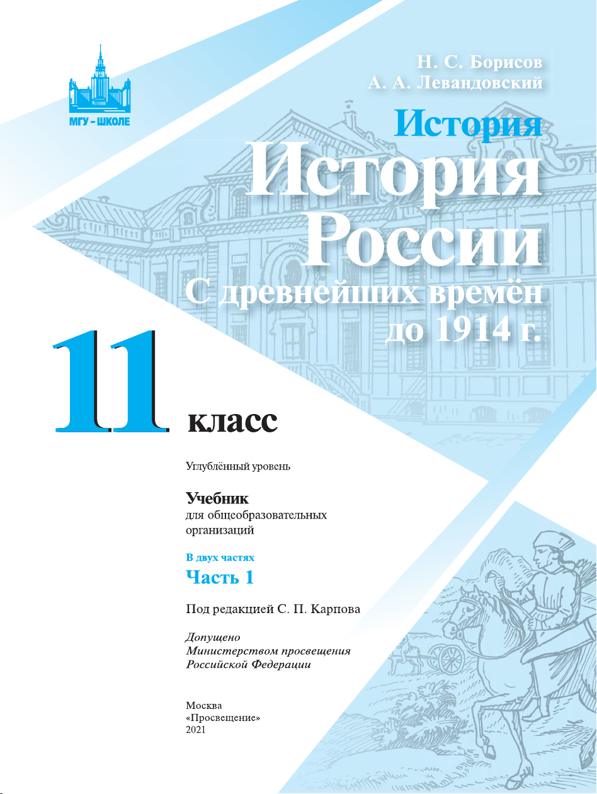
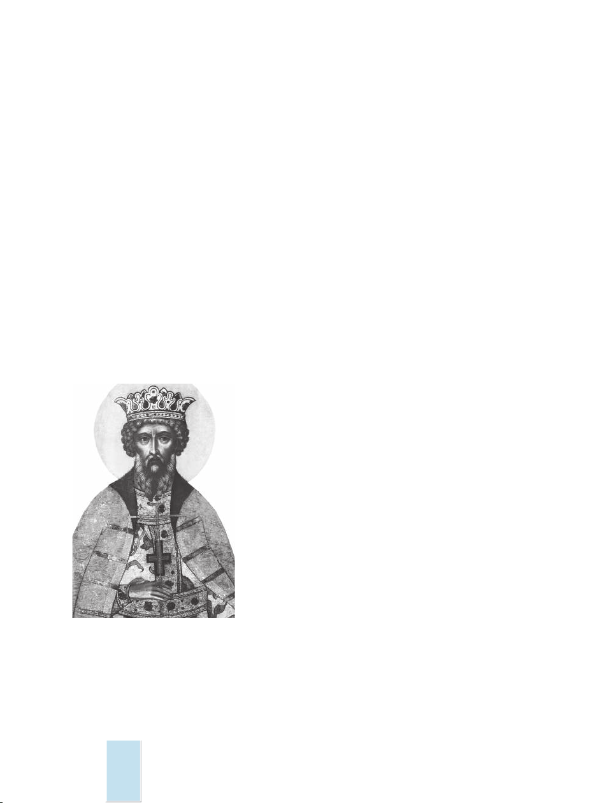
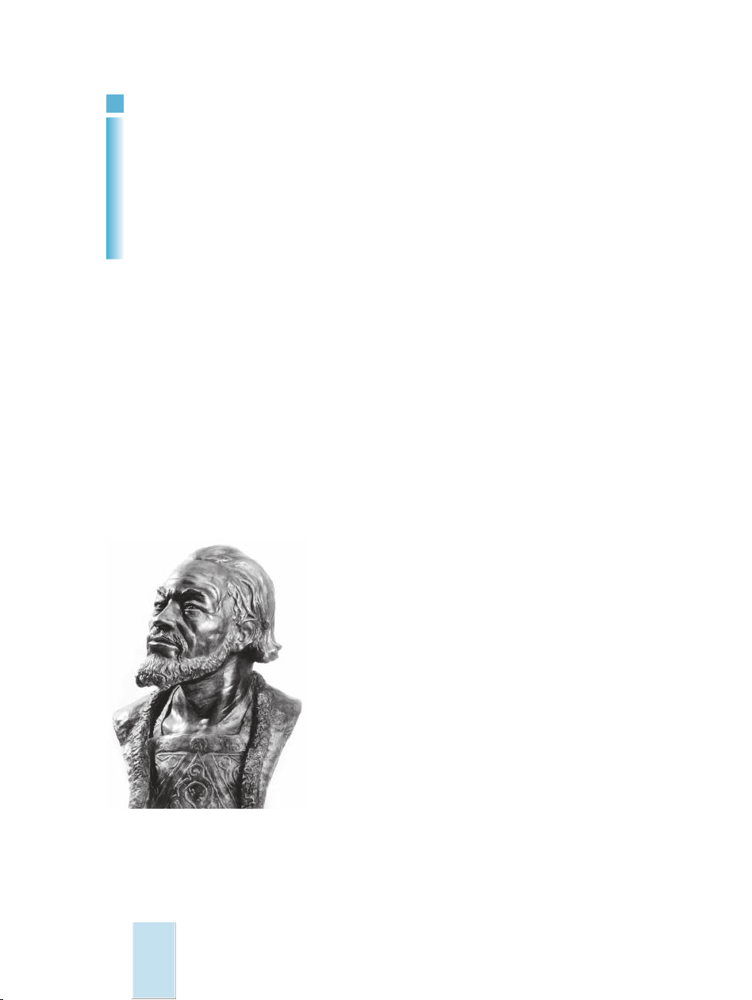

Софийский собор в Новгороде. XI в.
Евангелист Марк. Миниатюра
из Остромирова Евангелия. ХI в.
Миниатюра из Изборника
Святослава. 1073 г.
Богоматерь Владимирская. Икона XII в.
Храм Покрова на Нерли под Владимиром. XII в.
Золотые ворота во Владимире. XII в.
Софийский собор в Киеве. XI в.; перестроен в XVII в.
Белокаменная резьба Георгиевского собора
в Юрьеве-Польском (фрагменты)
Спасо-Преображенский собор
в Переславле-Залесском. XII в.
Георгиевский собор
в Юрьеве-Польском. 1230—1234 гг.
Фреска Феофана Грека в церкви Спаса на Ильине улице в Новгороде.
Конец XIV в.
Троица. Икона Андрея Рублёва. Начало XV в.
Сергий Радонежский. Изображение на покрове. XV в.
Шапка Мономаха —
древнейшая из регалий, знак
власти, использовавшийся
при венчании на царство
Страницы из «Апостола» — первой датированной печатной книги,
изданной в России Иваном Фёдоровым в 1564 г.
Внутренний вид Грановитой палаты Московского Кремля. Конец XV в.
Крепость Ивангород. Современный вид
Царь Фёдор Иванович. Парсуна ХVII в.
Михаил Васильевич Скопин-Шуйский. Парсуна XVII в.
Царь Алексей Михайлович. Парсуна XVII в.
Жатва. Фреска Силы Савина и Гурия Никитина из церкви Ильи Пророка
в Ярославле. XVII в.
Церковь Ильи Пророка в Ярославле. ХVII в.
Церковь Покрова в Филях. 1690—1691 гг.
Грановитая палата в Московском Кремле. 1487—1491 гг. Архитекторы
Марк Фрязин и Пьетро Антонио Солари
Роспись на потолке собора Василия Блаженного в Москве. ХVII в.
Церковь Рождества Иоанна Предтечи в Угличе. ХVII в.
Древо государства Московского. Икона XVII в. Художник С. Ф. Ушаков.
Фрагмент с изображением царицы Марии, жены Алексея Михайловича
с царевичами
Список используемых иллюстраций
С. 13. Миниатюра из Радзивилловской летописи (фрагмент) (© Россия сегодня / РИА новости,
фотограф Р. Кучеров). С. 27. Оружие и доспехи древнерусских дружинников (© Россия сегодня /
РИА Новости, фотограф М. Юрченко). С. 29. Збручский идол (Shutterstock / Onyshchenko).
С. 30. Владимир Святославич. Художники С. Ф. Ушаков, Г.Зиновьев. С. 38. Ярослав Мудрый.
Реконструкция М. М. Герасимова (© Легион-Медиа). С. 39. Любечский замок. Реконструкция
Б. А.Рыбакова (© Россия сегодня / РИА новости, фотограф В.Шиянский). С. 49. Софийский собор
в Киеве. Реконструкция из учебника М.Остроградского (© Фотобанк Лори). С. 50. Софийский
собор в Полоцке (Shutterstock / Sergei Afanasev). С. 60. Андрей Боголюбский. Реконструкция
М. М.Герасимова (© Россия сегодня / РИА новости, фотограф М.Успенский). С. 62. Княжеский
шлем (© FOTODOM. ru). С. 63. Новгородский детинец. Изображение на иконе (© Россия
сегодня / РИА новости, фотограф Шелешнев). С. 64. Церковь Параскевы Пятницы в Великом
Новгороде (Shutterstock / Karasev Victor). С. 76. Святой Георгий. Рельеф Георгиевского собора
в Юрьеве Польском (© Фотобанк Лори / С.Лаврентьев). С. 77. Пятницкая церковь в Чернигове
(© Фотобанк Лори / В. Онищенко). Церковь Спаса на Нередице близ Великого Новгорода
(Shutterstock / Gorshkov Igor). С. 80. Апостол Павел. Фрагмент фрески Дмитриевского собора
во Владимире. С. 84. Миниатюра XVII в. С. 100. Даниил Александрович. Миниатюра из
«Титулярника» 1672 г. С. 104. Митрополит Пётр. Икона XV в. С. 105. Иван Калита. Миниатюра
из «Титулярника» 1672 г. С. 109. Вид на Нижегородский кремль (© Россия сегодня / РИА
новости, фотограф В. Малышев). С. 123. Иван III. Гравюра XVI в. С. 133. Русские воины-
дворяне. Рисунок из «Записок» С.Герберштейна. С. 144. Деревянная церковь Собора Пресвятой
Богородицы (© Россия сегодня / РИА новости, фотограф Г. Петрусов). С. 145. Деревянная
церковь Успения Богородицы Александро-Куштского монастыря (Shutterstock / Ovchinnicova
Irina). С. 146. Успенский собор в Звенигороде (© Легион-Медиа / И. Вдовин). Троицкий собор
Троице-Сергиевой лавры (© Фотобанк Лори / Н.Волкова). С. 147. Собор Рождества Богородицы
Ферапонтова монастыря (Shutterstock / Sergei Afanasev). С. 148. Церковь Николы на Липне
близ Великого Новгорода (© Россия сегодня / РИА новости, фотограф А.Астафьев). С. 153. План
Москвы из «Записок» С.Герберштейна (фрагмент) (© Россия сегодня / РИА новости, фотограф
В. Шияновский). С. 159. Василий III. Рисунок из «Записок» С. Герберштейна. С. 160. Елена
Глинская. Реконструкция С. А. Никитина (© Легион-Медиа). С. 163. Иван IV. Гравюра XVI в.
С. 165. Опричник. Изображение XVII в. С. 168. Миниатюра XVI в. С. 169. Замок в Нарве
(© Фотобанк Лори / В. Карасев). С. 181. Крепостные стены Соловецкого монастыря (Shutterstock /
photoff). С. 187. Борис Годунов. Изображение из «Титулярника» 1672 г. С. 190. Лжедмит-
рий I. Гравюра XVII в. С. 196. Патриарх Гермоген. Изображение из «Титулярника» 1672 г.
(© Фотобанк Лори, фотограф А.Макаров). С. 203. Сабля Д. М.Пожарского. С. 219. С. Т.Разин.
Гравюра XVII в. (© Легион-Медиа).
Вклейка: Евангелист Марк. Миниатюра из Остромирова Евангелия. Миниатюра из Изборника
Святослава. Софийский собор в Великом Новгороде (Shutterstock / Sergei Pinaev). Богоматерь
Владимирская. Икона. Храм Покрова на Нерли под Владимиром (Shutterstock / Iakov Fili-
monov). Золотые ворота во Владимире (Shutterstock / Ivan Varyukhin). Софийский собор в
Киеве (© Picvario). Спасо-Преображенский собор в Переславле-Залесском (Shutterstock /
Alexander Maksimov). Георгиевский собор в Юрьеве-Польском (© Фотобанк Лори, А.Михейчев).
Белокаменная резьба Георгиевского собора в Юрьеве-Польском (© Фотобанк Лори, фотографы
А.Михейчев, М.Карташов). Фреска Феофана Грека в церкви Спаса на Ильине улице в Новгороде.
Троица. Икона Андрея Рублёва. Сергий Радонежский. Изображение на покрове. Страница из
«Апостола». Шапка Мономаха (Shutterstock / yexelA). Ивангород (Shutterstock / Vladimir Wal-
din). Внутренний вид Грановитой палаты Московского Кремля (© Фотобанк Лори, А. Гусев).
Царь Фёдор Иванович. М. В.Скопин-Шуйский. Царь Алексей Михайлович. Парсуна (© Легион-
Медиа). Церковь Ильи Пророка в Ярославле (© С.Пинаев). Жатва. Фреска Силы Савина и Гурия
Никитина в церкви Ильи Пророка в Ярославле (Shutterstock / Lemtal Sergei). Грановитая палата
в Московском Кремле. Архитекторы Марк Фрязин и Пьетро Антонио Солари. Церковь Покрова
в Филях. Церковь Рождества Иоанна Предтечи в Угличе (Shutterstock / VLADIMIR_5). Роспись
на потолке собора Василия Блаженного в Москве (Shutterstock / pamuck). Древо государства
Московского. Икона. Фрагмент. Художник С. Ф.Ушаков.


УДК 373.167.1:94(470+571)+94(470+571)(075.3)
ББК 63.3(2)я721.6
Б82
Серия «МГУ — школе» основана в 1999 г.
Методический аппарат составлен Т. В. Коваль
Учебник допущен к использованию при реализации имеющих государствен-
ную аккредитацию образовательных программ начального общего, основного об-
щего, среднего общего образования организациями, осуществляющими образова-
тельную деятельность, в соответствии с Приказом Министерства просвещения
Российской Федерации № 766 от 23.12.2020 г.
Эксперты, осуществлявшие экспертизу учебника: Канторович А. Р., Матве-
ев Г. Ф., Машковцев А. А., Лозбенев И. Н.
Борисов, Николай Сергеевич.
История. История России. С древнейших времён до 1914 г. 11 класс :
углублённый уровень : учебник для общеобразовательных организаций :
в 2 частях / Н. С. Борисов, А. А. Левандовский ; под ред. С. П. Карпо-
ва. — Москва : Просвещение, 2021. — (МГУ — школе).
ISBN 978-5-09-084644-8.
Ч. 1. — 255 с. : ил., карты.
ISBN 978-5-09-084643-1.
Учебник создан на основе требований Федерального государственного
образовательного стандарта среднего общего образования, Концепции нового
учебно-методического комплекса по отечественной истории и Историко-куль турного
стандарта. Данное издание представляет собой повторительно-обобщающий курс по
истории России с древнейших времён до начала ХХ в. Он нацелен на осмысление
и применение ранее полученных знаний и умений, а также подготовку к итоговой
аттестации.
Авторы — известные российские историки, преподаватели МГУ им. М. В. Ло-
моносова — первостепенное внимание уделяют ключевым событиям и явлениям
российской истории. Методический аппарат пособия нацелен на активные формы
усвоения материала, в том числе с использованием современных технологий.
Учебник соответствует Концепции преподавания учебного курса «История Рос-
сии» в образовательных организациях Российской Федерации, реализующих основ-
ные общеобразовательные программы. Учебник выходит в двух частях.
УДК 373.167.1:94(470+571)+94(470+571)(075.3)
ББК 63.3(2)я721.6
ISBN 978-5-09-084643-1 (ч. 1) © АО «Издательство «Просвещение», 2021
ISBN 978-5-09-084644-8 © Художественное оформление.
АО «Издательство «Просвещение», 2021
Все права защищены
Б82

Оглавление
КАК РАБОТАТЬ С УЧЕБНИКОМ ............................ 4
Введение .............................................. 5
РАЗДЕЛ 1.
От Руси к Российскому государству ...................... 13
§ 1. Восточная Европа в середине I тысячелетия н. э.
Образование государства Русь ........................... 13
§ 2—3. Русь в конце Х — начале ХII в. ................. 22
§ 4. Культура Руси в конце Х — начале ХII в. ........... 42
§ 5—6. Русь в середине ХII — начале ХIII в. ............ 54
§ 7. Культура Руси в ХII — начале ХIII в. ............... 68
§ 8. Монгольское нашествие. Русские земли в составе
Золотой Орды ......................................... 82
§ 9—10. Русские земли в середине ХIII—ХIV вв. ......... 99
§ 11—12. Формирование единого Русского государства
(вторая половина XV — начало XVI в.) .................. 121
§ 13. Культура Руси в ХIV—ХV вв. ..................... 141
РАЗДЕЛ 2.
Россия в ХVI—ХVII вв.: от Великого княжества к Царству ... 153
§ 14—15. Россия в ХVI в. .............................. —
§ 16. Русская культура в ХVI в. ........................ 177
§ 17—18. Смута в России .............................. 184
§ 19. Ликвидация последствий Смуты. Внутренняя политика
России в ХVII в. ...................................... 206
§ 20. Внешняя политика России в ХVII в. ............... 221
§ 21. Культура России в ХVII в. ........................ 231
Средневековая Русь среди других стран Европы и Азии .... 242
Словарь терминов ..................................... 247
Литература ........................................... 254
Интернет-ресурсы ..................................... 255

4
Как работать с учебником
Уважаемые учащиеся!
Перед вами учебник для изучения повторительно-обобщающего
курса «История» углублённого уровня. Он выходит в двух частях.
Вы уже изучали этот период истории в 5—9 классах. Повтори-
тельно-обобщающий курс предполагает прежде всего использование
ранее полученных знаний и умений, а также подготовку к итого-
вой аттестации. Учебник нацелен не только на повторение важней-
ших фактов истории нашей страны с древнейших времён до начала
ХХ в., но и на осмысление причинно-следственных связей между
ними, выявление их смысла и общей логики исторического про-
цесса. Авторы видели свою задачу в раскрытии целостной картины
отечественной истории, показа места и роли России в мире.
Приступая к работе с текстами учебника, необходимо вспом-
нить изученные ранее материалы. Для этого в начале каждого па-
раграфа приводится список понятий, относящихся к излагаемой в
этом параграфе теме. Большинство из них вы должны помнить по
курсу истории России в основной школе, советуем также обращать-
ся к словарям и энциклопедиям. Здесь же даны вопросы, которые
помогут вам вспомнить ключевые события каждого исторического
периода.
Перед разделами и параграфами указаны основные проблемы
излагаемой далее темы. Постарайтесь к концу изучения материала
иметь собственное мнение по данным проблемам. В этом вам помо-
жет и работа с вопросами и заданиями после параграфов и разде-
лов, а также после документов.
Вопросы и задания, обозначенные *, предназначены прежде
всего для тех, кто интересуется историей. Они, как правило, требу-
ют привлечения дополнительной информации, в том числе из Ин-
тернета. В конце учебника приведён список литературы и интернет-
ресурсов.
В конце всех разделов помещены списки тем для исследований
и проектных работ. Советуем заранее просмотреть их и выбрать те,
которые вам интересны. Ведь работа над исследованиями и проек-
тами требует времени.
Желаем успехов!

5
Введение
Погружение в историю. История — наука, открывающая чело-
веку сокровенные глубины бытия. Только обогатив память знанием
прошлого своей страны, человек может стать её полноценным граж-
данином.
Историю страны можно сравнить с биографией человека. Зна-
комясь с тем, с кем нам предстоит вместе жить или работать, мы
обычно стараемся побольше узнать о его прошлом. Нас интересует,
где он родился и вырос, кто его родители, какое образование он по-
лучил, с кем дружит или враждует. Всё это, накладываясь на опыт
повседневного общения, позволяет нам составить более или менее
верное представление о человеке, его достоинствах и недостатках.
История любого народа — та же биография. Она помогает правиль-
но понять его настоящее и до некоторой степени заглянуть в буду-
щее.
Разные люди с разной степенью остроты воспринимают обще-
ственные проблемы и потрясения. Иные ухитряются и в самые бур-
ные времена спокойно спать на тёплой печке и видеть сладкие сны.
Другие догадываются, что вокруг происходит что-то необычное, но
предпочитают жить по принципу «моя хата с краю». Однако че-
ловек, наделённый разумом и чувством ответственности, неизбеж-
но рано или поздно захочет понять общество, в котором он живёт.
И тогда история станет для него надёжным посохом на долгом и
тернистом пути познания.
История даёт знания, необходимые для того, чтобы быть сво-
бодным. Человек, знающий историю своей страны, сможет иметь
собственную точку зрения, самостоятельную позицию в обществен-
ной жизни.
Магия времени. Правильное понимание настоящего — далеко
не всё, чем может одарить своих приверженцев прекрасная Клио.
Так называли древние греки музу истории. Ведь погружение в исто-
рию — это прежде всего погружение в тайну, имя которой — время.
«Время, становясь из будущего настоящим, выходит из какого-
то тайника, и настоящее, став прошлым, уходит в какой-то тай-
ник...» — говорил древний философ и богослов Аврелий Августин.
С тех пор прошло много веков, но и сегодня мы всё так же бес-
сильны перед одной из великих тайн жизни — тайной вездесущего
и неуловимого времени.
6
Вглядываясь в туманное зеркало минувшего, мы видим в нём
бесконечную череду созидания и разрушения. Перед нами проходят
тени многих знаменитых людей. Одни вызывают у нас восхищение,
другие — сочувствие, третьи — презрение. Одних отделяет от нас
несколько лет, других — несколько веков. Но все они уже принад-
лежат времени.
Всё, к чему прикоснулось время, приобретает какую-то осо-
бую многозначительность. Листая страницы летописей, прикаса-
ясь рукой или взглядом к немым свидетелям прошлого — древним
храмам, предметам роскоши или орудиям труда, — испытываешь
странное, волнующее чувство. Кажется, будто земля исчезла из-под
ног и ты свободно паришь в каком-то ином, безграничном простран-
стве. Это ощущение захватывающего полёта во времени. Оно — на-
града тем, кто не пожалел времени и сил, чтобы дойти до самой
сути истории.
Ремесло историка. Каждый день и час в мире происходило
и происходит множество всякого рода событий. Подобно алмазам,
которые приобретают истинную цену, только пройдя через руки
гранильщика, события нуждаются в обработке, т. е. в правильном
понимании, в расположении по степени их значимости. Здесь-то и
приходит на помощь проницательный взгляд историка, умеющего
отличить правду от вымысла, привыкшего рассматривать события
как звенья определённой цепи, тянущейся из прошлого к настоя-
щему.
Историк — хранитель памяти народа. Народ, не помнящий
своего прошлого, подобен стаду. Понимая это, люди всегда с глу-
боким уважением относились к труду историков. Их книги читали,
бережно хранили, спасали во время бедствий и пожаров.
Ещё в древности появились первые историки, воссоздавшие в своих
трудах прошлое стран и народов. «Отцом истории» называют знаме-
нитого грека Геродота, жившего в V в. до н. э. Своих великих исто-
риков имели Средние века и Новое время. На поприще российской
истории более других прославились Николай Михайлович Карамзин
(1766—1826), Сергей Михайлович Соловьёв (1820—1879) и Василий
Осипович Ключевский (1841—1911). Каждый из них нашёл в истории
своей страны немало такого, что и по сей день считается значитель-
ным и верным. Мысли историков прошлого послужат нам маяками
в плавании по океану минувшего.
Русский мир. Каковы же основные вехи исторического пути
России? И чем этот путь отличается от пути других народов?

7
Известно, что общей тенденцией развития человечества в течение
последних нескольких веков является более тесное знакомство народов
друг с другом, сближение их культур, унификация многих понятий
и представлений. Сегодня мир быстро идёт по пути глобализации —
создания экономических, политических, информационных систем,
действующих в масштабах нескольких стран или даже всего земного
шара. Всё это так. И всё же индивидуальные черты ещё долго (а может
быть, и никогда) не исчезнут в коллективном портрете человечества.
Нет нужды доказывать, что евразийская Россия по сравнению
с западноевропейскими или собственно азиатскими странами и се-
годня представляет собой «другой мир», или, пользуясь популяр-
ным ныне термином, другую цивилизацию. Так скажет не только
иностранец, побывавший в России, но и русский человек, пожив-
ший некоторое время за границей. Как же возникло и в чём состо-
ит это неповторимое своеобразие России?
Назовём пять факторов, историческое взаимодействие которых
определило своеобразие русской цивилизации.
На первое место по праву следует поставить географический
фактор. Именно география оказалась самым суровым вызовом, бро-
шенным России судьбой. Русское государство возникло и развива-
лось в крайне неблагоприятной геополитической ситуации. Рас-
положенное на самой границе оседлой земледельческой Европы и
населённых кочевниками южных степей, оно испытало на себе тяж-
кие удары многочисленных кочевых орд. Оборонительная, а затем и
наступательная борьба с кочевниками потребовала от русского наро-
да колоссального напряжения всех материальных и духовных сил.
Она завершилась лишь в 1783 г., когда последний осколок Золотой
Орды — Крымское ханство — был поглощён Российской империей.
Другой минус географического положения средневековой Руси
состоял в удалённости страны от морей, а вместе с ними и от ми-
ровых торговых путей. Много веков наши предки пытались полу-
чить свободный доступ к Чёрному или Балтийскому морю, однако
сталкивались с непреодолимыми препятствиями. Лишь в XVIII в.
эта проблема была решена в результате целого ряда длительных и
тяжёлых войн с морскими державами — Турцией и Швецией.
Суровая природа России сделала и крайне неблагоприятны-
ми условия для развития земледелия. Это стало особенно заметно,
когда центр политической жизни страны переместился из Киева
во Владимир-на-Клязьме. На глинистых косогорах, под холодным
осенним дождём вырастало Московское государство — историче-

8
ский наследник Владимирской Руси. Низкие урожаи сокращали до
минимума прибавочный продукт — тот излишек, который можно
было забрать у крестьянина на нужды армии и государственного
аппарата. В результате русский крестьянин нередко находился на
грани выживания, а Российское государство порой насильно отби-
рало у него последнее.
Отдалив Россию от морей и плодородных южных земель, судь-
ба как бы в утешение подарила ей малолюдные просторы Севера и
Сибири. Освоение этих покрытых лесом пространств принесло Рос-
сии немалые выгоды. Поначалу это была добыча ценного пушно-
го зверя — соболя, горностая и песца. С XVIII столетия началась
разработка минеральных ресурсов данных регионов. Помимо этого,
бескрайние просторы России в сочетании с суровым климатом неиз-
менно помогали ей в борьбе со всякого рода завоевателями.
Однако эти преимущества уравновешивались (если не переве-
шивались) теми минусами, которые таила в себе огромность стра-
ны. Новые земли оттягивали значительную часть и без того не-
многочисленного населения из исторического центра России. Для
обеспечения там хотя бы относительного государственного порядка
требовалась целая армия чиновников, солдат и полицейских. Необ-
ходимо было проложить тысячи вёрст дорог.
Помимо всего этого, избыток пространства порождал два опас-
ных соблазна: для общества — встать на путь экстенсивного разви-
тия экономики, а для человека — решить все свои проблемы путём
простого бегства в неведомую даль.
Географическое положение России предопределило и её замет-
ную обособленность среди других народов. В культурном отноше-
нии она представляла своего рода остров. Чтобы убедиться в этом,
достаточно взглянуть на карту. На севере территория России упи-
рается в холодную пустыню Северного Ледовитого океана. На вос-
токе такой же пустыней лежит безбрежный Тихий океан. На юге,
перешагнув через просторы степей, Россия встретилась с чередой
мусульманских стран (Турция, Иран, Афганистан), а затем и с Ки-
таем. И в том и в другом случае на юге мы столкнулись с весьма
далёкими от нас народами и культурами. Как мы для них, так и
они для нас представляли абсолютно другой мир.
Сложнее обстояло дело с западными соседями России. Близкие
нам по этническим признакам, исповедующие христианскую рели-
гию, народы Европы в принципе могли бы стать для России добры-
ми друзьями, сотрудниками в общей созидательной работе. Однако
9
судьба распорядилась иначе. Многочисленные вторжения этих на-
родов (шведов, немцев, литовцев, поляков, французов) на террито-
рию России заставляли русских смотреть на них как на извечных
врагов. Военно-политическое противостояние усугублялось религи-
озным (или идеологическим) антагонизмом. В итоге Запад стал вос-
приниматься в России как некая потенциально опасная, коварная
и беспощадная сила. В свою очередь, западные соседи привыкли
смотреть на Россию как на своего рода грозовую тучу, постоянно
нависающую над их восточной границей.
Так замыкался геополитический круг и возникало чувство историче-
ского одиночества. Его отчётливо выразил император Александр III
в своём известном суждении: «У России есть только два союзника —
её армия и флот...»
Острое ощущение исторического одиночества подталкивало мно-
гих отечественных мыслителей к выводу об особой миссии России.
Ещё в конце XV в. они назвали Москву Третьим Римом, избранной
Богом землёй, единственным оплотом истинного христианства —
православия. Позднее Россию стали прославлять как величайшую
в истории империю, а в XX столетии возвели на новый пьедестал
как «первое в мире социалистическое государство».
Трудный исторический опыт России свидетельствует о том, что
для неё одинаково пагубны как глухая обособленность «железного
занавеса», так и благодушное забвение суровых законов геополити-
ческой борьбы.
Вторым фактором, определившим своеобразие русской циви-
лизации, следует признать политический фактор. Огромная терри-
тория страны, слабость экономических связей между отдельными
областями, а также социальные и национальные противоречия, су-
ществовавшие в русском обществе, — всё это изначально предраспо-
лагало к распаду Руси на отдельные земли и княжества. Преодолеть
эту опасную тенденцию могла только сильная центральная власть,
обладающая развитым аппаратом управления и принуждения. Соз-
дать её удалось лишь московским князьям к началу XVI столетия.
Построенная ими система власти получила в истории название «са-
модержавие», т. е. неограниченная монархия. Самодержавие без
особых изменений существовало до 1917 г. Многие его черты уга-
дываются и в последующем политическом устройстве страны.
Российская монархия, как и любая политическая система, име-
ла свои достоинства и недостатки. К первым отнесём способность са-

10
модержавия направлять весь материальный и духовный потенциал
общества на решение общенациональных задач. Примерами могут
служить впечатляющие достижения России под властью самодерж-
цев: освобождение от ордынского ига, завоевание великого Волжско-
го пути, освоение Сибири, прорыв к Балтийскому и Чёрному морям,
строительство Петербурга, победа над Наполеоном и многое другое.
Помимо этого, монархия давала обществу блага, истинная ценность
которых осознаётся лишь с их утратой, — мир и порядок.
В ряду недостатков самодержавия следует назвать в первую оче-
редь его непредсказуемость. Слишком многое зависит здесь от личных
качеств монарха: от его здравого смысла, просвещённости, дальновид-
ности. Иначе говоря, хороший царь может сделать много хорошего,
а плохой — плохого. И в том и в другом случае остановить его
крайне трудно.
Пороки монархии не ограничиваются непредсказуемостью пра-
вителя. Серьёзный изъян коренится и в самой системе единовла-
стия. Монархия подразумевает беспрекословное подчинение всех
воле одного. В конечном счёте она убивает в человеке самостоятель-
ность, способность к инициативе и чувство собственного достоин-
ства. Учитывая то, что российская монархия, возникнув как систе-
ма управления государством, со временем воспроизвела себя на всех
уровнях общественной и даже личной жизни, можно представить,
какой громадный человеческий потенциал остался погребённым под
пирамидой самодержавия.
Проникнув во все сферы жизни общества, монархическое на-
чало стало его «родимым пятном». Процесс обретения человеком
экономической и политической свободы, а вместе с тем и внутрен-
него раскрепощения личности постоянно наталкивается на стерео-
типы «монархического» мышления и поведения.
Третий фактор, неизменно дающий о себе знать в русской
истории, — социальный. Суть его состоит в следующем. В силу
многих причин общество в России всегда состояло из двух нерав-
ных частей: некоторое количество богатых и большинство бедняков.
Людей, имеющих средний достаток и в целом довольных жизнью,
было немного. А между тем именно эти люди (сейчас их принято
называть средним классом) составляют основную часть населения
современных развитых стран. Немало их было в Западной Европе
и в Средние века. Средний класс является естественной опорой вся-
кой разумной власти. Он ценит существующее положение вещей
и меньше всего склонен к мятежу.

11
Русское общество всегда было крайне неустойчивым в соци-
альном отношении. Бедняки, которым «нечего терять, кроме своих
цепей», только ждут случая, чтобы взбунтоваться как против своих
господ и местных властей, так и против беспощадного к ним госу-
дарства. Понимая это, правители разрабатывали для народа самые
различные виды «кнута и пряника». Однако истинное решение во-
проса — улучшение условий жизни основной части населения —
оставалось неразрешимой задачей. И потому угроза «русского бун-
та» всегда была кошмаром для правящего класса.
Призрачность всякого благополучия в стране, где никогда не
исчезало ощущение близкой катастрофы, придавала российской
жизни особую напряжённость.
На формирование российской цивилизации существенное влия-
ние оказывал и четвёртый фактор — национальный. Русь ещё в древ-
ности включала в свой состав значительную часть кочевников степей,
а также финно-угорские народы севера и окско-волжского между-
речья. Пёстрым по этническому составу было и Московское государ-
ство, не говоря уже о Российской империи XVIII—XIX вв. Вхожде-
ние тех или иных народов в состав России происходило по-разному.
Одни приходили сами, других приводили силой, следуя неумолимой
логике геополитической борьбы и государственных интересов. Однако
для большинства народов присоединение к России (при всех его ми-
нусах) являлось оптимальным вариантом исторического развития.
Этническая пестрота России и неизбежно сопровождавшие её
сепаратистские настроения служили одной из предпосылок для уси-
ления монархии, развития её военно-полицейского аппарата. Однако
силовое решение национальных проблем всегда считалось крайним
средством. Российская монархия постепенно выработала достаточно
гибкую и эффективную национальную политику. Она стремилась
привлечь на свою сторону местную знать, сохраняя за ней прежние
и предоставляя новые привилегии, включая её в состав общерусско-
го правящего класса. Москва по возможности избегала вмешатель-
ства во внутреннюю жизнь национальных общин. Всё это позволяло
свести до минимума противоречия и конфликты.
Важным обстоятельством была традиционная терпимость и
уживчивость русского народа. Переселяясь в национальные районы,
русские крестьяне быстро находили общий язык с местными жите-
лями. Им совершенно чужда была психология «нации господ».
Многонациональный состав Российского государства способ-
ствовал его успехам в различных областях. Приток свежих сил и
12
«свежей крови» повышал энергетический потенциал не только ари-
стократии, но и всего народа в целом. Традиции национальных
культур обогащали русскую культуру, делали её более многообраз-
ной и универсальной.
Пятым фактором, определившим своеобразие России, следует
признать её традиционную религию — православие. Оно отличает-
ся от двух других важнейших ветвей христианства — католичества
и протестантизма — не только внешними признаками (обрядность,
разночтения в священных текстах, организационная структура), но
и системой ценностей и приоритетов. Так, например, характерны-
ми чертами православия являются органическая связь церкви с го-
сударством, преклонение перед монашеским аскетизмом, сильная
привязанность к внешним проявлениям культа — церковным со-
оружениям, иконам, мощам.
Православная система ценностей глубоко укоренилась в со-
знании русского народа. Даже люди внешне весьма далёкие от
церкви в своих поступках зачастую руководствуются этой систе-
мой, подсознательно воспринятой ими от их близких и далёких
предков.
Все перечисленные выше факторы — географический, поли-
тический, социальный, национальный и религиозный — в течение
многих веков воздействовали на русское общество и формировали
его уникальный образ жизни и тип мышления. При всём разно-
образии человеческих личностей в каждом из нас можно разглядеть
эти родовые черты. И потому, изучая историю России, мы, кроме
всего прочего, изучаем и самих себя.
Итак, с любовью к России и с желанием познать себя через
познание своей страны мы отправляемся в далёкий путь истории.
1. Назовите основные факторы, определившие своеобразие русской
цивилизации. Какие из них и как проявляются в настоящее время?
2. Используя знания по всеобщей истории, сравните действие фак-
торов, определяющих цивилизационное развитие России и одной из
стран Запада или Востока. 3*. Выскажите своё мнение: существует
ли взаимосвязь между ценностями православия и действием геогра-
фического, политического, социального и национального факторов
в истории России? 4*. Подготовьте выступление на одну из тем:
«Полнее сознавая прошедшее, мы ускоряем современное; глубже опу-
скаясь в смысл былого — раскрываем смысл будущего…» (А. И. Гер-
цен), «Предмет изучения истории — человек во времени» (М. Блок),
«Что даёт человеку изучение истории своей страны».
13
От Руси к Российскому государству
Общие проблемы. Общее и особенное в возникновении и развитии
государства Русь и других раннесредневековых государств Европы,
единого Русского государства и западноевропейских централизован-
ных государств.
Проблема. Определите общие черты и особенности образования
государства Русь и раннефеодальных государств Западной Европы.
Вспомните значения понятий: древнерусская народность, историогра-
фия, археологическая культура, историческая лингвистика, форма
землепользования, территориальная община, союз племён, норманн-
ская теория.
Ответьте на вопросы. Когда началось великое переселение народов?
Назовите три ветви славян и укажите, по каким территориям про-
изошло их расселение.
Народы и государства на территории нашей страны в древно-
сти. Рождение народов происходило примерно так же, как неторо-
пливый рост дерева: от ствола отделялись крупные боковые ветви,
от них со временем вырастали ветки поменьше, а те, в свою оче-
редь, давали зеленеющую листьями молодую поросль.
Пользуясь этой простой картинкой, можно сказать, что рус-
ские (великороссы) представляют собой отрасль от ветви, имену-
емой восточными славянами (другое название — древнерусская
народность). Разделение некогда единых в этническом отношении
восточных славян на три части: русские (великороссы), украинцы
(малороссы) и белорусы — началось в XIV—XV вв. под воздей-
ствием исторических обстоятельств.
Ослабевшие от бесконечных внутренних усобиц и татарских
набегов, западные и юго-западные области государства Русь отошли
Восточная Европа в середине I тысячелетия н. э.
Образование государства Русь
РАЗДЕЛ 1
§ 1

14
к Польше и Литве. Северо-Восточная Русь не смогла этому воспро-
тивиться, так как сама была обессилена княжескими распрями и
изнемогала под властью Золотой Орды. Та часть восточных славян,
которая оказалась в составе Польши и Литвы (объединившихся в
1569 г. в Речь Посполитую), подверглась сильному культурному
воздействию. Вернувшись в состав Российского государства в кон-
це XVIII в., они уже осознавали себя особыми этнокультурными
общностями — украинцами и белорусами.
В своё время восточные славяне также отделились от единой
славянской ветви индоевропейского древа. Это произошло в середи-
не I тысячелетия н. э. Часть славян покинула свою историческую
прародину — земли от реки Одер на западе до Днепра на восто-
ке — и отправилась искать счастья в новые края. Одним удалось
обосноваться на Балканском полуострове, где они стали родона-
чальниками южных славян (болгары, сербы, хорваты, словенцы,
македонцы, боснийцы, черногорцы). Другие предпочли остаться
на прежних территориях. Они дали начало современным запад-
ным славянам (поляки, чехи, словаки). Третьи двинулись на восток
и заняли огромные слабозаселённые территории от Невы и Ладож-
ского озера на севере до Среднего Поднепровья на юге и от Кар-
пат на западе до правых притоков Волги на востоке. Эти последние
и были восточными славянами.
Восточная Европа в середине I тысячелетия н. э. К сожале-
нию, историки не имеют возможности сколько-нибудь подробно
проследить ход переселения славян. Главная причина — почти
полное отсутствие письменных источников. Письменность появи-
лась у славян лишь во второй половине IX в. Поэтому ранние све-
дения о славянах можно найти лишь в сочинениях римских авто-
ров I в. н. э. — Плиния Старшего и Тацита. Позднее о славянах
упоминали византийские авторы — историки Прокопий Кесарий-
ский и Иордан (VI в.). Все они писали об этом далёком и варвар-
ском народе мало и туманно. Даже название «славяне» появляется
в источниках лишь с VI в. н. э. Во времена Плиния и Тацита их
называли венедами, а позднее — антами и склавинами. Но если
римлян славяне интересовали лишь как часть общей картины мира,
то для византийцев они уже были опасными врагами, постоянно
вторгавшимися в северные области империи.
А теперь обратимся к тем сравнительно недавним временам,
когда уже можно сказать хоть что-то определённое о жизни наших
прямых предков — восточных славян.

15
Хозяйственная деятельность. Основным занятием восточных
славян было земледелие. Особенно благоприятные для него условия
существовали на юге, в лесостепной и степной полосе. Климат здесь
был мягким и умеренным, а почвы — плодородными. Их мягкая
структура позволяла использовать тяжёлое, но эффективное орудие —
плуг. При пахоте он хорошо перемешивает землю и тем самым повы-
шает урожайность. В тяжёлый плуг запрягали могучих волов.
В южных областях, помимо всего прочего, славяне могли,
пользуясь удобными водными путями (Днепр, Южный Буг, Днестр,
Прут, Дунай), с выгодой продать выращенные ими пшеницу, яч-
мень и просо кочевникам степей, в греческие города Северного
Причерноморья и в Византию. В степных просторах имелись также
все условия и для развития коневодства.
Иное дело северные области расселения восточных славян. Там
хлебопашцу приходилось использовать трудоёмкие методы подсечно-
огневой системы земледелия. Срубленным деревьям давали высох-
нуть, а затем их сжигали. После этого на гари корчевали пни и
пахали пашню. Основным орудием труда служила соха. Она была
лёгкой и простой в изготовлении. Однако соха не давала глубокой
и тщательной вспашки земли. Удобренная золой почва поначалу
давала хороший урожай, но вскоре её плодородие резко снижалось.
Помимо земледелия, восточные славяне занимались скотовод-
ством, рыболовством, охотой и собирательством. Соотношение этих
видов хозяйственной деятельности в каждом конкретном случае
зависело от местных условий. Бескрайние леса, бесчисленные реки
и озёра Севера создавали прекрасные условия для охоты и рыбо-
ловства, сбора грибов и ягод. В дуплах старых деревьев можно
было найти мёд диких пчёл. Каждое такое дупло (борть) могло
принести удачливому добытчику немало сладкого мёда. Из лесного
мёда и хмеля славяне готовили веселящие душу хмельные напит-
ки. В дело шёл и собранный в бортях воск, который охотно поку-
пали иноземцы.
Социальное развитие. В VI—IX вв. у восточных славян шло
разложение родового строя и складывалось классовое общество.
Родовая община постепенно уступала место территориальной (со-
седской). Быстрое развитие орудий труда делало человека более са-
мостоятельным, позволяло ему в одиночку или в небольшом коллек-
тиве выстоять в борьбе с природой. Неуклонно возрастало значение
личности во всех сферах жизни общества. Расцветала племенная
знать, уже вкусившая сладкие плоды власти и богатства. Она окру-
16
жала себя роскошью и вооружёнными слугами. Венчало этот дли-
тельный процесс образование государства Русь.
Вопрос о природе государства и механизмах его возникновения
издавна вызывает споры среди учёных. Большинство современных
исследователей считают неправомерным связывать возникновение
государства с одной-единственной причиной. Появлению государ-
ственной организации общества способствовал комплекс разнообраз-
ных факторов и процессов. Развитие хозяйства, усложнение трудо-
вых и социальных отношений требовали новой, более эффективной
системы организации жизни общества. И в этом смысле создание
государства отвечало общим интересам. Однако руководящая роль
в государстве стала привилегией узкого круга лиц.
Во главе племён становится уже не избранный народом вождь,
а устойчивая династия правителей. Отголоски этой системы отра-
зились в древнерусской легенде об основателе города Киева — кня-
зе Кие, который считался родоначальником одной из таких дина-
стий. Это уже далеко от традиций родового строя. Отсюда остаётся
всего один шаг до государства.
Путь «из варяг в греки». Для развития торговли во все време-
на требуется не только наличие товаров, имеющих спрос на рынке,
но и существование удобных путей для их ввоза и вывоза. Глав-
ными дорогами в землях восточных славян служили реки. Много-
водные южные реки — Днепр, Южный Буг, Днестр — несли свои
воды в Чёрное море. Верховье Днепра располагалось неподалёку от
истоков рек, текущих на север, к Балтийскому морю. Торной доро-
гой на восток служила Волга — самая длинная река Европы.
Там, где реки ближе всего подходили друг к другу, обычно
прокладывали волок — участок пути, на котором корабли вытаски-
вали на сушу и с помощью конных упряжек и особых приспособле-
ний волочили до другой реки.
Стержнем всей системы водных путей был знаменитый путь «из ва-
ряг в греки». Он служил как для международной транзитной тор-
говли (Балтика — Чёрное море — Византия), так и для внешней
торговли Руси. Следуя этим путём, варяжские дружины и торговые
караваны шли из Финского залива Балтийского моря по реке Неве
в Ладожское озеро, а оттуда вверх по реке Волхов в озеро Ильмень.
(Недалеко от истока Волхова вырос Новгород — тогдашняя столи-
ца Русского Севера.) Переплыв Ильмень, путешественники входили
в устье реки Ловати, впадающей в озеро с юга. По Ловати и её при-
токам путь вёл через волок к верховьям Днепра. Движение по Дне-
пру от Смоленска до Киева было относительно спокойным.
17
В гостеприимном Киеве путники могли отдохнуть и пополнить свои
запасы. Впереди их ждали суровые испытания. В нижнем течении
Днепра ладьи приходилось вновь вытаскивать на сушу, чтобы ми-
новать каменистые речные пороги. Именно здесь хищные кочевники
часто устраивали засады на купеческие караваны. Лишь пройдя че-
рез устье Днепра, путники могли облегчённо вздохнуть и продолжить
свой путь в Константинополь (Царьград) вдоль западного побережья
Чёрного моря.
Торговля с Византией играла важную роль в жизни восточных
славян. Первые князья из династии Рюриковичей (Олег, Игорь,
Святослав) уделяли ей особенно много внимания. Их казну попол-
няли таможенные сборы с иноземных купцов. Помимо этого, кня-
зья и сами занимались торговлей. Зимой они отправлялись в кру-
говые объезды своих владений — полюдье. Собранную во время
этих объездов дань (пушнина, мёд, воск, лён, рабы) князья затем
отправляли на продажу в Царьград. Обратно на Русь торговые ка-
раваны везли пряности, шёлковые ткани, ювелирные изделия, вино
и фрукты.
Источники не сохранили точных данных о масштабах внешней
торговли восточных славян, о её месте среди других видов их дея-
тельности. Белые пятна истории, как обычно, заполнили гипотезы
учёных. В. О. Ключевский полагал, что именно торговля товара-
ми лесных промыслов преобладала в хозяйственной жизни той эпо-
хи. Да и само государство Русь, по его мнению, выросло прежде
всего из необходимости обеспечить безопасность торговых путей.
В современной науке признаётся важная роль внешней торговли, од-
нако на первое место выдвигается всё же земледелие.
Призвание Рюрика. Историю России можно изобразить в виде
бесконечной дороги, по которой мчится, гремя бубенцами, знаме-
нитая гоголевская «птица-тройка». Местами эта дорога находится
в относительно хорошем состоянии, местами — в довольно сквер-
ном, а местами кажется и вовсе не проезжей. (Речь идёт, конечно,
не о самой истории, а о наших знаниях о том или ином её пери-
оде.) Продолжая это сравнение, можно сказать, что в самом нача-
ле исторического пути России нас ожидает полное «бездорожье» —
проблема образования Древнерусского государства. Трудно найти
другой вопрос, который был бы так слабо освещён в источниках, но
при этом так многократно, противоречиво, а подчас и тенденциозно
истолкован множеством комментаторов. А между тем это вопрос об
истоках. Такого рода вопросы всегда вызывают особый интерес.

18
Суть дела заключается в следующем. Под 862 г. (по приня-
тому в летописях счёту — 6370 г. от Сотворения мира) «Повесть
временных лет» сообщает о том, что среди северных народов —
ильменских словен, кривичей, чуди и веси — несколько лет шла
жестокая усобица. Устав от кровопролития, они решили пригласить
себе справедливого и сильного князя откуда-нибудь со стороны.
В истолковании знаменитого рассказа из «Повести временных
лет» (он помещён после параграфа) историки разделились на не-
сколько «партий». Одни принимают весь рассказ за чистую правду.
Другие, напротив, считают, что всё это выдумка летописца начала
XII в., пожелавшего украсить правящую династию заморским про-
исхождением. Третьи соглашаются признать лишь сам факт прибы-
тия в Новгород около 862 г. какого-то чужеземного князя по имени
Рюрик с дружиной, а всё остальное, и особенно объяснение слова
«русь» как названия одного из скандинавских племён, считают не-
достоверным. В обоснование этой точки зрения они ссылаются пре-
жде всего на отсутствие сведений о роде или племени с таким на-
званием в тогдашней Швеции.
Загадочная Русь. Неизбежно возникает вопрос: откуда же взя-
лось имя «Русь», вскоре превратившееся в название нашей страны?
Ответить на него затруднительно хотя бы потому, что в Централь-
ной и Восточной Европе в I тысячелетии н. э. известно множество
народов с именем, близким к искомому. «Русы», «руги», «росы»,
«русины» встречаются то тут, то там. Это имя таинственно мерцает
сквозь тьму веков. Некоторые историки считают, что варяги-русь
происходили из славян либо других народов, живших по южному
берегу Балтийского моря. Существует точка зрения, согласно кото-
рой слово «русь» возникло среди самих восточных славян: так мог
называться союз племён, существовавший южнее Киева, в бассейне
правого притока Днепра — реки Рось. Наконец, высказано и та-
кое предположение: слово «русь» вообще не являлось обозначением
какого-то конкретного народа, оно происходит от финского слова
«руотси» — гребцы. Так называли соседние славянам финно-угор-
ские племена приходивших на своих многовёсельных ладьях скан-
динавских морских бродяг. От финнов это имя якобы перешло и
в язык восточных славян, приняв более краткую форму «русь».
Норманнская теория. Изучение вопроса о происхождении за-
гадочной «руси» затрудняется ещё и тем, что данный сюжет (как и
некоторые другие темы отечественной истории) имеет политический
привкус. Летописный рассказ о призвании варягов ещё в середи-

19
не XVIII в. стал основой для так называемой норманнской теории.
Суть этой теории в стремлении доказать политическую и социаль-
ную неполноценность восточных славян, вынужденных уже в самом
начале своего исторического пути обращаться за помощью к более
развитым германским народам. Понятно, что такие суждения вы-
звали резкие возражения. Учёный мир разделился на «норманни-
стов» и «антинорманнистов».
Современное понимание государства как результата внутрен-
него развития того или иного общества, в сущности, не оставляет
места для рассуждений о том, будто государство Русь создано бла-
годаря лишь варягам. Спор может идти только о том, кто такие ва-
ряги, какова была их роль в той или иной конкретно-исторической
ситуации, каков был их вклад в развитие древнерусской государ-
ственности и культуры.
Государство и коварство. Согласно летописям, Рюрик правил
в Новгороде и северных землях до своей кончины в 879 г. Источни-
ки не сохранили почти никаких подробностей его княжения. Значе-
ние этого таинственного деятеля русской истории состоит исключи-
тельно в том, что его принято считать родоначальником династии
Рюриковичей, представители которой правили страной до 1598 г.
Только благодаря этому обстоятельству бронзовая фигура Рюрика
занимает почётное место среди других фигур памятника «Тысячеле-
тие России» в Великом Новгороде.
Перед кончиной князь Рюрик завещал престол сородичу Оле-
гу, поручив ему быть опекуном своего малолетнего сына Игоря. Три
года спустя Олег предпринял поход на Киев, где в это время пра-
вили варяги Аскольд и Дир. Выдав свой отряд за мирный купече-
ский караван, Олег обманом заманил киевских правителей на свой
корабль и расправился с ними. После этого его воины внезапной
атакой захватили Киев. Теперь под властью Олега оказались оба
предгосударственных объединения — северное (с центром в Новго-
роде) и южное (с центром в Киеве). Экономическое, политическое и
культурное значение Киева было важнее, чем значение Новгорода.
Поэтому вскоре Олег перенёс сюда свой престол, оставив в Новго-
роде наместников. Тем самым был сделан последний шаг на пути
создания восточнославянского государства.
Понятно, что появление на свет нового государства — процесс
сокровенный и постепенный. О его рождении говорят такие при-
знаки, как чёткое, общепризнанное деление общества на управля-
ющих и управляемых, наличие системы налогов, необходимых для
20
обеспечения правящего слоя всем необходимым, а также появление
новых рубежей, не совпадающих с прежними племенными границами.
И всё же ни одна наука не может обойтись без некоторых услов-
ностей. Условной датой рождения государства Русь считается объеди-
нение под властью князя Олега Новгорода и Киева в 882 г.
1. Какие изменения происходят в хозяйстве и обществе славян в кон-
це I тысячелетия? Для ответа используйте сведения Прокопия Кеса-
рийского о славянах и антах. 2. Определите, какие факторы лежали
в основе формирования государства у восточных славян. Соотнеси-
те их с факторами цивилизационного развития. 3. Выделите этапы
складывания государства у восточных славян. 4*. Проанализируйте
отрывок из «Повести временных лет» о призвании варягов. Выска-
жите свою точку зрения по «норманнскому вопросу». 5*. Представь-
те себя участниками конференции на тему «Происхождение и ранняя
история восточных славян» — профессиональными историками, ар-
хеологами, лингвистами. Подготовьте выступление, используя сведе-
ния параграфа и дополнительный материал.
Документы и материалы
1. ПРОКОПИЙ КЕСАРИЙСКИЙ О СЛАВЯНАХ И АНТАХ
Эти племена, славяне и анты, не управляются одним челове-
ком, но издревле живут в народоправстве (демократии), и поэтому
у них счастье и несчастье в жизни считается делом общим. И во всём
остальном у обоих этих варварских племён вся жизнь и законы одина-
ковы. Они считают, что один только бог, творец молний, является вла-
дыкой над всеми, и ему приносят в жертву быков и совершают другие
священные обряды. Судьбы они не знают и вообще не признают, что
она по отношению к людям имеет какую-либо силу, и когда им вот-
вот грозит смерть, охваченным ли болезнью или на войне попавшим
в опасное положение, то они дают обещание, если спасутся, тотчас
же принести богу жертву за свою душу; избегнув смерти, они при-
носят в жертву то, что обещали, и думают, что спасение ими куплено
ценой этой жертвы. Они почитают реки и нимф, и всякие другие бо-
жества, приносят жертвы всем им и при помощи этих жертв произ-
водят и гадания. Живут они в жалких хижинах, на большом расстоя-
нии друг от друга, и все они часто меняют места жительства. Вступая
в битву, большинство из них идёт на врагов со щитами и дротиками

21
в руках, панцирей же они никогда не надевают; иные не носят ни ру-
башек (хитонов), ни плащей, а одни только штаны, подтянутые широ-
ким поясом на бёдрах, и в таком виде идут на сражение с врагами. У
тех и других один и тот же язык, достаточно варварский. И по внеш-
нему виду они не отличаются друг от друга. Они очень высокого ро-
ста и огромной силы. Цвет кожи и волос у них очень белый или золо-
тистый и не совсем чёрный, но все они тёмно-красные. Образ жизни
у них, как у массагетов, грубый, без всяких удобств, вечно они по-
крыты грязью, но, по существу, они не плохие и совсем не злобные,
но во всей чистоте сохраняют гуннские нравы. И некогда даже имя у
славян и антов было одно и то же. В древности оба этих племени на-
зывали спорами («рассеянными»), думаю, потому, что они жили, зани-
мая страну «спораден» рассеянно, отдельными посёлками. Поэтому-то
им и земли надо занимать много. Они живут, занимая большую часть
берега Истра (Дуная), по ту сторону реки.
2. РАССКАЗ О ПРИЗВАНИИ РЮРИКА (ИЗ «ПОВЕСТИ
ВРЕМЕННЫХ ЛЕТ»)
В год 6370 (862). Изгнали варяг за море, и не дали им дани,
и начали сами собой владеть, и не было среди них правды, и встал
род на род, и была у них усобица, и стали воевать друг с другом.
И сказали себе: «Поищем себе князя, который бы владел нами и су-
дил по праву». И пошли за море к варягам, к руси. Те варяги назы-
вались русью, как другие называются шведы, а иные норманны и ан-
глы, а ещё иные готландцы, — вот так и эти прозывались. Сказали
руси чудь, славяне, кривичи и весь: «Земля наша велика и обильна,
а порядка в ней нет. Приходите княжить и владеть нами». И избрались
трое братьев со своими родами, и взяли с собой всю русь, и пришли,
и сел старший, Рюрик, в Новгороде, а другой, Синеус, — на Белоозе-
ре, а третий, Трувор, — в Изборске. И от тех варягов прозвалась Рус-
ская земля. Новгородцы же — те люди от варяжского рода, а прежде
были славяне. Через два же года умерли Синеус и брат его Трувор.
И овладел всею властью один Рюрик, и стал раздавать мужам сво-
им города — тому Полоцк, этому Ростов, другому Белоозеро. Варяги
в этих городах — находники, а коренное население в Новгороде — сла-
вяне, в Полоцке — кривичи, в Ростове — меря, в Белоозере — весь,
в Муроме — мурома, и над теми всеми властвовал Рюрик. И было
у него два мужа, не родственники его, но бояре, и отпросились они
в Царьград со своим родом. И отправились по Днепру, и когда плы-
22
ли мимо, то увидели на горе небольшой город. И спросили: «Чей это
городок?» Тамошние же жители ответили: «Были три брата, Кий, Щек
и Хорив, которые построили городок этот и сгинули, а мы тут сидим,
их потомки, и платим дань хазарам». Аскольд же и Дир остались
в этом городе, собрали у себя много варягов и стали владеть зем-
лёю полян. Рюрик же княжил в Новгороде.
1. Сгруппируйте информацию источников по проблемам: а) условия
жизни славянских племён; б) общественные отношения; в) религи-
озные верования. Сделайте вывод, о какой стадии развития древ-
неславянского общества повествует автор. Как вы думаете, какие
дополнительные источники необходимо привлечь, чтобы информа-
ция о славянах была более полной и достоверной? 2. Как вы объ-
ясните замечание Прокопия Кесарийского: «Живут они в жалких
хижинах, на большом расстоянии друг от друга, и все они часто
меняют места жительства»? 3. Представьте информацию источника
о призвании Рюрика в виде сценария фильма, где кадр первый —
жизнь славян после изгнания варягов, кадр второй — решение о
призвании князя и т. д. Придумайте название для вашего фильма.
Можно ли считать ваш фильм документальным? Почему? 4. Соотне-
сите сведения летописца и данные исторической карты. Определите
первоначальные границы государства Русь. В чём проявляется его
полиэтничность?
Русь в конце Х — начале ХII в.
§ 2—3
Проблема. Какие задачи раннефеодальное государство Русь выполни-
ло успешно? Какие задачи оно не смогло решить? Почему?
Вспомните значения понятий: феодализм, раннефеодальное государ-
ство, система внеэкономического принуждения, феодальная рента,
«лествичная система».
Ответьте на вопросы. Чем отличается княжеская власть от власти
старейшины? Что такое полюдье?
Объединение под властью князя Олега Киева и Новгорода
в 882 г. принято считать началом государства Русь. Современники
называли это государство просто Русью. Историки зачастую име-
нуют его Киевской Русью или Древней Русью. В качестве единого

23
государства Русь просуществовала всего лишь около 250 лет. Её
окончательный распад на самостоятельные земли связывают с кончи-
ной великого князя киевского Мстислава Владимировича в 1132 г.
Но, несмотря на свой недолгий по меркам государства век, Русь
сыграла огромную созидательную роль в истории восточных сла-
вян. Именно Русь стала тем общим корнем, от которого пошли в
рост государственные и культурные традиции русского, украинско-
го и белорусского народов.
Земля и воля. Русь представляла собой раннефеодальное го-
сударство. Это определение требует некоторых пояснений. Начнём
с понятия «феодализм». В современной отечественной исторической
науке под феодализмом принято понимать такую систему обще-
ственных отношений, для которой характерно прежде всего сочета-
ние крупной земельной собственности (на Руси она называлась вот-
чиной) и мелкого крестьянского владения.
За пользование землями, принадлежащими крупным собствен-
никам (князьям, боярам, монастырям или епископским кафедрам),
земледельцы платили феодальную ренту. Она могла выступать
в трёх видах: натуральная (поставка собственнику тех или иных
продуктов), отработочная (выполнение разных работ в хозяйстве
собственника) и денежная (выплата собственнику определённых де-
нежных сумм). В реальных отношениях между собственником и
живущими на его земле крестьянами обычно присутствовали все
три вида ренты в том или ином сочетании.
Прежняя дань, которую платили киевскому князю покорённые
славянские племена, понемногу превращалась в феодальную ренту.
В качестве верховного собственника на землю выступало само госу-
дарство, живым воплощением которого были многочисленные кня-
зья Рюриковичи. Государство уступало некоторую часть своих прав
(а вместе с ними и своих доходов) высшему слою правящего клас-
са — боярству. Бояре делились землёй и привилегиями со средни-
ми и низшими слоями правящего класса. В итоге возникала своего
рода пирамида власти и собственности, основанием которой служи-
ли труженики — крестьяне.
Понятно, что крестьяне тяготились выплатой ренты. Её регуляр-
ное поступление возможно было лишь при наличии системы внеэко-
номического принуждения, включавшей в себя такие институты, как
армия, полиция, суд, тюрьма. Под страхом скорого и сурового нака-
зания земледельцы вынуждены были принимать те условия, которые
диктовал им собственник и стоявшее за его спиной государство.
24
Феодализм на Руси был ранним, т. е. молодым, незрелым. Князья и
бояре широко использовали в своём вотчинном хозяйстве труд рабов.
Наряду с рабами и платившими ренту земледельцами существовало
многочисленное лично свободное и практически независимое населе-
ние, объединённое в соседские общины. Молодое государство не име-
ло ещё своих постоянных структур власти на местах.
Историки по-разному оценивают соотношение родовых, рабовладель-
ческих и феодальных отношений на Руси в X—XI вв. Ясно, что ос-
новное направление социального развития — постепенное изживание
норм родового и рабовладельческого строя. Однако и к концу суще-
ствования единой Руси феодальные отношения ещё не были преоб-
ладающими. Поэтому Русь в древности принято называть раннефео-
дальным государством.
Разбитое зеркало. Разногласия среди историков относитель-
но характера социальных отношений на Руси во многом объясня-
ются недостатком внятных и надёжных источников. Все рассужде-
ния на эту тему основываются главным образом на знаменитой
Русской Правде. Это — собрание законов, действовавших на Руси
в XI—XV вв. До наших дней сохранилось более 100 списков Рус-
ской Правды. Их изучение позволило исследователям выделить три
редакции памятника: Краткую Правду (вторая половина XI — пер-
вая треть XII в.), Пространную Правду (середина XII в.) и Сокра-
щённую Правду (XV—XVII вв.). Первые две редакции — самосто-
ятельные произведения, а третья — лишь выборка из второй тех
положений, которые сохраняли свою силу в более позднее время.
Первый камень в основание Краткой редакции Русской Прав-
ды положил князь Ярослав Мудрый. Около 1016 г. он счёл необ-
ходимым установить твёрдые нормы штрафов за различные престу-
пления своих буйных наёмников-варягов и враждовавших с ними
жителей Новгорода. Так возникла Правда Ярослава — древнейшая
часть Краткой редакции Русской Правды, её первые 18 статей.
Примечательно, что Ярослав Мудрый в своём законодательстве при-
знаёт древний обычай родового общества — кровную месть, хотя и
ограничивает её узким кругом близких родственников.
Шло время. Жизнь становилась более сложной и динамичной.
Появилось много социальных конфликтов, которые нельзя было ула-
дить на основе обычного права. И вот спустя примерно полстолетия
после создания Правды Ярослава его старшие сыновья Изяслав, Свя-
тослав и Всеволод, собравшись вместе и посовещавшись со своими
боярами, решили прибавить к законам отца новые. Плодом их за-
25
конотворчества стала Правда Ярославичей — вторая часть Краткой
редакции Русской Правды. В ней основное внимание уделяется уже
не ссорам между воинственными «мужами», а покушениям на част-
ную собственность, нападениям на княжеских чиновников. Штраф за
убийство человека теперь напрямую зависит от его социального по-
ложения. Жизнь княжеского управляющего (огнищанина) оценена
в восемьдесят гривен, а смерда и холопа — всего в пять.
Помимо названных выше законов, Краткая редакция Русской
Правды вобрала в себя и несколько постановлений, время и место
возникновения которых точно неизвестно. В их числе «Покон вир-
ный» (инструкция о содержании княжеского чиновника, прибывше-
го в село для сбора дани) и «Урок мостников» (постановление об
оплате труда одной из категорий ремесленников).
Словно снежный ком, древний кодекс обрастал со временем всё
новыми и новыми положениями. Прошло ещё полвека — и в роли
мудрого законодателя выступил знаменитый полководец Владимир
Мономах. Около 1113 г. он принял так называемый Устав Влади-
мира Мономаха, установивший твёрдые нормы ссудного процента.
Тем самым князь положил конец произволу алчных ростовщиков
и оказал большую услугу торгово-ремесленному люду. Внеся в Крат-
кую редакцию Русской Правды этот закон вместе с другими новыми
постановлениями, Владимир Мономах создал по существу самостоя-
тельный памятник — Пространную редакцию Русской Правды.
Однако в законах киевских князей отражены далеко не все стороны
жизни тогдашнего общества. Многие конфликтные ситуации разре-
шались на основе обычаев (обычного права) или же передавались на
суд церкви. Да и в самой Русской Правде есть множество «тёмных
мест», смысл которых нам уже непонятен. При переписке текста
книжники часто правили, сокращали или расширяли его по своему
усмотрению, совсем не думая о слезах будущих историков.
Головоломки Русской Правды не ограничиваются её причудли-
вой внутренней структурой, напоминающей разбросанные тут и там
и кое-где смыкающиеся друг с другом постройки боярского двора.
Каждое слово, даже каждая точка или запятая вызывают вопро-
сы. Но самое сложное — правильное понимание терминов. Назы-
вая какое-то явление или какую-то категорию населения опреде-
лённым именем, законодатель (а вслед за ним и переписчик текста)
не объясняет его значения. Для него оно было очевидным. Однако
значение слов со временем часто меняется, а некоторые слова во-

26
обще выходят из употребления. В результате каждый термин Рус-
ской Правды, обозначающий различные категории населения (муж,
холоп, челядин, смерд, закуп, рядович), представляет собой загад-
ку для историка. После многих дискуссий преобладает мнение, что
муж — это свободный человек вообще, холоп и челядин по своему
положению близки к рабам, а смерд — свободный крестьянин-об-
щинник. Рядович, по-видимому, служил своему хозяину на услови-
ях какого-то ряда, т. е. договора, а закуп попадал в личную зави-
симость до возвращения взятой им ссуды — купы.
«Русская Правда — хорошее, но разбитое зеркало русского
права IX—XI вв.», — говорил В. О. Ключевский. Разглядывая его
осколки, историки стараются увидеть в них зыбкие очертания дав-
но исчезнувшего мира.
Герои минувших времён. Первые правители Руси предстают
перед нами на страницах «Повести временных лет»в виде каких-то
первобытных великанов в сверкающих доспехах. Они без устали
скачут сквозь необозримые пространства на своих могучих боевых
конях. Племена и народы склоняются перед ними и приносят им
дань...
Мы, вероятно, уже никогда не узнаем, какими они были
в жизни, эти прославленные историей отцы — основатели русской
державы. Летописец пометил каждого из них лишь одной-двумя
красками из своей палитры. Загадочный Рюрик (862—879), воин-
ственный и коварный Олег (879—912), алчный Игорь (912—945),
хитроумная Ольга (945—964), непобедимый Святослав (964—972),
благочестивый Владимир (980—1015), мудрый Ярослав (1019—
1054)... Для историков они прежде всего хронологические знаки,
верстовые столбы истории. Об их подлинных достижениях и замыс-
лах, достоинствах и недостатках мы имеем весьма и весьма туман-
ное представление. Но некоторые черты угадываются всё же доста-
точно отчётливо.
«Героизм — это прежде всего способность действовать», — го-
ворил английский историк Т. Карлейль. Этой способностью в полной
мере обладали все наши первые князья. Кипучая энергия перепол-
няла их, порой заставляла идти на крайне опасные, но совершенно
бессмысленные предприятия.
Их главной заботой было распространение своей власти. По-
началу государство Русь было узкой лентой, протянувшейся вдоль
пути «из варяг в греки». Однако уже князь Олег заставил платить
дань не только живших вокруг Киева полян, но и более отдалён-
27
ных от него древлян, северян и радимичей. С обитавшими в низо-
вьях Днепра и Прута уличами и тиверцами он воевал, но покорить
их так и не смог.
Некоторые славянские племена без особого сопротивления при-
нимали на себя киевскую дань, так как в обмен на это Олег освобож-
дал их от уплаты аналогичной дани степнякам-хазарам. Одряхлевшая
Хазария — древнее степное государство — уже не могла отстоять сво-
их данников от натиска энергичных и воинственных Рюриковичей.
После кончины Олега (согласно преданию, записанному авто-
ром «Повести временных лет», он умер от укуса змеи, притаившей-
ся в черепе его любимого коня) долгожданную корону получил уже
немолодой Игорь. Он начал с того, что заставил древлян платить
более тяжкую дань, чем при Олеге. Ненасытность Игоря в конце
концов погубила его. В 945 г. древляне не вытерпели, схватили
князя, пришедшего в их земли с небольшим отрядом для сбора уд-
военной дани, и казнили его, привязав за ноги к двум согнутым
в дугу деревьям. Вдова Игоря княгиня Ольга с той же первобытной
жестокостью вначале перебила всю древлянскую знать (одних зако-
пала живыми в землю, других сожгла в срубе, третьих приказала
зарезать во время поминальной тризны по Игорю), а затем прошла
огнём и мечом по всей древлянской земле.
Впрочем, Ольга не хотела новых бес-
порядков. Поэтому она упорядочила систе-
му сбора дани с окрестных племён. Отны-
не их старейшины сами стали привозить
установленное количество дани (уроки)
в определённые места (погосты), откуда
она потом вывозилась в Киев. Княжеские
разъезды, сопровождавшиеся грабежом и
произволом, ушли в прошлое.
Короткое, но блестящее княжение
Святослава было наполнено воинскими
подвигами. Этот правитель отличался не-
вероятной энергией и дерзостью замыс-
лов. И на то были свои причины. Подобно
Екатерине II Великой, честолюбивая Оль-
га долго не допускала сына к верховной
власти. Лишь в 964 г. он стал полновласт-
ным хозяином Руси. К этому времени ему
уже было более 30 лет. Страстный от при-
Оружие и доспехи
древнерусских воинов
(из Государственного
исторического музея)

28
роды, он тосковал по великим делам, жаждал подвигов и славы.
И вот уже первый его поход — на север, сквозь землю диких вятичей,
а затем вниз по Волге, на Хазарию, и дальше, через степи, обратно
на Русь — заставил вспомнить дальние походы непобедимого Алек-
сандра Македонского. Столь же головокружительным было и другое
предприятие Святослава — поход на Дунай и попытка основать там
новое государство.
Дружинники Святослава боготворили своего вождя, готовы
были идти за ним хоть на край света. Казалось, этот человек создан
был для войны и побед. Он не любил роскоши, одевался в простую
одежду, а в походах, как рядовой воин, спал у костра, подложив
под голову конское седло. Чуждый коварства, Святослав заранее
извещал своих врагов: «Иду на вы!»
Потерпев неудачу в своей последней войне с Византией, Свя-
тослав возвращался в Киев. Возле днепровских порогов его подсте-
регли давние враги — печенеги. В жестокой схватке отряд Свято-
слава был уничтожен, а сам он погиб в бою. Из черепа Святослава
печенежский хан Куря велел сделать чашу, из которой пил вино на
пирах.
Для сыновей Святослава — Ярополка, Олега и Владимира —
вопрос о первенстве оказался роковым. Вначале Ярополк пошёл
войной на Олега, правившего в земле древлян. В одном из сражений
Олег был убит. Затем на Ярополка восстал младший брат Владимир.
Заманив брата в засаду, Владимир приказал варягам убить его...
Крест святого Владимира. Будущий «креститель Руси» князь
Владимир был сыном Святослава и ключницы по имени Малуша,
служившей у княгини Ольги. Из-за этого низкого происхождения
недруги презрительно называли его робичичем, т. е. сыном рабыни.
Для незаурядных людей раненое самолюбие часто служит силь-
ным стимулом к действию, к самоутверждению. Владимир решил
доказать всем, что сын рабыни ничем не уступает другим сыновьям
Святослава. С помощью Добрыни, дяди по матери, он добился по-
чётной должности наместника киевского князя в Новгороде, а за-
тем, свергнув своего сводного брата Ярополка, взошёл на отцовский
«золотой стол». Ему было тогда около 18 лет. Жизнь лежала впе-
реди как открытая на все стороны степная дорога. Но для начала
ему предстояло убедить подданных, что он достоин своего нового
положения.
Первые годы правления Владимира отмечены военными побе-
дами и грандиозными начинаниями. Он хотел поднять могущество
29
и престиж киевского князя на новую высоту.
С этой целью Владимир решил провести своего
рода реформу языческого пантеона и заставить
все племена поклоняться одним и тем же богам,
в особенности громовержцу Перуну. Однако не-
сколько лет спустя Владимир пришёл к выво-
ду, что для укрепления молодого государства
и для прославления его самого как великого
правителя следует принять христианство в ка-
честве единой, обязательной для всех религии.
Этот шаг таил в себе много опасностей.
Однако обстоятельства вскоре подтолкнули
Владимира к действию. Византийские импе-
раторы-соправители Василий II и Констан-
тин VIII обратились к нему с просьбой о во-
енной помощи для подавления охватившего
полстраны мятежа полководца Варды Фоки.
Сын рабыни поставил небывалое условие: пла-
той за поддержку должна стать рука Анны,
сестры императоров. Владимиру очень хоте-
лось через брак с Анной стать близким род-
ственником самой могущественной династии
Европы. Такой чести не удостаивался никто
из правивших тогда в Европе монархов.
Владимир знал, что византийские обычаи
воспрещали браки невест из императорского
дома с вождями «варваров». Но и в Констан-
тинополе не было правил без исключений.
Судьба династии висела на волоске. И здесь
все приличия отходили на второй план. Киевскому князю пошли
навстречу. Однако при этом греки потребовали от Владимира обе-
щания принять христианство. Недолго думая он согласился.
Однако, как известно, «оказанная услуга не стоит ни гроша».
После того как присланные Владимиром войска помогли подавить
мятеж, в Царьграде словно забыли о своём обещании. Тогда Влади-
мир решил напомнить грекам о себе. Он двинул войска на Херсо-
нес, богатую византийскую колонию в Крыму. (Развалины древнего
Херсонеса находятся на окраине современного города Севастополя.)
После девяти месяцев осады Херсонес пал. Устрашённые решимо-
стью и настойчивостью Владимира, греки отправили ему долгождан-
Языческий идол,
найденный
на реке Збруч.
Рубеж IX—X вв.

30
ную принцессу. В свою очередь, князь торжественно принял креще-
ние в городском соборе Херсонеса.
Вернувшись на Русь, Владимир приказал окрестить всех жите-
лей Киева. (Согласно официальной церковной хронологии, это про-
изошло в 988 г.) Отсюда прибывшие с ним из Херсонеса священ-
ники стали распространять христианство по всей Русской земле.
За спиной отважных миссионеров всегда поблёскивали шлемы во-
инов. Во многих местах, например в Новгороде, сопротивление при-
верженцев язычества приходилось подавлять огнём и мечом...
И вот уже над тёмными лесами севера и над зеленеющими
долинами юга поднялись к небесам бесчисленные кресты право-
славных церквей. В Киеве Владимир построил каменную церковь
в честь Успения Божией Матери, прозванную в народе Десятинной.
Сюда, в эту церковь, князь распорядился давать десятину — деся-
тую часть своих доходов.
В истории с Крещением Руси Владимир проявил себя как даль-
новидный правитель. Вслед за новой религией на Русь пришла и со-
путствовавшая ей церковная организация, построенная на строгом
иерархическом подчинении. Эта параллель-
ная структура власти укрепляла государ-
ство, создавала для монарха дополнитель-
ные возможности воздействия на знать и
простой народ.
С принятием христианства Русь из
«варварского» княжества превращалась
в полноправное государство Восточной Ев-
ропы. Новая религия широко открыла
двери для распространения среди восточ-
ных славян древней византийской куль-
туры. Христианские моральные нормы
способствовали смягчению нравов и ус-
ложнению духовной жизни общества.
Лестница к трону. Семейные отно-
шения между князьями становились всё
сложнее и сложнее. Во многом это объяс-
нялось стремительным увеличением обще-
го количества Рюриковичей. В источни-
ках сохранились сведения об 11 сыновьях
Владимира Святого. В следующем поко-
лении одних только сыновей Ярослава
Владимир
Святославич.
Фрагмент иконы
ХVII в. Художники
С. Ф. Ушаков и
Г. Зиновьев
31
Мудрого насчитывалось семь душ. Дальше количество князей воз-
растало просто катастрофически. В итоге к началу XII в. на Руси
обретались не менее сотни крупных и мелких правителей.
Отношения между Рюриковичами регулировались принципом ро-
дового старшинства. Старший из братьев получал лучший из возмож-
ных княжеских столов. С его кончиной все младшие братья делали
шаг вперёд, переходя на более доходное и престижное княжение.
Однако эта стройная система, которую историки иногда назы-
вают лествичной (от древнерусского слова «лествица» — лестница),
постоянно давала сбои. Жажда власти и богатства оказывалась силь-
нее, чем предостережения родителей и наставления духовных отцов.
Младшие братья при любом удобном случае норовили обойти стар-
ших. К тому же у каждого подрастали свои сыновья. Имущественные
споры между дядей и племянником вспыхивали на каждом шагу.
Реальное распределение мест за общим русским столом опреде-
лялось совокупностью целого ряда обстоятельств: положением данно-
го князя на генеалогическом древе Рюриковичей, его родственными
и дружескими связями, наконец, личными качествами. Выше всего
ценились храбрость, щедрость и великодушие. Однако для прочного
успеха необходимы были хитрость, проницательность, осторожность.
Хорошим способом сделать карьеру во все времена была выгод-
ная женитьба. Дочери сильных русских князей не знали отбоя
от женихов. И чем выше поднимался престиж государства Русь,
тем шире становилась география династических браков его пра-
вителей. Ярослав Мудрый был женат на шведской принцессе Ин-
гигерде (в крещении — Ирине), а дочерей выдал замуж за фран-
цузского короля Генриха I (Анна), венгерского короля Андрея I
(Анастасия), норвежского принца Гаральда Грозного (Елизаве-
та). Сын и наследник Ярослава Изяслав женился на сестре поль-
ского князя Казимира I, другой сын, Святослав, вступил в брак
с немкой, а третий, Всеволод, взял в жёны византийскую принцессу.
Сын Всеволода знаменитый полководец Владимир Мономах был же-
нат на английской принцессе, а своему старшему сыну Мстиславу
высватал дочь шведского короля.
Большим спросом у Рюриковичей пользовались и «красны девки по-
ловецкие» — невесты из знатных родов кочевников-половцев, ко-
торые заселили причерноморские степи в XI в. Верная долгу кро-
ви степная родня всегда готова была прийти на помощь попавшему
в беду русскому зятю.
Но счастливый билет, как известно, выпадает не каждому. Не сумев
устроить свои дела выгодной женитьбой, мелкие князья прибивались
32
к более сильным в надежде на покровительство. Однако, если их
покровитель терпел неудачу, они зачастую теряли всё. Существовал
целый разряд князей-изгоев, не имевших собственного княжества
и мечтавших добыть его любой ценой. В надежде прославиться и
разбогатеть они готовы были принять участие в самом рискованном
предприятии. Скитаясь по стране в сопровождении нескольких де-
сятков верных слуг, эти странствующие витязи нередко промышляли
разбоем.
Геометрия власти. Политический строй Руси принято называть
раннефеодальной монархией. Её характерными чертами были слабое
развитие аппарата управления, патриархальный характер отношений
между правителем и окружавшей его знатью. Большую роль в поли-
тической жизни играло народное собрание — вече.
Русское государство зиждилось на некотором равновесии
в вечном треугольнике власти: монархия — аристократия — народ.
Однако этот шаткий баланс часто нарушался. Постоянную опас-
ность для монархии представляли народные восстания и заговоры
аристократии. Они становились суровым испытанием для правите-
ля, показывали его способность (или неспособность) предвидеть раз-
витие событий, действовать быстро и решительно.
Вдова Игоря княгиня Ольга собрала войско и совершила ка-
рательный поход в землю восставших древлян. Утвердившись на
киевском престоле, Владимир предпринял два карательных похода
в землю вятичей, а также поход на радимичей.
Новой причиной народного гнева стало принудительное распро-
странение христианства при Владимире. Жители Новгорода в 990 г.
наотрез отказались принять крещение. Они оказали вооружённое
сопротивление воеводе Добрыне. Сопротивление новой религии про-
явилось и в суздальском восстании 1024 г. Из-за неурожая весь Суз-
дальский край был охвачен голодом. Этим воспользовались служи-
тели языческого культа — волхвы. Они убедили людей в том, что
голод послан прежними богами в наказание за измену. Суздальцы
бросились громить дома знати и христианские храмы. Узнав о мя-
теже, киевский князь Ярослав немедля отправился в Суздальскую
землю с сильным войском. Захватив и казнив предводителей движе-
ния, он одновременно распорядился закупить хлеб в Волжской Бул-
гарии. Вскоре жизнь в крае вошла в обычное русло.
Полвека спустя, в 1071 г., почти такая же история произошла
в Ростовской земле. Страдавшие от жестокого голода люди подня-
ли мятеж, во главе которого встали язычники-волхвы. Они грабили

33
и истребляли местную знать, призывали вернуться к старой вере.
Пройдя несколько сотен километров вверх по Волге и Шексне, от-
ряды восставших приблизились к Белому озеру. Здесь они стол-
кнулись с воеводой киевского князя Святослава Яном Вышатичем.
В жестоком бою восставшие были разбиты, а их предводители схва-
чены и казнены.
Взрывы народного негодования часто вызывались недостойным
поведением правителя, его трусостью и бездарностью. Так, напри-
мер, киевский князь Изяслав, сын Ярослава Мудрого, осенью 1068 г.
потерпел поражение в битве с половцами. Примчавшись в Киев,
он заперся в своём дворце. Взбудораженные горожане просили у
князя оружие и коней, чтобы дать отпор врагу. Однако Изяслав от-
казался это сделать. Тогда киевляне освободили из темницы давне-
го врага Изяслава полоцкого князя Всеслава и провозгласили его
своим правителем. Изяслав со свитой бежал в Польшу. Его дворец
и кладовые были разграблены восставшими.
Народ выступал на политическую сцену не только в чрезвы-
чайных ситуациях, но и в моменты безвластия. После кончины
правителя часто начинался период смуты и борьбы за трон между
различными претендентами. Так случилось, например, в апреле
1113 г., когда скончался алчный и жестокий князь Святополк Изя-
славич, занимавший киевский стол с 1093 г. Опасаясь волнений
народа, вдова умершего раздала горожанам значительную часть его
имущества. Однако это не помогло. Киевляне разграбили дворы ты-
сяцкого Путяты и пользовавшихся покровительством Святополка
ростовщиков. Только приезд в Киев популярного в народе князя
Владимира Мономаха остановил разгул страстей.
Заговоры аристократии. Помимо недовольного действиями
своих правителей народа, большую опасность представляли для
Рюриковичей и амбиции аристократии. Некоторые её представите-
ли имели собственные дружины, владели огромными богатствами.
Летопись рассказывает, что служивший Игорю варяжский воевода
Свенельд был так богат, что ему завидовал сам князь.
Но, как справедливо заметил средневековый итальянский мыс-
литель Никколо Макиавелли, «если государь окружён знатью, ко-
торая почитает себя ему равной, он не может ни приказывать, ни
иметь независимый образ действий». Понимая это, князья стреми-
лись поднять авторитет верховной власти. С целью напомнить ари-
стократии о том, кто в доме хозяин, они порой устраивали показа-
тельные расправы с её виднейшими представителями.

34
Летописцы не любили выносить сор из избы и обычно замал-
чивали такого рода конфликты. И всё же известно, например, что
Ярослав Мудрый заточил в темницу, а затем и казнил знатнейшего
боярина и новгородского наместника, своего двоюродного дядю Кон-
стантина Добрынича. Непосредственная причина этой расправы не-
известна. Однако ясно, что она должна была послужить уроком для
всего княжеского окружения.
Жестокая борьба нередко вспыхивала среди самих Рюрико-
вичей. Владимир Святой велел варягам убить старшего брата Яро-
полка. Святополк Окаянный в 1015 г. подослал убийц к своим
сводным братьям Борису и Глебу. Победитель Святополка Ярослав
Мудрый обрёк на пожизненное заточение в темнице своего бра-
та Судислава, а его знаменитый внук Владимир Мономах уморил
в тюрьме своего дальнего родственника князя Глеба Всеславича.
Самой мягкой формой расправы с князем-соперником была высыл-
ка в Византию. Так поступил, например, сын Мономаха Мстислав
Великий с целым гнездом полоцких князей.
Между эгоизмом и долгом. Известно, что при монархиче-
ском правлении очень многое зависит от личности венценосца, от
его отношения к делу. В этом смысле Киеву, несомненно, повезло.
На его «золотом столе» мы видим целую череду выдающихся дея-
телей, умевших ставить благо Руси выше своих личных интересов
и амбиций. В результате им удалось почти на полвека отсрочить
неизбежное...
Старшие сыновья Ярослава Мудрого, следуя заветам отца, соз-
дали своего рода триумвират и некоторое время управляли страной
сообща. В конце концов они всё же перессорились между собой. Но
с кончиной Святослава на смену триумвирату пришёл дуумвират
Изяслава и Всеволода. После гибели в одном из сражений князя
Изяслава киевский престол без особых скандалов перешёл к Всево-
лоду. В борьбе между эгоизмом и долгом победа всё ещё оставалась
за долгом.
Внуки Ярослава враждовали между собой гораздо сильнее, чем
их отцы. Однако угроза полного разорения Южной Руси половцами
всё же заставила их опомниться и на время сплотиться вокруг ве-
ликого князя киевского Святополка Изяславича (1093—1113). По-
литическое единство страны ещё некоторое время поддерживалось
благодаря усилиям храброго и великодушного Владимира Монома-
ха (1113—1125), а затем и его старшего сына Мстислава Великого
(1125—1132).
35
Мстислав был сильным и опытным правителем. К моменту кончины
73-летнего отца ему было уже 48 лет. Он многие годы успешно правил
в Ростове, Смоленске и Новгороде. В 1117 г. Мономах перевёл Мсти-
слава в один из городов близ Киева и фактически сделал его своим со-
правителем. Благодаря этой предусмотрительности переход верховной
власти от отца к сыну в 1125 г. произошёл быстро и без осложнений.
Ещё семь лет Мстислав удерживал своей твёрдой рукой бразды прав-
ления Русью. Но всё на свете имеет свой конец...
Закат Киева. С кончиной Мстислава распад державы приобре-
тает стремительный и необратимый характер. Земли наперебой за-
являли о своей независимости, прекращали выплату денег в обще-
государственную казну. Привести их к повиновению с помощью
силы было невозможно: Киев уже утратил прежнее военное превос-
ходство над другими землями. Столица Руси и её округа быстро те-
ряли своё население: набеги половцев и княжеские схватки за Киев
заставляли людей уходить в более спокойные края. (Подробнее о
причинах раздробленности см. с. 54.)
И всё же вплоть до самого монгольского нашествия Киев оста-
вался яблоком раздора для Рюриковичей. В этом городе была какая-
то особая привлекательность. Слава древней столицы всё ещё озаря-
ла Русскую землю своими последними золотыми лучами.
Русь и её соседи. Внешнюю политику любой страны опре-
деляют её географическое положение и обусловленные им геопо-
литические интересы. Так, например, страна, не имеющая вы-
хода к морю, всегда будет стремиться его получить. Государство,
окружённое враждебными соседями, всегда будет искать дружбы
с одними, чтобы успешнее противостоять другим. Наконец, лучши-
ми друзьями всегда будут те страны, которые не имеют общих гра-
ниц и спорных территорий.
Для удобства изучения внешнюю политику любого периода
можно условно разделить на несколько основных направлений.
Для Руси таких направлений было четыре: южное (Византия и
греческие города Причерноморья), юго-восточное (Хазария и кочев-
ники Великой Степи), западное (Польша) и северо-западное (Скан-
динавия).
Обзор конкретных внешнеполитических акций киевских кня-
зей начнём с южного направления. Византия сыграла огромную
роль в развитии русской государственности. Торговля с империей
способствовала обогащению и сплочению русской знати. Русь на-
ходилась под мощным воздействием её политических и культурных
36
традиций. Со своей стороны Византия искала дружбы с Киевом.
Императорам нужны были союзники для борьбы с кочевниками.
Однако всё это не исключало военных конфликтов, зачинщика-
ми которых обычно выступали корыстолюбивые киевские князья.
Время от времени они на своих лёгких кораблях предпринимали
стремительные морские набеги на столицу Византии. Рюриковичи
требовали от греков большой контрибуции, уплаты ежегодной дани
и расширения привилегий русских купцов. «Повесть временных
лет» сообщает о походах на Царьград Олега в 907 г., Игоря в 941
и 944 гг. В летописи сохранились даже тексты мирных договоров
между русами и греками, заключённых в 911 и 944 гг.
Княгиня Ольга предпочитала поддерживать мирные отно-
шения с греками и даже лично отправилась в Константинополь
в 957 г. для переговоров с императором и принятия христианства.
По-иному действовал сын Ольги. Используя вражду между Визан-
тией и Болгарией, Святослав в 967—968 и 969—971 гг. воевал на
Балканах. Его союзниками выступили венгры и печенеги. Завоевав
северовосточную часть Болгарии, Святослав вступил в борьбу с им-
перией. Поначалу греки убеждали его уйти восвояси, обещая дать
контрибуцию и платить ежегодную дань. Однако князь хотел боль-
шего. Целью похода было создание собственного государства в ниж-
нем течении Дуная. Этого греки допустить не могли. Собравшись
с силами и сговорившись с болгарами, они нанесли русам несколь-
ко поражений. Византийский император Иоанн Цимисхий, собрав
огромную армию, осадил крепость Доростол на Дунае, где находил-
ся Святослав с дружиной. В итоге между греками и русами был за-
ключён мирный договор, согласно которому стороны возвращались
к союзническим отношениям и довоенным границам. Святослав
с остатками своих войск получил возможность вернуться на Русь,
но был убит по дороге печенегами. Героическая авантюра заверши-
лась полным провалом.
После крещения отношения между Русью и империей окончательно
приобретают мирный, добрососедский характер. Единственным ис-
ключением из правила был морской поход на Византию сына Яро-
слава Мудрого князя Владимира в 1043 г. Однако судьба не благо-
приятствовала этому предприятию. Сильный шторм разбросал русские
корабли. Многие воины утонули, некоторые высадились на берег, где
были захвачены в плен. По приказу императора их подвергли свире-
пой византийской казни — ослеплению. Лишь через три года был за-
ключён мир и отношения Киева с Константинополем возобновились.

37
Вплоть до начала XI в. главной заботой киевских князей
на юго-восточном направлении были отношения с Хазарией. Это го-
сударство возникло в середине VII в. В пору расцвета оно включало
в себя Нижнее Поволжье, Северный Кавказ, Приазовье и Крым.
Столица Хазарии — город Итиль — находилась в дельте Волги.
Основной задачей внешней политики Хазарии было продвиже-
ние на юг, в Закавказье. Однако в конце VII — первой половине
VIII в. именно оттуда на Хазарию двинулись войска арабов, кото-
рые хазарам едва удалось остановить. Утратив надежды на юге,
хазары начали движение на северо-запад. Они обложили данью по-
лян, северян, радимичей и вятичей. Но «хазарское иго» продолжа-
лось недолго. Уже князь Олег гордо заявил радимичам: «Не давай-
те дань хазарам, но платите мне!»
Сильный удар по ослабевшей Хазарии нанёс киевский князь
Святослав. В 965 г. он прошёл через всю страну и разорил её. В XI в.
Хазария вообще исчезает с политической карты Восточной Европы.
Тяжело складывались отношения Руси с кочевниками сте-
пей. Для степняков набеги на города и сёла мирных земледельцев
были не только простейшим способом обогащения, но и своего рода
забавой. Здесь можно было отличиться, проявить удаль и отвагу.
Правителям Руси приходилось прикладывать все силы для отраже-
ния этих внезапных и стремительных ударов.
Большое преимущество кочевников состояло в том, что, со-
вершив набег, они так же стремительно уходили назад, в степь. Не
имея собственных городов и сёл, они были практически неуязвимы
для ответного удара.
Сын Святослава Владимир был первым из киевских правите-
лей, кто всерьёз занялся созданием системы обороны русских зе-
мель от набегов степняков. Войсками и укреплениями были пере-
крыты дороги, по которым кочевники обычно проникали в глубь
русских земель. На возвышенностях, на дозорных вышках и баш-
нях вдоль границы разместились наблюдатели. Завидев далеко
в степи облака пыли от многотысячной массы конницы, они под-
жигали сигнальный костёр. Дым от костра вскоре замечали на дру-
гом посту, расположенном в нескольких километрах от первого.
Там зажигали свой костёр. И так по цепочке сигнал тревоги быстро
достигал Киева.
Все эти начинания Владимира сделали жизнь русских земель
гораздо более спокойной и безопасной. Именно поэтому в древних
былинах ярко запечатлён образ Владимира Красное Солнышко —
38
мудрого правителя, подлинного «хозяина
земли Русской». Иначе отнёсся народ к
Святославу. О нём молчат былины и ска-
зания. Великий воитель, герой и аван-
тюрист, забывавший о своей земле ради
завоевания чужой, он как бы выпал из
народной памяти.
Но и укрепления Владимира не да-
вали полной безопасности от степняков.
В 1036 г., когда Ярослав Мудрый находил-
ся в Новгороде, печенеги вновь прорвались
к Киеву и начали осаду города. Узнав об
этом, Ярослав тотчас выступил на защиту
своей столицы. С ним, помимо княжеской
дружины, отправилось новгородское вой-
ско и отряд наёмников-варягов. Помощь
подоспела вовремя. В жестоком сражении
под стенами Киева печенеги были наголо-
ву разбиты. Ярослав ещё раз доказал со-
временникам, что мудрость и доблесть —
родные сёстры.
После разгрома под Киевом печенеги навсегда оставили в по-
кое русские земли. Их уцелевшие орды откочевали дальше на юг
и юго-запад. Однако вскоре с востока к границам Руси пришли но-
вые враги — половцы. Они оказались не менее воинственными и
алчными, чем печенеги. В 1068 г. половцы нанесли поражение
объединённым силам трёх старших Ярославичей (Изяслава, Свято-
слава и Всеволода) в битве на реке Альте и после этого страшно
опустошили южные области Руси.
В 1097 г. князья собрались на съезд в Любече, где поклялись
оставить усобицы и впредь жить по принципу «каждый пусть дер-
жит отчину свою». После этого внукам Ярослава Мудрого удалось
общими усилиями подготовить несколько победоносных походов
на половцев. Главным организатором этого контрнаступления стал
Владимир Мономах, княживший тогда в Переяславле. В итоге по-
ловцы были отброшены далеко на юг от русских границ.
Героическая борьба с нашествием половцев прославила Влади-
мира Мономаха. Эта слава открыла князю дорогу к верховной вла-
сти. В 1113 г. он был приглашён киевским боярством на великое
княжение. Лишь после кончины Мономаха половцы постепенно воз-
Ярослав Владимирович
Мудрый.
Реконструкция
М. М. Герасимова
по черепу
39
вращаются к русским границам.
Борьба с их набегами продолжа-
лась ещё около ста лет, вплоть до
нашествия Батыя.
В то время как на юго-вос-
точном, степном направлении всё
время звенели мечи и свистели
стрелы, на западном направле-
нии внешней политики Руси пре-
обладали мирные средства реше-
ния споров. В 1046 г. Ярослав
Мудрый помог занять престол сво-
ему зятю — венгерскому принцу
Андрею. С этого времени отноше-
ния Руси с Венгрией надолго ста-
ли добрососедскими.
В отношениях с Польшей
также преобладало сотрудниче-
ство. Ярослав помог польскому
королю Казимиру I укрепить пре-
стол и подчинить своей власти
отпавшую Мазовию. Надеясь и в
будущем сохранять добрые отно-
шения с Польшей, он женил сво-
его старшего сына Изяслава на
сестре Казимира Гертруде. Со временем родственные связи с поль-
скими князьями очень пригодились Изяславу. Сын и наследник Ка-
зимира Болеслав II Смелый (1058—1079) в 1069 г. помог Изяславу
вернуть утраченный киевский престол.
Для польских королей наибольшую опасность представляло
тогда наступление немцев с запада. Поэтому обычно они предпочи-
тали поддерживать мирные отношения с Русью.
Важное место во внешней политике правителей Руси занима-
ло северо-западное направление. Здесь интересы киевских князей
заключались в распространении своей власти на территории, насе-
лённые прибалтийскими племенами (литовцы, ливы, эсты, чудь), и
предотвращении грабительских набегов варягов.
Энергичный натиск на Прибалтику был характерен для Ярос-
лава Мудрого. В 1030 г. он совершил успешный поход «на чудь»
и поставил там крепость Юрьев. Названный по христианскому име-
Княжеский замок в Любече.
XI—XII вв. Реконструкция
Б. А. Рыбакова
40
ни Ярослава Мудрого (Георгий — Гюргий — Юрий), этот город
позднее получил немецкое название Дерпт; в настоящее время это
город Тарту в Эстонии. Помня о русском происхождении Дерпта,
его жители даже во времена Ивана Грозного платили символиче-
скую дань России.
В 1038 г. Ярослав ходил «на ятвягов», а в 1040 г. — «на лит-
ву». Два года спустя правивший в Новгороде сын Ярослава Мудро-
го Владимир предпринял поход «на емь», т. е. в земли современной
южной Финляндии.
Проникновение русских в Прибалтику шло не только через
Новгород, но и через Полоцк. Этот город находился на оживлённом
перекрёстке торговых путей. Верховья Западной Двины соприкаса-
лись здесь с древним путём «из варяг в греки». Местные князья
были потомками Владимира Святого и полоцкой княжны Рогнеды.
Среди прочих Рюриковичей они держались особняком. Не вмешива-
ясь в борьбу за Киев, полоцкие князья стремились распространить
свою власть на племена ливов и леттов, живших в нижнем течении
Западной Двины. Зримым воплощением могущества Полоцкой зем-
ли стал огромный Софийский собор, построенный здесь во второй
половине XI в.
1. В чём заключаются различия между «Повестью временных лет» и
Русской Правдой как историческими источниками? Почему историк
В. О. Ключевский назвал Русскую Правду «хорошим, но разбитым
зеркалом русского права»? 2*. Проследите, как менялись социаль-
ные отношения на Руси, используя сведения Русской Правды. Как
свидетельствуют о развитии общества социальные категории, упомя-
нутые в источнике? 3. Определите, какие задачи стояли перед ран-
нефеодальным государством Русь. Дайте оценку правлениям первых
князей, исходя из успехов и неудач в решении этих задач. 4*. Вы-
скажите своё мнение: что представляло большую опасность для ран-
нефеодальной монархии — выступления низов или заговоры аристо-
кратии? Подтвердите свою точку зрения историческими фактами.
5. Заполните в тетради таблицу «Основные направления внешней по-
литики Руси»:
41
Основные направления внешней политики Руси
Южное
Юго-
восточное
Западное
Северо-
западное
Соседние государ-
ства и народы
Основные события
и их результаты
Особенности отно-
шений на данном
направлении
Значение событий
для развития го-
сударства
Документы и материалы
1. РУССКАЯ ПРАВДА
Основные редакции Составные части
Краткая Правда ХI в. 1. Правда Ярослава (статьи 1—18)
2. Правда Ярославичей (статьи 19—41)
Пространная Правда ХII в. 1 и 2. Правда Ярослава и Правда Ярос-
лавичей
3. Устав Владимира Мономаха (статьи
53—121)
Сокращённая Правда ХV в. Включает ряд переработанных статей
Пространной Правды
2. ПОХОДЫ СВЯТОСЛАВА (ИЗ «ПОВЕСТИ ВРЕМЕННЫХ ЛЕТ»)
В год 6472 (964). Когда Святослав вырос и возмужал, стал он
собирать много воинов храбрых. И легко ходил в походах, как пардус,
и много воевал. В походах же не возил за собою ни возов, ни котлов,
не варил мяса, но, тонко нарезав конину, или зверину, или говядину
и зажарив на углях, так ел. Не имел он и шатра, но спал, подостлав
потник, с седлом в головах. Такими же были и все прочие воины.
И посылал в иные земли со словами: «Хочу на вас идти».
42
1. Используя дополнительные материалы, подготовьте презентацию
на тему «Мнения историков по проблеме возникновения и значения
Русской Правды». 2. По мнению Н. М. Карамзина, Святослав «сла-
ву побед уважал более государственного блага», а С. М. Соловьёв
считал, что «Святослав никогда не имел на Руси значения князя».
Выскажите своё мнение о Святославе — воине и государственном
деятеле.
Проблема. Почему христианство смогло стать фактором, определив-
шим особенности российской цивилизации?
Вспомните значения понятий: культура, фольклор, изборник, лето-
пись, житие, крестово-купольный храм, икона, мозаика, фреска.
Ответьте на вопросы. Какие свидетельства о жизни Руси в древно-
сти (занятиях населения, обществе, ценностях) нашли отражение в
устном народном творчестве? Как взаимодействовали христианство
и язычество после принятия христианства?
Культура и культ. Чтобы понять и по достоинству оценить
культуру далёкого прошлого, необходимо время и терпение. Культу-
ра Руси (как и всего допетровского периода нашей истории) многим
отличается от современной. Отметим важнейшие различия.
Первое — неразрывная связь красоты с поклонением. Поч-
ти все сохранившиеся до нашего времени памятники архитектуры,
живописи, литературы так или иначе связаны с церковью и про-
низаны христианской идеологией. Они говорят с нами на языке
христианской символики, который для большинства современных
людей является «тайной за семью печатями». Главная цель про-
изведений искусства — перекинуть мост от земного к небесному,
от суетного и тленного к вечному и нетленному.
Из тесной связи с культом естественным образом вытекала
вторая отличительная особенность древнерусской культуры — ано-
нимность большинства её памятников. Согласно христианским пред-
ставлениям, художник не должен был оставлять своё имя на про-
изведении. Ведь оно создано во славу Всевышнего, который и так
знает всё о делах каждого. А желание мастера прославиться среди
людей, заслужить их похвалы — это проявление честолюбия, гор-
дыни и иных греховных страстей.
§ 4
Культура Руси в конце Х — начале ХII в.
43
Третьей характерной чертой древнерусской культуры была её
слабая связь с культурой Западной Европы. Впрочем, здесь были
свои этапы и рубежи. Первым серьёзным препятствием для куль-
турного обмена стало разделение христианской церкви на восточ-
ную (константинопольский патриархат) и западную (римский папа)
в 1054 г. Положение ухудшилось после установления монголо-та-
тарского ига. Между Русью и Западом опустился «войлочный зана-
вес». Завоеватели очень подозрительно относились к любым контак-
там своих русских подданных с независимыми от Орды странами
Запада.
До принятия христианства на Руси господствовало язычество. Мы
почти не знаем подробностей языческого мировоззрения и ритуалов
культа. Все эти сведения тщательно уничтожались церковными лето-
писцами и книжниками. Известны лишь имена главных языческих
богов: громовержец Перун, «скотий бог» Велес, дающий земле пло-
дородие Даждьбог, бог солнца Хорс. Материальных памятников древ-
ней языческой культуры почти не сохранилось. Крещение Руси по-
началу затронуло лишь правящие слои и жителей больших городов.
Наряду с христианской культурой на Руси повсюду, особенно в сель-
ской местности, сохранялись языческие по своей сути обряды покло-
нения земле, воде, солнцу. Это и понятно: от капризов переменчивой
природы всецело зависело благополучие, а иногда и сама жизнь рус-
ского крестьянина.
Фольклор. Устное народное творчество гораздо старше пись-
менности и литературы. Некоторыми своими корнями оно уходит
в ту далёкую эпоху, когда люди собирались у костра, чтобы от-
праздновать удачную охоту на мамонта. Легенды, сказки, песни,
пословицы, загадки много веков передавались из уст в уста, из по-
коления в поколение. И каждая эпоха, перебирая старину, вносила
в этот бесценный фонд что-то новое.
Отдельные фрагменты древнего фольклора (легенды, послови-
цы, заговоры и заклинания) сохранились в «Повести временных
лет» и других литературных произведениях. Однако первые систе-
матические записи устного народного творчества появились лишь
в XVIII—XIX вв. Отсюда возникает сложнейшая проблема «рассло-
ения» фольклора, выявления отдельных хронологических пластов.
Среди всего богатства русского фольклора особое место зани-
мают былины. Это своеобразные поэтические воспоминания народа
о различных эпохах в его истории. Собранные воедино, они образу-
ют важнейшую часть русского народного эпоса.
44
Главный герой былины — богатырь — всегда отличается не-
обычайной силой и жаждой подвигов. Однако и по внешнему виду,
и по манере поведения богатыри не похожи друг на друга. Ис-
следователи разделяют их на «старших» и «младших». Первые
(Святогор, Волх Всеславьевич и Михайло Потык) олицетворяют
стихийную силу природы и словно вырастают из мира языческих
представлений; вторые (Илья Муромец, Добрыня Никитич, Алёша
Попович) представляют образ русского воина времён Владимира
Святого и Владимира Мономаха.
Исторической основой былин о «младших» богатырях послужила
героическая борьба русского народа с хищными ордами печенегов
и половцев. Центральной фигурой в этой борьбе выступал отваж-
ный воин, стороживший границы Руси. Ему случалось вступать в
неравный бой с «погаными», уходить от погони, одному или с дву-
мя-тремя спутниками подолгу блуждать по степи, наблюдая за пе-
редвижением кочевников. Эта бродячая жизнь, полная опасностей
и приключений, возвышалась до подвига идеей верного служения
родной земле. Ведь за плечами богатырей открывалась сама святая
Русь — великая христианская страна, стоящая на пути степного
варварства.
Почётное место в былинах занимает образ князя Владимира
Красное Солнышко. В нём угадываются черты сразу двух истори-
ческих личностей — Владимира Святого и Владимира Мономаха.
Князь Владимир собирает богатырей, отправляет их на подвиги,
воздаёт им должное, когда они с победой возвращаются в Киев.
И хотя многие былины возникли гораздо позже, их создатели пере-
носили своих персонажей в «золотые времена» князя Владимира,
когда молодое государство только расправляло плечи и пробовало
силы в борьбе со Степью.
Среди сказаний богатырского цикла особняком стоит былина
о Микуле Селяниновиче. Она воспевает могучего крестьянина-паха-
ря, черпающего свою силу от самой «матушки сырой земли». В со-
стязании с ним слабым и беспомощным оказывается высокомерный
князь Вольга Святославич.
Письменность и книги. Появление письменности у славян
обычно относят ко второй половине IX в. Её создателями были
братья Кирилл (около 827—869 гг.) и Мефодий (около 815—
885 гг.). Уроженцы греческого города Солуни, они прославились
своей успешной миссионерской деятельностью среди хазар, а позд-
нее среди западных и южных славян. Для перевода богослужебных
45
книг на славянский язык ими была составлена азбука, которой мы
пользуемся и поныне. По имени одного из братьев эта азбука полу-
чила название «кириллица». В основу кириллицы было положено
греческое письмо, дополненное некоторыми новыми буквами. Благо-
даря трудам Кирилла и Мефодия славяне получили возможность со-
вершать богослужение на своём родном языке. Это сильно ускорило
процесс их приобщения к христианству. Прославляя братьев-мис-
сионеров, церковь и поныне именует их равноапостольными, т. е.
равными по своим заслугам первым ученикам Христа — апостолам.
Древнейшая письменность славян, возможно, существовала ещё до
Кирилла и Мефодия. Косвенные подтверждения этому находят в не-
которых древних источниках. Например, в житии Кирилла расска-
зывается о том, что во время пребывания в Корсуне в 860—861 гг.
он видел там Евангелие и Псалтирь, написанные загадочными «рус-
скими письменами». Однако нет никакой уверенности в том, что под
русами здесь скрываются славяне. Народов с таким или схожим на-
званием было много в тогдашней Европе.
Некоторые историки считают первой славянской письменностью так
называемую глаголицу. Создание глаголицы связывают с именем Ме-
фодия. Это древнее письмо не получило широкого распространения
и использовалось главным образом для тайнописи.
С принятием христианства на Русь хлынул широкий поток
книг. Поначалу это были книги, предназначенные для богослуже-
ния (Евангелие, Апостол, Служебник, Псалтирь, Триодь и др.).
В каждом храме необходимо было иметь около десятка богослужеб-
ных книг. Некоторые из них выделялись своим нарядным оформле-
нием и красивыми миниатюрами.
Подлинным произведением искусства является знаменитое
Остромирово Евангелие — древнейшая из сохранившихся русских
книг. Оно было написано на пергамене (тщательно выделанной те-
лячьей коже) в 1056—1057 гг. дьяконом Григорием по заказу новго-
родского посадника Остромира. Это роскошная рукопись, украшен-
ная изображениями евангелистов (см. вклейку), орнаментальными
заставками перед разделами текста и причудливыми буквами-ини-
циалами.
Другое знаменитое Евангелие было изготовлено в Новгороде
около 1115 г. по заказу великого князя Мстислава, старшего сына
Владимира Мономаха. Как и Остромирово, Мстиславово Евангелие
написано красивым чётким почерком (уставом) и украшено замеча-
тельными миниатюрами.
46
Вслед за «обязательными» богослужебными книгами на Руси
появились «дополнительные» — переводы житий святых, творений
отцов церкви. Не остались без внимания и исторические сочинения:
«Александрия», «Хроника Георгия Амартола», «Повесть о разоре-
нии Иерусалима» Иосифа Флавия и др.
Преклоняясь перед мудростью веков, любознательные русские
люди любили перелистывать сборники (изборники) изречений, вы-
писанных из Библии и иных книг. Два таких сборника были изго-
товлены для сына Ярослава Мудрого — киевского князя Святослава
Ярославича. Первый из них — Изборник 1073 г. — украшен ми-
ниатюрами (см. вклейку), заставками, инициалами и представляет
собой шедевр книжного искусства Руси.
Наряду с переводами стали появляться и оригинальные произведения
древнерусских авторов — летописи, жития святых, послания и по-
учения. Росло и количество читателей (или слушателей) книг. Осо-
бенно плодотворной была в этом отношении эпоха Ярослава Мудро-
го, при котором на Руси произошёл своего рода «информационный
взрыв». Сам большой любитель книг и знаний, Ярослав сделал очень
много для их распространения. С его именем связано устройство
в Киеве первых школ и библиотек.
Со времён Ярослава Мудрого в Киеве существовали школы, где
обучали грамоте. Но чаще детей учил на дому за небольшую плату
священник или дьякон приходского храма, а то и книжник-монах
из соседнего монастыря. Главным орудием обучения была цера —
небольшая деревянная дощечка, покрытая воском. Буквы и слова
писали на воске острым стержнем. Потом воск разглаживали и де-
лали новую запись.
В 2000 г. археологи нашли в Новгороде несколько таких дощечек,
соединённых вместе. На их восковой поверхности сохранились тек-
сты из Псалтири. Прежде учёным не попадались дощечки с уцелев-
шими текстами. Но главный сюрприз преподнесла хронология. Время
создания дощечек — 20-е гг. XI столетия. Таким образом, Новгород-
ская псалтирь — древнейший из датированных памятников не толь-
ко древнерусской, но и всей славянской письменности. Её можно
считать наиболее древней книгой, созданной на воске.
Литература. Девять десятых всех наших знаний об истории
Руси дают летописи. Уже первое знакомство с византийскими исто-
рическими хрониками подало русским книжникам мысль создать
нечто подобное для своей страны. Они стали собирать древние пре-

47
дания и вести ежегодные записи о текущих событиях. Этот пер-
вичный материал соединялся и редактировался в обобщающих тру-
дах — летописных сводах.
Составление нового летописного свода всегда было связано
с каким-нибудь важным событием политической или церковной
жизни — началом правления великого князя, приходом на кафедру
нового митрополита или епископа, постройкой храма. Полагают,
что побуждением для начала русского летописания — составления
Древнейшего свода — стало освящение Софийского собора в Киеве.
При соборе разместилась резиденция главы Русской православной
церкви — митрополита Киевского.
Перемены в политической обстановке, а также перипетии вну-
трицерковной борьбы подталкивали к созданию новых крупных па-
мятников летописания — Свода игумена Никона (70-е гг. XI в.)
и Начального свода (1093—1095). Наконец, за дело принялся мо-
нах Киево-Печерского монастыря Нестор. Около 1113 г. он закон-
чил свой знаменитый труд — «Повесть временных лет». Название
Несторовой летописи происходит от первых слов текста: «Се повесть
временных лет, откуда есть пошла Русская земля, кто в Киеве нача
первее княжити, и откуда Русская земля стала есть». Слова «Се по-
весть временных лет...» в переводе с древнерусского языка означают
примерно следующее: «Вот рассказ о прошедших годах...»
Творчески переработав труды предшественников и дополнив их
своими собственными материалами (ежегодными записями о событи-
ях последних лет, сведениями из византийских хроник, договорами
Руси с греками, народными преданиями о первых киевских правите-
лях и т. п.), Нестор создал целостное и увлекательное литературное
произведение. Он представил широкую панораму всемирной (библей-
ской) истории, на фоне которой начинается историческое бытие вос-
точных славян и формируется государство Русь. Поздние летописцы
с огромным уважением относились к труду Нестора. Обычно они по-
мещали его в начальной части своих летописных сводов.
Почти все сохранившиеся до наших дней памятники литера-
туры Руси проникнуты живым религиозным чувством и наполнены
молитвенным обращением к Богу и святым. Некоторые отличаются
оригинальностью мыслей и яркой художественной формой. Среди
такого рода произведений — знаменитое «Слово о Законе и Благо-
дати» митрополита Илариона.
«Слово о Законе и Благодати» — первое известное нам автор-
ское произведение древнерусской литературы. В основе своей это

48
пасхальная проповедь, произнесённая Иларионом, по-видимому,
в 1049 г. Отсюда и праздничная приподнятость тона, и особое, вос-
торженное настроение, пронизывающее всё произведение. Он на-
стойчиво проводит мысль о духовной самостоятельности Руси, «что
ведома и слышима всеми четырьмя концами земли».
Полной противоположностью громогласной риторике «Слова
о Законе и Благодати» стало глубоко личное по характеру, испол-
ненное религиозно-философских размышлений «Поучение детям»
Владимира Мономаха. Его единственный список сохранился в со-
ставе Лаврентьевской летописи, где он был датирован 1096 г.
Стремление к утверждению духовной самостоятельности Руси,
явно заметное в «Слове о Законе и Благодати» Илариона, прояви-
лось и в почитании первых русских святых — князя Владимира
Святославича, его сыновей Бориса и Глеба, основателей Киево-Пе-
черского монастыря Антония и Феодосия. Согласно церковным пра-
вилам той эпохи, для посмертного причисления к лику святых не-
обходимы были три условия: чудеса у гроба, нетленность мощей и
наличие жития — рассказа о жизни и подвигах святого, о совер-
шённых им чудесах.
Архитектура. До наших дней в том или ином виде сохрани-
лось около двух сотен каменных храмов X—XIII вв. Однако боль-
шинство из них всего лишь остатки фундаментов. И только едини-
цы представляют собой целое здание, с древними стенами, сводами
и главами.
Сразу после крещения приглашённые князем Владимиром
византийские мастера начали строить в Киеве огромную 25-гла-
вую церковь Успения Богородицы (Десятинную). Её торжественное
освящение состоялось 12 мая 996 г. До постройки Софийского со-
бора она служила главным храмом стольного Киева.
Судьба первого каменного храма оказалась трагичной. Осе-
нью 1240 г., когда монголы штурмом захватили город, уцелевшие
жители закрылись в Десятинной церкви. Одни пытались выкопать
подземный ход и по нему уйти из осаждённой церкви. Другие по
лестницам поднялись на своды. Между тем татары принялись тара-
нами бить в двери и по стенам здания. От этих ударов, а также от
тяжести скопившегося наверху народа своды рухнули. Церковь пре-
вратилась в братскую могилу последних защитников Киева.
В ходе археологических раскопок были обнаружены фундамент
древней Десятинной церкви и некоторые фрагменты её внешней от-
делки. Однако о её архитектуре можно строить лишь самые общие
49
предположения. Полагают, что и по конструкции, и по отделке она
напоминала современные ей храмы Византии.
Другой знаменитый храм древнего Киева — Софийский собор,
заложенный в 1037 г. Своим посвящением храм напоминает о глав-
ной святыне Константинополя — храме Святой Софии Премудро-
сти Божией. Олицетворением Божественной Премудрости считался
Иисус Христос.
Киевская София со времени своей постройки и до конца XIII в.
служила кафедральным храмом главы всей Русской православной
церкви — митрополита Киевского. Немало повидав за свой долгий
век и едва избежав полного разрушения в период, когда Киев на-
ходился под властью Речи Посполитой, Софийский собор всё же
дошёл до наших дней. И хотя вся его верхняя часть перестроена
в XVII столетии, в основе своей это всё тот же древний собор Яро-
слава Мудрого.
Софийский собор в Киеве. XI в. Реконструкция
первоначального вида. Из учебника М. Остроградского.
Сравните это изображение с современным видом собора
(см. вклейку)
50
Конструктивное ядро Софии имеет 5 продольных проходов (не-
фов) и 12 крестообразных в плане столбов, на которые опираются
своды. Восточная часть основного здания снаружи представляет со-
бой 5 полукруглых выступов (апсид). Это огромный городской со-
бор, способный вместить несколько тысяч молящихся.
Ритмично уходящие ввысь своды киевской Софии были увен-
чаны 13 главами. Могучий барабан центральной главы прорезан
12 высокими окнами. Их внушительные размеры обеспечивают
хорошее освещение богатого внутреннего убранства собора. Цен-
тральная глава расположена над пересечением двух главных не-
фов — продольного и поперечного. На плане здания они образуют
фигуру креста, над центром которого возносится большой купол.
Такая конструкция храмов, характерная для Византии и Руси, по-
лучила название крестово-купольной.
Как снаружи, так и внутри Софийский собор поражал вообра-
жение, служил наглядным свидетельством величия новой религии
и могущества Руси. Он призван был стать усыпальницей киевских
великих князей и митрополитов. Первым здесь был похоронен стро-
итель храма князь Ярослав Мудрый.
Местный патриотизм, столь свойственный древнерусской аристо-
кратии, проявлялся и в стремлении украсить свой город великолепны-
ми зданиями, не уступающими прославленным образцам. В то время
как стольный Киев, «мать городов русских», равнялся на Константи-
нополь, вторая столица «империи Рюриковичей», Великий Новгород,
тянулась за Киевом. Постройка великолепной киевской Софии под-
толкнула новгородцев к созданию своего
собственного каменного Софийского собора
(см. вклейку). Его строительство началось
в 1045 г. и закончилось в 1050 г. Главным
заказчиком выступал сын Ярослава Мудро-
го Владимир, правивший тогда в Новгороде
в качестве наместника. (Примерно в те
же годы огромный Софийский собор был
выстроен и в Полоцке, где правил энер-
гичный и честолюбивый внук Владимира
Святого князь Всеслав. Однако в дальней-
шем храм перестраивался, его первона-
чальный вид был сильно изменён.)
Новгородская София в целом вос-
производит тип киевской, однако уступа-
Софийский собор
в Полоцке.
Современный вид
51
ет ей как по размеру, так и по богатству архитектурных форм.
В отличие от киевской она имеет лишь три апсиды и пять глав.
И всё же она оставляет незабываемое впечатление, возвышаясь как
снежная гора над низкими берегами Волхова.
Ещё одним гигантом в числе памятников древнерусской архитек-
туры является Спасский собор в Чернигове. Его заказчиком был
брат Ярослава Мудрого князь Мстислав Владимирович. Извест-
но, что в год кончины Мстислава (1036) строительство собора было
в самом разгаре. Однако дату его завершения летопись не сообщает.
Спасский собор — сильно вытянутый по оси восток — запад пятигла-
вый храм с тремя апсидами. Он не имеет тех двухэтажных галерей,
которые придают необычайную монументальность обеим Софиям. Од-
нако неизвестный архитектор сумел создать динамичную композицию
ступенчатого развития архитектурных масс вверх. Он также использо-
вал очень эффектный приём, который со временем станет популярным
у древнерусских зодчих: возведение нескольких небольших построек
(две часовни-усыпальницы, крещальня, лестничная башня), примыка-
ющих к храму и своей миниатюрностью подчёркивающих его величие.
Живопись. Уже первые христиане любили украшать свои
храмы живописью. Со временем были разработаны особые прави-
ла и приёмы изображения библейских персонажей и христианских
символов.
Каменные храмы Руси были богато украшены иконами и на-
стенной живописью. Князья и епископы не жалели средств для
приглашения мастеров из Византии. Со временем появились и рус-
ские художники. К сожалению, время уничтожило почти все па-
мятники живописи той далёкой эпохи. Икон XI столетия практиче-
ски не сохранилось. Более стойкими оказались мозаики и фрески.
В киевском Софийском соборе сохранились великолепные мо-
заики середины XI в.
Самая значительная из этих мозаик — огромное изобра-
жение молящейся Божией Матери в полный рост, помещённое
в алтарной части храма. Неподалёку можно увидеть и фигуру
Иисуса Христа, причащающего апостолов, образы древних святых
и отцов церкви. Все мозаичные композиции были выполнены гре-
ческими мастерами, виртуозно владевшими этим сложнейшим
искусством. Маленькие кусочки смальты, из которых складывает-
ся изображение, передают несколько десятков оттенков цветов. Для
усиления световых эффектов они укладывались на штукатурку под
различным углом наклона.
52
Время сохранило не только мозаики, но и некоторые образ-
цы фресок. Эта техника требовала большого мастерства. Примерно
зная, какую часть стены он сможет расписать за день, художник
покрывал её сырой штукатуркой, по которой острым стержнем про-
черчивал контур рисунка. Затем он выполнял саму роспись. Разве-
дённые водой минеральные краски глубоко впитывались в сырую
штукатурку. Они становились как бы частью стены и могли долго
выдерживать разрушительное воздействие времени.
Изначально стены и своды храмов XI — начала XII в. были
сплошь покрыты фресками. Однако до наших дней от всего этого
великолепия сохранились лишь немногие фрагменты. В киевской
Софии особенно интересны композиции светского содержания на
стенах лестничных башен: «Охота на медведя», «Скоморохи», «Ря-
женые», «Музыканты». Частично сохранился и портрет семьи Яро-
слава Мудрого.
От первоначальных росписей новгородской Софии, выполнен-
ных в 1108 г., остались лишь гигантские фигуры пророков. Они
находятся между окнами в барабане центрального купола. Некото-
рые признаки указывают на то, что над этими образами трудились
уже не греки, а русские художники.
1. Определите особенности культуры государства Русь. Какие ци-
вилизационные факторы нашли в них своё отражение? 2. Исполь-
зуя информацию параграфа и знания по литературе, проанали-
зируйте одну из древнерусских былин. Выскажите своё мнение:
можно ли использовать былины как исторический источник? 3.
Составьте перечень «первых» явлений древнерусской культуры.
Начните его со слов: «Первая славянская письменность — это…»
4. Опишите один из архитектурных памятников Руси. В свой рас-
сказ включите термины главы, купола, апсиды, нефы, столпы,
хоры, иконы, мозаики, фрески. 5*. В «Повести временных лет» со-
держится подробный рассказ о выборе веры князем Владимиром.
Посланцы князя рассказывают: «И пришли мы в Греки, и ввели
нас туда, где служат они Богу своему, и не знали — на небе или
на земле мы: ибо нет на земле такого зрелища и красоты такой,
и не знаем, как и рассказывать об этом». Выскажите своё мнение
о качествах личности и ценностях летописца. Можно ли считать
их ценностями всего общества? 6*. Напишите эссе на одну из тем:
«Нужна ли была грамотность жителю Руси?», «Литература как му-
дрый наставник», «Представление о прекрасном на Руси».
53
Документы и материалы
ПОХВАЛА ЯРОСЛАВУ МУДРОМУ (ИЗ «ПОВЕСТИ
ВРЕМЕННЫХ ЛЕТ»)
В год 6545 (1037). Заложил Ярослав город большой, у которого
сейчас Золотые ворота, заложил и церковь, Святой Софии митрополию,
а затем церковь Святой Богородицы Благовещения на Золотых воро-
тах, затем монастырь Святого Георгия и Святой Ирины. При нём начала
вера христианская плодиться и распространяться, и черноризцы стали
множиться, а монастыри появляться. Любил Ярослав церковные уставы,
попов очень жаловал, особенно же черноризцев, и к книгам проявлял
усердие, часто читая их и ночью, и днём. И собрал книгописцев мно-
жество, которые переводили с греческого на славянский язык. И на-
писали они много книг, по которым верующие люди учатся и наслаж-
даются учением божественным. Как бывает, что один землю распашет,
другой же засеет, а третьи пожинают и едят пищу неоскудевающую, так
и здесь. Отец ведь его Владимир землю вспахал и размягчил, то есть
крещением просветил. Этот же засеял книжными словами сердца веру-
ющих людей, а мы пожинаем, учение получая книжное.
Велика ведь бывает польза от учения книжного; книги настав-
ляют и научают нас пути покаяния, ибо мудрость обретаем и воз-
держание в словах книжных. Это — реки, напояющие вселенную, это
источники мудрости, в книгах ведь неизмеримая глубина; ими мы
в печали утешаемся; они — узда воздержания... Если поищешь в кни-
гах мудрости прилежно, то найдёшь великую пользу для души своей.
Кто ведь книги часто читает, тот беседует с Богом или со святыми
мужами. Читая пророческие беседы и евангельские и апостольские
поучения и жития святых отцов, получаем для души великую пользу.
Ярослав же этот, как мы сказали, любил книги и, много их пере-
писав, положил в церкви Святой Софии, которую создал сам. Украсил
он её золотом, серебром и сосудами церковными, в ней возносят
к Богу положенные молитвы в назначенное время. И другие церкви
ставил он по городам и иным местам, поставляя попов и давая им из
своей казны плату, веля им учить людей, потому что это поручено им
Богом, и посещать часто церкви.
И увеличилось число пресвитеров и людей крещёных. И радо-
вался Ярослав, видя множество церквей и людей крещёных, а враг
сетовал на это, побеждаемый новыми людьми крещёными.
54
1. Какие деяния летописец считает заслугами Ярослава Мудрого?
Согласны ли вы с мнением автора источника? 2. В чём воплощена
«великая для души польза», по мнению летописца? Как он аргумен-
тирует свою мысль (обратите внимание не только на содержание, но
и на форму повествования)? 3. Почему дидактическое (поучающее)
начало было так развито в воззрениях древнерусских книжников?
Проблема. Какие альтернативы политического развития проявились
в период феодальной раздробленности?
Вспомните значения понятий: феодальная раздробленность, княже-
ский домен, вотчинное землевладение, удел, боярская республика,
корпоративные интересы.
Ответьте на вопросы. Какие земли образовались в период феодальной
раздробленности? Какие отношения сложились между князем, бояра-
ми и вечем в Новгороде и Суздале?
Время разделов. Распад Руси открывает новый период в отече-
ственной истории. В современной науке его иногда называют пери-
одом феодальной раздробленности. Условным началом раздроблен-
ности можно считать 1132 г. (кончина киевского князя Мстислава
Великого), а окончанием — образование единого Русского государ-
ства в конце XV в.
Историки давно размышляли о причинах, по которым несокруши-
мая для внешних врагов держава вдруг рассыпалась как карточ-
ный домик. Разумеется, многое, как всегда, объяснялось обычным
человеческим эгоизмом. Каждый князь думал только об увеличе-
нии своей власти и собственности, прикрывая корыстолюбие рас-
суждениями о «правде» и «справедливости». Все хотели осво-
бодиться от неприятной необходимости подчиняться верховной
власти киевского великого князя и платить ему установленную дань.
(О том, что Киев благодаря этой дани и этой власти обеспечивает
внутренний порядок и безопасность от внешних врагов, предпочита-
ли не вспоминать.)
Однако дело заключалось не только в слепом эгоизме, который
присущ правителям всех времён. Существовали и более глубокие
причины распада, как политические, так и экономические.
Русь в середине ХII — начале ХIII в.
§ 5—6

55
Единство Руси было очень хрупким. Оно держалось главным
образом на личном авторитете и военном превосходстве великого
князя киевского. Однако авторитет быстро таял хотя бы потому,
что, чем больше Рюриковичей появлялось на политической сцене,
тем сложнее было одному из них доказать своё династическое пер-
венство. Всё более сомнительным становилось и военное могущество
обладателя «золотого стола». В XI — начале XII в. продолжался
рост многих провинциальных центров. Их население быстро увели-
чивается как за счёт естественного прироста, так и за счёт пересе-
ления жителей из окрестностей Киева, которые часто подвергались
набегам кочевников.
Важной предпосылкой политического сепаратизма было и то,
что в условиях натурального хозяйства, когда практически всё не-
обходимое для жизни производилось на месте, правители областей
не особенно нуждались в экономическом взаимодействии с цен-
тральной властью.
Распаду Руси способствовало и отсутствие в середине XII в. се-
рьёзной внешней угрозы. Противоречия с западными соседями (Поль-
шей и Венгрией) не заходили дальше пограничных споров. После со-
крушительных ударов, нанесённых им русскими князьями в первой
четверти XII в., половцы перестают быть той смертельной опасностью
для Руси, которой они были прежде. Князья Южной Руси научились
совместно оборонять степную границу. В случае необходимости они
собирались на съезды и вырабатывали общие меры для борьбы с вра-
гом. В целом Южная Русь сумела отразить половецкую угрозу. Изме-
нились и сами половцы. Они стали постепенно переходить к оседлому
образу жизни. Это сделало их более уязвимыми для ответных ударов
русских войск, а значит, и более миролюбивыми.
Своего рода стержнем всей государственной территории Руси
был путь «из варяг в греки». Торговля вдоль этого пути, обе-
спечение безопасности купцов и сбор торговых пошлин укрепля-
ли верховную власть киевских князей. Однако в XII в. в связи
с перемещением мировых торговых путей он быстро теряет своё
значение. Соответственно падает и общегосударственное значение
Киева как главного «смотрителя» этого древнего пути.
Калькуляция истории. Раздробленность, как и любая полити-
ческая система, имела свои плюсы и минусы. Её главный плюс со-
стоял в том, что она открывала новые возможности для развития
феодальных отношений. Это было движением вперёд по пути исто-
рического прогресса.

56
Конкретная механика процесса заключалась в следующем.
На Руси не было постоянной и сильной власти на местах.
Князья часто переезжали с одного княжеского стола на другой.
Реальная власть была у местной аристократии (боярства), которая,
однако, не имела в своих руках развитой системы контроля над
населением. А между тем такая система становилась всё более не-
обходимой по мере развития вотчинного землевладения. Захваты-
вая земли крестьянских общин, превращая свободных общинников
в зависимых людей, обязанных нести бремя повинностей, знать
сталкивалась с ожесточённым сопротивлением сельского населения.
Для его подавления необходима была железная рука монархии.
Только князь с его непререкаемым авторитетом, с его многочислен-
ной дружиной и скорым судом мог обеспечить повиновение народа
и прекратить распри внутри правящего класса.
Местная аристократия нуждалась в «своих» князьях, постоян-
но живущих в области, связывающих свои личные интересы с её
процветанием. Но и князья, в свою очередь, тянулись к земле. Они
охотно устраивали собственную княжескую вотчину (домен) и пред-
почитали мирную жизнь в замке вечным скитаниям по Руси в по-
гоне за призраком небывалой удачи.
Таким образом, интересы сторон совпали. Князья «оседа-
ют на землю», образуя постоянные местные династии. Киевская
монархия словно возрождается в многочисленных областных мо-
нархиях. Объединив усилия, монархия и аристократия впрягают
народ в телегу феодализма. Однако очень скоро и аристократия
застонет от тяжёлого пожатия железной руки своего нового со-
юзника...
Основным минусом новой системы стали княжеские усоби-
цы. Конечно, они случались и раньше. Однако теперь их число
увеличилось прямо пропорционально количеству самостоятель-
ных правителей. Усобицы сопровождались гибелью людей, разоре-
нием городов и сёл, захватом пленных, которых затем обращали
в рабов.
Второй минус — резкое ослабление общего военного потен-
циала русских земель. Чем больше становилось самостоятельных
правителей, тем труднее было собрать войско для отпора внешнему
врагу. И даже в том случае, когда удавалось объединить силы не-
скольких князей для общего похода, они часто действовали невпо-
пад на поле боя. Каждая дружина подчинялась только своему кня-
зю, а тот отдавал приказы по собственному разумению.
57
До тех пор пока главными врагами Руси оставались половцы,
князья всё же справлялись с этими задачами. Однако с появлени-
ем монголов дело приняло иной оборот. Отсутствие единой системы
обороны и единого командования войсками обернулось для Руси
ужасами Батыева нашествия и потерей независимости...
Владимиро-Суздальская Русь. Одним из самых больших оскол-
ков распавшейся державы стала Владимиро-Суздальская земля. Она
занимала примерно треть всей страны — её северо-восточную часть.
В основном это были лесные дебри в междуречье Оки и Волги.
Жемчужиной края считалось ополье — обширный массив плодо-
родных земель, расположенный в треугольнике между Владимиром,
Суздалем и Юрьевом-Польским. А в полутора сотнях километров к
северу от Владимира находился Ростов — богатый торговый город,
который во времена Рюрика и первых киевских князей был столи-
цей всего Верхнего Поволжья.
Славянское население пришло в эти места с юго-запада (вяти-
чи), запада (кривичи) и северо-запада (ильменские словене). До при-
хода славян основными жителями Залесья (так называли этот край
переселенцы из Южной Руси) были представители финно-угорского
племени меря. Не вникая в тонкости племенного деления финно-
угров, славяне часто называли этих странных, непохожих на них
лесных людей общим словом — чудь.
История чуди нам совершенно неизвестна. Этот народ не знал пись-
менности и занимался главным образом охотой, рыболовством и лес-
ными промыслами. Вероятно, между пришлыми славянами и мест-
ными жителями бывали стычки и даже побоища, хотя в целом их
взаимоотношения были мирными. Более многочисленные и лучше
организованные пришельцы потеснили чудь. Со временем финно-
угорские племена были ассимилированы славянами. Слова из их
языка сохранились главным образом в названиях рек (Ока, Клязьма)
и озёр (Неро).
Юрий Долгорукий. По завещанию Ярослава Мудрого междуре-
чье Оки и Волги досталось сыну Всеволоду. Тот со временем пере-
дал эти земли своему старшему сыну Владимиру Мономаху. Заня-
тый борьбой на юге, Мономах отправил на далёкий северо-восток
в качестве наместника сына Юрия.
Князь Юрий Владимирович (получивший от современни-
ков двусмысленное прозвище Долгорукий) родился около 1090 г.,
а умер в Киеве 15 мая 1157 г. Обычно мы вспоминаем его лишь

58
как основателя Москвы. Однако для самого Юрия это событие было
только одним шагом на долгом пути борьбы за власть.
Известно, что ни один правитель не может сохранять власть
без более или менее прочной социальной базы — людей, довольных
его политикой и готовых поддержать его в трудную минуту. И чем
шире социальная база режима, тем устойчивее трон государя.
Эту простую истину понимал и Юрий Долгорукий. Сотрудни-
чая с местной знатью, он, однако, не хотел быть пешкой в её ру-
ках. В зыбких болотах Залесья он искал новые точки опоры
для своей власти. Одним из главных его начинаний в этой области
стала закладка городов-крепостей. Это Звенигород, Юрьев-Поль-
ской, Дмитров, Москва (1147 г.), Кидекша. Он отстроил на новом
месте Переяславль-Залесский. По его распоряжению был благо-
устроен Владимир и укреплён стратегически важный городок Ксня-
тин, находившийся у впадения в Волгу реки Нерли. Полагают, что
именно Долгорукий основал Кострому и Городец-на-Волге. И каж-
дую новую крепость Юрий окружал высоким земляным валом, у
подножия которого простирался ров с водой, а по гребню вала тя-
нулась бревенчатая стена с башнями.
Гарнизоны этих крепостей составляли в основном переселенцы
из Южной Руси. Чуждые местному населению, эти люди были все-
цело преданы своему князю. Среди них было много представителей
степных племён — половцев, чёрных клобуков, берендеев.
Со временем многие города-крепости превращались в полноцен-
ные города — центры ремесла и торговли. Их жители были заин-
тересованы в усилении княжеской власти не меньше, чем прежние
воины-наёмники. Ведь только сильная центральная власть могла
обеспечить безопасность на дорогах, защитить купцов и ремеслен-
ников от произвола заносчивой аристократии. Таким образом, гра-
достроительная деятельность Юрия имела дальний прицел. Она соз-
давала социальную базу для сильной княжеской власти.
В строительстве крепостей интересы князя совпадали с интере-
сами всего населения края, над которым дамокловым мечом висела
постоянная внешняя угроза. Враги вторгались во владения Юрия
с трёх сторон. С востока, из района современной Казани, совер-
шали набеги волжские булгары; с юго-запада всегда можно было
ожидать нападения враждебных Юрию черниговских и киевских
князей; с северо-запада на ростовские и суздальские земли напада-
ли новгородцы, стремившиеся установить контроль над Волжским
торговым путём.
59
Деловитый устроитель Владимиро-Суздальской земли, родоначаль-
ник целого семейства владимирских «самовластцев», Юрий при всём
том был неисправимым мечтателем. Среди верхневолжских лесов ему
снились золотые купола Киева. Однако, до тех пор пока в Киеве си-
дел его отец Владимир Мономах, а затем старший брат Мстислав Ве-
ликий, Долгорукий не смел и думать об этом. Лишь после смерти
Мстислава он попытался перебраться в Переяславль Южный — удоб-
ный плацдарм для захвата Киева. Но его старший брат Ярополк,
сидевший тогда на киевском столе, немедленно выдворил Юрия об-
ратно в Суздаль. В конце своей жизни, в возрасте около 60 лет,
Долгорукий вновь не удержался и предпринял новую отчаянную по-
пытку овладеть Киевом. На сей раз судьба ему улыбнулась. Он за-
нял великокняжеский престол и несколько лет на нём удерживал-
ся. Однако киевская знать ненавидела Юрия, так как видела в нём
чужака, пришельца и узурпатора. Внезапная кончина старого князя
(полагают, что он был отравлен на пиру у одного из бояр) послужи-
ла сигналом для мятежа. Горожане бросились избивать суздальцев из
свиты Долгорукого, разграбили все его дворцы и сокровищницы.
Князь Юрий был женат дважды. Его первой женой была дочь
половецкого хана, крещённая под именем Анны. От неё Долгорукий
имел нескольких сыновей, одним из которых был знаменитый Ан-
дрей Боголюбский. Вторым браком Долгорукий сочетался с визан-
тийской принцессой — сестрой знаменитого своими рыцарскими
подвигами императора Мануила I Комнина. Она родила Юрию Ми-
хаила и Всеволода Большое Гнездо.
Андрей Боголюбский. Многие годы князь Андрей был правой
рукой своего отца. Однако в 1154 г., когда Андрею исполнилось
уже 42 года, он решил, что настало время для самостоятельных
действий. Вопреки воле Юрия Долгорукого он покинул Южную
Русь и навсегда поселился во Владимире-на-Клязьме. Смерть отца
открыла перед ним новые горизонты. В 1157 г. Андрей был возве-
дён на трон правителя всей Северо-Восточной Руси. Здесь он про-
явил себя как сильный, но очень противоречивый политик.
Князь Андрей любил и умел воевать. Война нужна была ему
не только для торжества над поверженным противником, но и
как средство укрепления власти в собственной земле. Его внеш-
няя политика поражает своим напором, но в то же время непосле-
довательностью. Не успев добиться одного, он тут же принимался
за другое. Князь стремился подчинить себе едва ли не всю рассы-
павшуюся Русь. Но с особым энтузиазмом он предпринимал походы
на Волжскую Булгарию.

60
В VII в. родственное хазарам тюркское кочевое племя болгар пришло
в Среднее Поволжье из Приазовских степей. (Другая часть болгар
тогда же ушла в низовья Дуная, где быстро растворилась среди мест-
ного славянского населения, однако оставила о себе память в назва-
нии страны — Болгария.) На Волге болгары смешались с местными
племенами (предками современных марийцев, мордвы и чувашей),
перешли к оседлому образу жизни и в X в. создали государство, ко-
торое историки называют Волжской Булгарией. Тогда же они приня-
ли и новую религию — ислам.
С булгарами воевали ещё киевские князья Святослав и Влади-
мир Святой. Летописи сообщают о походах на булгар Юрия Долгору-
кого. Андрей Боголюбский дважды следовал по стопам отца — в 1164
и 1172 гг. Однако разгромить Волжскую Булгарию он так и не смог.
Во внутренней политике сын Долгорукого действовал столь же
размашисто и непоследовательно. Он быстро вышел из-под контроля
призвавшего его на престол ростово-суздальского боярства. Опираясь
на торгово-ремесленное население городов, а также на своих много-
численных слуг («милостников»), Андрей начал теснить знать. Пер-
выми жертвами нарождавшегося владимирского «самовластия» стали
близкие родственники Андрея — его мачеха и её сыновья. Понимая,
что именно они могут стать во главе недовольных его политикой, Ан-
дрей в 1162 г. выслал их вместе с епи-
скопом-греком Леоном в Южную Русь.
Однако, избавившись от одного
клана родственников, Андрей вскоре
окружил себя другим. Родственники его
первой жены Улиты (дочери казнённого
Юрием Долгоруким московского боярина
Степана Кучки), а также люди из свиты
его второй жены, осетинки по происхож-
дению, и составили ядро заговорщиков.
Летом 1174 г. начались казни
строптивых бояр. В ответ заговорщики
приступили к осуществлению своего
замысла. Ночью они ворвались в кня-
жескую спальню. Проснувшийся князь
в темноте долго отбивался от набро-
сившихся на него убийц. Изрубив его
мечами, они ушли праздновать побе-
ду. Однако Андрей был ещё жив. Со-
Андрей Боголюбский.
Реконструкция
М. М. Герасимова по
черепу

61
брав последние силы, он выбрался из спальни и медленно пошёл по
переходу, ведущему в придворный храм. Заговорщики обнаружили,
что князь исчез. Убийцы кинулись искать его и вскоре нашли по
следам крови. Теперь участь Андрея была решена...
Всеволод Большое Гнездо. Трагический конец старшего бра-
та многому научил юного Всеволода. Заняв владимирский престол
в возрасте около 23 лет, он правил дальновидно и осторожно. Мно-
голетнее благополучие Всеволода, помимо прочего, позволило ему
стать отцом 8 сыновей и 4 дочерей. Отсюда и его оригинальное про-
звище — Большое Гнездо.
В отличие от Андрея Всеволод сумел найти общий язык с пра-
вящим классом — крупной земельной аристократией и предводите-
лями городских общин. Благодаря их поддержке ему удалось стать
сильнейшим правителем Руси. Владимирскому «самовластцу» бес-
прекословно подчинялись воинственные соседи — рязанские кня-
зья. Опираясь на свои наследственные владения, он всегда мог ска-
зать решающее слово в спорах о власти в Южной Руси.
Следуя по стопам отца и брата, Всеволод совершил несколько
походов на Волжскую Булгарию. Свои победы он отмечал построй-
кой великолепных белокаменных храмов.
Однако и всего могущества Всеволода не хватило для того,
чтобы остановить колесо истории. В ту эпоху большие княжества
повсюду распадались на части — уделы. Князь-отец считал своим
долгом выделить каждому из сыновей отдельную область, где он
мог чувствовать себя хозяином. К тому же аристократия повсюду
хотела иметь собственного предводителя, защитника и устроите-
ля края. В 1206 г. ростовская знать уговорила Всеволода ещё при
жизни выделить Ростов в удел старшему сыну Константину. Боя-
ре надеялись, что, став великим князем, Константин перенесёт свой
престол в Ростов. Однако этим планам решительно воспротивились
владимирцы. По их настоянию Всеволод завещал великое княжение
не Константину, а следующему по старшинству брату — Юрию. Та-
кое решение, естественно, вызвало междоусобную войну, в которой
приняли участие шесть сыновей Всеволода — Константин, Юрий,
Ярослав, Владимир, Иван и Святослав. И каждый из них звал на
помощь своих друзей и союзников. В итоге Северо-Восточная Русь
в течение нескольких лет оставалась ареной ожесточённых сражений.
Самое страшное из них произошло в апреле 1216 г. на берегах реки
Липицы близ Юрьева-Польского. Князь Константин Всеволодович и
его союзники-новгородцы разгромили дружины Юрия и Ярослава.
62
Кровавая усобица окончательно за-
вершилась лишь с кончиной Константи-
на в 1218 г.
Великий князь владимирский Юрий
Всеволодович (1218—1238) сумел нала-
дить мирные отношения со своими бра-
тьями и племянниками. В целом он явил-
ся достойным продолжателем политики
своего отца. В 1221 г., после очередного
похода на булгар, Юрий заложил город-
крепость Нижний Новгород у впадения
Оки в Волгу. Она надолго стала восточ-
ным форпостом Руси, точкой опоры в
борьбе за Великий Волжский путь.
Новгородская боярская республи-
ка. Вторым крупнейшим осколком рас-
павшейся державы стала Новгородская
боярская республика. Этим условным
названием историки обозначают огромную территорию от Верхней
Волги до Балтийского и Белого морей. Подобно тому как сам Нов-
город делился на пять районов — концов, Новгородская земля со
временем разделилась на пять областей — пятин.
После восстания 1136 г., положившего конец правлению в Нов-
городе князей-наместников, присланных из Киева, высшим законо-
дательным органом стало вече — собрание всех свободных и полно-
правных граждан. Оно собиралось либо на Ярославовом дворище
(на правом берегу Волхова), либо на площади возле Софийского со-
бора (на левом берегу). После долгих и обычно бурных прений вече
принимало решение путём голосования. Воля большинства стано-
вилась законом. Помимо общегородского, существовали кончанские
(т. е. районные) и даже уличанские (т. е. жителей одной улицы) веча.
На вече избирались высшие должностные лица города — по-
садник (глава судебной и исполнительной власти), тысяцкий (ру-
ководитель новгородского ополчения) и даже архиепископ (глава
новгородской церковной организации, официальный представитель
Новгорода в его внешних сношениях). Вече решало и вопрос о за-
ключении либо расторжении соглашения с тем или иным князем.
Согласно договору, князь и его дружина обязаны были защищать
новгородские рубежи от внешних врагов. Иногда князя привлекали
и к решению вопросов внутренней жизни города. На время своей
Княжеский шлем,
найденный на месте
битвы у Липицы 1216 г.
63
службы он получал в Новгородской земле некоторые владения. По-
нятно, что в случае изгнания князь тотчас терял всё это.
Призрак княжеской диктатуры был ночным кошмаром новгородской
знати. Новгородцы внимательно следили за тем, чтобы приглашённые
князья не нарушали условий «контракта», а главное, не посягали на
верховную власть. Даже княжеская резиденция была на всякий случай
устроена за три версты от города, в древнем урочище Городище. Доста-
точно было одного лишь подозрения в самоуправстве, и вече принимало
решение: «Поиди, княже, прочь. Ты нам еси не надобен...» На место
одного князя новгородцам нетрудно было найти другого. Это была по-
чётная, а главное, прибыльная должность. Впрочем, случалось, что из-
гнанного князя со временем опять приглашали на новгородский стол.
Демократия для аристократии. По форме новгородская политиче-
ская система выглядит весьма демократичной. Однако степень реальной
личной свободы в обществе всегда прямо пропорциональна его матери-
альному благополучию. По сравнению с другими русскими городами
Новгород казался богачом. Но его богатства, а соответственно и полити-
ческие права и личная свобода были распределены среди населения край-
не неравномерно. По существу, это была демократия для аристократии.
Правом решающего голоса на новгородском вече обладали
«300 золотых поясов». Однако и рядовые новгородцы могли прихо-
дить на вечевую площадь, слушать речи ораторов, поднимавшихся
на высокий помост («степень вечная»), так или иначе выражать свои
эмоции. В этой на первый взгляд стихийной жизни толпы была своя
Новгородский детинец с иконы Михайловской
церкви. Конец XVII в.
64
механика. Основой новгородского об-
щества была корпоративность. Объ-
единившись на той или иной основе,
люди имели больше шансов на успех
в суровой борьбе за выживание. По-
мимо сплочённых родственными от-
ношениями боярских кланов, в Нов-
городе существовали объединения по
профессиональному признаку (купцы,
ремесленники одной специальности,
даже священники и монахи), по тер-
риториальному признаку (жители од-
ной улицы, одного из пяти концов,
одной из двух сторон — Софийской
и Торговой) и по политическому при-
знаку (сторонники какого-либо князя
или политического центра).
Именно столкновение корпо-
ративных интересов придавало политической жизни Новгорода не-
обычайный динамизм. Вечевые споры часто завершались массовыми
драками, а те, в свою очередь, порой перерастали в смуту, охваты-
вающую весь город. В таких случаях в роли миротворца выступал
архиепископ. С крестами и иконами в сопровождении духовенства
он выходил из своей резиденции и становился между сражающими-
ся. Только тогда побоище прекращалось.
Новгородская боярская республика прошла свой путь развития.
За три с лишним века её истории менялись полномочия должност-
ных лиц, создавались новые структуры управления, возвышались
и рушились боярские династии. Однако общая тенденция состояла
в медленном, но неуклонном сосредоточении всей власти в руках
узкого круга высшей аристократии. И чем меньше демократических
иллюзий оставалось у рядовых новгородцев, тем сильнее была их
ненависть к спесивой знати, тем скорее готовы они были смириться
с монархией, сулящей вместо призрачного равенства в правах впол-
не реальное равенство в страхе.
Галицко-Волынская земля. Третьим крупнейшим осколком
государства Русь стала Галицко-Волынская земля. Её столицей в
XII—XIII вв. был город Галич. Примерно в 200 километрах к севе-
ру от него находилась столица Волыни — город Владимир-Волын-
ский.
Церковь Параскевы
Пятницы на Торгу.
Великий Новгород.
ХIII в.
65
Галиция и Волынь славились мягким климатом и плодородием по-
чвы. Урожаи здесь были обильны. Соответственно и количество про-
дуктов, которое собственник земли мог забрать у крестьянина, было
значительно большим, чем в других районах Руси. Поэтому земля
в этих краях очень рано стала главной ценностью, а создание соб-
ственных вотчин — основной целью правящего класса. Продукты
и товары, произведённые в боярских вотчинах, не залёживались
в амбарах. Развитая речная сеть создавала хорошие условия для тор-
говли. Днестр давал выход к Чёрному морю. Другой дорогой на юг
служила река Прут, верховья которой располагались южнее Галича.
(Здесь у городка Коломыя имелись запасы соли, продажа которой
приносила большие доходы галицким князьям.) Реки Сан и Западный
Буг выводили к Висле и дальше — к Балтийскому морю. Наконец,
река Припять, верховья которой находились на Волыни, текла на вос-
ток и соединяла эти земли с Днепром и Киевской землёй. Одним из
важных преимуществ географического положения края была его уда-
лённость от степей, относительная безопасность от набегов кочевников.
«Мёд» и «пчёлы». Имея обильные источники доходов, местная
аристократия расцвела. Галицкий боярин являлся на людях в бо-
гатых одеждах, окружённый толпой челяди. От галичан старались
не отстать и их вечные соперники — волынские бояре. Боярские
семьи боролись за власть между собой, но при этом бдительно охра-
няли свои сословные привилегии.
Многие князья стремились занять почётный и доходный га-
лицкий стол. Однако им было необычайно трудно править в этом
вечно мятежном крае, где каждый боярин мог при необходимости
выставить целое войско. Положение Рюриковичей ещё более ослож-
нялось близким соседством сильных государств — Венгрии и Поль-
ши, правители которых постоянно вмешивались в дела Галиции
и Волыни, стремясь утвердить здесь свою власть.
Своеобразие политического развития в Юго-Западной Руси со-
стояло в том, что соотношение сил между княжеской властью и
крупной аристократией (боярством) оказалось здесь примерно рав-
ным. Такая ситуация порождала постоянную напряжённость и по-
литические интриги. В запале борьбы с местной знатью князья
призывали на помощь чужеземцев и необычайно свирепо расправ-
лялись со своими недругами. «Не раздавив пчёл, мёду не едать», —
говорил по этому поводу известный своими жестокими расправами
с боярами князь Роман Мстиславич. Однако случалось, что за
«мёд» князьям приходилось расплачиваться жизнью...

66
Острые конфликты верховного правителя (князя) с правящим
классом — обычное явление для всех областей тогдашней Руси. Од-
нако если владимиро-суздальское княжеское «самовластие» и новго-
родская боярская «демократия» были (при всех этих конфликтах)
жизнеспособными и достаточно эффективными политическими си-
стемами, то галицкая вечная смута оказалась тупиковым вариантом.
Она вела к истощению экономики, ослаблению военного потенциала
края и в конечном счёте к его завоеванию более сильными соседями.
Первым крупным политическим деятелем Галича был князь Вла-
димир Володаревич — правнук Владимира, старшего сына Ярослава
Мудрого. Он сумел собрать в своих руках несколько мелких княжеских
уделов и создать сильное, независимое от Киева Галицкое княжество.
Владимир распространил свою власть и на земли по левому берегу Дуная.
Ярослав Осмомысл. После кончины Владимира на трон взо-
шёл его сын Ярослав Осмомысл. Своё оригинальное прозвище —
«имеющий восемь мыслей» — этот князь получил за ум, любовь
к философии, наукам и искусству.
Ярослав был могущественным правителем, стремившимся к рас-
ширению своих владений. Заключив союз со своим соседом, волын-
ским князем Мстиславом, Ярослав не только отразил попытки ки-
евских князей вновь подчинить себе Галич, но и начал проводить
своих ставленников на киевский «золотой стол».
Время Ярослава Осмомысла (1153—1187) было золотым веком
Галицкой земли. Здесь быстро увеличивалось население, строились
новые города, создавались выдающиеся памятники культуры. Слав-
ного правителя Галича воспел неизвестный автор «Слова о полку
Игореве»: «Галицкий Осмомысл Ярослав! Высоко сидишь ты на
своём златокованом престоле, подпёр горы Венгерские своими же-
лезными полками, заступив королю путь, затворив Дунаю ворота...
Грозы твои по землям текут, отворяешь Киеву ворота, стреляешь
с отчего золотого престола салтанов за землями...»
Роман Мстиславич. Заветной мечтой всех правителей Юго-Запад-
ной Руси было объединение Галицкой земли и Волыни. Однако сидеть
сразу на двух шатких престолах было нелегко. Впервые эту задачу су-
мел решить знаменитый воитель князь Роман Мстиславич. Он прошёл
суровую школу жизни, некоторое время княжил в Великом Новгоро-
де, а в 1170 г. утвердился на Волыни. Восхищаясь достоинствами Ро-
мана, летописец говорит, что он «устремлялся на поганых, как лев,
свиреп был, как рысь... храбр был, как тур» и во всём следовал при-
меру своего знаменитого прадеда Владимира Мономаха.
67
В 1199 г. Роман захватил Галич. Опираясь на объединённый воен-
ный потенциал Галицкой земли и Волыни, он в 1202 г. овладел и Киевом.
Однако время прочного объединения страны ещё не пришло.
А все объединения, основанные на благоприятном стечении обстоя-
тельств и могучей силе правителя, быстро распадались.
После гибели Романа в 1205 г. во время войны с поляками его княже-
ство вновь распалось на две части: Волынь на севере и Галицкую землю
на юге. И в той и в другой области наступило время смут. На Волынь,
где к власти пришли слабые племянники Романа, обрушились с граби-
тельскими набегами поляки и литовцы.
А в Галиче дела приняли совершенно неожиданный оборот. Устав от
борьбы с князьями, городская община в 1213 г. возвела на трон одного
из своих предводителей — боярина Володислава Кормильчича. Впрочем,
это небывалое «княжение боярина» было недолгим. К Галичу подступи-
ли объединённые силы польского и венгерского королей. Войско князя-
боярина было разбито, а сам он попал в плен и умер в заточении...
Даниил Галицкий. Восстановить мир и порядок в крае, до-
стичь относительно прочного и длительного объединения обеих об-
ластей сумел лишь сын Романа Мстиславича князь Даниил Галиц-
кий. Когда погиб его отец, Даниилу было всего три года. Изгнанный
боярами, он вместе с матерью долго скитался по чужим землям
в поисках покровителя. В 1213 г. Даниил при поддержке поляков
утвердился во Владимире-Волынском.
С ранней юности Даниил отличался храбростью и гордостью.
Вместе со своим тестем знаменитым Мстиславом Удалым (который
в 1217 г. освободил Галич от венгров и сел там на княжение) он
сражался с монголами в злополучной битве на реке Калке 31 мая
1223 г. Тогда ему лишь чудом удалось избежать гибели.
Вернувшись на Волынь, Даниил спустя несколько лет захва-
тил Галич. Следуя примеру отца, он предпринял поход на Киев. За-
няв город, князь посадил здесь своим наместником тысяцкого Дми-
тра. Это произошло уже перед самым нашествием. Воевода Дмитр
руководил обороной Киева от полчищ Батыя осенью 1240 г., был
тяжело ранен и взят в плен «погаными».
Грозная опасность со стороны татар заставила галицкое и во-
лынское боярство на время сплотиться вокруг своего князя. Благо-
даря гибкой политике Даниила, соединявшей в себе смелые военные
действия с тонкой дипломатической игрой, Галицко-Волынская земля
долго сохраняла относительную независимость в отношениях с Золо-
той Ордой. Одновременно князю удалось отразить нашествия венгров
68
и поляков. Для укрепления своих западных границ Даниил выстроил
город-крепость Холм. Сюда он мечтал перенести свою столицу. Здесь
в церкви Пречистой Богородицы он и был похоронен в 1264 г.
1. Выделите экономические, социальные, внутриполитические, внешне-
политические и субъективные факторы, обусловившие феодальную раз-
дробленность. Докажите, что феодальная раздробленность — этап про-
грессивного развития общества. В чём состоит историческое значение
феодальной раздробленности? 2. Дайте сравнительную характеристику
Владимиро-Суздальской земли, Новгородской земли, Галицко-Волын-
ской земли по плану: а) географические факторы, влияющие на разви-
тие; б) особенности хозяйства; в) соотношение власти князя — бояр —
веча и политические особенности государства; г) формы и результаты
внешней политики. 3. Сопоставьте деятельность и судьбу князей эпохи
феодальной раздробленности (персоналии и критерии сравнения опре-
делите самостоятельно). 4*. Подготовьте выступление на тему «Выда-
ющаяся личность эпохи феодальной раздробленности». Какие качества
избранного вами героя подтверждают слова известного французского
историка М. Блока: «Люди больше походят на своё время, чем на сво-
их отцов»? 5*. Выскажите своё мнение: какие альтернативы полити-
ческого развития проявились в период феодальной раздробленности?
Проблема. Как связаны культура государства Русь и культура рус-
ских земель периода феодальной раздробленности? Есть ли связь
культуры домонгольской Руси и современной культуры?
Вспомните значения понятий: лицевой свод, «слово», закомары, баш-
необразный храм.
Ответьте на вопрос. Какие явления культуры объединяли земли
в период феодальной раздробленности?
Распад Руси не означал упадка и одичания. Напротив, почти в
каждой из полутора десятков самостоятельных земель быстро развива-
лась экономика, росли новые города, увеличивалось население. Мест-
ные правители, соревнуясь друг с другом, украшали свои города и
загородные резиденции пышными постройками. Они покровительство-
вали ремёслам и искусствам, заботились о том, чтобы их деяния были
запечатлены летописцами и воспеты поэтами.
Культура Руси была как бы единым стволом, от которого
отходили ветви местного творчества. Она питала их своими тра-
§ 7
Культура Руси в ХII — начале ХIII в.
69
дициями, снабжала запасом идей и образов. Но при этом и сами
ветви быстро росли и набирали силу. Характерными чертами рус-
ской культуры этой эпохи было удивительное разнообразие тем
и жанров, большая свобода в выборе конкретных форм.
О богатстве литературного творчества в эту эпоху свидетель-
ствуют не только шедевры культуры. Необычайно богатым был
и «средний пласт» — произведения, в которых преобладали тради-
ционные темы и формы.
Расцвет летописания. В ту эпоху при дворе каждого значи-
тельного правителя велось собственное летописание. Этим занима-
лись подлинные мастера своего дела: талантливые писатели, темпе-
раментные и смелые публицисты.
Интересна похожая на увлекательный рыцарский роман га-
лицко-волынская летопись, прославляющая подвиги князя Даниила
Галицкого и его брата Василько. Она дошла до нас в составе Ипа-
тьевской летописи (первая четверть XV в.).
Существовала княжеская летопись Андрея Боголюбского, вклю-
чённая в состав владимирских сводов времён Всеволода Большое Гнездо.
Любивший окружать себя произведениями искусства, Всеволод распоря-
дился создать летопись, украшенную множеством картинок-миниатюр.
В конце XV в. с неё была снята копия, которая сохранилась до наших
дней (Радзивилловская летопись). Каждая из 618 миниатюр Радзивил-
ловской летописи представляет собой уникальный исторический источ-
ник. Один историк образно назвал их «окнами в исчезнувший мир».
Неповторимы по своему колориту и новгородские летописи
XII — начала XIII в. В соответствии с общим укладом жизни тор-
гового города они отличаются краткостью и деловитостью.
Особая ценность новгородского летописания для историка со-
стоит в его подлинной древности. Так называемый Синодальный
список Новгородской Первой летописи — старейший из сохранив-
шихся списков русских летописей. Он был создан несколькими пис-
цами в конце XIII — первой половине XIV в.
Литературное творчество XII — начала XIII в. не ограничивалось
летописями. Существовало и немало других оригинальных про-
изведений русских авторов. Например, владимирские книжники
создали «Сказание о чудесах Владимирской иконы Богоматери»
и «Сказание о победе над волжскими болгарами». Переписка влади-
миро-суздальского епископа Симона с монахом Киево-Печерского мо-
настыря Поликарпом стала ядром возникшего в начале XIII в. Кие-
во-Печерского патерика — сборника рассказов о духовных подвигах
70
иноков старейшей русской обители. Лучшим церковным писателем
и проповедником второй половины XII в. считается епископ Кирилл
Туровский. Его «Притча о человеческой душе и о теле» — глубокое
философское размышление о соотношении материального и духовно-
го в человеке, о его нравственном долге перед Богом и людьми.
Шедеврами литературного творчества той эпохи стали три великих
и загадочных «слова» — «Слово о полку Игореве», «Слово Даниила
Заточника» и «Слово о погибели Русской земли».
Злато слово. Едва ли найдётся другой памятник культуры
Руси, о котором было бы написано и сказано столько, сколько
о «Слове о полку Игореве». Ему посвящены тысячи книг и статей.
Это замечательное произведение было создано неизвестным ав-
тором в 80-е гг. XII в. Одни учёные датируют его 1185—1187 гг.,
другие называют более точную дату — август 1185 г. Поводом для
написания «Слова...» стал поход на половцев князя Игоря Свя-
тославича — скромного представителя черниговского княжеского
дома. Он правил тогда в Новгороде-Северском — древнем городе
в верхнем течении Десны. Вместе со своими сыновьями и младшим
братом Всеволодом Игорь весной 1185 г. предпринял поход в степь,
на половцев. Поход Игоря закончился трагически. После первой
удачной стычки с небольшим отрядом половцев войско Игоря было
окружено главными силами кочевников. В кровавой двухдневной
битве полегли тысячи русских витязей, а князья попали в плен.
Победа над Игорем подала половцам большие надежды. Отря-
ды хана Кончака устремились на Переяславль и Киев. Другой по-
ловецкий хан, Гзак, предпочёл напасть на Путивль и другие остав-
шиеся беззащитными владения Игоря и его брата Всеволода.
По-видимому, именно в эти тревожные дни лета 1185 г. и
прозвучало впервые «Слово о полку Игореве» — страстный призыв
к единению во имя защиты Отечества.
Узник Лаче-озера. Одна из самых загадочных фигур древне-
русской литературы — Даниил За точник. Всё, что сказано и на-
писано о нём, не более чем предположения.
Выбрав из множества предположений наиболее убедительные,
мы получим примерно следующую картину. Среди придворных Все-
волода Большое Гнездо был некий образованный и даровитый че-
ловек по имени Даниил. Он участвовал в составлении княжеской
летописи и однажды позволил себе вписать в неё очень резкие об-
личения жестокости и корыстолюбия владимирской знати. За та-
кую смелость Даниил поплатился ссылкой в самый отдалённый

71
угол владений Всеволода — на озеро Лаче, в полутора сотнях вёрст
к северу от Белоозера.
Лет пять спустя, в 1197 г., на Белоозеро приехал князь Ярос-
лав — внук киевского князя Мстислава Великого, но к этому
времени всего лишь мелкий безземельный князёк, исполнявший
обязанности наместника на службе у Всеволода Большое Гнездо.
Измученный невзгодами ссыльный увидел в его приезде шанс на
перемену своей судьбы. Он шлёт князю Ярославу (своему давне-
му знакомому) послание («Слово Даниила Заточника»), в котором
убеждает взять его на службу. Послание должно было наглядно
показать князю ум, начитанность, жизнерадостность, хитрость Да-
ниила, словом, все те качества, которыми должен располагать кня-
жеский секретарь и советник. Вероятно, Даниил знал, что князь
Ярослав готовился тогда, согласно воле Всеволода Большое Гнездо,
отправиться в Новгород и в связи с этим нуждался в толковых по-
мощниках.
Кажется, Даниил не зря расставлял сеть своего красноречия.
В годы пребывания князя Ярослава в Новгороде (1197—1199) мест-
ная летопись вдруг наполняется витиеватыми комплиментами это-
му князю, характерными для стиля Даниила Заточника. Позднее
следы творчества Даниила можно увидеть в некоторых текстах,
связанных с князем-философом Константином Ростовским.
«Слово Даниила Заточника» благодаря своим художественным
достоинствам из личного послания быстро превратилось в широко
известный литературный памятник. Около 1229 г. им воспользовал-
ся для своих целей один бедняк, мечтавший выбраться из холоп-
ского ярма. (История не сохранила его имени. Впрочем, возможно,
что его также звали Даниилом.) Этот человек был умён, грамотен и
даже не лишён литературных способностей. Взяв за основу «Слово
Даниила Заточника» и прибавив к нему некоторые сведения и рас-
суждения личного характера, псевдо-Даниил обратился таким обра-
зом к князю Ярославу Всеволодовичу — сыну Всеволода Большое
Гнездо. Так возникло «Моление Даниила Заточника» — как бы
второе, расширенное и переработанное издание «Слова...».
Как и его знаменитый предшественник, псевдо-Даниил хотел
поступить на службу к князю и тем самым выбраться из бедствен-
ного положения. Однако он уже не метил в советники или при-
дворные книжники Ярослава. Ему всего лишь нужна была достой-
ная работа у могущественного и щедрого господина. Сумел ли он
добиться своего, неизвестно...

72
«Слово Даниила Заточника» раскрывает перед нами совершен-
но иную сторону жизни Руси, чем «Слово о полку Игореве». На сме-
ну эпическим картинам степного раздолья, величавым речам кня-
зей и потрясающим сценам сражений приходят «невидимые миру
слёзы» — трагедия внутренне свободной, творческой личности, раз-
давленной «телегой жизни». Конечно, Даниил Заточник — этот, по
выражению Д. С. Лихачёва, «интеллигент Древней Руси» — гораз-
до проще смотрел на многие вещи, нежели его далёкий потомок,
мятущийся русский интеллигент XIX—XX вв. И всё же уже в те
давние времена трагическое противоречие между нравственными,
умственными достоинствами человека и его социальной принижен-
ностью являлось одной из главных тем русской литературы и обще-
ственной мысли.
«Слово о погибели Русской земли». Это произведение вновь
возвращает нас к головокружительному взгляду на мир с высоты
птичьего полёта, присущему «Слову о полку Игореве». Словно древ-
няя амфора, оно дошло до нас лишь в виде осколка, по которому
можно догадываться о совершенстве исчезнувшего целого.
Сохранилась только небольшая вводная часть «Слова...». В ней
неизвестный автор рисует величественную картину цветущей Рус-
ской земли: «О, светло светлая и прекрасно украшенная земля Рус-
ская! Многими красотами прославлена ты...»
Далее автор всё в той же патетической манере говорит о сла-
ве русских князей — Владимира Мономаха, Юрия Долгорукого,
Всеволода Большое Гнездо, которым покорились языческие народы
и которых опасались даже византийские императоры. Но вот всё
это внезапно погибло — «обрушилась беда на христиан». На этом
текст памятника обрывается. Большинство исследователей полага-
ют, что далее следовало описание Батыева нашествия — подлинной
«погибели Русской земли». Однако, словно сжалившись над по-
томками, время скрыло от них эту мрачную повесть, оставив лишь
вечно живое восхищение красотой родной земли.
Лебединая стая. «Мы, русские, по преимуществу народ зод-
чих», — говорил известный искусствовед Игорь Грабарь. Архитек-
турный гений наших далёких предков с особой силой проявился
в несравненных по красоте белокаменных храмах Владимиро-Суз-
дальской земли.
До сих пор остаётся загадкой, что заставило строителей Се-
веро-Восточной Руси отказаться от обычного для древних построек
Руси материала — широкого плоского кирпича и перейти к более

73
сложному в обработке белому камню — известняку. Полагают, что
первыми учителями для северян были строители из Галича. Юрий
Долгорукий в 1150 г. выдал свою дочь Ольгу замуж за галицкого
князя Ярослава Осмомысла. Примерно в эти же годы в Галиче был
построен белокаменный Успенский собор. А несколько лет спустя
(1152—1157) первый белокаменный храм — Спасо-Преображенский
собор в Переславле-Залесском — сооружается и во владениях Юрия
Долгорукого (см. вклейку).
Этот древний храм хорошо сохранился до нашего времени.
Он сложен из аккуратных квадров белого известняка, который до-
ставляли сюда водным путём из каменоломен возле городка Стари-
ца на Волге.
Стройный силуэт собора возвышался над теснившимися вокруг
чёрными избами. Казалось, огромный лебедь опустился из заоблач-
ной выси на древнюю вечевую площадь Переславля. Ещё миг — и
он снова взлетит туда, где кружит, ожидая его, белоснежная стая...
Занятый борьбой на юге, Юрий Долгорукий не мог уделять
много времени и сил владимиро-суздальскому зодчеству. Иное
дело — Андрей Боголюбский. Желая уподобиться библейскому царю
Соломону, он строил много и охотно, не жалея средств для пышного
убранства своих сооружений. Меняется как внешний вид, так и сам
дух архитектуры. На смену простым и суровым храмам Долгорукого
приходят утончённые, изысканные церкви Боголюбского. Их фасады
расцветают белокаменной резьбой. Здесь и волнами бегущие по сте-
нам лёгкие арки, и стройные колонки с капителями в виде диковин-
ных животных и птиц, и таинственные женские маски.
В источниках есть сведения, что Андрей приглашал зодчих
«из немец». Действительно, многие элементы владимиро-суздаль-
ского зодчества находят параллели в романской архитектуре Ита-
лии и Германии.
Главным храмом Владимира стал построенный Андреем Бого-
любским в 1158—1160 гг. собор Успения Божией Матери. (Он тоже
дошёл до нас в сильно перестроенном виде.) Поставленный на са-
мой кромке высокого берега Клязьмы, Успенский собор был виден
издалека. Его фасады украшали фигуры из позолоченной меди и
красочные фрески. В ясную погоду собор сверкал на солнце как ги-
гантская золотая корона, усыпанная драгоценными камнями.
Настоящим городом выглядела загородная резиденция князя
Андрея — Боголюбово. Здесь было несколько каменных зданий:
двухэтажный княжеский дворец, придворный храм Рождества Бо-
74
городицы, церковь Святого Леонтия Ростовского, высокие стены
и величественные ворота, над которыми помещалась небольшая цер-
ковь во имя апостола Андрея Первозванного. Все эти сооружения
были прекрасны не только снаружи, но и внутри. Так, дворцовая
церковь имела сверкающие как зеркало полы из красной меди, рас-
писанные под мрамор круглые колонны с позолоченными капителя-
ми, покрытые цветной глазурью керамические плитки, устилавшие
полы на хорах, и множество драгоценной утвари. Гордясь творени-
ем, Андрей порою лично приводил в храм своих гостей и наслаж-
дался их неподдельным восхищением красотой убранства.
В настоящее время от былого великолепия Боголюбова сохра-
нился лишь один драгоценный фрагмент: двухъярусная белокамен-
ная галерея, соединявшая дворец с собором, и лестничная башня,
возле которой был убит заговорщиками князь Андрей.
Подобно музыке, архитектура обладает способностью рассеивать
мрачные мысли, переплавлять их в светлую и тихую печаль. В этом
ещё раз убеждаешься, когда, покинув Боголюбово, уходишь по про-
сёлочной дороге через поле к одиноко стоящему на небольшой возвы-
шенности стройному белокаменному храму. Это знаменитая церковь
Покрова на Нерли, построенная по заказу Андрея Боголюбского око-
ло 1165 г. (см. вклейку). Историки искусства считают её высшим до-
стижением всей владимиро-суздальской архитектурной школы.
Андрей Боголюбский начал строить ещё одну линию город-
ских укреплений своей новой столицы — Владимира. Её ключевым
элементом стали Золотые ворота (1158—1164). (В перестроенном
виде они сохранились до наших дней.) Это была огромная камен-
ная башня с аркой для проезда и стройной одноглавой церковью
на вершине. По бокам к ней примыкали высокие земляные валы,
по гребню которых стояли деревянные крепостные стены. Перед
воротами был выкопан глубокий ров, заполненный водой. Попасть
в город можно было только через узкий подвесной мост, который
в случае опасности немедленно поднимался.
Золотые ворота имели не только оборонительное значение.
Створки ворот были обиты позолоченной медью и сверкали на солн-
це. Глядя на них, каждый приезжий должен был подумать о том,
в какой богатый и могущественный город он прибыл.
Своими многочисленными каменными постройками князь Андрей
стремился представить Владимир как новую столицу Руси. В этом от-
ношении его Золотые ворота не только достойно оформляли главный
въезд в город, но и напоминали о Золотых воротах Царьграда и Киева.

75
Стремясь хотя бы отчасти достичь бессмертия, выдающие-
ся правители всех времён воздвигали в память о себе огромные
сооружения. Не был исключением и Всеволод Большое Гнездо.
По его распоряжению в 1185—1189 гг. осуществлялась грандиоз-
ная перестройка владимирского Успенского собора, в результате
которой храм был сильно расширен и увенчан пятью главами вме-
сто одной.
Другим памятником Всеволоду стал придворный Дмитриев-
ский собор, сооружённый в 1194—1197 гг. Его отличает спокойная
гармония архитектурных форм, а также многочисленные и разно-
образные резные композиции на фасадах. Здесь и библейские персо-
нажи, и христианские святые, и фантастические животные, и даже
скульптурный портрет самого князя Всеволода с сыновьями.
Среди прочих построек Всеволода во Владимире следует упомя-
нуть высокую белокаменную стену вокруг центра города (детинец),
собор Рождественского монастыря (1192—1196) и собор Успенского
Княгинина монастыря (1200—1202). К сожалению, все эти сооруже-
ния не сохранились до наших дней.
Старшие сыновья Всеволода Константин и Юрий не имели тех
материальных возможностей, которыми располагал их отец. Однако
и они любили игру в бессмертие. Константин построил несколько
белокаменных храмов в Ростове и Ярославле. Юрий украсил церк-
вами Нижний Новгород и Суздаль. Изо всех этих сооружений ча-
стично сохранился лишь собор Рождества Богородицы в Суздале
(1222—1225).
Самый своеобразный и загадочный из владимиро-суздальских
храмов — Георгиевский собор в Юрьеве-Польском (см. вклейку). Этот
город находится в 70 км к северо-западу от Владимира. Основанный
ещё Юрием Долгоруким, он в начале XIII в. стал столицей неболь-
шой земли, где правил сын Всеволода Большое Гнездо Святослав. Не-
задолго до Батыева нашествия Святослав решил заменить обветшав-
ший городской собор времён Юрия Долгорукого на новый. Зодчие
возвели одноглавый четырёхстолпный храм во имя святого Георгия
Победоносца. Несмотря на свои скромные размеры, собор поражал
воображение. Его архитектурные формы в едином порыве устремля-
лись ввысь. Даже традиционные полукруглые закомары в своей верх-
ней точке получили небольшое заострение («киль»), которое придало
им сходство с пламенем свечи. Но самое главное новшество Георги-
евского собора заключалось в отделке его фасадов. Лёгкая резьба по
белому камню тонким кружевом покрывала могучее тело собора от
76
фундамента и до самого верха (см. вклейку). Подобно готическим со-
борам средневековой Европы, он словно растворялся в бесконечном
многообразии своего декора, превращался в волшебную сказку.
Резные композиции завораживали наблюдателя своим таин-
ственным ритмом. Одна тема плавно перетекала в другую, дру-
гая — в следующую, и так до бесконечности. Их главная идея —
прославление Владимирской земли и её правителей. Конечно, здесь
присутствует и благодарность небесным силам за их покровитель-
ство, молитвенное обращение к Богу и святым.
Строительство Георгиевского собора было закончено в 1234 г. А всего
три года спустя на Северо-Восточную Русь обрушились полчища Ба-
тыя. Город Юрьев-Польской много раз горел и опустошался. Вероят-
но, во время одного из таких погромов собор рухнул. Его восстанов-
лением занялся лишь великий князь Иван III. В 1471 г. он прислал
в Юрьев лучшего московского строителя Василия Ермолина. Однако
отстроить храм в прежнем виде и расположить белокаменные блоки
с резьбой в прежнем порядке Ермолин уже не смог. В результате
храм превратился в своего рода архитектурную головоломку, над ре-
шением которой трудились несколько поколений искусствоведов.
Пятницкая церковь в Чернигове. Вы-
дающиеся памятники архитектуры созда-
вались в эту пору не только в Северо-Вос-
точной Руси. В первые годы XIII столетия
на главной торговой площади древнего
Чернигова была возведена уникальная по
своему объёмно-пространственному реше-
нию Пятницкая церковь. (Святая Параске-
ва Пятница считалась покровительницей
торговли. Пятница — традиционный ба-
зарный день на Руси.)
Пятницкая церковь — первый извест-
ный нам древнерусский «башнеобразный»
храм. Радикально переработав традицион-
ный византийский тип крестово-купольного
храма, неизвестный зодчий (возможно, это
был знаменитый киевский мастер Пётр Ми-
лонег) создал здание, все конструктивные
и декоративные элементы которого про-
никнуты стремительным движением ввысь.
Святой Георгий.
Рельеф Георгиевского
собора в Юрьеве-
Польском.
1230—1234 гг.
77
Высоко поднятый мощный барабан, окружённый тремя ярусами
стрельчатых арок и увенчанный плоским куполом, усиливает сход-
ство церкви с огромной горящей свечой. Возможно, что в «пламене-
ющем» взлёте архитектурных форм черниговской Пятницкой церкви
сказалось воздействие ранней готики. На это указывает и связь Пят-
ницкой церкви с городским торгом. Ведь именно купцы, известные
своими дальними странствиями, лучше других были осведомлены
о последних достижениях европейских зодчих.
Новгородские «грибы». Архитектура Новгорода в XII в. совсем
не похожа на владимирскую. Вместо тщательно обработанных со-
оружений из белого камня здесь строят небольшие храмы из грубо
отёсанных плит местного серого известняка, чередующихся с ряда-
ми кирпичной кладки. В результате поверхность стены выглядит
неровной, слегка округлой, а сам храм становится чем-то похожим
на гигантский белый гриб.
Такие постройки соответствовали вкусам и возможностям нов-
городских бояр. Стремясь расширить круг своих заказчиков, зодчие
ищут способы дальнейшего удешевления храмов. Они уменьшают
Пятницкая церковь в Чернигове.
Рубеж XII—XIII вв. Первоначаль-
ный вид, восстановленный в XX в.
П. Д. Барановским
Церковь Спаса на Нередице
близ Великого Новгорода.
Конец ХII в. Восстановлена
после разрушений 1941 г.

78
размеры апсид и сокращают их количество, опускают углы основ-
ного четверика.
Смелый поиск новых архитектурных форм на рубеже XII—
XIII вв. увлёк и новгородских зодчих. Здесь в 1207 г. на средства
местных «заморских» (торговавших «за морем» — в Швеции, Да-
нии и немецких городах Прибалтики) купцов была построена ча-
стично сохранившаяся до наших дней церковь Параскевы Пятницы
на Торгу (см. с. 64). Это стройный башнеобразный храм, многими
своими чертами напоминающий Пятницкую церковь в Чернигове.
Церковь Святого Пантелеймона в Галиче. В окрестностях совре-
менного города Галича на высоком холме над Днестром стоит бело-
каменная церковь Святого Пантелеймона. Построенная около 1200 г.,
она сохранилась в сильно изуродованном виде. Ещё в XIV столетии
православный храм был переделан под католический костёл. Исчезли
древние своды и глава, растёсаны узкие окна, изменилась наружная
отделка. Последующие века с пожарами, войнами и «реставрациями»
продолжили эту разрушительную работу. Однако и сейчас на апсидах
храма можно увидеть поясок декоративных арок, а на порталах — тон-
чайшую резьбу по белому камню. Глядя на эти чудом уцелевшие дета-
ли, вспоминается такая же изысканная отделка владимиро-суздальских
храмов, в создании которых, вероятно, участвовали мастера из Галича.
Чёрные доски. Блестящая культура Руси первого столетия фе-
одальной раздробленности оставила после себя не только яркие ли-
тературные произведения и прекрасные храмы, но и выдающиеся
образцы живописи — иконы и фрески.
На Руси не только образ святого, но и сама доска, на которой
он был написан, рассматривались как священный предмет. Поэтому
даже старые, изъеденные червями и почерневшие от времени ико-
ны никогда не уничтожали и не выбрасывали на свалку. Обычно
их «поновляли»: укрепляли деревянными вставками-шпонками, по-
крывали новой живописью поверх старой, одевали в металлические
оклады. Человек, который просил святого через его икону о помо-
щи, всегда помнил об этом. Если дело решалось удачно, он благо-
дарил святого, украшая икону с его изображением драгоценными
камнями, золотыми подвесками или иными дарами.
Иконы прятали от врагов, с риском для жизни выносили из
охваченных пламенем зданий. Особенно берегли наиболее почитае-
мые, чудотворные иконы. Некоторые древние иконы имеют богатую
и драматическую «биографию»: их перевозили из города в город,
дарили и похищали, обращались с ними как с военными трофеями.
79
Несколько иначе сложилась историческая судьба монументальной
живописи — стенописей. Конечно, хорошая штукатурка куда более
прочный материал, чем использовавшееся для икон мягкое липовое
дерево. Однако в некоторых ситуациях фрески оказывались даже
более уязвимыми, чем иконы. В силу самой своей природы они,
во-первых, не имели шансов на спасение в случае сильного пожара
в храме, во-вторых, их обычно полностью сбивали со стен при под-
готовке к новой росписи, в-третьих, они были обречены на гибель,
если по какой-то причине погибал сам храм.
Древняя покровительница Руси. Живопись Владимиро-Суз-
дальской Руси была тесно связана с традициями византийского ис-
кусства. Эту связь обнаруживает уже знаменитая икона Богоматерь
Владимирская (см. вклейку). Согласно древнему преданию, её при-
вёз из Константинополя в дар Юрию Долгорукому один киевский
купец. Впрочем, многие историки не верят легенде и считают, что
икона была подарком Юрию от византийских духовных и светских
властей за его почтительность по отношению к Константинополю.
Неизвестный художник сумел соединить в иконе небесное ве-
личие сакральных образов с трепетной нежностью матери, ласкаю-
щей младенца. Владимирская Богоматерь завораживает своей утон-
чённой красотой. Не случайно именно эту икону взял с собой на
северо-восток и сделал покровительницей Северо-Восточной Руси
тонкий ценитель всякого рода церковной красоты князь Андрей Бо-
голюбский.
Небесные лики. Замечательным образцом владимирской мо-
нументальной живописи являлись росписи Дмитриевского собора,
выполненные около 1195 г. От всего их былого великолепия сохра-
нилась лишь самая малая часть — фрагменты композиции «Страш-
ный суд». Однако и эти выцветшие от времени фрагменты стоят
многого. Необычайно выразительны лица сидящих на престолах
апостолов. Каждому из них художник сумел придать индивидуаль-
ные черты. А выше, над апостолами, прекрасными небесными виде-
ниями витают ангелы...
Полагают, что в росписях Дмитриевского собора главную роль
играл константинопольский мастер. Но вместе с ним работали и вла-
димирские художники.
Среди примерно полутора десятков первоклассных икон второй
половины XII — начала XIII в. отметим икону архангела Гаврии-
ла, более известную как «Ангел Златые власы». Крупнейший зна-
ток древнерусского искусства В. Н. Лазарев считал, что «это одно
80
из прекраснейших произведений древне-
русской живописи... работа выдающегося
мастера... который целиком проникся ду-
хом византийской эстетики».
Пышные, тяжёлые волосы, украшен-
ные множеством золотых нитей, обрамля-
ют прекрасный лик Гавриила. В огромных,
полных печали и сострадания глазах небес-
ного вестника — надежда на спасение, на
новую жизнь в краю, где «несть ни печали,
ни воздыхания, но жизнь бесконечная».
Царственного величия исполнен образ
сидящего на троне святого Дмитрия Со-
лунского — небесного покровителя Всево-
лода Большое Гнездо. Полагают, что в об-
лике святого воина неизвестный художник
изобразил самого Всеволода — сильней-
шего из русских князей, «самовластца»,
в жилах которого текла кровь византий-
ских императоров.
Но не только во Владимиро-Суздальской земле знали толк в
хорошей живописи. В Новгороде в самом конце XII в. была рас-
писана церковь Спаса на Нередице. Эти уникальные росписи со-
хранялись до Великой Отечественной войны, когда церковь была
разрушена прямым попаданием артиллерийского снаряда. Сейчас
о достоинствах погибшей росписи можно судить лишь по фотогра-
фиям и рисункам. Считается, что эти фрески выполняли новгород-
ские мастера, во многом подражавшие грекам.
В нижнем течении Волхова расположена древняя новгородская
крепость Старая Ладога. Здесь среди потемневших стен высится
Георгиевская церковь, в которой сохранились росписи конца XII в.
Самая известная их композиция — «Чудо Георгия о змие». Образ
Георгия Победоносца — героического всадника в красном плаще на
белом коне — исполнен необычайного изящества и благородства.
1. Как сказался на развитии культуры распад государства Русь? До-
полните свою характеристику феодальной раздробленности как про-
грессивного явления в истории общества (см. задание 1 к § 5—6).
2. Сравните культуру Владимиро-Суздальской, Галицко-Волынской и
Новгородской земель по плану: а) особенности летописания; б) осо-
бенности архитектуры; в) особенности живописи. Объясните, с чем
Апостол Павел.
Фреска Дмитриевского
собора во Владимире.
XII в.
81
связаны эти особенности. 3. Продолжите перечень «первых» явле-
ний культуры в нашей истории (см. задание 4 к § 4). 4*. Подготовь-
те выступление на одну из тем: «Загадки и уроки «Слова о полку
Игореве», «Загадки и уроки «Слова Даниила Заточника», «Загадки
Георгиевского собора в Юрьеве-Польском» (используйте знания, по-
лученные на уроках литературы и мировой художественной куль-
туры). Как вы думаете, почему культура Руси полна загадок для
наших современников? 5*. Прочитайте отрывки из древнерусских
изборников и летописей. Укажите современные изречения, имеющие
тот же смысл. Какие человеческие качества ценили на Руси?
Копая яму под ближним своим, въпадеться в ню.
Луче малое имание с правдою, нежели многое богатство без правды.
Достоина верна друга язва, нежели лобзание врага.
Коньная хытрость на рати знается, а друг верен у беды.
Всем угодити люто есть.
Иже хощет над инем княжити, да учится первие сам собою вла-
дети.
Люто есть и горко, аще злии над добрыми владеють и несмыслении
над умными.
Луче есть на своей земле костью лечи, нежле на чюже славну
быти.
Документы и материалы
«СЛОВО О ПОГИБЕЛИ РУССКОЙ ЗЕМЛИ»
О, светло светлая и прекрасно украшенная земля Русская!
Многими красотами прославлена ты: озёрами многими славишься,
реками и источниками местночтимыми, горами, крутыми холмами,
высокими дубравами, чистыми полями, дивными зверями, разно-
образными птицами, бесчисленными городами великими, селения-
ми славными, садами монастырскими, храмами Божьими и князьями
грозными, боярами честными, вельможами многими. Всем ты преис-
полнена, земля Русская, о, правоверная вера христианская!
Отсюда до венгров и до поляков, и до чехов, от чехов до ятвя-
гов и от ятвягов до литвы, от немцев до корел, от корел до Устюга,
где были тоймичи язычники, и за Дышащее море [Ледовитый океан],
от моря до болгар (камских), от болгар до буртасов, от буртасов до
черемисов, от черемисов до мордвы — то всё с помощью Божьею
покорено было христианскому народу, языческие эти страны повино-
82
вались великому князю Всеволоду, отцу его Юрию, князю киевскому,
деду его Владимиру Мономаху, которым половцы своих детей малых
в колыбели пугали. А литовцы из болот своих на свет не показыва-
лись, а венгры укрепляли каменные стены своих городов железными
воротами, чтобы их великий Владимир не покорил, а немцы радова-
лись, что они далеко за синим морем. Буртасы, черемисы, вяда и
мордва бортничали на великого князя Владимира. А император царь-
градский Мануил от страха великие дары посылал к нему, чтобы ве-
ликий князь Владимир Царьград у него не взял.
И в те дни от великого Ярослава и до Владимира, и до нынеш-
него Ярослава, и до брата его Юрия, князя владимирского обруши-
лась беда на христиан.
1. Определите, когда княжили и чем прославились упомянутые ав-
тором «Слова...» князья. Предположите, почему именно о них вспо-
минает автор. 2. Как вы думаете, каковы были цели автора источ-
ника? С какими чувствами создавал он своё произведение? Какие
чувства возникли у вас после чтения?
Проблема. Господство Орды: «погибель земли Русской» или диалог
цивилизаций?
Вспомните значения понятий: монголо-татары, кочевой феодализм,
монгольское нашествие, ордынское иго.
Ответьте на вопросы. Как Темучин стал Чингисханом? Когда и где
состоялась первая битва против монгольских завоевателей, в которой
участвовали русские князья? Почему князь Александр получил про-
звание Невский?
Княжеские усобицы разрушали веками складывавшуюся и до-
стигшую большого совершенства систему обороны южных границ от
набегов кочевников. Каждый прорыв степняков был несчастьем для
русских земель. Несчастье переросло в катастрофу, когда вместо
половцев в неплотно прикрытые ворота Руси ворвался куда более
сильный и жестокий враг — монголо-татары.
Происхождение имени. Беда надвинулась внезапно. Под
1223 г. летопись сообщает: «Из-за грехов наших пришли народы
Монгольское нашествие.
Русские земли в составе Золотой Орды
§ 8
83
неизвестные... о которых никто точно не знает, кто они, и откуда
пришли, и каков их язык, и какого они племени, и какой веры.
И называют их татарами, а иные говорят — таурмены, а другие —
печенеги...»
На Руси пришельцев стали называть татарами. С научной
точки зрения это не совсем правильное название: татарами в кон-
це XII в. называлось лишь одно из кочевых племён Центральной
Азии. Татары искони враждовали с монголами и были почти пол-
ностью уничтожены Чингисханом.
Китайцы обобщённо называли татарами (в смысле — варвара-
ми) все северные кочевые народы. Из Китая это название перешло
в Среднюю Азию, а оттуда через Кавказ — на Русь.
В итоге и на Руси всю разноплеменную массу кочевников,
пришедших из заволжских степей, стали называть на восточный
манер татарами. Однако сами кочевники Центральной Азии назы-
вали себя монголами.
Что же касается современных татар, то они, унаследовав имя древ-
него народа, в этническом отношении имеют очень мало общего
как с татарами, уничтоженными Чингисханом, так и с «татарами»,
которых привёл на Русь Батый и которые частично смешались с
волжскими булгарами. Неоднозначен и вопрос с монголами. Ведь
собственно монголы составляли лишь небольшую часть огромной
армии завоевателей; кроме того, большинство монголов не вер-
нулось из дальних походов. Они погибли в боях либо, оставшись
в завоёванных странах, постепенно смешались с местным населением.
Известно, например, что основную массу населения Золотой Орды со-
ставляли потомки половцев и других кочевых народов причерномор-
ских степей.
Современные историки, говоря о завоевателях XIII столетия,
называют их по-разному: монголо-татары, татаро-монголы, монголы
или татары. Под этими названиями они подразумевают не какой-то
определённый народ, а возникшее в начале XIII в. государственное
объединение десятков кочевых племён.
Знамя Чингисхана. Удивительна и во многом загадочна исто-
рия Монгольской империи. В начале XIII в. кочевые племена Цен-
тральной Азии вдруг стали проявлять необычайную активность.
Словно притянутые невидимым магнитом, они объединились вокруг
племени монголов, главой которого в 1206 г. был избран сын одно-
го из родовых вождей — Тэмуджин, принявший имя Чингисхана,
т. е. Небесного хана.
84
С самого начала Чингисхан начинает вести энергичную завое-
вательную политику. Объясняя эту агрессивность, историки обычно
указывают на то, что во второй половине XII в. быстро росло иму-
щественное неравенство. На смену родовому строю шёл «кочевой
феодализм». Племенная знать стремилась укрепить своё положение,
увеличить власть и богатство постоянными войнами, ограблением
соседних племён и народов. Именно поэтому переход к новому об-
ществу у монголов, как и у многих других народов Европы и Азии,
сопровождался завоевательными походами.
Однако исторические закономерности обретают силу лишь
в деятельности людей. Большую роль в развитии событий сыграл
сам Чингисхан — талантливый организатор и полководец, но при
этом человек, совершенно лишённый того, что позднее станут на-
зывать гуманностью.
Получив верховную власть над соплеменниками, Чингисхан по-
строил государство и войско на принципах слепого подчинения и же-
сточайшей дисциплины. Первой заботой нового владыки стало укре-
пление армии. Он разделил своих воинов на десятки, сотни и тысячи.
Самым крупным соединением был тумен —
10 тысяч всадников. Каждый из команди-
ров тумена (темник) получал во владение
определённый район, население которого
было достаточно многочисленным, чтобы
выставить 10 тысяч воинов. Постепенно
полководцы, родовые вожди превращались
в крупных феодалов.
Поначалу Чингисхан покоряет уй-
гуров, народы Южной Сибири и Алтая,
затем приступает к завоеванию Китая
и государства тангутов.
Успехи монголов кажутся порой фан-
тастическими. Общая численность этого
народа не превышала тогда двух милли-
онов человек. А между тем к середине
XIII в. они сумели завоевать Китай с его
50-миллионным населением. Под руковод-
ством Чингисхана и его сыновей монголы
создали крупнейшее в мировой истории
государство, простиравшееся от Чёрного
моря до Тихого океана.
Штурм монголами
города. Миниатюра
ХVI в.
85
Ведя одновременно две войны — с северокитайской империей Цзинь
и тангутами, Чингисхан отважился и на третью. Осенью 1219 г. его
войска вторглись в Среднюю Азию. Сильнейшим государством в этом
районе была держава хорезмшаха Мухаммеда, простиравшаяся от
Каспийского моря до Персидского залива и от Кавказа до Индии.
Однако она быстро распалась под ударами степняков. То, что про-
изошло, казалось современникам каким-то наваждением. «...Я не
сомневаюсь, что, если кто уцелеет после нас, по прошествии этой эпо-
хи, и увидит описание этого события, тот станет отрицать его и со-
чтёт его за небылицу», — писал арабский историк Ибн ал-Асир.
Завоевав в 1221 г. всю Среднюю Азию, монголы двинулись дальше,
на территорию нынешнего Афганистана, Ирана и Индии.
Битва на реке Калке. В 1221 г. Чингисхан направил большой
отряд (около 20 тысяч всадников) для завоевания Северного Ирана,
Кавказа и причерноморских степей. Командовать отрядом он по-
ручил своим лучшим полководцам — Джэбэ и Субэдэю. Действуя
где силой, а где хитростью и коварством, они пробились на Север-
ный Кавказ, разгромили аланов (предков осетин) и столкнулись
с половцами. Потерпев несколько поражений, половцы обратились за
помощью к русским князьям. Весной 1223 г. на княжеском съезде
в Киеве решено было помочь половцам.
31 мая 1223 г. на берегах степной реки Калки, недалеко от
Азовского моря, русско-половецкое войско было наголову разбито
пришельцами. Летописцы отчётливо показывают причины катастро-
фы: каждая дружина подчинялась только своему предводителю,
а всё войско в целом действовало крайне разобщённо. Галицкий
князь Мстислав Удалой бросился на татар, даже не известив «вер-
ховного главнокомандующего» — киевского великого князя Мсти-
слава Старого. В разгар боя половцы, быстрые как в наступлении,
так и в отступлении, вдруг обратились в бегство, смешав боевые по-
рядки стоявших позади них русских полков. В итоге одни князья
погибли в сражении, а другие едва успели спастись бегством. Сам
киевский князь сдался в плен татарам и был подвергнут жестокой
казни. Уложив его вместе с другими знатными пленниками на зем-
лю, победители бросили сверху доски и уселись на них обедать...
Разгром русских войск на Калке поставил Южную Русь на
грань катастрофы: она практически не имела войск для отпора та-
тарам, если бы они решили двинуться дальше на север. Однако
ослабевший от долгих переходов и тяжёлых боёв отряд Джэбэ и
Субэдэя вскоре повернул на восток и ушёл за Волгу. Там татары

86
потерпели поражение в битве с волжскими булгарами. Лишь не-
большая часть их вернулась из похода.
Вскоре Чингисхан передал Половецкие степи своему сыну
Джучи. После кончины Джучи в 1227 г. его владения (улус) пере-
шли к старшему сыну — Бату. Впрочем, все эти земли ещё пред-
стояло завоевать...
В том же 1227 г. умер и Чингисхан. Согласно древнему мон-
гольскому обычаю, он был похоронен там, где родился, — на бе-
регах реки Онон. Чтобы скрыть следы захоронения, над могилой
прогнали табун в 10 тысяч коней. Эту исчезнувшую могилу, напол-
ненную несметными сокровищами, до сих пор ищут археологи все-
го мира.
Во главе империи встал сын «небесного воителя» Угэдэй. Не-
сколько лет монголы были заняты войнами в Корее и Северном Ки-
тае. В 1234 г. пала северокитайская «Золотая империя». Теперь на-
стало время развернуть всю военную мощь степей на Запад...
Великий поход на Запад. В 1235 г. великий хан Угэдэй со-
звал курултай (съезд) монгольской знати, на котором было решено
начать новый поход. Этому предприятию придавалось особое зна-
чение: речь шла об исполнении заветов Чингисхана. Сначала сле-
довало двинуться из степей за рекой Урал в Нижнее Поволжье и
Половецкую степь, затем — на Волжскую Булгарию и Русь. В от-
далённом будущем предполагалось завоевание «земли франков» —
Западной Европы. Командование войсками было поручено внуку
Чингисхана Бату.
Монгольское имя Бату (в русском произношении — Батый)
означало «крепкий», «твёрдый», «несокрушимый». Бату был спо-
собным, удачливым полководцем. Недаром его впоследствии назы-
вали Саин-хан, т. е. Счастливый. Беспощадно и последовательно
шёл он к поставленной цели.
Поход на Запад потребовал соединения сил всех монгольских
родов. В ставке главнокомандующего собрались семь внуков Чин-
гисхана, и каждый привёл с собой крупные военные силы. Всего
Батый имел в своём распоряжении 100—150 тысяч всадников. Кро-
ме этого, монголы при штурме городов гнали вперёд бесчисленные
толпы пленных, которые несли на себе землю, брёвна и камни для
преодоления рвов и сооружения насыпи перед стенами. Большин-
ство этих пленных погибало от стрел защитников крепости. Но их
тела создавали возвышенность, по которой затем монгольские во-
ины поднимались на городские стены.
87
Осенью 1236 г. монголы напали на Волжскую Булгарию. Бул-
гары трижды (в 1223, 1229 и 1232 гг.) отражали набеги завоева-
телей. Однако численное превосходство завоевателей было слишком
велико. После жестокой битвы была захвачена и разрушена столи-
ца страны — город Биляр. Весной и летом 1237 г. полчища Батыя
завершили опустошение Булгарии, прошли по степям от Каспия
до Дона, уничтожая половцев и другие кочевавшие там народы
(см. карту на вклейке). Теперь они стояли на самом пороге Руси...
Русские князья, конечно, знали о том, что происходит на Вос-
токе. Владимирский князь Юрий Всеволодович поселил в своих
пограничных крепостях тысячи беженцев из Волжской Булгарии.
Опасаясь союза между восточными и западными врагами Руси, он
перехватил послов, отправленных ханом к венгерскому королю, за-
держал католических монахов, посланных папой римским на Русь
с целью разведки.
В народе ходило множество полуфантастических рассказов и слухов
об идущих с востока страшных завоевателях. Книжники выискивали
в Священном Писании и древних хронографах известия о татарах.
В Киеве люди запасались оберегами — маленькими нагрудными
иконками с отчаянным призывом: «Святая Богородица, помогай!»
И всё же единственное, что могло спасти Русь, — объединение —
оставалось неосуществимой мечтой. Великий князь владимирский не
смог организовать даже временный военный союз нескольких князей:
слишком тяжёлым оказалось бремя недоверия и застарелой вражды
между ними. Да к тому же и монгольские лазутчики усердно сеяли по
Руси слухи о том, что войска Батыя двинутся одновременно с четырёх
сторон. Кому охота уходить от родного дома, когда на него в любой
момент могут напасть враги? Так и сидели русские князья по своим
родовым гнёздам, дожидаясь, пока беда сама постучит в ворота...
Батыево нашествие. В конце 1237 г. Батый двинулся на Севе-
ро-Восточную Русь. Это время было избрано не случайно: замёрзшие
реки становились удобными дорогами для многотысячных отрядов
татарской конницы. Страшными чёрными потоками растекались за-
воеватели по Русской земле. Один за другим исчезали в огне пожа-
ров деревянные русские города: Рязань, Коломна, Москва...
Повсюду русские люди оказывали завоевателям героическое со-
противление. До наших дней дошла «Повесть о разорении Рязани Ба-
тыем», написанная, возможно, кем-то из очевидцев событий. Она рас-
сказывает о подвигах рязанских князей и их дружинников, павших
в неравном бою с врагами. В составе повести сохранилась легенда

88
о храбром рязанском воеводе Евпатии Коловрате. Случайно из-
бежав общей участи, он собрал остатки рязанских сил и бросился
вдогонку за уходящей ордой. Внезапным ударом Евпатий поверг в
смятение татарских воевод. Лишь после долгого сражения им уда-
лось уничтожить отряд Евпатия и убить его самого. Восхищённый
мужеством воеводы, Батый приказал отпустить русских пленных и
отдать им тело героя для достойного погребения.
Стойко оборонялась и Москва — сильная крепость на юго-за-
падных рубежах Владимиро-Суздальской земли. Здесь руководил
обороной сын великого князя Юрия Всеволодовича Владимир. Не-
задолго до последнего штурма кто-то из знатных москвичей решил
спасти семейные ценности — несколько десятков серебряных укра-
шений, закопав их в землю на городском валу. Однако откапывать
сокровища было уже некому... Этот клад случайно обнаружили
лишь семь с половиной веков спустя при строительных работах в
Московском Кремле.
Вскоре после Москвы пришёл черёд и стольного Владимира.
7 февраля 1238 г. после ожесточённого сражения город был взят
войсками Батыя. Последние оставшиеся в живых горожане закры-
лись в Успенском соборе. Но и там они не нашли спасения. Та-
тары выломали двери храма и ворвались внутрь. Некоторые горо-
жане успели подняться на хоры внутри храма и затворились там.
Тогда «поганые» притащили в собор поваленные деревья, брёвна
и доски и подожгли их. Укрывшиеся на хорах люди — среди них
была жена великого князя Юрия Агафья, её младшие дети и внуки,
а также владимирский епископ Митрофан — погибли в огне или
задохнулись от дыма.
Незадолго до подхода Батыя сам Юрий с дружиной покинул
свою столицу и ушёл на северо-запад. Там, в глухих лесах за Вол-
гой, он надеялся соединиться с братьями Ярославом и Святославом
и вместе ударить по врагу. Однако завоеватели опередили Юрия:
4 марта 1238 г. они уничтожили русские дружины в отчаянной
схватке на берегах лесной речки Сить. Сам великий князь погиб
в бою. Его племянник, ростовский князь Василько, попал в плен
к татарам. Восхищённые его мужеством во время битвы, они пред-
ложили князю пойти к ним на службу. Однако Василько ответил
гордым отказом.
После битвы на Сити Батый направил свои отряды на северо-
запад и взял Торжок — южные ворота Новгородской земли. Однако
подступить к стенам Новгорода он так и не решился. Батый пони-
89
мал, что его ослабевшая, потерявшая десятки тысяч воинов армия
едва ли сумеет завоевать многолюдные северо-западные области
Руси. К тому же и весенняя распутица со дня на день могла пре-
вратить новгородские леса и болота в западню для отяжелевшей от
добычи монгольской армии.
Повернув на юг, Батый, как на степной облавной охоте, рас-
кинул свои отряды в виде огромной петли, стремясь захватить этим
арканом всё живое, что оставалось на Руси. Завоевателям ещё не
раз пришлось испытать на себе силу русского оружия. Семь недель
бились с врагом жители Козельска, пока не полегли все до единого
в последней рукопашной схватке под стенами родного города.
Прогнали незваных гостей жители Смоленска. В народе роди-
лась красивая легенда о том, что при помощи небесных сил побе-
дил татар и спас Смоленск всего один воин — прекрасный юноша
по имени Меркурий.
Лето 1238 г. монголы провели в половецких степях. После тяжёлых
боёв войскам необходим был отдых и подкрепления. К тому же Ба-
тыя постоянно беспокоили вести о том, что в завоёванных землях
продолжается сопротивление. Для борьбы с мятежами он высылал во
все стороны большие карательные отряды.
В 1239 г. монголам пришлось возобновить военные действия и про-
тив казалось бы уже завоёванной Руси. Они вновь вторглись во вла-
димирские земли, разорили Муром и Гороховец, воевали по Клязьме.
Одновременно в Южной Руси отряды, посланные Батыем, захватили
Чернигов и Переяславль.
Продолжить большое наступление на Запад Батый смог только
осенью 1240 г. Перейдя Днепр, он осадил Киев. По словам лето-
писца, собравшаяся у стен Киева многотысячная орда производила
страшный шум. Даже в городе были слышны доносившиеся скрип
тележных колёс, рёв верблюдов, ржание коней, которые заглушали
голоса людей.
Целые сутки продолжался решающий штурм города. 19 ноября
1240 г. монголы взяли Киев. Все его жители были либо перебиты,
либо уведены в плен. Такая же судьба ожидала и Галицко-Волын-
скую землю, куда Батый повёл своё войско после взятия Киева...
Каковы же были основные причины завоевания русских зе-
мель? Главная из них — политическая раздробленность, разобщён-
ность боевых сил русских князей. Однако войско Батыя превосхо-
дило русские полки не только своей численностью. Оно отличалось
железной дисциплиной и необычайной подвижностью. Прирождён-

90
ные всадники, монголы виртуозно владели всеми видами оружия,
используемого в конном бою. При этом они имели и лучшие для
того времени стенобитные машины из Китая. Следуя заветам Чин-
гисхана, монгольские полководцы придавали большое значение раз-
ведке. Готовясь к войне, они засылали в чужую землю своих на-
блюдателей (под видом купцов или послов), собирали сведения о
городах и дорогах, вооружении и боевом духе будущего противника.
Наконец, завоеватели хорошо понимали значение психологического
фактора. Стремясь посеять панику среди населения, они не только
распускали тревожные слухи, но и посылали впереди войск особые
отряды, которым предписано было не брать пленных, не захваты-
вать добычу, а только разрушать всё и уничтожать всех на своём
пути. Казалось, что это идут не люди, а какие-то исчадия ада, про-
тив которых человек бессилен...
На пороге Европы. Пройдя огнём и мечом через Галицко-Во-
лынскую землю, Батый двинулся дальше, на Венгрию, Чехию и
Польшу. 11 апреля 1241 г. в битве при Шайо монголы разгроми-
ли 60-тысячную армию венгерского короля Белы IV. А за два дня
до этого другой монгольский отряд, действовавший в юго-западной
Польше, уничтожил объединённые польские силы в битве при Лег-
нице.
Путь в Западную Европу был открыт. Однако весной 1242 г.
Батый внезапно повернул войска обратно на Восток. Что же за-
ставило внука Чингисхана прекратить поход, грозивший существо-
ванию всей европейской цивилизации? Ответ очевиден. При всём
множестве больших и малых причин главным препятствием, затор-
мозившим и остановившим продвижение монгольской армии, было
героическое сопротивление народов Восточной Европы, и в част-
ности русского народа. Потеряв лучших воинов, Батый просто не
имел сил двигаться дальше, на завоевание многолюдных и сильных
стран.
Именно на это указывал ещё А. С. Пушкин: «России определе-
но было высокое предназначение... Её необозримые равнины погло-
тили силу монголов и остановили их нашествие на самом краю Ев-
ропы; варвары не осмелились оставить у себя в тылу порабощённую
Русь и возвратились в степи своего востока. Образующееся просве-
щение было спасено растерзанной и издыхающей Россией...»
Сама же «растерзанная и издыхающая» Русь с середины XIII в.
становится «русским улусом», колонией Монгольской империи.
В 1243 г. уцелевшие после погрома русские князья были вызваны

91
в ставку к Батыю. Там они узнали, что отныне будут получать свою
власть только из рук великого хана в Монголии и его доверенного
лица — правителя «улуса Джучи». Так началось 240-летнее влады-
чество над Русью степных «царей».
После кончины Батыя в 1255 г. правителем «улуса Джучи»
стал его младший брат Берке. Он окончательно перестал подчинять-
ся великому хану в Монголии и возглавил независимое государство,
вошедшее в историю под названием «Золотая Орда». Русские люди
той эпохи считали слово «золотой» непригодным для «поганых» и
называли их государство просто Орда. В монгольском языке этим
словом обозначалась кочевая ставка хана.
Александр Невский. Логика геополитической борьбы неумо-
лима. Летом 1240 г., когда монгольские войска разоряли Южную
Русь и готовились напасть на Киев, шведы начали наступление на
новгородские земли. Их корабли с многочисленным войском вошли
в Неву. Шведы предполагали закрепиться на берегах Невы и отре-
зать Новгород от Южной Финляндии, Карельского перешейка и вы-
хода в Финский залив. Осуществление этих планов означало бы крах
всей новгородской торговли, скорый упадок великого города. И по-
тому, узнав о появлении шведов, новгородцы немедля принялись
собирать войско для отпора врагу. Новгородский князь Александр
Ярославич со своей конной дружиной выступил в поход одновре-
менно с новгородским ополчением. Он двигался вдоль берега реки,
а новгородцы плыли на кораблях. Между тем шведы, не подозревая
о движении новгородцев, стали лагерем близ устья реки Ижоры —
неподалёку от восточной окраины современного Петербурга. Здесь-то
и ударил по ним князь Александр со своим войском. Сражение про-
изошло 15 июля 1240 г.
Внезапное появление русских было полной неожиданностью
для шведов. В то время как конная княжеская дружина громила
их лагерь, пешее войско отрезало путь к кораблям.
Однако шведы были стойкими бойцами. Битва затихла лишь
с наступлением темноты. Враг отступил к своим кораблям, удержав
участок берега. Ночью шведы перенесли на корабль тела знатных
воинов, павших в битве, а рядовых похоронили в общей могиле.
После этого корабли отчалили от берега и двинулись вниз по те-
чению Невы к морю. Так закончилось первое после Батыева наше-
ствия вторжение «латинян» в новгородские земли. Отныне в воен-
ной истории России появляется ещё одно славное имя — Александр
Невский...
92
Летописи сохранили лишь самые общие сведения о биографии Алек-
сандра. Он родился в 1220 г. в семье князя Ярослава Всеволодовича,
четвёртого из восьми сыновей Всеволода Большое Гнездо. Отец с дет-
ских лет готовил Александра к новгородскому княжению. Это была
сложная и для многих непосильная роль. Редко кому из князей уда-
валось подолгу занимать новгородский стол. Для этого требовалась
не только отменная воинская доблесть, но и осмотрительность, уме-
ние предвидеть и предупреждать удары враждебных боярских кла-
нов. Александр вырос среди буйных и своевольных новгородцев. Ему
доводилось слышать от жителей Новгорода и крики приветствий,
и горькие слова: «Поиди, княже, прочь: ты нам еси не надобен».
Эта «школа» очень много дала князю.
Она развила его природный ум, воспитала в нём тонкого политика
и дипломата. За долгие годы жизни в Новгороде Александр сроднил-
ся с этими суровыми и непокорными людьми. С новгородцами пере-
жил он страшную зиму 1237/38 г., когда татарские полчища оста-
новились всего за 100 вёрст от Волхова. С ними же смелой атакой
разгромил шведов на Неве. Но громкая слава Александра, его по-
пулярность в народе обеспокоили новгородскую знать. Вскоре его
вынуждают покинуть Новгород и вернуться к отцу во Владимир.
Ледовое побоище. В результате отъезда Александра новгород-
цы остались один на один с новой военной угрозой. Обосновавшиеся
на территории современной Эстонии немецкие рыцари-крестоносцы
попытались захватить Псковскую землю. Подобно Новгороду, Псков
представлял собой боярскую республику. Традиционно он считался
«младшим братом» Новгорода. Отношения между «братьями» были
весьма сложными. Однако допустить захват Пскова немцами новго-
родцы, конечно, не хотели.
В 1240 г. крестоносцы штурмом взяли Изборск — западный
форпост Псковской земли. Вскоре они подошли к стенам Пскова.
Расположенный на высоком, хорошо укреплённом мысу между ре-
ками Великой и Псковой город был для рыцарей «крепким ореш-
ком». Однако изменники из числа местной знати открыли ворота
чужеземцам, пошли на сговор с ними. Следующий удар был на-
несён немцами по новгородским землям. Рыцари овладели многи-
ми селениями Вотской пятины, расположенной к северо-западу от
Новгорода.
В погосте Копорье, на холме, защищённом глубоким оврагом,
немцы выстроили деревянную крепость. Закрепившись на побере-
жье Финского залива, рыцари вдоль реки Луги двинулись на юго-
восток, к Новгороду. По пути они разоряли сёла и деревни, угоняли

93
скот, захватывали пленных. Вскоре они приблизились к Новгороду
на расстояние 30—40 вёрст...
Оказавшись перед лицом грозной опасности, новгородские бо-
яре, забыв свою спесь, вновь обратились к Александру. В начале
1242 г. Александр выступил из Новгорода на Псков. Его воины пе-
рекрыли все дороги, ведущие к городу. Использовав свой любимый
приём — внезапную атаку, «изгон», Невский овладел городом. По-
сле этого, не теряя времени, он пошёл на Изборск и дальше, «на
землю немецкую». Узнав о том, что навстречу ему идёт большое
рыцарское войско, Александр отступил к Чудскому озеру. Вероят-
но, этот отход князь совершил умышленно. В его голове уже по-
явилась дерзкая идея: сразиться с врагом на льду озера.
Александру Невскому вполне удалось осуществить свой замы-
сел. Утром 5 апреля 1242 г. его войско встретило врага, выстро-
ившись на льду Чудского озера, «на Узмени, у Вороньего камня».
Крестоносцы построились треугольником, остриё которого было на-
правлено на русских. На концах и по сторонам этого живого тре-
угольника — «великой свиньи», по ироническому выражению рус-
ских летописцев, — встали закованные в латы всадники, а внутри
его двигались легковооружённые воины.
Осыпав противника дождём стрел, воины Александра раздви-
нулись, пропуская «великую свинью», а затем яростно ударили по
её флангам. Началась тяжёлая и кровопролитная битва.
Вскоре ослабевший к весне лёд — особенно тонкий в этой ча-
сти озера, на протоке, — начал давать трещины. Кое-где, не выдер-
жав тяжести людей и боевых коней, он стал проваливаться. Первы-
ми шли ко дну самые знатные, богатые рыцари в тяжёлых доспехах.
Упав с коня, рыцарь, закованный в железо, часто не мог подняться
без посторонней помощи. Уцелевшие рыцари обратились в бегство.
Победа Александра была полной. Около 500 немцев погибло в бит-
ве, а 50 знатных пленников он привёл с собой в Псков.
Встреченный с триумфом по всей Новгородской земле, Алек-
сандр после Ледового побоища не долго почивал на лаврах. Вскоре
он пошёл с новгородцами на грабивших пограничные волости ли-
товских князей и нагнал на них такой страх, что они, по выраже-
нию летописца, «имени его стали блюстися».
От Владимира до Каракорума. Блестящие победы Александра
Невского наглядно показали западным соседям Руси, что, несмотря
на все бедствия, страна имеет достаточно сил для защиты своих ру-
бежей. Однако историческая слава Александра Невского объясняет-
94
ся не только его военными успехами. Важно и то, что эти успехи
были достигнуты очень вовремя — в пору, когда повсюду царило
уныние, когда многим казалось, что Бог навсегда отвернулся от
Русской земли.
Новые, неотступные заботы прервали череду военных успехов,
как и весь новгородский период жизни Александра. Его отец, ве-
ликий князь Ярослав Всеволодович, в 1245 г. вместе с братьями
и племянниками был вызван к Батыю, кочевавшему в низовьях
Волги, а оттуда послан к великому хану в Монголию. Там Ярослав
был отравлен. Ходили слухи, что причиной гибели князя стал до-
нос одного из бояр.
Вслед за Ярославом в Монголию были вызваны его старшие
сыновья, Александр и Андрей. В 1247 г. они отправились через
безводные, усеянные человеческими костями степи в Каракорум —
легендарную столицу бескрайней Монгольской империи. Лишь че-
рез два года, счастливо избежав участи отца, Ярославичи вернулись
на Русь.
Летописцы не любили рассказывать о тех унижениях, которые при-
ходилось испытывать русским князьям в Орде. Однако, не зная
этой горькой правды, мы не сможем правильно понять эпоху. Вот
как описывает приём у монгольского хана итальянский путеше-
ственник Марко Поло: «Еду и питьё великому хану подают многие
князья, а рты и носы у них, скажу вам, прикрыты прекрасными
шёлковыми да золотыми тканями, чтобы дух и запах не касался
пищи и питья великого хана. Когда великому хану пить, инстру-
менты играют, а их тут многое множество; а возьмёт великий хан
чарку в руки, все князья и все, кто там, становятся на колени
и низко кланяются. После того великий хан пьёт, и всякий раз, ког-
да великий хан пьёт, повторяется то же самое».
В Каракоруме, кажется, не вполне доверяли Александру.
Именно поэтому его младший брат, Андрей, вопреки традиции по-
лучил от хана ярлык на великое Владимирское княжение, а сам
Александр — лишь ярлык на опустошённый и заброшенный Киев.
Впрочем, уже в 1252 г. Андрей чем-то прогневал ордынцев. Спа-
саясь от посланных против него ордынских войск — «Неврюевой
рати», — он бежал в Новгород. Но и там никто не хотел ссориться
с ордынцами. В итоге князь должен был уехать в Швецию.
Заняв владимирский престол после бегства Андрея, Алек-
сандр оставался на нём до самой кончины. Он сумел убедить хана
в своей преданности и даже выступил организатором переписи на-

95
селения Руси в 1257—1259 гг. Благодаря этому за всё правление
Александра не было ни одного набега татар на его владения, ни
одной кровавой «рати». Для того времени это была единственно
правильная политика, позволявшая стране постепенно восстанав-
ливать свои силы.
В 1262 г. жители нескольких городов Северо-Восточной
Руси — Ростова, Владимира, Суздаля, Ярославля — подняли вос-
стание против сборщиков дани и их русских подручных. После
этого следовало ожидать большой карательной экспедиции. Однако
Александр Невский сам отправился к хану с извинениями и объяс-
нениями. Ему удалось, по выражению летописца, «отмолить людей
от беды». Эта поездка была для князя необычайно тяжёлой. Воз-
вращаясь на Русь, он тяжело заболел и умер в Городце-на-Волге
14 ноября 1263 г.
Тело его встречали за несколько вёрст от Владимира. «Стоя-
ли вопль, и стон, и плач, каких никогда не было», — рассказы-
вал современник событий, автор жития Александра. Митрополит
Кирилл, обратившись к народу, воскликнул: «Зашло солнце земли
Суздальской!»
Вскоре после кончины Александра Невского стали чтить как святого.
Горячим почитателем его памяти был Пётр I. Недалеко от места, где
в 1240 г. Александр разгромил шведов, по приказанию Петра была
выстроена Александро-Невская лавра — первый монастырь новой сто-
лицы Российского государства. Вскоре после победы над шведами в
Северной войне Пётр повелел перенести прах Александра Невского из
Владимира в Петербург и поместить его в соборе Александро-Невской
лавры. Помнят князя-героя и сейчас. О нём пишут художественные
произведения и научные труды. Его именем назван один из высших
военных орденов России. На родине Невского, в Переяславле-Залес-
ском, и в Новгороде, на Ярославовом дворище, где шумело когда-то
новгородское вече, а также во Владимире установлены памятники
замечательному полководцу. Огромный памятник князю Александру
и его воинам воздвигнут недавно и на холмах над Чудским озером,
недалеко от тех мест, где он одержал самую славную из своих побед.
Ордынское владычество. В истории России следует чётко раз-
делять два различных, хотя и взаимосвязанных явления: мон-
гольское нашествие и ордынское владычество. Нашествие — это
военный погром, сопровождаемый грабежами, убийствами, разру-
шениями и угоном в рабство многих тысяч пленных. Первая и са-
мая страшная волна нашествия прошла в 1237—1241 гг. Однако

96
и позднее Орда для сохранения своего господства над Русью не раз
прибегала к новым погромам, масштабы которых иногда бывали со-
поставимы с нашествием Батыя. Так, за одну лишь вторую полови-
ну XIII в. источники сообщают о 14 крупных походах на русские
земли и города.
Ордынское владычество — это целая система эксплуатации ха-
нами покорённых в результате нашествия русских земель. Она из-
менялась со временем. Но даже и в одно и то же время эта систе-
ма могла выглядеть по-разному в разных областях Руси. И всё же
как историческое явление она представляла собой нечто целостное
и устойчивое. Оно имело три основных аспекта — экономический,
политический и культурный.
Экономика страны пострадала прежде всего. Русские земли
должны были выплачивать огромную дань, состоявшую из золота,
серебра, пушнины и иных ценностей. Размеры дани соответствова-
ли количеству жителей той или иной земли. В 1257—1259 гг. та-
тары провели на Руси перепись населения, которая позволила им
установить точные нормы платежей.
Поначалу сбор дани в русских городах завоеватели передали
в руки откупщиков, происходивших в основном из мусульманских
торговцев. Эти «бесермены» (мусульмане), как называет их русская
летопись, опутали своими долговыми сетями множество людей раз-
ных сословий. Засилье ненавистных «бесерменов» было одной из
главных причин народного восстания 1262 г. на Руси.
Наряду с обычной данью, выплачивавшейся ежегодно, прави-
тели Золотой Орды периодически взимали чрезвычайные, вызван-
ные какими-то особыми обстоятельствами поборы. Тягостной повин-
ностью было содержание приезжавших на Русь ордынских «послов»
и чиновников.
От всех ордынских поборов и повинностей была освобождена
только Русская православная церковь. Согласно завещанию Чингис-
хана, его потомки во всех завоёванных странах предоставляли эту
привилегию духовенству. Тонкий политический расчёт переплетал-
ся в этом наказе с обычным для монголов суеверием и опасением
прогневать любое божество.
Общий контроль за положением дел в «русском улусе» осу-
ществляли особые ханские чиновники — баскаки. Во главе их сто-
ял «великий баскак владимирский». Иногда баскаки были одновре-
менно и сборщиками дани.
Основные взносы в копилку ордынской дани делали города.
97
Города же были главными целями карательных походов ордынских
«ратей». В итоге крупнейшие русские города той поры — Киев,
Владимир, Суздаль, Переславль, Ростов — быстро приходили в
упадок.
Политическое развитие Руси в условиях ига оказалось под полным
контролем Золотой Орды. Ханы судили князей, распоряжались вели-
кими и местными княжениями: жаловали ярлыки — грамоты, даю-
щие право на княжение. Опасаясь объединения страны, они стравли-
вали князей между собой, а иногда и просто уничтожали наиболее
сильного из них. Ордынцы делали всё для сохранения политической
раздробленности на Руси.
Орда контролировала и внешнюю политику русских земель. Целью
ханской дипломатии была изоляция Руси от враждебных Золотой
Орде восточноевропейских государств — Венгрии, Польши, Литвы,
Чехии. Князьям категорически запрещалось вести какие-либо само-
стоятельные переговоры с другими государствами. Более того, прави-
тели Орды заставляли русских князей ходить вместе с ними в по-
ходы на эти страны. С большим трудом Александру Невскому и его
сыновьям удавалось уклониться от призыва русских воинов в хан-
скую армию.
Культура Руси также приостановилась в своём развитии. Мно-
жество памятников культуры погибло во время нашествий или
было похищено завоевателями. Известно также, что среди пленных,
захваченных в русских городах, татары отбирали лучших мастеров
и угоняли их для работы в Золотую Орду.
Установление власти Орды особенно тяжело сказалось на тех
видах художественного творчества, которые требовали больших за-
трат. Князья теперь берегли каждую гривну и думали только о том,
как вовремя выплатить ханскую дань. Во второй половине XIII в.
на Руси практически прекращается каменное строительство. Даже
в Новгороде, избежавшем погрома, но постоянно ощущавшем страх
перед ним, первая каменная церковь после Батыева нашествия была
построена только в 1292 г. Гибнут и другие виды художественного
творчества. Ведь постройка храма обеспечивала заказами не толь-
ко строителей, но и иконописцев, ювелиров, книжников, резчиков.
Даже литература, менее всего зависевшая от «материальной базы»,
выглядит во второй половине XIII в. бедной и однообразной. Лето-
писные записи этих лет (за исключением одной лишь Галицко-Во-
лынской летописи) коротки и обрывочны, а самостоятельные про-
изведения редки и не блещут художественными достоинствами.
98
На этом сумеречном фоне выделяются лишь проповеди («слова»)
владимирского епископа Серапиона, призывавшего людей к покая-
нию и нравственному возрождению. Только тогда, учил Серапион,
утихнет гнев Божий и на залитую кровью Русскую землю вновь
вернутся мир и процветание.
1. Определите причины захватнической внешней политики Чингисха-
на и его последователей. 2. Составьте хронологическую таблицу «За-
воевания монголов с 1206 по 1255 г.». Объясните причины успехов
завоевателей (используйте отрывки из «Истории монгалов» Плано
Карпини). 3. Покажите различия внешнеполитического курса Алек-
сандра Невского на Западе и на Востоке и объясните причины этих
различий. 4. Охарактеризуйте ордынское владычество и его исто-
рические последствия. 5*. Опишите события 30—60-х гг. XIII в. от
лица Александра Невского. 6*. Продолжите «Слово о погибели Рус-
ской земли», используя сведения об изученных событиях.
Документы и материалы
ПЛАНО КАРПИНИ. ОТРЫВКИ ИЗ «ИСТОРИИ МОНГАЛОВ,
ИМЕНУЕМЫХ НАМИ ТАТАРАМИ». СЕРЕДИНА XIII в.
I. Когда они желают пойти на войну, они отправляют вперёд
передовых застрельщиков, у которых нет с собой ничего, кроме вой-
локов, лошадей и оружия. Они ничего не грабят, не жгут домов,
не убивают зверей, а только ранят и умерщвляют людей, а если
не могут иного, обращают их в бегство; всё же они гораздо охот-
нее убивают, чем обращают в бегство. За ними следует войско, ко-
торое, наоборот, забирает всё, что находит; также и людей, если их
могут найти, забирают в плен или убивают. Тем не менее всё же
стоящие во главе войска посылают после этого глашатаев, кото-
рые должны находить людей и укрепления, и они очень искусны
в розысках…
III. Надо знать, что всякий раз, как они завидят врагов, они идут
на них, и каждый бросает в своих противников три или четыре стре-
лы; и если они видят, что не могут их победить, то отступают вспять
к своим; и это они делают ради обмана, чтобы враги преследовали
их до тех мест, где они устроили засаду...
IV. Когда же они желают приступить к сражению, то располагают
все войска так, как они должны сражаться. Вожди или начальники войс-
99
ка не вступают в бой, но стоят вдали против войска врагов и имеют ря-
дом с собой на конях отроков, а также женщин и лошадей. Иногда они
делают изображения людей и помещают их на лошадей; это они делают
для того, чтобы заставить думать о большем количестве воюющих. Пред
лицом врагов они посылают отряд пленных и других народов, которые
находятся между ними; может быть, с ними идут и какие-нибудь Тата-
ры. Другие отряды более храбрых людей они посылают далеко справа
и слева, чтобы их не видали их противники, и таким образом окружают
противников и замыкают в середину; и таким путем они начинают сра-
жаться со всех сторон. И, хотя их иногда мало, противники их, кото-
рые окружены, воображают, что их много… А если случайно противники
удачно сражаются, то Татары устраивают им дорогу для бегства, и как
только те начнут бежать и отделяться друг от друга, они их преследуют и
тогда, во время бегства, убивают больше, чем могут умертвить на войне.
Проблема. Почему освобождение от власти Орды и образование еди-
ного Русского государства — взаимосвязанные процессы?
Вспомните значения понятий: кризис средневековой Руси, возвыше-
ние Москвы, «собирание Руси», общежительный устав, феодальная
война, Флорентийская уния, автокефалия.
Ответьте на вопросы. Когда впервые упомянута Москва в летописи?
Когда Москва стала центром самостоятельного княжества? Кто был
первым удельным князем Москвы? Как Москва стала духовным цен-
тром русских земель?
Вторую половину XIII в. иногда называют «тёмным периодом»
русской истории. И дело не только в том, что источники этого вре-
мени дают не больше света, чем мерцающий огарок свечи. Тёмной,
безысходной была тогда и сама жизнь. Казалось, не будет конца
набегам ордынцев и княжеским усобицам.
Русские города почти остановились в своём развитии. Оборва-
лись связи Руси с Византией и странами Восточной Европы.
Усилилась и обособленность отдельных областей Руси. Самодоста-
точный Новгород не претендует на роль новой столицы Руси и за-
ботится лишь о безопасности своих торговых путей. Галицко-во-
лынские князья ведут отчаянную борьбу с наседающими со всех
Русские земли в середине ХIII—ХIV вв.
§ 9—10
100
сторон врагами — венграми, поляками, литовцами, ордынцами —
и не проявляют никакого интереса к событиям в других частях стра-
ны. Измельчавшие владимирские «самовластцы» вязнут в бесконеч-
ных семейных распрях и проводят большую часть времени в Орде.
Их былое могущество утекает как песок сквозь пальцы.
Звезда Москвы. Свет показался там, где его никто не ждал.
В эту сумеречную и глухую пору на небосклоне русской истории за-
горается новая звезда, имя которой — Москва.
Основатель московской династии князь Даниил Александро-
вич — самый неприметный из правивших тогда в Северо-Восточной
Руси потомков Всеволода Большое Гнездо. Он родился в 1261 г.
и был младшим сыном Александра Невского. В ноябре 1263 г., ког-
да умер его отец, Даниилу не исполнилось и двух лет. Согласно от-
цовскому завещанию, он получил весьма скромный удел — основан-
ную Юрием Долгоруким Москву с прилегающими к ней землями.
В силу своей незначительности Москва в первые сто лет своего суще-
ствования ни разу не была стольным городом. Изредка появлявши-
еся здесь князья вскоре уходили на поиски лучшей доли. Впрочем,
это не мешало Москве оставаться сильной крепостью, юго-западным
форпостом Владимиро-Суздальской Руси.
Летописи редко упоминают Даниила
Московского. Полагают, что его самостоя-
тельное правление в Москве началось лишь
с 1276 г., когда ему исполнилось 15 лет.
Судя по всему, это был осторожный и ми-
ролюбивый правитель, избегавший уча-
стия в кровавых усобицах своих старших
братьев. Лишь в самом конце жизни он
предпринял несколько смелых военно-по-
литических шагов, благодаря которым в
состав Московского княжества были вклю-
чены Коломна и Переяславль-Залесский.
Два крупных по тем временам города, они
имели важное стратегическое значение.
Коломна стояла у впадения Москвы-реки
в Оку, а Переяславль-Залесский был сво-
его рода ключом к стольному Владимиру.
Вскоре после кончины Даниила
(5 марта 1303 г.) его сын и наследник
Юрий (1303—1325) присоединяет к своим
Даниил Александрович.
Изображение из
«Титулярника»
1672 г.
101
владениям Можайск. Отныне всё течение Москвы-реки находилось
под контролем московских Даниловичей. В масштабах маленького
княжества это означало примерно то же, что для Российского госу-
дарства в XVI столетии овладение всем течением Волги от Астраха-
ни до истоков.
В княжение Юрия Даниловича начинается жестокая борьба
между Москвой и Тверью. Этот богатый поволжский город, как и
Москва, был относительно молодым. Первая крепость была здесь
построена в 1182 г. Всеволодом Большое Гнездо. Основателем дина-
стии тверских князей стал брат Александра Невского Ярослав. По
своему экономическому и политическому значению Тверь поначалу
явно превосходила Москву.
Тверской князь Михаил Ярославич (1285—1318) в 1304 г. получил
от хана ярлык на великое княжение Владимирское. Это давало ему
формальное старшинство среди сородичей, право на управление вла-
димирскими землями, а также признание в качестве новгородского
князя. Границы великого княжения Владимирского как особой ад-
министративно-территориальной единицы постоянно менялись под
воздействием многих факторов. Однако при любом раскладе влади-
мирский стол оставался заветной мечтой каждого из князей Северо-
Восточной Руси. Во Владимире не сложилось собственной княжеской
династии, и ярлык на великое княжение хан мог дать любому из
потомков Всеволода Большое Гнездо. Требовались лишь два условия:
лояльность и платёжеспособность.
Опираясь на достижения отца, Юрий Московский чувствовал
себя достаточно сильным для участия в борьбе за великое княже-
ние Владимирское. К этому его подталкивали и новгородцы, нена-
видевшие тверскую династию за её жестокие меры по отношению
к Новгороду. После целого ряда московско-тверских конфликтов
в дело вмешался хан Узбек. В 1318 г. он вызвал Михаила Тверско-
го в Орду и приказал его казнить по обвинению в измене. Юрий
Московский был возведён в достоинство великого князя Владимир-
ского. Однако спустя четыре года он чем-то прогневал хана, и тот
вернул владимирский венец тверским князьям, сыновьям Михаила.
Это были смелые воины, но слишком самоуверенные правители.
Первый из них, Дмитрий Грозные Очи (1322—1325), собственно-
ручно убил в Орде Юрия Московского и за это был казнён по хан-
скому приказу; второй, Александр (1325—1327), по одним источ-
никам возглавил, а по другим — не смог предотвратить народное
восстание в Твери 15 августа 1327 г., в ходе которого разъярённые

102
горожане перебили большой ордынский отряд. Понятно, что вскоре
после этого Тверь и всё Тверское княжество были разгромлены по-
сланным ханом карательным войском. Князь Александр Тверской
бежал в Псков, а оттуда — в Литву.
В походе на Тверь хан повелел участвовать и русским князьям.
Уклонение расценивалось как измена, со всеми вытекающими по-
следствиями как для строптивого князя, так и для его княжества.
И потому среди тех, кто вёл свои полки на мятежную Тверь, был
и младший брат убитого в Орде Юрия Даниловича — московский
князь Иван.
Иван Калита. В истории возвышения Москвы случайность
всё время играет в прятки с неизбежностью. Четвёртый из пяти
сыновей Даниила Московского, князь Иван, казалось, не имел ни-
каких шансов занять отцовский трон. В лучшем случае он мог
рассчитывать на крошечный удел внутри Московского княжества,
а в худшем — на роль «безудельного» князя, вечного порученца
своего могущественного старшего брата. Однако судьба распоряди-
лась по-иному. Три старших сына Даниила (Юрий, Борис, Афана-
сий) умерли, не оставив наследников. Неожиданная гибель Юрия
в Орде сделала Ивана московским князем. А ещё через два года
новый поворот «колеса Фортуны» — тверской мятеж — вознёс
его на престол великого князя владимирского. Теперь этот уже
немолодой, но всё ещё ничем не отличившийся внук Алексан-
дра Невского имел возможность показать, чего же он на самом
деле стоит...
Главной заслугой Ивана Калиты современники и потомки счи-
тали установление долгожданного мира и порядка в Северо-Восточ-
ной Руси. В те годы, когда он был великим князем владимирским
(1328—1340), прекратились опустошительные набеги на русские зем-
ли. Не было их и при его сыновьях Семёне Гордом и Иване Красном.
Страна жила спокойной, мирной жизнью. Росли города, увеличива-
лось население, копились силы для будущих побед над «погаными».
Вот что говорит об этом летописец: «Сел Иван Данилович на
великом княжении всея Руси, и была с тех пор тишина великая на
40 лет, и перестали поганые воевать Русскую землю и убивать хри-
стиан, и отдохнули христиане от великой истомы и многой тягости
и от насилия татарского, и была с тех пор тишина великая по всей
Русской земле».
Конечно, «великая тишина» не легко далась князю Ивану.
Ему приходилось постоянно ездить к хану Узбеку, чтобы отвозить
103
дань и ублажать подарками всех «сильных людей» в Орде. Каж-
дая такая поездка продолжалась несколько месяцев и связана была
с тяжкими физическими и моральными испытаниями. Не меньше
сил отнимал и сам сбор дани в обнищавших русских землях. Ведь
после тверского восстания 1327 г. ордынцы передали это трудное
и опасное дело в руки великого князя владимирского. Местным
князьям предписано было вовремя передавать ему причитавшиеся
с них суммы и не иметь прямых контактов с Ордой. Однако они
постоянно нарушали оба условия.
Для выполнения всех своих обязательств перед Ордой великий князь
должен был найти правильный тон в отношениях с Новгородом. Это
была настоящая «война нервов». Строптивые новгородцы под разны-
ми предлогами уклонялись от уплаты своей доли ордынской дани.
Ещё труднее было собрать с них внеочередные, чрезвычайные нало-
ги, которые время от времени требовал хан. По отношению к Новго-
роду Иван Калита успешно применял политику кнута и пряника. Он
то пугал новгородскую знать вторжением своих войск, то задабривал
её щедрыми подарками и почестями.
Важной частью внутренней политики Ивана Калиты была борьба со
всякого рода преступлениями. По сообщению летописи, он «избавил
Русскую землю от воров и от разбойников». Есть основания полагать,
что великий князь расправился не только с теми «разбойниками», ко-
торые гнездились по лесам и грабили купеческие обозы, но и с теми
«ворами» из числа местной знати, которые расхищали собранную
с населения ордынскую дань.
Обновление Кремля. Делом жизни Ивана Калиты стало обнов-
ление Московского Кремля. В 1327 г. был освящён первый камен-
ный храм Москвы — собор Успения Божией Матери. Затем были
выстроены церковь Иоанна Лествичника, собор Спасского монасты-
ря и храм-придел Поклонения веригам апостола Петра. Последним
в сентябре 1333 г. был освящён Архангельский собор. Таким об-
разом, за семь лет напряжённой работы строители возвели на Бо-
ровицком холме пять каменных храмов. А между тем в ту эпоху
каждый новый каменный храм был редкостью. Большинство кня-
зей просто не имели средств для каменного строительства. Ну а те,
кто их имел, предпочитали прикидываться бедняками.
Достойным завершением перестройки Московского Кремля ста-
ло возведение новых деревянных стен и башен, предпринятое Кали-
той в 1339—1340 гг. Это предприятие требовало не только больших
средств, но и немалого мужества: татарские ханы очень подозритель-
104
но относились к любым работам по укре-
плению русских городов.
Через несколько лет после кончины
Ивана Калиты его сыновья, завершая дело
отца, украсили кремлёвские храмы много-
цветными росписями, отлили новые коло-
кола на звонницу, заказали ювелирам зо-
лотую и серебряную утварь.
Историки искусства давно спорят о
том, как выглядели храмы Ивана Калиты.
На этот счёт можно лишь строить пред-
положения. Ведь все они были разобраны
уже в конце XV столетия, когда «государь
всея Руси» Иван III предпринял новую пе-
рестройку Кремля.
Иван Калита был дальновидным пра-
вителем. Он понимал, что военно-политиче-
ские успехи Москвы будут прочными лишь
тогда, когда под них будет заложена идей-
ная база. Иными словами, Москве нужна
была своя идея, своё знамя. В ту религиоз-
ную эпоху подобную задачу можно было решить только при содей-
ствии церкви.
Обновление Московского Кремля должно было не только нагляд-
но продемонстрировать могущество Москвы, но и привлечь сюда главу
Русской православной церкви — митрополита Киевского и всея Руси.
В 1299 г. митрополит Максим перенёс свою резиденцию из разорён-
ного Киева во Владимир-на-Клязьме. Но и там он не обрёл покоя.
Преемник Максима митрополит Пётр (1308—1326) постоянно пере-
езжал из одной области своей обширной митрополии в другую. В по-
следние годы жизни он обосновался в Москве. Иван Калита выстроил
для святителя новое подворье и всячески выражал ему своё почтение.
Довольный благочестием князя, митрополит Пётр своими руками за-
ложил первый камень в основание московского Успенского собора.
Он отдал свои личные средства на строительство и завещал по-
хоронить себя в этом храме.
Иван Калита добился того, что уже вскоре по кончине митро-
полит Пётр был признан святым. Гробница с его святыми моща-
ми, находившаяся в особом приделе Успенского собора Московского
Кремля, стала главной святыней Москвы.
Митрополит Пётр.
Икона ХV в.
105
Целью церковной политики Ива-
на Калиты было превращение Москвы в
религиозную столицу Руси. И в этом он
имел успех. Преемник Петра митрополит
Феогност (1328—1353) большую часть
времени проводил в Москве, которую счи-
тал своей основной резиденцией. А следу-
ющий митрополит, Алексей (1354—1378),
вообще был коренным москвичом.
Загадочное прозвище. Князь Иван
Данилович был человеком глубоко ре-
лигиозным. Однако как правитель он не
мог обойтись без постоянного нарушения
многих евангельских заповедей. Страшась
небесной кары за свои грехи, он старал-
ся умилостивить Бога традиционным для
всех правителей способом — раздачей ми-
лостыни нищим. Для этой цели, выходя
из дворца, он всегда имел при себе сум-
ку-кошелёк с мелкими деньгами — знаменитую калиту. Насмеш-
ливый московский люд заметил эту привычку. Отсюда и родилось
оригинальное прозвище — Калита.
Доброта князя Ивана к нищим не знала границ. Старинное мо-
сковское предание гласит, что он подавал милостыню попрошайке,
даже если тот подходил к нему два или три раза подряд. Летописи
сохранили и другое прозвище князя — Иван Добрый. Оно как бы
расшифровывает сокровенный смысл загадочной калиты.
Некоторых историков не устраивало традиционное объяснение исто-
рии с калитой. Они придумали своё толкование: князь Иван был
прозван Калитой не за доброту, а, напротив, за скупость. Он соби-
рал каждую гривну, богател на чужих слезах и горе, а потому и был
прозван Калитой. Однако никаких оснований такое толкование не
имеет.
Причины возвышения Москвы. К середине XVI столетия за-
канчивается процесс, который иногда называют возвышением Мо-
сквы. Из маленькой крепости на окраине Владимиро-Суздальской
Руси Москва превращается в фактическую столицу великого кня-
жения, центр политической, культурной и религиозной жизни Се-
веро-Восточной Руси.
Иван Данилович
Калита. Изображение
из «Титулярника»
1672 г.

106
Историки давно спорят о причинах, по которым именно Мо-
сква, опередив своих соперников, заняла первое место в этом дра-
матическом состязании.
В спорах и размышлениях учёными были сформулированы че-
тыре главные причины возвышения Москвы.
Первая причина состоит в том, что Москва имела очень удач-
ное географическое положение: она располагалась в самом центре
русских земель. Поэтому она меньше других земель и княжеств
страдала от нападений воинственных соседей — татар, литовцев,
немцев и шведов. Иными словами, Москва того времени — самое
безопасное место.
Сюда направлялись потоки переселенцев из других земель. Ра-
душно принимая этих беженцев, московские князья увеличивали
число своих подданных, а стало быть, экономический и военный
потенциал своего княжества.
Вторая причина также связана с географией. Москва стояла на
перекрёстке торговых путей. Древняя сухопутная дорога из Киева
и Чернигова в Ростов и Ярославль пересекалась здесь с водным пу-
тём по Москве-реке, которая была связана системой волоков с вер-
ховьями правых притоков Волги (реки Лама — Шоша и Сестра —
Дубна).
Спустившись вниз по Москве-реке, можно было выйти в Оку и
далее — в Волгу у Нижнего Новгорода. В целом путь по Москве-ре-
ке позволял значительно сократить время путешествия из районов
Верхней Волги в Среднее Поволжье. Многочисленные купцы, про-
езжавшие через Москву, платили здесь торговые пошлины, попол-
нявшие московскую казну.
Третья причина — союз московских князей и церкви. Боль-
шой победой московской дипломатии стало то, что уже со времён
Ивана Калиты митрополит устраивал свою резиденцию в Москве.
Это сильно повысило её престиж, открыло новые возможности для
решения экономических и политических проблем. Конечно, под-
держка со стороны митрополичьей кафедры была далеко не безус-
ловной и не бескорыстной.
Случались и серьёзные конфликты между митрополитами и
московскими князьями. И всё же общий итог этих отношений, не-
сомненно, был в пользу Москвы.
Четвёртая причина — дальновидная политика московских
князей. Известно, что политика — это своего рода искусство. На-
стоящего успеха добиваются здесь только незаурядные люди. «Го-

107
сударственный муж непременно должен быть рассудительным», —
говорил Аристотель.
Однако рассудительность, глубокомыслие лишь половина дела.
Вторая половина — вера в святость цели, в своё особое предназна-
чение.
Этим уникальным сплавом веры и разума обладали москов-
ские князья. Своей высшей целью они назвали служение Пресвя-
той Богородице — небесной покровительнице Русской земли. Свою
стратегию они основали на «трёх китах»: миролюбии, осторожности
и настойчивости. Они почти не ссорились между собой, всячески
избегали конфликтов с Ордой и Литвой, но при этом неуклонно до-
бивались своих целей.
Такая политика стала своего рода наследственным достоянием
потомков Даниила Московского. В конечном счёте именно она при-
вела их к победе.
Дмитрий Донской. Политику «собирания Руси», начатую Ка-
литой, продолжили его сыновья Семён Гордый (1340—1353) и
Иван Красный (1353—1359). Однако их заслуги блекнут в лучах
исторической славы сына Ивана Красного — знаменитого героя и
полководца Дмитрия Ивановича Донского (1359—1389).
Большую часть своей недолгой жизни (он родился в 1350 г.)
Дмитрий провёл на коне, в сражениях и походах. Основные этапы
его биографии составляют четыре большие войны: с суздальско-
нижегородскими князьями, Литвой, Тверью и, наконец, с Золотой
Ордой.
Свою первую войну (1360—1365) Дмитрий начал ещё ребён-
ком, под присмотром наставников и воевод. После внезапной кон-
чины отца, 33-летнего московского князя Ивана Красного, Дмитрий
не смог занять великое княжение Владимирское. Ссылаясь на его
малолетство, заветный ярлык выпросил у хана суздальский князь
Дмитрий Константинович. Однако московская знать, во главе ко-
торой встал митрополит Алексей, не смирилась с поражением.
Пользуясь сумятицей в Орде, где после кончины могуществен-
ного хана Джанибека (1341—1357) началась своя «феодальная
раздробленность», москвичи также получили ярлык на Владимир
у одного из соперничавших за престол татарских ханов. Теперь всё
решалось на поле битвы.
Московские войска нанесли суздальскому князю несколько по-
ражений. В конце концов он объявил о своём отказе от притязаний
на великое княжение Владимирское, заключил союз с Дмитрием и

108
в знак прочности этого союза выдал за него замуж свою дочь Ев-
докию. Так, словно в сказке, пиром и свадьбой закончилась первая
война Дмитрия Донского.
Прошло немногим более двух лет, и Дмитрию пришлось начи-
нать вторую войну (1368—1372). На сей раз его противником вы-
ступил один из лучших полководцев той эпохи — литовский князь
Ольгерд. Он в эти годы энергично укреплял своё государство и рас-
ширял его границы. Ольгерд предпринял три похода на Москву.
Однако все они закончились безрезультатно. Надёжной защитой мо-
сквичей стала белокаменная крепость, построенная в 1367—1368 гг.
Убедившись в том, что продолжение войны с Москвой не сулит ему
успеха, Ольгерд согласился на мир. В знак его прочности он выдал
дочь замуж за двоюродного брата Дмитрия Донского — князя Вла-
димира Серпуховского.
Едва успев примириться с литовцами, Дмитрий вынужден был
начать свою третью войну — с Михаилом Тверским (1373—1375).
Сын давнего врага Москвы тверского князя Александра, казнённо-
го в Орде в 1339 г., Михаил был близким родственником Ольгерда.
Именно он убедил Ольгерда начать войну с Москвой и сам прини-
мал в ней деятельное участие на стороне литовцев. Теперь настало
время платить по счетам. Поначалу тверская война шла вяло, пере-
межаясь с переговорами и мирными «докончаниями». Однако ле-
том 1375 г. Дмитрий решил довести дело до конца. Он предпринял
большой поход на Тверь, в котором участвовали почти все князья
Северо-Восточной Руси, а также полки из Новгорода и Смоленска.
Предусмотрительный Михаил хорошо укрепил город, и взять его
штурмом москвичи не смогли. Целый месяц длилась осада Твери.
Наконец, Михаил запросил мира. Он заключил с Дмитрием дого-
вор, в котором называл себя «младшим братом» московского князя
и клялся во всём быть с ним заодно.
Вызов Орде. Три первые войны принесли Дмитрию опыт
и уверенность в своих силах. Теперь он решил приступить к самому
важному и одновременно самому трудному делу — свержению вла-
сти Золотой Орды. Полагают, что решение об этом было принято в
1374 г. на княжеском съезде в Переяславле-Залесском. Эта четвёр-
тая война князя Дмитрия прославила его имя в истории.
Первым эпизодом надвигавшейся войны было истребление ор-
дынского отряда в Нижнем Новгороде весной 1375 г. В ответ на это
татары в 1377 г. вторглись в нижегородские земли, разгромили рус-
ское войско в битве на реке Пьяне и напали на Нижний Новгород.
109
Город был взят и подвергнут страшному разгрому. На следующий
год правитель Орды темник Мамай отправил на Русь карательную
экспедицию под началом царевича Бегича.
(Царём в ту пору называли хана Золотой Орды, а царевича-
ми — его младших родственников, потомков Чингисхана.)
Навстречу царевичу выступил сам Дмитрий Донской. На бе-
регу реки Вожи, между Коломной и Рязанью, 11 августа 1378 г.
произошло решающее сражение. Татары были разгромлены и обра-
щены в бегство.
Битва на реке Воже убедила правителей Орды в том, что рус-
ские земли действительно уходят из-под их контроля. Такой поте-
ри они допустить не могли. Мамай стал готовить большой поход на
Москву. Учитывая горький урок битвы на Воже, он решил собрать
как можно больше сил. На помощь Мамаю обещал прийти и новый
литовский князь Ягайло — сын умершего в 1377 г. Ольгерда.
В Москве тоже готовились к решающему сражению. Князь
Дмитрий искал союзников как среди русских, так и среди литов-
ских князей — соперников и недругов Ягайло. Он собирал силы,
запасал оружие и внимательно следил за действиями врага. Так
Стены Нижегородского кремля на берегу реки Волги.
С фотографии XX в.
110
продолжалось до июля 1380 г., когда в Москве узнали о том, что
огромная армия Мамая двинулась на Русь...
Весть о начале грандиозного похода ордынцев и литовцев повергла
в смятение многих русских князей. Те, кто ещё недавно больше всех
говорили об освобождении от власти «поганых», теперь смущённо
помалкивали и искали повода уклониться от участия в войне, исход
которой был сомнителен.
Главная забота князя Дмитрия заключалась в том, чтобы собрать
как можно больше сил. Ведь «поганых» оказалось больше, чем он
ожидал, а русских воинов — меньше. Отказался от участия в похо-
де тверской князь Михаил Александрович, не явились новгородцы,
ушёл в тень старый князь Дмитрий Суздальский, двусмысленно по-
вёл себя Олег Рязанский. Верными слову оказались лишь ростов-
ские, ярославские и белозерские князья. Но их боевые силы были
довольно скромными.
Единственным способом существенно пополнить москов-
скую армию был сбор ополченцев из крестьян и городской бедно-
ты. Вечные труженики, они крайне редко участвовали в княжеских
войнах, не имели хорошего оружия и боевого опыта. Поднять их
в поход и повести на верную смерть можно было только во имя
какой-то очень важной цели, например защиты православной веры
или спасения Отечества.
Однако далеко не все верили в то, что война князя Дмитрия
с Мамаем — это необходимое и праведное дело. Многие считали по-
литику московского князя опасной авантюрой, отказом от мудрых
заветов предков. И потому для Дмитрия было очень важно полу-
чить перед походом благословение церкви. Среди церковных деяте-
лей того времени лишь один пользовался безусловным доверием на-
рода. Это был смиренный старец Сергий...
Сергий Радонежский. Родиной великого старца был древний
Ростов. Здесь прошло детство Варфоломея — так звали святого до
принятия монашеского пострига. Около 1328 г. его отец, ростовский
боярин Кирилл, со всем семейством переехал в маленький подмо-
сковный городок Радонеж. После кончины родителей Варфоломей
решил уйти в лес и начать жизнь отшельника. Вместе со старшим
братом Стефаном, который был монахом одного из соседних мона-
стырей, он нашёл в густых лесах к северу от Радонежа удобное ме-
сто для поселения — пологий холм Маковец, у подножия которого
текла речка Кончура.
Не выдержав тягот уединённой жизни в лесу, Стефан вско-
111
ре покинул Маковец и ушёл в Москву. Однако его младший брат
упорно продолжал своё лесное подвижничество. Религиозный смысл
его образа жизни состоял в том, что одиночество позволяло уйти
от забот и грехов суетного мира, всецело погрузиться в молитву
и размышления о Боге. На Руси монахи-отшельники издавна поль-
зовались уважением народа. Их часто называли преподобными,
т. е. «очень подобными» самому Иисусу Христу.
Несколько лет спустя Варфоломей принял монашеский постриг
и, согласно обычаю, получил новое имя — Сергий. Слух о его «вы-
соком житии» привлёк на Маковец других монахов-отшельников.
Постепенно возникает небольшой монастырь с храмом во имя Свя-
той Троицы. По просьбе братии Сергий стал его настоятелем. Позд-
нее он ввёл в обители «общежительный устав», предусматривавший
строгую дисциплину, одинаковую для всех монахов пищу и одежду,
а также постоянный физический труд.
В своём монастыре преподобный Сергий Радонежский сумел создать
атмосферу духовного подъёма, характерного для первых веков хри-
стианства. Здесь царили милосердие, любовь к ближнему, снисхож-
дение к его слабостям, а главное, горячая вера в Бога, проявляв-
шаяся в постоянной молитве и строгом соблюдении уставных норм
монашеской жизни. Не делая различия между богатым и бедным,
сильным и слабым, Сергий для всякого находил слова утешения, до-
брый совет, а если нужно, то и просто кусок хлеба.
Следуя евангельской заповеди «блаженны миротворцы», троицкий
игумен не раз выполнял сложные дипломатические поручения мо-
сковского князя и митрополита Алексея. Он стремился прекратить
вражду, убедить спорившие стороны прийти к соглашению.
Слава преподобного Сергия разнеслась далеко за пределы Мо-
сковского княжества. Только он своим благословением мог пре-
вратить поход на Мамая в священную войну, каждый участник
которой получал отпущение грехов, а в случае гибели — райское
блаженство.
18 августа 1380 г. князь Дмитрий с небольшой свитой прибыл
в Троицкий монастырь. Его надежды оправдались. Сергий Радонеж-
ский не только одобрил войну с Ордой, но и отправил вместе с кня-
зем в поход двух своих иноков — Пересвета и Ослябю. Это был
очевидный знак его благословения. Существует легенда, что Пере-
свет на Куликовом поле вступил в единоборство с ордынским бога-
тырём Челубеем, сразил его, но и сам получил смертельную рану.
Участие монахов в боевых действиях было нарушением цер-
112
ковных канонов. Однако троицкий игумен взял на себя этот грех.
Он понимал, что от его решения зависит очень многое...
Между Доном и Непрядвой. Куликовская битва стала звёзд-
ным часом московского князя Дмитрия Ивановича. В эти истори-
ческие дни он проявил себя не только как выдающийся полково-
дец и организатор, но и как человек большого личного мужества.
Анализируя его действия, историки приходят к выводу, что он не
сделал ни одной серьёзной ошибки. Все его решения были верны-
ми и дальновидными. Он не стал ждать прихода татар, запершись
в московской крепости, а смело выступил им навстречу, в неведомое
Дикое поле. Подойдя к реке Дон, князь приказал своим полкам пе-
реправиться на правый берег и сжечь за собой мосты. Этим он ясно
дал понять, что пути назад нет, что впереди — победа или смерть.
8 сентября 1380 г. две огромные армии сошлись для решаю-
щей битвы на правом берегу Дона, неподалёку от впадения в него
речки Непрядвы. Огромное Куликово поле едва могло вместить
такое количество воинов. По разным оценкам в каждой из армий
было от 50 до 100 тысяч человек.
В этот день над полем долго стоял утренний туман. Казалось,
сама природа давала людям последний шанс одуматься, закончить
дело миром и живыми вернуться к своим домашним очагам. Од-
нако «мельница войны» уже раскрутила свои тяжёлые жернова,
и остановить их было невозможно... Часам к 11 утра, когда туман
наконец рассеялся, полки пришли в движение. Началась знамени-
тая Куликовская битва.
«Место военных действий — это шахматная доска генерала,
именно его выбор обнаруживает способности или невежество воена-
чальника», — говорил Наполеон. Князь Дмитрий очень удачно вы-
брал позицию для своего войска. Леса, овраги и мелкие речушки
не позволяли татарской коннице зайти в тыл русских. Кроме того,
лесной массив на левом фланге московского войска (Зелёная дубра-
ва) дал возможность приготовить для татар сюрприз в виде засад-
ного полка. Командовать им Дмитрий поручил своему двоюродному
брату князю Владимиру Серпуховскому, а также опытному воеводе
князю Дмитрию Волынскому по прозвищу Боброк.
Расположение основных русских сил было вполне традицион-
ным: в центре стоял Большой полк, слева от него — Полк левой
руки, справа — Полк правой руки. В тылу был оставлен резерв-
ный отряд. Особенностью плана сражения, разработанного князем
Дмитрием, был усиленный авангард. Впереди встали один за дру-

113
гим Сторожевой полк и Передовой полк. Им отводилась особая
роль. Князь верно угадал замысел Мамая. Не имея возможности
применить любимый приём ордынских ратей — окружить русских
или зайти к ним в тыл, — Мамай решил вложить все силы в пер-
вый сокрушительный удар. Несущаяся со свистом и воем лавина
конницы должна была одним своим видом вселить страх в сердца
«небывальцев»-ополченцев, опрокинуть московское войско, обратить
его в паническое бегство. Для предотвращения этого Дмитрий и вы-
двинул вперёд два конных полка. Они состояли из опытных, хоро-
шо вооружённых воинов княжеской дружины. Об эту живую скалу
должен был разбиться первый, самый грозный вал конной атаки.
Однако и сами дружинники не имели шансов уцелеть...
В преддверии сражения князь Дмитрий определил свою соб-
ственную судьбу. На глазах у всей армии он в доспехах простого
воина поехал вперёд, в обречённый на гибель Передовой полк. Те-
перь все знали, что великий князь готов испить общую чашу в кро-
вавом пире Куликова поля.
Сражение развернулось именно так, как и предвидел Дмитрий.
После трёх часов отчаянной сечи татары, уничтожив передовые силы
русских, попытались опрокинуть Большой полк. Но теперь ополчен-
цы, воодушевлённые подвигом князя и его дружинников, стояли
насмерть. Тогда Мамай бросил все силы на левый фланг русской
армии. Особое внимание ордынцев привлёк всадник на белом коне
и в княжеском красном плаще. Решив, что это и есть князь Дми-
трий, враги, забыв обо всём, бросились за ним. Однако это была
лишь ещё одна хитрость: роль великого князя играл его любимый
слуга Бренко, ростом и статью похожий на Дмитрия. Увлечённые
охотой за мнимым «великим князем», воины Мамая утратили вся-
кую осторожность и продвинулись слишком далеко вперёд в сторону
Непрядвы. Именно этого и ждал Владимир Серпуховской. Со своим
Засадным полком он внезапно ударил в тыл «поганым».
Не ожидавшие такого поворота событий, ордынцы повернули
назад и обратились в бегство. Увидев это, всё русское войско пере-
шло в наступление. Вскоре Куликово поле было очищено от врагов.
Бросая обозы и вооружение, ордынцы в панике бежали на юг, в
степь. Русские преследовали их, уничтожая разрозненные отряды
врага.
Князь Дмитрий был ранен в сражении. Он лежал без созна-
ния под поваленным деревом. Воины, посланные Владимиром Сер-
пуховским, едва сумели отыскать его среди множества убитых
114
и раненых. Придя в себя, Дмитрий сел на коня и поехал осматри-
вать поле сражения. Победа досталась дорогой ценой. Однако это
была великая победа...
Куликовская битва стала одним из главных событий в истории
средневековой Руси. По масштабам и значению она стоит в одном
ряду с такими величайшими событиями нашей военной истории,
как Ледовое побоище, Полтавская, Бородинская и Сталинградская
битвы. На Куликовом поле русский народ сделал первый шаг на
пути к освобождению от власти Орды. Теперь никто не сомневался
в том, что именно Москве суждено возглавить борьбу за независи-
мость и стать центром единого Русского государства.
Нашествие Тохтамыша. После Куликовской битвы Мамай
с остатками своей армии ушёл назад, в степи. Но там его уже под-
стерегал новый претендент на верховную власть в Золотой Орде —
хан Тохтамыш. Со свежими силами он пришёл из Средней Азии.
Потерпев поражение в войне с Тохтамышем, Мамай бежал в Крым
и там был убит.
Тохтамыш решил восстановить власть Орды над русскими зем-
лями. Летом 1382 г. он двинулся в поход на Москву.
На Куликовом поле русские войска понесли огромные потери. Князь
Дмитрий уже не имел достаточно сил, чтобы сразиться с Тохтамы-
шем. Он покинул Москву и отправился на север, в Кострому, наде-
ясь там собрать новые полки. В столице князь оставил своих воевод,
которым наказал оборонять город. Однако они не сумели обеспечить
порядок в Москве. Митрополит Киприан, великая княгиня Евдокия
с детьми и многие бояре покинули столицу, спасаясь от надвигавшей-
ся опасности. Москвичи обвиняли знать в трусости и предательстве,
требовали никого не выпускать из крепости. Дело дошло до разгрома
боярских усадеб. Столицу охватило народное восстание. Горожане из-
брали себе нового предводителя. Им стал оказавшийся тогда в Мо-
скве литовский князь Остей.
Между тем войско Тохтамыша стало под Москвой. Хан объ-
явил, что он не собирается захватывать город, но желает перегово-
рить с руководителями обороны об условиях мира. Однако это была
лишь коварная уловка. Когда московские представители во главе
с Остеем вышли из ворот крепости, их отвели в ханский шатёр
и там убили. Оставшиеся без руководителей москвичи стойко обо-
ронялись, но в конце концов были побеждены. 26 августа 1382 г.
Москва была захвачена, а её жители перебиты или оказались в плену.
В довершение всего город охватил пожар... Так случилась одна из

115
самых тяжёлых трагедий за всю историю Москвы. Совершив своё
чёрное дело, Тохтамыш ушёл обратно в Орду. Князь Дмитрий вер-
нулся на пепелище. Первым делом он распорядился похоронить
тела убитых и погибших от пожара. Летопись сообщает, что общее
число жертв Тохтамышева нашествия составило 24 тысячи человек.
Дмитрий смог сохранить своё положение великого князя вла-
димирского только ценой полного повиновения новому правителю
Орды. Он вынужден был не только возобновить уплату дани, но
и собрать внеочередной взнос (чёрный бор) в ханскую казну. Тох-
тамыш приказал Дмитрию и некоторым другим русским князьям
прислать в Орду своих старших сыновей в качестве заложников.
Нашествие Тохтамыша перечеркнуло многое из того, что было
достигнуто победой на Куликовом поле. Путь к освобождению ока-
зался длиннее и труднее, чем надеялся князь Дмитрий. Однако
первый шаг был сделан, и свернуть с этого пути было уже невоз-
можно. И после трагедии 1382 г. Москва сохранила за собой роль
безусловного центра объединения русских земель. Примечательно,
что Дмитрий Донской в завещании называет великое княжение
Владимирское «своей вотчиной», т. е. бесспорным наследственным
владением.
Время мира. Долгое правление сына Дмитрия Донского вели-
кого князя Василия I (1389—1425) было относительно спокойным
и в целом удачным для Москвы. Василий сумел отстоять свои зем-
ли от посягательств со стороны могущественного тестя — литовско-
го князя Витовта. В 1392 г. ему удалось присоединить к Москов-
скому княжеству владения суздальских и нижегородских князей.
В 1395 г. Москва в страхе ожидала нашествия грозного среднеазиат-
ского завоевателя Тимура, который разгромил Золотую Орду и дви-
нулся на Русь. Однако, дойдя до южных границ русских земель,
Тимур внезапно повернул свои войска и ушёл обратно в степи.
В 1399 г. Витовт сразился с новым правителем Орды Едигеем
в грандиозной битве на реке Ворскле близ Полтавы. Литовцы по-
терпели сокрушительное поражение, а сам Витовт едва успел бежать
с поля боя. Девять лет спустя, в 1408 г., Едигей совершил большой
набег на Русь. Его войска опустошили московские земли, захвати-
ли несколько городов и осадили Москву. Великий князь Василий
уехал в Кострому. Учитывая горький опыт нашествия Тохтамыша,
он поручил оборону Москвы храброму и опытному князю Владимиру
Андреевичу Серпуховскому. Едигей три недели простоял под стена-
ми Москвы, а затем ушёл восвояси, взяв с горожан большой выкуп.

116
Нашествие Едигея было тяжким испытанием для Руси. Однако оно
не могло изменить общий ход событий. В то время как Москва не-
уклонно росла и усиливалась, Золотая Орда дряхлела и распадалась
на отдельные враждующие между собой орды. Понимая это, русские
князья всё реже и реже ездили на поклон к ханам. Так, например,
Василий I за 36 лет своего правления был там всего два раза.
Мятеж Юрия Звенигородского. Помимо внешних врагов, укреп-
лению Руси угрожала и внутренняя опасность — вражда среди
потомков Ивана Калиты. Долгое время московским князьям уда-
валось сохранять единство. Однако опасность мятежа таила в себе
сама удельная система, при которой каждый из членов правящего
семейства в принципе имел возможность претендовать на верхов-
ную власть. Обладая огромными уделами, младшие братья прави-
теля, объединившись, могли одолеть его в военном противостоянии.
К тому же любой мятежник мог рассчитывать на поддержку внеш-
них врагов Москвы, заинтересованных в её ослаблении. Таким об-
разом, всё держалось только на авторитете московского князя, его
умении договариваться с младшими братьями. Но достаточно было
одного неверного решения — и огонь вражды вырывался наружу.
Это и произошло в 1425 г., когда на московский престол после
кончины Василия I вступил его 10-летний сын Василий II. Драма-
тические события последующих лет (1425—1453) историки по тра-
диции называют феодальной войной второй четверти XV в.
Согласно завещанию Дмитрия Донского, в случае кончины Ва-
силия I престол должен был перейти к его брату, удельному князю
Юрию Дмитриевичу Звенигородскому. Помимо подмосковного Зве-
нигорода, Юрий владел городом Галичем в костромской земле. Это
был мужественный и опытный воин, пользовавшийся авторитетом
среди московской знати. Однако Василий I завещал престол своему
сыну Василию. До его совершеннолетия власть фактически перехо-
дила к княгине-вдове Софье Витовтовне.
Юрий не согласился с таким решением вопроса и поднял мя-
теж. Его подталкивали к сопротивлению не только доброхоты из
числа московских бояр, но и собственные сыновья: Василий Косой,
Дмитрий Шемяка и Дмитрий Красный. Честолюбивые и решитель-
ные юноши, они готовы были на всё во имя достижения своей цели.
Мятеж Юрия в той или иной форме поддерживали и некоторые
удельные князья.
Благодаря вмешательству главы Русской церкви митрополи-
та Фотия (1408—1431) войну между дядей и племянником удалось
117
остановить. Однако после кончины Фотия Юрий вновь заявил о сво-
их правах на московский престол. На сей раз дело было вынесено
на суд Золотой Орды. Оба соперника осенью 1431 г. явились ко
двору хана Улу-Мухаммеда. Хан, поразмыслив, решил спор в поль-
зу Василия. Но и воля хана уже не являлась бесспорной для рус-
ских князей. В 1433 г. Юрий у себя в Галиче собрал полки и дви-
нулся на Москву. Разгромив наспех собранное войско Василия II,
он овладел столицей.
Заняв желанный отцовский престол, Юрий не сумел поладить
с московской знатью и вскоре уехал обратно в Галич. Но через
год он вновь вернул себе Москву. Здесь Юрий и скончался летом
1434 г.
Заговор Дмитрия Шемяки. С кончиной Юрия Звенигородского
между его сыновьями произошёл раскол. Старший, Василий Косой,
считал, что после смерти отца именно он должен взойти на москов-
ский престол. Однако Дмитрий Шемяка и Дмитрий Красный не
любили своего заносчивого и тщеславного старшего брата. Они не
только отказались поддержать его притязания, но и приняли сто-
рону Василия II. Благодаря поддержке младших Юрьевичей Васи-
лий II вернулся в Москву. В 1436 г. он разгромил Василия Косого
в битве под Ростовом, взял его в плен и заточил в московскую тем-
ницу, где тот и умер несколько лет спустя.
После ухода с политической сцены Василия Косого в москов-
ской смуте наступает длительное затишье. Оно прервалось лишь
в 1445 г., когда Василий II, выступив в поход против татар, так
плохо командовал войсками, что не только потерпел полное пора-
жение в битве под Суздалем, но и сам попал в плен к «поганым».
За его освобождение хан Улу-Мухаммед потребовал огромный вы-
куп. Условия были приняты, и Василий вскоре вернулся в Москву.
Однако всей Руси пришлось ещё долго расплачиваться за бездар-
ность правителя.
Воспользовавшись всеобщим возмущением, князь Дмитрий
Шемяка (прозвище происходит от слова «шеемяка», т. е. драчун,
силач) составил заговор против Василия II. В феврале 1446 г. Ва-
силий отправился на богомолье в Троице-Сергиев монастырь. Тем
временем Шемяка внезапно захватил Москву. Затем он послал сво-
их людей в погоню за Василием. Захваченного врасплох великого
князя привезли в столицу как пленника. По приказу Шемяки он
был ослеплён и отправлен в заточение в Углич.
118
Византийские императоры нередко приказывали ослепить своих по-
литических противников. Считалось, что это наилучший способ на-
всегда удалить человека из общества, сохранив ему жизнь. Среди
русских князей такая казнь применялась крайне редко и вызывала
всеобщее осуждение. Однако Василий II ещё в начале войны с мя-
тежниками приказал ослепить некоторых своих врагов. Теперь он
поплатился за это, став жертвой той же расправы.
Во время ослепления Василий изо всех сил отбивался от своих палачей.
В результате этого они не только лишили князя зрения, но и сильно
изуродовали ему ножом лицо. С тех пор он всегда носил на лице тём-
ную повязку, от которой и получил своё прозвище — Василий Тёмный.
Правление Дмитрия Шемяки в Москве продолжалось около
года. Как и его отец, Шемяка не сумел заручиться поддержкой мо-
сковской знати. В Москве его не любили и считали узурпатором.
Бояре уговорили Шемяку освободить Василия II из-под стражи
и дать ему в удел Вологду. Оттуда Василий вскоре сбежал в Тверь.
Благодаря поддержке тверского князя Бориса Александровича из-
гнанник вернул себе московский трон. А его соперник вынужден
был искать убежища в Великом Новгороде.
Обосновавшись в Новгороде, Дмитрий Шемяка время от време-
ни совершал грабительские набеги на московские земли. Новгород-
цы отказались выдать его московским властям. Тогда Василий и его
советники решили прибегнуть к тайным средствам. Летом 1453 г.
им удалось подкупить личного повара Шемяки. Тот подсыпал яд
в кушанье своего господина. После нескольких дней мучений Ше-
мяка скончался. Так закончилась долгая московская смута.
В последние годы своего правления Василий II энергично укре-
пляет расшатанные за время усобицы механизмы управления Мо-
сковским княжеством. Главными помощниками слепого князя стано-
вятся его старший сын Иван, а также жена — властная и энергичная
княгиня Мария Ярославна.
В 1456 г. Василий Тёмный совершил поход на Новгород, где
многие годы находил поддержку Дмитрий Шемяка. Одновременно
Василий беспощадно расправился со всеми, кто так или иначе вы-
ступал против него в годы смуты.
Дела церковные. Влиятельной политической силой, способной
предотвращать княжеские усобицы или же ослаблять их разруши-
тельную силу, издавна была Русская православная церковь. Однако
в середине XV в. она переживала трудные времена. После кончины
митрополита Фотия в 1431 г. церковь долгое время не имела перво-
119
святителя. Только в 1437 г. из Константинополя на Русь был при-
слан новый митрополит грек Исидор. Вскоре он уехал в Италию,
где участвовал в заключении Флорентийской унии (1439) между
православной и католической церковью. По условиям унии папа
римский признавался верховным главой всех христиан.
Когда Исидор вернулся в Москву и сообщил об условиях унии,
его арестовали и бросили в темницу. Великий князь Василий II от-
казался принять унию, назвав её изменой православию. Вскоре Иси-
дору удалось бежать из-под стражи и уехать в Рим. Русская церковь
по-прежнему оставалась без руководителя. Так прошло ещё несколько
лет. Наконец в 1448 г. был созван церковный собор, на котором рязан-
ский епископ Иона был избран митрополитом. Началась самостоятель-
ность (автокефалия) Русской православной церкви. И хотя отношения
с константинопольским патриархом вскоре были восстановлены, из-
брание митрополита отныне проходило без его участия, на съезде рус-
ских епископов в Москве. А решающее слово при определении канди-
дата на этот высокий пост принадлежало московскому великому князю.
Понятно, что такой порядок не устраивал польского короля
Казимира IV, одновременно признанного великим князем литов-
ским. Вскоре он избрал своего собственного митрополита для пра-
вославных епархий Польши и Литвы. Давно назревавший раскол
некогда единой Русской митрополии стал свершившимся фактом.
Помешать этому не мог и сам константинопольский патриарх: его
авторитет после захвата Константинополя турками и гибели Визан-
тии как государства в 1453 г. упал очень низко.
1*. Какая историческая тенденция выражалась в борьбе за власть
между московскими и тверскими князьями? Составьте хронику борь-
бы, выбрав роль современника — тверича или москвича. Почему
именно Московскому княжеству суждено было осуществить «собира-
ние Руси»? 2. Разделитесь на группы. Подготовьте описание Кули-
ковской битвы от лица воинов Передового, Сторожевого, Большого
полков, Полков левой и правой руки, Засадного полка. Выслушай-
те выступления одноклассников и дайте общую оценку событию от
лица деятеля православной церкви. 3. Сравните внешнюю политику
Ивана Калиты и Дмитрия Донского (критерии сравнения предложи-
те самостоятельно). Выскажите своё мнение о значении деятельно-
сти каждого князя. Согласны ли вы с мнением В. И. Ключевского
о том, что Московское государство «родилось на Куликовом поле,
а не в скопидомном сундуке Ивана Калиты»? 4. Охарактеризуйте
причины, основные события и результаты феодальной войны. Дай-
120
те оценку действиям её основных участников. 5. Какую роль играла
церковь и её деятели в событиях XIV — первой половины XV в.? Ка-
кие изменения произошли в церковной организации? 6*. Напишите
эссе на одну из тем: «Возвышение Москвы — сочетание закономер-
ности и случайности», «Иван Калита: “собиратель земли Русской”»,
«Историческая миссия Дмитрия Донского».
Документы и материалы
ЗАДОНЩИНА (ФРАГМЕНТ)
Сойдёмся, братья и друзья, сыновья русские, составим слово
к слову и возвеличим землю Русскую, бросим печаль на восточную
страну, в Симов жребий, провозгласим над поганым Мамаем победу,
а великому князю Дмитрию Ивановичу воздадим похвалу и брату его,
князю Владимиру Андреевичу и скажем так: «Лучше ведь нам, братья,
начать поведать иными словами о похвальных о нынешних повестях,
о походе князя Дмитрия Ивановича и брата его, князя Владимира Ан-
дреевича, правнука святого великого князя Владимира Киевского, —
начать поведать по делам и по былям».
Но устремимся мыслью над землями и вспомним первых лет
времена и похвалим вещего Бояна, искусного гусляра в Киеве. Тот
Боян возлагал искусные свои персты на живые струны и пел князьям
русским славы: первую — великому князю киевскому Игорю Рюрико-
вичу, вторую — великому князю Владимиру Святославичу, третью —
великому князю Ярославу Владимировичу.
И я восхвалю песнями и под гусли буйными словами и этого
великого князя Дмитрия Ивановича, и брата его князя Владимира
Андреевича, правнука тех князей: было ведь мужество их и желание
за землю Русскую и за веру христианскую.
А от Калкской битвы до Мамаева побоища 160 лет.
Это князь великий Дмитрий Иванович и брат его, князь Влади-
мир Андреевич, испытав ум свой крепостью, поострили сердца свои
мужеством и наполнились ратного духа и устроили у себя храбрые
полки в Русской земле и вспомнили прадеда своего, князя Владими-
ра Киевского.
О жаворонок, летняя птица, красных дней утеха, возлети под си-
ние небеса, посмотри на сильный город Москву, воспой славу вели-
кому князю Дмитрию Ивановичу и брату его Владимиру Андреевичу:
буря ли занесёт соколов из земли Залесской в поле половецкое.
121
На Москве кони ржут, звенит слава русская по всей земле Русской.
Трубы трубят на Коломне, в бубны бьют в Серпухове, стоят стяги у Дона
великого на берегу. Звонят колокола вечевые в Великом Новгороде, сто-
ят мужи новгородцы у Святой Софии, приговаривая: «Уже нам, братья,
на помощь великому князю Дмитрию Ивановичу не поспеть».
Тогда как орлы слетелись со всей северной страны. Это не орлы
слетелись, съехались все князья русские к великому князю Дмитрию Ива-
новичу и брату его, князю Владимиру Андреевичу, говоря им так: «Госпо-
дин князь великий, уж поганые татары на поля наши наступают, а вотчину
нашу у нас отнимают, стоят между Доном и Днепром, на реке на Мече.
И мы, господин, пойдём за быструю реку Дон, соберём диво для земель,
повесть для старых, память для молодых, а храбрых своих испытаем, а
в реку Дон кровь прольём за землю Русскую, за веру христианскую».
И сказал им князь великий Дмитрий Иванович: «Братья и князья
русские, гнездо мы великого князя Владимира Киевского. Не в обиде
мы были по рождению ни соколу, ни кречету, ни чёрному ворону, ни
поганому Мамаю».
1. Какую дополнительную информацию для описания Куликовской
битвы содержит источник? 2. Определите особенности «Задонщины»
как исторического источника. Какие произведения составляют так на-
зываемый «Куликовский цикл» (при затруднении обратитесь к § 14)?
Проблема. В чём проявлялись альтернативы развития Русского го-
сударства в XIV—XV вв.?
Вспомните значения понятий: единое Русское государство, поместье,
дворянство, ересь, Судебник, крепостное право, самодержавие.
Ответьте на вопросы. Чем вотчина отличается от поместья? Что про-
исходило в Юрьев день? Когда произошло освобождение от ордын-
ской зависимости?
Иван Великий. Московский великий князь Иван III (1462—
1505) принадлежит к числу крупнейших деятелей отечественной
истории. Для своей эпохи он был тем же, кем был для XVIII сто-
летия Пётр Великий, — неутомимым преобразователем, строителем
новой системы государственных и общественных отношений. Приме-
чательно, что князя Ивана современники также называли Великим.
Формирование единого Русского государ-
ства (вторая половина ХV — начало ХVI в.)
§ 11—12
122
Будущий создатель единого Русского государства родился 22 ян-
варя 1440 г. Уже в раннем детстве он стал свидетелем драматических
событий московской смуты. В 1448 г. Василий Тёмный официально
объявляет Ивана своим соправителем. Отныне он должен был повсю-
ду сопровождать своего слепого отца, участвовать в тайных совеща-
ниях и дворцовых интригах. Эта ранняя и суровая школа закалила
характер Ивана, дала ему богатый опыт управления людьми.
Став самостоятельным правителем после кончины отца, Иван
успешно решает целый ряд сложнейших военно-политических за-
дач. Его действия отличались неторопливостью, осмотрительностью,
но вместе с тем настойчивостью. Присоединив к Московскому кня-
жеству несколько огромных территорий (Новгородскую землю, Твер-
ское княжество, Вятскую землю, многочисленные мелкие княжества
в верховьях Оки и Северские земли), Иван тем самым превратил его
в Российское государство. (Да и само название «Россия» наша страна
получила именно тогда, в конце XV — начале XVI столетия.)
Иван III создал сильную армию и единый для всей страны свод
законов. Он уничтожил иго Золотой Орды и сделал Россию полно-
правной участницей европейской политики. Он стоит у истоков двух
ключевых явлений русской истории: самодержавия и крепостного
права. Историк Н. М. Карамзин точно и образно выразил всё это сво-
им афоризмом: «Россия нынешняя образована Иоанном...»
Признавая исторические заслуги Ивана III, нельзя закрывать
глаза и на тёмные стороны его деятельности. Для достижения сво-
их целей он готов был использовать любые средства. Жестокость
и коварство были характерными чертами московской политики той
эпохи. Беспощадный и к народу, и к аристократии, Иван был стра-
шен не только для врагов, но и для друзей.
Покорение Новгорода. Крупнейшим успехом Ивана III в деле
«собирания русских земель» было завоевание Новгорода. Древняя
боярская республика служила оплотом для всех, кто так или иначе
сопротивлялся крепнущей московской власти. Не случайно имен-
но здесь нашёл своё последнее убежище мятежный Дмитрий Ше-
мяка. Другой причиной войны с Новгородом было желание Ивана
завладеть его колоссальными богатствами, бескрайними землями
и огромными людскими ресурсами.
Московские князья давно мечтали покорить Новгород. Однако сде-
лать это было очень трудно. Во-первых, Новгород при необходимо-
сти мог собрать большое и хорошо вооружённое войско. Во-вторых,
в случае полной победы над Новгородом Москва резко усиливалась
123
и тем самым нарушала традиционное соотношение сил в Восточной
Европе. А этого не желали как внутренние враги и соперники Мо-
сквы, так и соседние государства (Литва и Польша, Орда, Ливонский
орден). Понимая всё это, Иван III при решении «новгородского во-
проса» действовал очень осторожно. Он постоянно следил за измене-
ниями политической ситуации, сталкивал своих врагов друг с другом
и превращал их в союзников. Это была своего рода шахматная партия,
в которой Иван показал себя гроссмейстером политической игры.
Серьёзным шагом на пути к победе стал первый поход Ивана III
на Новгород. Поводом для него послужили переговоры новгородских
бояр и духовенства с Литвой. Узнав об этом, Иван обвинил Новгород
не только в политической измене, но и в измене православию. Та-
ким образом, поход приобрёл характер священной войны.
Авангард московского войска, которым командовал лучший пол-
ководец Ивана III князь Данила Холмский, 14 июля 1471 г. разгро-
мил огромную новгородскую армию в битве на реке Шелонь. Сражение
наглядно показало слабые стороны военной подготовки новгородцев:
отсутствие единого командования, плохую боевую выучку, а главное,
низкий боевой дух ополченцев. Простые горожане не желали отдавать
жизнь за обветшавшие идеалы «новгородской свободы», которые на
деле давно превратились в свободу произвола для знати.
В битве на Шелони москвичи захва-
тили множество пленных, среди кото-
рых оказалось и несколько бояр. (Один
из них — Дмитрий Борецкий — был
сыном знаменитой Марфы-посадницы.
Её считали самой непреклонной про-
тивницей подчинения Новгорода Мо-
скве.) По приказу Ивана III пленные
бояре были казнены, а рядовые новго-
родцы с миром отпущены по домам.
Не имея сил для дальнейшего со-
противления, новгородцы заключили
с Иваном III Коростынский договор.
Отныне Новгороду запрещалось вести
самостоятельную внешнюю политику.
Однако внутреннее устройство боярской
республики оставалось прежним.
Зимой 1475/76 г. князь Иван ез-
дил в Новгород «миром». В качестве
Иван III. Гравюра ХVI в.

124
верховного судьи он разбирал жалобы рядовых новгородцев на про-
извол со стороны бояр. В результате виновными были признаны
именно те бояре, которые были настроены враждебно по отношению
к Москве. Их взяли под стражу и отправили в ссылку.
Решающий удар по обречённой боярской республике был нане-
сён в начале 1478 г., когда Иван III осуществил свой второй поход на
Новгород. Помня о поражении на Шелони, новгородцы не решились
выступить навстречу московской рати. Окружив со всех сторон город,
Иван выдвинул всего одно условие: ликвидация прежних вечевых
порядков и превращение Новгорода в одну из областей Московского
государства. Сломленные длительной блокадой, новгородцы в конце
концов сдались на милость победителя. В знак победы Иван приказал
снять и вывезти в Москву колокол, созывавший новгородцев на вече.
За покорением Новгорода последовало и расхищение его века-
ми собранных богатств. В Москву потянулись обозы с сокровищами
новгородской знати. Вслед за ними повезли ссыльных. Практически
вся новгородская аристократия была разбросана по тюрьмам либо
принудительно переселена в центральные районы страны.
В Новгороде Иван отбирал вотчины не только у опальных
бояр, но даже у архиепископа и монастырей. Эти земли он разда-
вал своим многочисленным слугам в качестве поместий — услов-
ных владений, пользоваться которыми помещик мог только до тех
пор, пока оставался на службе у московского великого князя. Тем
самым Иван создавал новое сословие — дворянство. Со временем
оно станет прочной социальной базой российского самодержавия.
Присоединение Твери и Вятки. Некогда сильный соперник
Москвы, Тверь во времена правления Ивана III уже не пыталась
состязаться с новой столицей Руси. Правивший там князь Миха-
ил Борисович был верным союзником московского государя и уча-
ствовал во многих его походах. Однако после покорения Новгоро-
да даже формальная независимость Твери стала казаться досадным
пережитком прошлого. Тверское княжество отделяло Москву от её
новых новгородских владений. К тому же Иван уже вынашивал
идею наступления на Литву. А тверские князья издавна считались
друзьями и союзниками литовских князей.
Летом 1485 г. московское войско двинулось на Тверь. Поводом
для начала войны послужили тайные переговоры тверского кня-
зя с польским королём Казимиром IV. Обвинив тверичей в «изме-
не», Иван использовал тот же демагогический приём, что и в войне
с Новгородом.

125
Ни тверская знать, ни рядовые горожане не проявили жела-
ния сражаться с московским войском. Осаждённая Тверь уже через
два дня капитулировала. Князь Михаил Борисович ночью бежал
из города в Литву. Наместником в Твери Иван III назначил своего
старшего сына Ивана Молодого. Его матерью была тверская княж-
на Мария Борисовна — рано умершая первая жена Ивана III.
Вятская земля располагалась в верхнем и среднем течении
реки Вятки — правого притока Камы. Здесь существовала полити-
ческая система, схожая с системой Новгородской республики. Мо-
сковские князья имели старые счёты с жителями Вятки, которые
поддерживали галицких мятежников во время феодальной войны
второй четверти XV в. Помимо этого, Вятская земля нужна была
Ивану III как хороший плацдарм для удара с севера по Казанско-
му ханству. Наконец, дерзкие вятчане часто нападали на Великий
Устюг — форпост московской экспансии на Севере. Все эти при-
чины и побудили Ивана III предпринять большой поход на Вятку
летом 1489 г. Руководил походом известный московский воевода
князь Даниил Щеня. Захватив столицу Вятской земли город Хлы-
нов, московские воеводы заставили местных жителей русского про-
исхождения, а также удмуртских племенных князьков присягнуть
на верность великому князю Ивану. Самоуправление Вятки было
ликвидировано, а противники Москвы казнены или высланы.
Ликвидация мелких княжеств и уделов. Наряду с такими
огромными территориями, как Новгород, Тверь и Вятка, Иван III
не упускал из виду и более мелких. Ещё в 1463 г. он включил
в состав своих владений Ярославское княжество. Позднее, в 1474 г.,
Иван купил у измельчавших ростовских князей их последние уде-
лы, тем самым поставив точку в истории некогда славного Ро-
стовского княжества. Многие разорившиеся князья переходили на
службу к московскому государю и получали от него вотчины в сво-
их прежних уделах. Однако теперь они уже не могли распоряжать-
ся этими землями по своему усмотрению.
Серьёзным препятствием на пути централизации была черес-
полосица внутри самого Московского княжества. Ведь по традиции
младшие сыновья получали от отца собственные владения. Удель-
ный князь пользовался большой самостоятельностью, имел соб-
ственный двор и войско.
Иван III всеми средствами боролся с удельной системой. В его
правление одни удельные князья погибли в темнице, куда были
брошены по обвинению в «измене» (Василий Серпуховской, Андрей

126
Углицкий), другие вынуждены были, спасаясь от ареста, бежать
в Литву (Василий Верейский, Иван Серпуховской), третьи «добро-
вольно» завещали свой удел великому князю и за это получали воз-
можность тихо доживать свои дни на свободе (Михаил Верейско-
Белозерский). Однако в своём завещании Иван вновь создал уде-
лы для четырёх младших сыновей. Впрочем, размеры этих уделов
были столь малы, что, даже объединившись все вместе, удельные
князья не смогли бы одолеть старшего брата — великого князя Ва-
силия III Ивановича.
Продвижение на Северный Урал и в Западную Сибирь. Ещё
во времена Дмитрия Донского мужественный миссионер Стефан
Пермский обращал в христианство лесной народ пермичей (коми-
зыряне), живший в нижнем и среднем течении реки Вычегды. Вме-
сте с епископом, священниками и монахами в эти края пришла
и московская администрация.
При освоении Севера москвичи постоянно сталкивались с нов-
городцами, считавшими эти края своими промысловыми угодьями.
Не случайно сразу же после разгрома новгородцев в битве на Ше-
лони московское правительство предпринимает новые шаги в север-
ном направлении. Весной 1472 г. Иван III отправил своего воеводу
князя Фёдора Пёстрого в верховья Камы, где жили коми-пермяки
(Великая Пермь). Подавив сопротивление местных князьков, воево-
да поставил в лесах несколько острогов и собрал дань в виде мно-
жества собольих шкурок. Великая Пермь вошла в состав Москов-
ского государства.
Богатства Севера, о которых ходили легенды, не давали покоя
Ивану III. К тому же новые московские подданные страдали от набе-
гов своих восточных соседей — вогуличей (манси). В 1483 и 1499 гг.
великий князь посылал своих воевод на вогуличей. Во время этих
походов русские проникли за Урал и обосновались по нижнему тече-
нию Оби (Югорская земля).
Помимо ценных мехов, Иван надеялся найти в северных лесах
серебро и золото. С этой целью он в 1491 г. послал двух «немцев»
на Печору. Экспедиция увенчалась успехом. На реке Цильме, левом
притоке Печоры, «рудознатцы» нашли серебряную и медную руду.
Узнав об этом, великий князь приказал отправить туда группу зем-
лекопов. О дальнейшей судьбе этого смелого проекта источники не
сообщают...
Перестройка Московского Кремля. Величественным символом
молодого Российского государства стал перестроенный Иваном III
127
Московский Кремль. Уже в первые годы своего правления великий
князь начал работы по обновлению и украшению крепости Дми-
трия Донского. Однако позднее он решил полностью срыть старые
белокаменные стены и на их месте поставить новые, кирпичные.
Эти грандиозные работы начались летом 1485 г. и были полностью
окончены уже при Василии III. Руководили ими итальянские ма-
стера, специально приглашённые в Москву. Помимо высоких стен
и башен, они поставили плотину, перегородившую реку Неглинку.
Таким образом, с севера от Кремля образовалось целое озеро — не-
преодолимая преграда для врагов, а также для пожаров, от кото-
рых в те годы часто страдала Москва. Водой Неглинки заполнили
и огромный ров, который прорыли вдоль восточной стены Кремля.
В итоге московская крепость превратилась в неприступный остров.
Внутри Кремля по заказу Ивана III был выстроен целый ряд
великолепных каменных зданий. Первым в 1475—1479 гг. воздвиг-
ли новый Успенский собор — средоточие духовной жизни Москвы,
кафедральный собор и усыпальницу московских митрополитов.
Выполняя указание великого князя, строитель собора итальян-
ский мастер Аристотель Фиораванти взял за образец Успенский
собор во Владимире. Таким образом получала наглядное воплоще-
ние мысль о преемственности власти московских князей от пра-
вителей Владимиро-Суздальской Руси. Талантливый зодчий сумел
придать своему творению неповторимое очарование. Московский
летописец того времени с восхищением писал: «Бысть же та цер-
ковь чюдна велми величеством и высотою, светлостью и звоностью
и пространством...»
Вслед за Успенским собором итальянцы построили в Кремле новый
княжеский дворец, зал для торжественных приёмов (Грановитую па-
лату), Архангельский собор и целый ряд других зданий.
Помимо своего строительного опыта, итальянцы должны были позна-
комить москвичей с последними достижениями западноевропейской
инженерной мысли. Так, строитель собора Аристотель Фиораванти
одновременно наладил в Москве производство высококачественных
пушек. Он участвовал во многих походах Ивана III, командовал ар-
тиллерией, строил мосты и конструировал всякого рода полезные
приспособления.
Одновременно с итальянскими мастерами в Кремле работали и рус-
ские зодчие из Пскова. Они поставили Ризоположенскую церковь,
перестроили Благовещенский собор и возвели несколько храмов
в кремлёвских монастырях.
128
К концу правления Ивана III Московский Кремль стал не-
узнаваем. Словно сказочное видение, вознёсся он на высоком бере-
гу Москвы-реки. Соединив в одном впечатляющем архитектурном
ансамбле дворцы, храмы и монастыри, Кремль наглядно воплотил
ключевую для московской государственности идею единения духов-
ной и светской власти.
Московско-новгородская ересь. Особый уклад жизни древне-
го Новгорода, его близость к «латинским» странам способствовали
возникновению там всякого рода еретических движений. Ещё во
второй половине XIV в. в Новгороде широко распространилась так
называемая ересь стригольников. Её приверженцы критически от-
носились к официальной церкви и её служителям, настаивали на
праве каждого христианина напрямую, без посредников, общаться
с Богом. В 1374 г. вожди стригольников были казнены. Однако их
идеи продолжали жить в новгородском обществе.
В последней трети XV в. Новгород вновь становится рассадни-
ком ереси. На сей раз её сторонники были настроены решительно.
Они отрицали все обряды христианства, осуждали монашество, глу-
мились над крестом и иконами. Разумеется, еретики скрывали свои
взгляды и на людях казались примерными христианами. Среди их
предводителей были и священники.
Во время своих визитов в Новгород Иван III познакомился с не-
которыми тайными еретиками. Восхищённый их начитанностью и
красноречием, он взял их с собой в Москву. Здесь они заняли вид-
ные места в церковной иерархии. Священник Денис стал протопо-
пом Успенского собора Московского Кремля, а его единомышленник
Алексей получил ту же должность в Архангельском соборе. Ходили
слухи, что даже глава Русской церкви митрополит Зосима (1490—
1494) сочувствовал еретикам. Их учением интересовались и члены
великокняжеского семейства.
Встревоженные быстрым распространением ереси, ревнители
православного благочестия (новгородский архиепископ Геннадий,
игумен Иосиф Волоцкий) потребовали от великого князя и митро-
полита принять решительные меры для пресечения «соблазна».
В 1490 г. состоялся церковный собор, осудивший еретиков. Однако
окончательная расправа с ними произошла лишь в конце 1504 г.,
когда тяжелобольной Иван III под нажимом духовных лиц прика-
зал подвергнуть предводителей движения жестокой казни. Их со-
жгли на кострах в Москве и Новгороде. Рядовые еретики были бро-
шены в тюрьмы или сосланы в монастыри.
129
Династический кризис. Последние годы жизни Ивана III были
омрачены трагическими событиями в его собственном семействе.
Иван более всего боялся повторения той междоусобной войны, сви-
детелем которой он был в детстве. Этот страх заставил его аресто-
вать и уморить в тюрьме родного брата — смелого и честолюбивого
удельного князя Андрея Углицкого. Однако угроза раскола зрела
и в самом великокняжеском дворце. Сын Ивана III от первого бра-
ка Иван Молодой (объявленный наследником престола) ненавидел
вторую жену государя — гречанку Софью Палеолог. Эту ненависть
разделяли с Иваном Ивановичем его жена Елена Волошанка и сын
Дмитрий. Софья и её сыновья — Василий, Юрий, Дмитрий, Семён,
Андрей — отвечали старшему семейству столь же непримиримой
враждой.
В 1490 г. Иван Молодой скончался. Злые языки утверждали,
что причиной этого стали услуги лекаря, присланного к заболевше-
му наследнику Софьей Палеолог. В 1498 г. Иван III торжественно
назначил наследником престола сына Ивана Молодого 14-летнего
Дмитрия. По существу, это означало смертный приговор для Софьи
и её сыновей. Началась жестокая борьба боярских кланов, связан-
ных с тем или другим семейством. Старший сын Софьи Василий
потребовал от отца изменить решение, угрожая в противном случае
бежать в Литву и начать войну за престол. В конце концов Иван
уступил. Отменив своё прежнее решение, он завещал престол Васи-
лию. В 1502 г. Дмитрий-внук и его мать Елена Волошанка были
взяты под стражу. Через три года вдова Ивана Молодого умер-
ла в заточении. Дмитрий-внук пережил мать всего на четыре года
и скончался в начале 1509 г. Ходили слухи, что его убили в тюрь-
ме по приказу Василия III.
Такова была цена верховной власти в Московской Руси.
Судебник 1497 г. Подобно всем великим правителям древно-
сти, Иван III хотел остаться в памяти потомков как мудрый за-
конодатель. По его распоряжению был подготовлен проект нового
свода законов — первого после Русской Правды. Вместе со свои-
ми боярами Иван тщательно обдумывал каждую статью. Осенью
1497 г. Судебник был наконец утверждён и стал руководством для
судей на всей территории Московского государства.
В новый кодекс вошла лишь небольшая часть всех конфликтных си-
туаций, с которыми сталкивались судьи. Многое решалось согласно
нормам обычного права или в соответствии с церковными канонами.
Помимо этого, продолжало действовать и местное законодательство:

130
всякого рода уставные грамоты и наказы, восходящие к временам
феодальной раздробленности.
Судебник 1497 г. упорядочил ряд вопросов, связанных с обращением
людей в холопство, запретил судьям брать мзду с участников тяж-
бы, разрешил применять пытки при допросе опасных преступников
и приговаривать их к смертной казни. Данью древней традиции ста-
ло признание законом «Божьего суда» — боевого поединка с приту-
пленным оружием. Победитель этого поединка и считался выиграв-
шим процесс.
Самой важной частью Судебника 1497 г. является знаменитая
57-я статья «О крестьянском отказе». Она ограничивает переход
крестьян от одного землевладельца к другому одним сроком — не-
деля до и неделя после осеннего Юрьева дня (26 ноября). Устанав-
ливается и точная сумма пожилого — расчётной платы уходящего
крестьянина прежнему хозяину.
Введение Юрьева дня было первым шагом на пути создания
общерусской системы крепостного права.
Основные этапы формирования и развития системы крепост-
ного права. В эпоху Ивана III мы впервые сталкиваемся с той
системой отношений между феодалами и крестьянами, которую
позднее назовут крепостным правом. (Само слово «крестьяне» —
искажённое «христиане» — входит в употребление для обозначения
всей массы сельского населения также начиная с XV столетия.)
Со второй половины XV в. и вплоть до начала XX в. тема крепост-
ного права в разных её аспектах (закрепощение крестьян, усиление
крепостного права, борьба за отмену крепостного права, пережитки
крепостничества и т. д.) будет постоянно звучать в русской истории.
Поэтому необходимо с самого начала дать некоторые пояснения.
Существует множество мнений относительно происхождения
крепостного права, его сущности и исторического значения. Не вда-
ваясь в подробности учёных споров, наметим основные этапы в раз-
витии этого сложного и многообразного исторического явления.
Первый этап в истории крепостного права как общерусского яв-
ления начинается с Судебника Ивана III и заканчивается в 80-е гг.
XVI столетия. Основное содержание этого этапа — ограничение пра-
ва перехода крестьян от одного землевладельца к другому. Судеб-
ник 1497 г. разрешает переход только в период между 19 ноября и
3 декабря. При этом устанавливается довольно высокая ставка рас-
чётной платы уходящего крестьянина прежнему хозяину: «в полех
за двор рубль, а в лесех полтина».

131
Судебник 1550 г. подтвердил норму Юрьева дня, но при этом
повысил плату за пожилое.
В конце правления Ивана Грозного глубокий социально-эконо-
мический кризис вынудил правительство пойти на полный запрет
крестьянского перехода. Эта мера вводилась поэтапно, от одного
района страны к другому. Поэтому можно назвать лишь началь-
ную дату — 1581 г. Власти опасались крестьянских волнений из-
за отмены Юрьева дня. Было объявлено, что заповедные годы
(т. е. годы, когда переход «заповедан», запрещён) — это всего лишь
временное явление, вызванное необходимостью провести перепись
населения. Предполагалось, что после составления новых писцовых
книг (подробных росписей всего податного населения) Юрьев день
будет восстановлен. Однако этого не произошло.
Второй этап формирования крепостнической системы в России
начинается в 80-е гг. XVI в. и заканчивается Соборным уложением
1649 г. Основное содержание этого этапа — увеличение срока сы-
ска беглых крестьян. Даже в заповедные годы многие крестьяне
в поисках лучшей доли продолжали переходить от одного хозяи-
на к другому. Лишившиеся своих работников помещики писали
жалобы местным и центральным властям, требуя вернуть бегле-
цов. Однако, чем больше времени прошло с момента побега, тем
труднее это было сделать. Поэтому царь Фёдор Иванович в 1597 г.
издаёт закон о 5-летнем сроке сыска беглых крестьян. В истории
России появляется новое понятие — урочные годы (от слова
«урок», т. е. срок).
Продолжительность «урочных лет» менялась в зависимости
от поворотов в политике правителей. Так, например, Борис Го-
дунов в голодные годы временно восстановил право Юрьева дня
(1601—1602), но только на землях провинциальных дворян. Царь
Василий Шуйский в 1607 г. установил 15-летний срок сыска
беглых крестьян. Однако уже через три года этот указ стал недей-
ствительным, так как сам Шуйский был свергнут с престола. Пра-
вительство Михаила Романова в 1637 г. устанавливает 9-летний
срок розыска и возвращения беглецов, а уже в 1641 г. увеличи-
вает срок до 10 лет. Соборное уложение 1649 г. как бы подводит
черту под этими экспериментами, устанавливая бессрочный, по-
жизненный сыск.
Третий этап в развитии крепостного права занимает почти
полтора столетия: от Соборного уложения 1649 г. до Манифеста
о трёхдневной барщине, изданного Павлом I в 1797 г. В этот период
132
крепостное право развивается в направлении усиления власти поме-
щика над личностью крестьянина. Уже Соборное уложение 1649 г.
позволило землевладельцам распоряжаться имуществом крестьян. В
правление Петра Великого происходит объединение двух самостоя-
тельных сословий — крестьян и холопов — в новое сословие кре-
постных крестьян. От крестьян они унаследовали обязанность нести
«государево тягло» (повинности в пользу государства), а от холо-
пов — полную зависимость от хозяина, отсутствие каких-либо прав
личности. Крепостные крестьяне обязаны были платить подати как
государству, так и своему помещику.
На протяжении всего XVIII столетия крепостные крестьяне теряют
остатки своих человеческих прав. В 1760 г. помещикам разрешается
без суда и следствия ссылать неугодных крестьян в Сибирь на посе-
ление, а с 1765 г. — и на каторгу на любой срок. В 1767 г. крестья-
нам было категорически запрещено жаловаться на своих помещиков.
В итоге к концу столетия крепостное право вплотную приближается
к рабству. Это крайнее бесправие крестьян ярко изобразил А. Н. Ра-
дищев в своей книге «Путешествие из Петербурга в Москву», издан-
ной в 1790 г.
Превращение крестьян в рабов подрывало одну из основ фео-
дального способа производства — заинтересованность земледельца
в результатах своего труда. В некоторых районах страны (в основ-
ном на юге, в черноземной полосе) помещики находят выгодным для
себя полностью переводить крестьян на барщину, отбирая у них соб-
ственные наделы земли и выдавая ежемесячное содержание продук-
тами («месячина»). Обеспокоенное экономическими последствиями
безудержного роста крепостного произвола, правительство предпри-
нимает робкие шаги для его ограничения.
Четвёртый этап в истории крепостного права начинается с Ма-
нифеста о трёхдневной барщине императора Павла I. В этом манифе-
сте царь советует своим дворянам не заставлять крестьян работать на
барщине более трёх дней в неделю, так как иначе они не будут иметь
времени для поддержания собственного хозяйства. В том же направле-
нии ограничения и смягчения крепостного права выдержаны и другие
указы российских императоров, появившиеся в период между 1797 и
1861 гг. Однако лишь полная отмена крепостного права в 1861 г. за-
вершила четвёртый и последний этап в его долгой истории.
«Страна рабов, страна господ...» Определив основные вехи
в истории крепостничества, необходимо коротко рассказать и о сути
этого печального явления.
133
Главной причиной ограничения крестьянской свободы стала
острая борьба за рабочие руки между различными группами пра-
вящего класса. Нельзя забывать о том, что, несмотря на огромные
размеры Московского государства, количество пригодных для обра-
ботки земель было весьма ограниченно. Да и численность населения
страны по многим причинам росла крайне медленно. Плотность на-
селения (среднее число жителей на один квадратный километр) была
в несколько раз ниже, чем в странах Западной Европы. Сложность
ситуации усугублял природно-климатический фактор: низкое плодо-
родие земель, суровый климат с сильными перепадами температур,
в результате которых часто погибал весь урожай.
Быстрый рост поместного землевладения в эпоху Ивана III
усилил борьбу за рабочие руки. В условиях свободного перехода
крестьяне явно отдавали предпочтение большим боярским и мона-
стырским вотчинам. Здесь нормы повинностей обычно были ниже,
а возможности для всякого рода помощи крестьянам — гораздо
выше. Могущественные хозяева вотчин охотно принимали к себе
крестьян, брали на себя все проблемы, связанные с их переездом и
обустройством на новом месте. В итоге дворянин, поместье которого
изначально насчитывало всего лишь несколько десятков крестьян,
с их уходом терял свой единственный источник дохода.
Разорение дворянина выходило за рамки его личной трагедии
и становилось государственной проблемой. Ведь именно дворян-
ское ополчение со времён Ивана III становится основной боевой
силой московской армии. За свою службу дворяне не получали
регулярного жалованья от государства. Владея поместьями и со-
бирая подати и оброки с крестьян, они
должны были из этих доходов не толь-
ко содержать свою семью, но и каждую
весну являться на смотр «людно, конно
и оружно». Эта старинная формула озна-
чала, что дворянин должен был прибыть
в сопровождении двух-трёх слуг, на хо-
роших лошадях и с обязательным ком-
плектом вооружения и доспехов. Если
одно из этих условий не выполнялось,
дворянину грозило отчисление со служ-
бы и лишение поместья.
Теряя в разорившемся дворянине во-
ина, государь одновременно терял в нём
Русские воины-дворяне.
Рисунок из «Записок»
С. Герберштейна. XVI в.
134
и политического союзника. Ведь дворяне являлись одной из опор
крепнущего московского самодержавия.
Стремясь поддержать дворян в их неравной борьбе с крупной
аристократией, Иван III и устанавливает Юрьев день — ограничение
на переход крестьян в общегосударственном масштабе. Впрочем, Су-
дебник 1497 г. умалчивает о механизме розыска беглых крестьян и о
мерах по их наказанию. Вероятно, Юрьев день поначалу был скорее
пожеланием властей, чем суровым законом. Российское государство во
времена Ивана III ещё не имело достаточно сил и средств, чтобы оты-
скивать и возвращать беглых крестьян. Лишь по мере усовершенство-
вания аппарата власти на местах такая задача становится разрешимой.
Дальнейшее развитие крепостничества идёт в ногу с усилением
дворянства и ослаблением экономических и политических позиций
крупной аристократии. Консолидация правящего класса в XVIII сто-
летии превращает крепостное право в универсальную основу его
материального благополучия. Именно поэтому ни один из россий-
ских монархов — ни просвещённая Екатерина II, ни либеральный
Александр I, ни прагматичный Николай I — не решился посягнуть
на эту архаическую, осмеянную всей тогдашней Европой систему.
Для них это был прежде всего вопрос сотрудничества с правящим
классом, а стало быть, и вопрос самосохранения.
Впрочем, дело заключалось не в одном только страхе монархов
перед дворцовым переворотом. Наиболее проницательные из них
понимали, что крепостное право — это, кроме всего прочего, ещё
и форма мобилизации всех достаточно скудных человеческих ре-
сурсов страны для решения общенациональных задач. Иначе го-
воря, благополучие дворян держалось на крепостном праве, благо-
получие империи держалось на дворянах. А империя при всех её
недостатках обеспечивала нации такие существенные блага, как не-
зависимость, мир и порядок. Отмена крепостного права неизбежно
повлекла бы за собой ломку всей системы сельскохозяйственного
производства, перестройку (а возможно, и катастрофу) всего огром-
ного здания Российского государства.
Походы на Казань. Внешняя политика Ивана III была столь
же энергичной и успешной, как и его внутренняя политика. И пер-
вым её пунктом стала борьба за Казань.
Возникшее в 30-е гг. XV столетия Казанское ханство с самого на-
чала было постоянной угрозой восточным рубежам Московской
Руси. Вначале великий князь больше думал об обороне, чем о на-
ступлении. Он укреплял города на восточной границе и держал
135
в них большие силы для отражения внезапных набегов казанских
татар. Однако вскоре Иван III понял, что только решительные на-
ступательные действия могут изменить ситуацию. В 1468—1469 гг.
московские воеводы совершили несколько опустошительных набегов
на владения казанского хана Ибрагима. В результате хан заключил
мир с Москвой и надолго прекратил враждебные вылазки.
Со временем Ивану III удалось посадить на казанский пре-
стол своего ставленника — хана Мухаммед-Эмина. Однако враж-
дебные Москве казанские вельможи вскоре изгнали его. В ответ на
это Иван III летом 1487 г. отправил на Казань большое войско под
командованием князя Данилы Холмского. После трёхнедельной
осады Казань была взята. Однако включать её в состав Московско-
го государства Иван III не стал, опасаясь обострения отношений
с другими татарскими государствами. Вместо этого он вновь поса-
дил на казанский престол своего вассала Мухаммед-Эмина, а его
главного соперника — пленённого Холмским хана Али — послал
в заточение в Вологду.
Такая дальновидная политика позволила Ивану III обеспечить
долгий и прочный мир с Казанью. Лишь в последний год жизни
великого князя, когда его власть уже ослабела, казанский хан под-
нял мятеж против власти Москвы.
Стояние на Угре. Свержение ордынского ига. Небывалое уси-
ление Москвы после покорения Новгорода встревожило её внеш-
них врагов. Самыми опасными среди них были образовавшиеся
после распада Золотой Орды самостоятельные государства: Крым-
ское и Казанское ханства, Большая Орда и Ногайская Орда. К
счастью для Москвы, они сильно враждовали друг с другом. Но
всё же опасность внезапного нападения с юга или востока была
очень велика. Летом 1480 г. хан Большой Орды Ахмат предпри-
нял поход на русские земли. Считая себя единственным законным
наследником правителей Золотой Орды, он требовал от Ивана III
огромной дани. Однако времена уже были не те...
Московское войско под началом сына Ивана III Ивана Моло-
дого и воеводы Даниила Холмского выступило навстречу Ахмату.
Основные события этой исторической кампании развернулись на бе-
регах реки Угры, левого притока Оки. Попытки татар с ходу пере-
правиться на русский берег были отбиты. (Здесь сказала своё веское
слово московская артиллерия, развитию которой Иван III уделял
большое внимание.) Но и московские воеводы не спешили с пере-
правой, опасаясь подставить свои полки под внезапный удар врага.

136
Два войска несколько недель стояли друг против друга на берегах
Угры. Между тем ударили первые морозы, от которых особенно
страдали не подготовленные к зиме ордынцы. Убедившись в проч-
ности русской обороны, хан Ахмат не выдержал. 11 ноября 1480 г.
он приказал своим полкам уходить обратно в степь. Так закончи-
лась длившаяся 240 лет зависимость Руси от Орды.
Две войны с Литвой. Успехи в «собирании русских земель» по-
зволили Ивану III поставить впечатляющую историческую задачу —
соединить под властью Москвы все земли, входившие в древности
в состав Руси. Эту программу он отчётливо выразил в своём новом
титуле — государь всея Руси. Основная территория бывшей Киев-
ской Руси находилась тогда под властью Литвы и Польши, между
которыми существовал прочный союз (уния). Польский король Ка-
зимир IV одновременно являлся великим князем литовским. Война
с сильным Польско-литовским государством была делом сложным
и опасным. Лишь после долгих расчётов и приготовлений князь
Иван решился на этот шаг.
Первая московско-литовская война (1487—1494) велась глав-
ным образом силами тянувшихся к Москве «верховских князей» —
потомков святого князя Михаила Черниговского, казнённого в Орде
в 1246 г. Они владели обширными уделами в бассейне верхней Оки
и находились как бы в двойном подчинении — у Москвы и у Лит-
вы. В своих посланиях Казимиру IV Иван III уверял его в своём
миролюбии и искренней дружбе. Он избегал направлять на театр
боевых действий крупные силы и вообще делал вид, будто и не
ведёт никакой войны против Литвы. Однако в итоге эта «странная
война» завершилась переходом под власть «государя всея Руси» об-
ширного Воротынского княжества в верхнем течении Оки. Не ме-
нее ценным приобретением был и город Вязьма, расположенный
на полпути между Москвой и Смоленском.
В ходе второй московско-литовской войны (1500—1503) москви-
чи достигли ещё более значительных успехов. Они овладели Север-
скими землями и взяли 25 городов, среди которых были такие из-
вестные древние центры, как Чернигов, Брянск, Рыльск, Путивль.
Крупнейшим событием второй московско-литовской войны стала
битва на реке Ведроши (между Смоленском и Дорогобужем) 14 июля
1500 г. В этом сражении воевода Даниил Щеня разгромил большую
литовскую армию во главе с гетманом Константином Острожским.
В 1502 г. московские воеводы попытались взять Смоленск, од-
нако потерпели неудачу.

137
Борьба в Прибалтике. Присоединение Новгорода заставило
Ивана III обратить внимание на ситуацию в Прибалтике. Здесь рус-
ские купцы издавна вынуждены были продавать и покупать това-
ры через посредников — немецких торговцев из Нарвы, Дерпта,
Ревеля. Ганзейский союз, объединявший более 70 торговых городов
Балтийского моря, не допускал прямой торговли с русскими и при-
менял жестокие санкции (вплоть до потопления кораблей) по от-
ношению к тем, кто нарушал этот запрет. Прежде такой порядок
приносил огромные убытки новгородцам. Теперь обиженным почув-
ствовал себя и сам «государь всея Руси».
Понимая, что за спиной ганзейских купцов стоят такие силь-
ные государства, как Польша, Литва и Швеция, Иван III приступил
к делу очень основательно. В 1492 г. он выстроил в устье реки На-
рвы мощную крепость Ивангород. Предполагалось, что она станет
портом, куда будут приходить иностранные торговые корабли. Од-
нако Ганза объявила бойкот торговле через Ивангород. Положение
осложнялось тем, что именно из прибалтийских стран Москва полу-
чала столь необходимые ей железо, свинец, медь, серебро и соль.
В итоге ганзейский бойкот отрицательно сказался на боеспособно-
сти русской армии.
Конфликт постепенно разрастался. В 1494 г. Иван III распоря-
дился закрыть Ганзейский двор в Новгороде. В 1495—1496 гг. он
без особого успеха воевал со Швецией, а в 1501—1503 гг. — с Ли-
вонским орденом. Борьба с Ганзой и её могущественными покро-
вителями приняла затяжной характер и прекратилась лишь после
кончины Ивана III. Московским государям пришлось уступить, они
вернулись к прежним условиям балтийской торговли.
Особенности образования единого Русского государства. Объ-
единение русских земель и создание единого государства проходи-
ло почти одновременно с подобными же процессами в ряде других
стран Европы (Англия, Франция, Испания). Однако за внешним
сходством скрывались глубокие различия. Если отвлечься от дета-
лей и предельно упростить сложный ход исторического процесса,
эти различия можно представить следующим образом.
На Западе королевская власть, возглавлявшая борьбу за объ-
единение страны, опиралась на две мощные социальные силы —
города и дворянство. Жители городов — купцы и ремесленни-
ки — были кровно заинтересованы в обуздании произвола крупной
аристократии, создании единой финансовой и таможенной системы
страны, наличии ясного законодательства.
138
Всё это могло стать реальностью только с установлением силь-
ной королевской власти. Дворяне также ненавидели крупную ари-
стократию. Получая свои поместья от короля, они верой и правдой
служили ему. Победа королевской власти сулила им новые пожало-
вания и сословные привилегии.
Главным противником сильной центральной власти на Западе высту-
пала крупная аристократия, не желавшая терять свою независимость
и широкие привилегии. Стремление к политическому объединению
также противоречило интересам Римской католической церкви, ко-
торая претендовала не только на духовную, но в значительной мере
и на политическую власть по всей Европе. Возникновение единых на-
циональных государств неизбежно вело к ослаблению влияния Рима
и созданию национальных церквей.
В русских землях процесс политического объединения не имел
прочной социальной базы. Конечно, жители русских городов, как и
их западноевропейские собратья, поддерживали стремление наиболее
сильных князей к объединению страны. Однако сами эти города, ра-
зорённые ордынцами и находившиеся вдалеке от мировых торговых
путей, были слабы и немногочисленны. Большинство русских городов
XIV—XV вв. — это всего лишь деревянные крепости, где размещал-
ся небольшой гарнизон и где могли найти убежище от вражеского
набега крестьяне из окрестных сёл и деревень. Но даже и в больших
городах купцы и ремесленники были разобщены. Они не имели тех
форм сословной организации (ремесленные цехи, гильдии), которые
превращали их западноевропейских собратьев в грозную силу.
Ещё хуже обстояло дело с дворянством. Оно появляется на по-
литической сцене как значительная сила лишь с конца XV столетия.
Прежде у московских великих князей просто не было достаточного
количества свободных земель с живущими на них крестьянами для
раздачи в качестве поместий. Только отобрав у поверженной новго-
родской знати её огромные вотчины, Иван III получил возможность
стать «отцом русского дворянства».
Не имея прочной социальной базы, процесс объединения рус-
ских земель тем не менее продолжался. Мощным стимулом его раз-
вития была ясно осознанная всеми слоями русского общества необ-
ходимость освобождения от ордынского ига. Именно этот внешний
фактор сплачивал общество. Не осталась в стороне и Русская право-
славная церковь. Освобождённая от всех платежей и повинностей в
пользу Орды, она тем не менее решительно выступила за объедине-
ние страны и свержение чужеземного ига.
139
Общественно-политическая позиция Русской православной церкви
сложилась в сложной борьбе противоречивых интересов и различных
традиций. В отличие от папского престола Русская православная
церковь никогда не пыталась подняться над светской властью или
активно влиять на ход политической борьбы. Такова была древняя
византийская традиция, воспринятая Русью вместе с христианством.
Однако дело заключалось не только в традиции. Светские власти
в XIV—XV вв. щедро вознаграждали церковь за её поддержку. По-
мимо многочисленных вотчин, она получила и право контроля над
всеми областями духовной жизни народа. По существу, она становит-
ся государственной церковью и в этом качестве разделяет с Россий-
ским государством все его достоинства и пороки.
С тех пор как московские князья показали себя стойкими
бойцами за дело независимости, симпатии большинства населения
были на их стороне. Эта общественная поддержка помогла им пре-
одолеть сопротивление крупной аристократии (суверенных и удель-
ных князей, боярских кланов) и добиться военно-политического
единства страны. Наградой стала великая историческая победа —
окончательная ликвидация монголо-татарского ига в 1480 г. Одна-
ко именно теперь, после победы, отсутствие прочной социально-эко-
номической основы для централизации дало о себе знать. Утратив
общую цель — достижение независимости, общество могло вновь
рассыпаться на самостоятельные элементы.
Иван III и его наследники ясно видели эту опасность. Для пре-
дотвращения распада своей огромной и внутренне рыхлой державы
они до предела «завинчивают гайки» политической власти. Москов-
ская монархия становится самодержавием, при котором права лич-
ности не признаются не только за простолюдинами, но и за пред-
ставителями знати. Любая оппозиция власти быстро и беспощадно
подавляется.
Для поддержания самодержавного режима оказались очень
кстати и постоянные войны, которые вела Россия в XVI—XVII вв.
Разумеется, они предопределялись логикой геополитической борьбы
и национальными интересами России. Однако, помимо этого, они
создавали в стране атмосферу военного лагеря, которая делала абсо-
лютную власть правителя естественной и неизбежной.
Одновременно с ужесточением политического режима москов-
ские правители стремятся укреплять государство иными средства-
ми. Они содействуют росту городов и развитию торговли, ищут
новые земли для раздачи в поместное владение, совершенствуют
140
аппарат управления страной. И всё же деспотизм, пренебрежение
правами личности, жестокое подавление любой оппозиции, любого
вольнодумства надолго становятся «родовыми чертами» российской
политической системы.
В этом проявилась трагическая логика российской истории.
За освобождение от порабощения внешними силами, за сохранение
долгожданной независимости народу пришлось заплатить внутрен-
ней свободой. Таков был тогда единственно возможный выбор. Та-
ким он и оставался ещё очень долгое время...
1. В чём заключалась историческая миссия Ивана III как государ-
ственного деятеля? Какие внутриполитические и внешнеполитиче-
ские задачи удалось решить во время его правления? Определите,
какими методами действовал «государь всея Руси». *Прокомменти-
руйте мнение Н. М. Карамзина о том, что Иван III — «герой не толь-
ко российской, но и всемирной истории». 2. Современники называли
Ивана III Великим и Грозным. Согласны ли вы с этими титулами?
Аргументируйте свою точку зрения. 3. Составьте тезисный план на
тему «Формирование крепостного права в России: причины, этапы,
значение». 4. Почему формирование крепостного права начинается
в ходе складывания единого государства? Выскажите своё мнение:
существовали ли иные пути развития общественных отношений
в тот период? 5*. Сравните процесс образования единого государства
в России и в странах Западной Европы. 6*. Подготовьте выступле-
ние на одну из тем: «Политическое и культурное значение брака
Ивана III и Софьи Палеолог», «Суд во времена Ивана III», «Москва
в правление Ивана III».
Документы и материалы
СУДЕБНИК 1497 г. О ВВЕДЕНИИ ЮРЬЕВА ДНЯ
Статья 57. О христианском отказе. А христианом отказыватися
из волости, ис села в село, один срок в году, за неделю до Юрье-
ва дни осеннего и неделю после Юрьева дни осеннего. Дворы пожи-
лые платят в полех за двор рубль, а в лесех полтина. А которой хри-
стианин поживёт за ким год, да пойдёт прочь, и он платит четверть
двора, а два года поживёт да поидеть прочь, и он полдвора платит;
а три годы поживёт, и пойдёт прочь, и он платит три четверти двора;
а четыре годы поживёт, и он весь двор платит...
141
Проблема. С чем связано появление новых явлений в русской куль-
туре XIV—XV вв.?
Вспомните значения понятий: повесть, хождение, «звенигородский
чин», исихазм.
Ответьте на вопросы. Кем был заложен Московский Кремль? Когда
он стал белокаменным? Кто такой Афанасий Никитин?
Книги и литература. Основной книжный фонд этой эпохи по-
прежнему составляли произведения, переведённые с греческого.
Это церковные книги, необходимые для совершения богослужения,
а также творения святых отцов. С начала XV в. на смену дорогому
пергамену приходит более дешёвая бумага. Долгое время её привози-
ли из-за границы и лишь в XVII в. начали в достаточном количе-
стве производить на Руси.
Наряду с богослужебной и церковно-нравоучительной литера-
турой существовали и оригинальные сочинения русских авторов.
В них отражались важнейшие проблемы эпохи, проявлялись новые
тенденции в развитии общественной мысли. Поэтому именно они
представляют для историков особый интерес. Всю эту пёструю би-
блиотеку можно разложить на несколько тематических «полок».
Повести о борьбе с ордынцами. Каждое крупное военное стол-
кновение с завоевателями, начиная от Батыева нашествия и кончая
неудавшимся походом на Русь хана Ахмата в 1480 г., служило те-
мой для повести, которая обычно помещалась под соответствующим
годом в летописи. Наибольшими литературными достоинствами отли-
чаются «Повесть о разорении Рязани Батыем», «Повесть о Шевкале»
(тверское восстание 1327 г.), «Повесть о битве на реке Пьяне» (1377),
«Повесть о битве на реке Воже» (1378), «Повесть о нашествии Тохта-
мыша» (1382) и «Повесть о нашествии Едигея» (1408). На страницах
этих произведений показаны страшные картины уничтожения горо-
дов, гибели многих тысяч мирных жителей. Вместе с тем представле-
на и героическая борьба народа против иноземных завоевателей.
Памятники Куликовского цикла. Куликовская битва вызвала
широкий отклик во всех слоях русского общества. Ей были посвя-
щены три крупных литературных произведения: «Летописная по-
весть о Куликовской битве», «Задонщина» и «Сказание о Мамаевом
побоище». Каждое из них по-своему освещает это великое противо-
стояние. «Летописная повесть...» представляет собой простой и ла-
§ 13
Культура Руси в XIV—XV вв.
142
коничный рассказ о событиях. «Задонщина» — это героическая по-
эма. Её неизвестный автор (возможно, старец Софроний Рязанец)
взял за основу «Слово о полку Игореве», но заменил его действу-
ющих лиц участниками событий 1380 г. Использование древних
образцов было обычным явлением той эпохи. Оно не воспринима-
лось как плагиат, а, напротив, служило признаком литературного
мастерства. К тому же, при всей вторичности текста «Задонщины»,
в нём можно найти немало оригинальных художественных образов.
Самое крупное по объёму произведение о Куликовской битве —
«Сказание о Мамаевом побоище». Оно включает в себя фольклор-
ные мотивы и уникальные подробности событий. Однако некоторые
историки считают, что «Сказание...» было создано лишь в начале
XVI в., и потому достоверность его сведений вызывает сомнение.
Жития святых. В период ига усиливается религиозность лю-
дей, появляется много подвижников, готовых пострадать за веру.
Церковь хранила память своих героев, причисляла их к лику
святых. Одним из первых святых этого периода стал князь Михаил
Всеволодович Черниговский, казнённый в Орде в 1246 г. за отказ по-
клониться местным святыням. Современники и потомки прославляли
князя Михаила как мученика за веру. Во второй половине XIII в. не-
известным автором было составлено «Житие Михаила Черниговского».
Другой жертвой татар стал князь Михаил Ярославич Тверской, каз-
нённый в Орде в 1318 г. Его гибель стала результатом острой поли-
тической борьбы. Однако в народе его также считали героем, который
отдал жизнь за веру и «за други своя». «Повесть о Михаиле Тверском»
по жанру близка к житию. Третьим святым князем той эпохи стал
Александр Невский. В нём видели мужественного защитника не толь-
ко русских земель, но и русской православной веры. Кончина князя
по пути из Орды на Русь также понималась как месть хана отважному
правителю. «Житие Александра Невского», в котором наряду с благо-
честивыми рассуждениями можно найти и красочные описания воен-
ных побед Александра, стало украшением древнерусской литературы.
Помимо князей-мучеников, к лику святых причисляли и выдающих-
ся церковных деятелей того времени. Московские князья добились
общерусского прославления «своих» митрополитов — Петра и Алек-
сея. Соответственно были написаны «Житие митрополита Петра»
и «Житие митрополита Алексея». Автором первого был выдающийся
книжник конца XIV в. митрополит Киприан, болгарин по происхож-
дению. Второе житие принадлежит перу агиографа середины XV в.
Пахомия Серба, также выходца из Византии, славянина по крови.

143
Лучшим русским писателем конца XIV — начала XV в. был
монах Троице-Сергиева монастыря Епифаний Премудрый. Он напи-
сал «Житие Сергия Радонежского» и «Житие Стефана Пермского».
Оба эти произведения отличаются сложным, причудливым стилем,
который современники называли «плетением словес».
Похвальные слова. Особым литературным жанром было по-
хвальное слово выдающемуся князю. Это своего рода панегирик,
в котором перечисляются заслуги правителя перед народом и церко-
вью. В отличие от жития здесь содержится больше сведений о лич-
ности героя, о его политике и даже о домашних делах. Сохранилось
обширное «Слово о житии великого князя Дмитрия Ивановича»,
написанное неизвестным автором (вероятно, Епифанием Прему-
дрым) вскоре после кончины победителя Мамая. Другой литератур-
ный памятник этого типа — «Инока Фомы слово похвальное...».
В нём прославляются деяния тверского князя Бориса Александро-
вича (1425—1461), одного из самых могущественных правителей
тогдашней Руси. Отличительная особенность этой похвалы состоит
в том, что она написана ещё при жизни князя. Это придаёт пове-
ствованию большую историческую достоверность.
Рассказы о путешествиях. Во все времена люди, посетившие
далёкие страны, любили рассказывать об увиденном и услышан-
ном. Эти рассказы часто записывались либо самими путешествен-
никами, либо кем-то из их слушателей. Такого рода произведения
в древности на Руси назывались хождениями. Чаще всего описыва-
ли свои путешествия благочестивые паломники. Известно, например,
«Хождение» Стефана Новгородца в Царьград (середина XIV в.).
Иногда путешествие предпринималось по какой-нибудь церковно-
политической надобности. Так возникло «Хождение» митрополита
Пимена в Царьград (конец XIV в.) и «Хождение» на Флорентий-
ский собор неизвестного автора (середина XV в.). Но несомненно,
самым знаменитым произведением данного жанра является «Хож-
дение за три моря» тверского купца Афанасия Никитина, посетив-
шего далёкую Индию.
Летописи. Московские летописи XIV столетия почти не со-
хранились до наших дней. Все они погибли во время Тохтамышева
нашествия в августе 1382 г. В начале XV в. московское летописа-
ние оживает благодаря стараниям митрополита Киприана. Именно
его считают инициатором создания общерусского летописного свода
1408 г. (Троицкая летопись). Однако в период феодальной войны
второй четверти XV в. летописное дело вновь приходит в упадок.
144
Подлинный расцвет московского летописания происходит в эпо-
ху Ивана III. Огромное историческое значение происходящих событий
заставляет многих взяться за перо, чтобы оставить потомкам правди-
вый рассказ о своём времени. Наряду с придворным московским ле-
тописанием, прославлявшим дела «государя всея Руси», создаются и
«неофициальные» летописи. Их авторы могли позволить себе больше
откровенности в оценках событий. Так, независимую летопись создали
монахи Кирилло-Белозерского монастыря. Одновременно с ними вёл
свою летопись и один из клириков московского Успенского собора, от-
кровенно писавший о жестокости и коварстве Ивана III. Очень смело
по отношению к власти высказывался и летописец, работавший под
покровительством ростовского архиепископа Вассиана.
Каменная книга. В Средние века «зодчество было великой
книгой человечества, основной формулой, выражавшей человека на
всех стадиях его развития — как существа физического, так и су-
щества духовного», — говорил Виктор Гюго.
Что касается деревянных храмов XIV—XV вв., то все они дав-
но погибли от времени или от пожаров. Исключение составляют
лишь два чудом уцелевших сооружения: церковь Лазаря Муромско-
го монастыря на Онежском озере (XIV в.) и церковь Ризоположе-
ния села Бородавы на реке Шексне (1485). Обе они мало чем отли-
чаются от обычной бревенчатой избушки, увенчанной крестом.
Каменные здания той эпохи сохранились значительно лучше.
В основном они находятся в Москве и Подмосковье или в Новгоро-
де и Пскове.
Деревянная церковь Собора Пресвятой Богородицы.
Конец XVI в. Музей-заповедник «Костромская слобода»
145
Московская архитектура. Из летописей известно, как много
строил Иван Калита. Однако ни один из его храмов не сохранился
до наших дней. Уже в эпоху Ивана III они пришли в полную вет-
хость. Их своды были покрыты трещинами, а стены пришлось под-
пирать толстыми брёвнами.
Причины недолгой жизни первых московских соборов вполне по-
нятны. Зодчие Ивана Калиты из-за отсутствия постоянной строи-
тельной практики утратили те навыки и приёмы, которыми владели
их предшественники — создатели владимирских белокаменных хра-
мов XII — начала XIII в. Кроме того, за полтора века своей жиз-
ни постройки Калиты прошли через несколько страшных пожаров.
По свидетельству летописцев, пламя иногда бушевало так сильно,
что даже белый известняк начинал крошиться, а заложенные в сте-
ны для прочности дубовые брёвна полностью выгорали.
Следующий период интенсивного каменного строительства в Мо-
скве — конец XIV — первая четверть XV в. Дмитрий Донской возвёл
несколько храмов, символизировавших возрождение русских земель и
начало борьбы за свержение ордынского ига. Однако эти здания так-
же не сохранились до наших дней. Боль-
ше повезло постройкам времён Василия I
(1389—1425). Четыре из них и сегодня ра-
дуют взор своей строгой красотой. Две из
этих четырёх построек находятся в подмо-
сковном Звенигороде: собор Успения на Го-
родке (1399) и собор Рождества Богородицы
Саввино-Сторожевского монастыря (1405).
Следующий по старшинству — Троицкий
собор Троице-Сергиевой лавры (1423). И на-
конец, последний — Спасский собор Спасо-
Андроникова монастыря в Москве (1427).
Раннемосковские храмы выглядят
грубее и беднее, чем их владимирские
предшественники. Кажется, их вырубили
из глыбы каменотёсы. Тяжёлый пирами-
дальный силуэт здания вспыхивает языка-
ми островерхих закомар и кокошников. Из
этого застывшего пламени поднимается к
небу огромный купол на высоком бараба-
не — символический образ самого Господа,
царящего над миром.
Деревянная церковь
Успения Богородицы
Александро-Куштского
монастыря. ХVI в.
146
Почти прекратившееся в период феодальной войны второй
четверти XV в., московское каменное строительство вновь оживает
в эпоху Ивана III. Приглашённые в Москву итальянские зодчие
строили так, как требовали заказчики. Свои собственные вкусы
и привычки они могли проявлять лишь в некоторых конструктив-
ных и декоративных элементах. Так, Аристотель Фиораванти
в Успенском соборе заменил массивные, квадратные в плане несу-
щие столбы на стройные круглые колонны, что придало интерьеру
цельность и величие. Архитектор Алевиз Новый украсил стены Ар-
хангельского собора изящными профильными рамками, а в закома-
рах поместил эффектные украшения в виде огромных раковин.
Итальянцы научили русских мастеров изготовлять хороший
кирпич, замешивать чистую и клейкую известь. Из фигурного кир-
пича стали делать и разнообразные детали наружной отделки зда-
ния. В результате повысилась скорость строительства и уменьши-
лась его стоимость.
В конце XV — начале XVI в. строительство стен Кремля
возглавляли итальянские зодчие Антон Фрязин, Марк Фрязин,
Пьетро Антонио Солари и Алевиз Фрязин Старый.
Троицкий собор Троице-
Сергиевой лавры.
1423—1423 гг.
Успенский собор в Звенигороде.
1399—1400 гг.
147
Храмы Московского Кремля служили образцом для подража-
ния. Успенский собор позднее был повторён в целом ряде огромных
городских и монастырских соборов. Однако главная линия развития
русской архитектуры проходила через относительно небольшие одно-
главые четырёхстолпные храмы. Они строились во второй половине
XV в. не только в Москве (церковь Ризоположения в Московском
Кремле), но и в некоторых провинциальных городах и монастырях.
До наших дней сохранился приземистый и могучий Успенский со-
бор Кирилло-Белозерского монастыря (1497), стройный и утончён-
ный собор Рождества Богородицы в Ферапонтовом монастыре (1490)
и ещё несколько зданий этого типа.
Архитектура Новгорода и Пскова. Расцвет Новгородской бо-
ярской республики в XIV — первой половине XV в. проявился и
в интенсивном каменном строительстве. Как и прежде, новгородские
храмы строились из грубо обработанных плит местного серого извест-
няка, а отдельные детали выкладывались из кирпича. В результате
стены даже после штукатурки оставались неровными и выглядели
так, словно их вылепили из какого-то мягкого материала.
Наружная отделка храмов была скромной, но изящной. Стены
по вертикали делились на три части (прясла) широкими лопатками.
Их однообразие скрадывали узкие щели окон и многочисленные де-
коративные ниши. Часто использовались выложенные из кирпича
Собор Рождества Богородицы Ферапонтова
монастыря (Вологодская область). 1490 г.
148
простые орнаменты в виде круга, треугольника или креста. Над ок-
нами любили устраивать полукруглые арочки-«бровки».
Самые известные среди новгородских храмов этого периода —
церковь Спаса на Ильине улице (1374) и церковь Петра и Павла
в Кожевниках (1407). Благодаря кропотливому труду реставраторов
им возвращён первоначальный вид.
Архитектура Пскова XIV—XV вв. во многом напоминает нов-
городскую, но её отличает пристрастие псковичей к особому типу
звонницы — в виде каменной стенки с арочными проёмами для ко-
локолов. В зависимости от размеров такие звонницы могли устанав-
ливаться либо рядом с храмом, либо прямо на его сводах.
Мерцающая кисть. В отличие от памятников архитектуры и от
литературных произведений древнерусские иконы очень трудно точно
датировать. И если росписи храмов иногда отмечались летописцем,
то написание икон было делом абсолютно незаметным и анонимным.
Отсюда бесконечные споры искусствоведов о времени создания и при-
надлежности знаменитых икон кисти того или иного мастера.
Источники сохранили имена трёх
великих художников XIV—XV вв. — Ан-
дрея Рублёва, Феофана Грека и Дионисия.
Каждый из них оставил глубокий след
в истории русского искусства, стал приме-
ром для многочисленных подражаний.
О жизненном пути этих мастеров из-
вестно очень мало. Однако их внутренний
мир и взгляд на жизнь отчётливо вырази-
лись в созданных ими произведениях.
Андрей Рублёв. Будущий художник
родился около 1360 г. Вся его жизнь свя-
зана была с Москвой. Он рано принял
монашеский постриг и стал убеждённым
последователем преподобного Сергия Ра-
донежского. Заветы игумена — самоотре-
чение, деятельная любовь к людям, посто-
янное духовное общение с Богом — стали
путеводными для художника. Не случайно
самое известное из его произведений —
икона «Троица» — было написано «в похва-
лу» преподобному Сергию. Икона находи-
лась в Троицком соборе монастыря, рядом
Церковь Николы на
Липне (1292) под
Новгородом — древней-
шая из сохранившихся
каменных построек
послемонгольского
времени

149
с могилой великого старца. Глубокое религиозно-философское со-
держание иконы, её художественное совершенство сделали рублёв-
скую «Троицу» самой знаменитой иконой Руси.
Помимо «Троицы», Рублёву принадлежит так называемый
«звенигородский чин» — три иконы из древнего собора Успения на
Городке в Звенигороде. Они изображают Иисуса Христа, архангела
Гавриила и апостола Павла.
Следующая крупнейшая работа Андрея Рублёва — роспись
Успенского собора во Владимире. Мастер работал над ней в 1410 г.
совместно с двумя другими художниками — Даниилом Чёрным и
Прохором из Городца. Несомненно, под началом трёх старших ху-
дожников трудились и несколько учеников. Огромные по масштабу
росписи каменных храмов обычно выполнялись артелью из 10—
15 живописцев разной квалификации.
До наших дней сохранился лишь небольшой фрагмент рублёв-
ских росписей во Владимире: сцены «Шествие праведных в рай» и
«Лоно Авраамово», входившие в состав композиции «Страшный суд»
на западной стене собора. Одухотворённые лица апостолов, мягкие
очертания их фигур, нежный колорит — всё это указывает на автор-
ство Андрея Рублёва.
Последние годы жизни художник провёл в московском Спасо-
Андрониковом монастыре — духовной отрасли Троице-Сергиева мо-
настыря. Он был окружён славой и почётом, имел много учеников
и был достаточно богат, чтобы давать деньги на строительство камен-
ного собора в монастыре. Скончался старый мастер около 1430 г.
Феофан Грек. Родиной Феофана была Византия. Там он про-
славился как художник, выполнил росписи нескольких церквей.
В 70-е гг. XIV в. Феофан был приглашён на Русь. Его первой рабо-
той здесь стала роспись церкви Спаса на Ильине улице в Новгороде,
в том числе грандиозная фреска Христа Пантократора под куполом
храма (1378). Позднее он работал в Москве, Коломне, Переяслав-
ле-Залесском, Нижнем Новгороде. Однако именно новгородская
роспись Феофана даёт наилучшее представление о его творчестве.
Впрочем, от этих стенописей уцелел лишь небольшой фрагмент —
росписи личной молельни заказчика храма, новгородского бояри-
на Василия Дмитриевича. Здесь, в небольшой каморке на хорах,
Феофан изобразил Святую Троицу, древних монахов-отшельников,
сцены из Священного Писания. Среди икон, написанных Феофаном
Греком, особенно выразительны «Богоматерь Донская» и «Преобра-
жение» из Переславля-Залесского.
150
Как художник Феофан Грек отличался особым умением пере-
давать духовное начало. С помощью лёгких белых мазков он не
только моделировал объём человеческого тела, но и показывал ис-
ходящее от святых мистическое сияние.
Дионисий. Лучший художник второй половины XV в., Дионисий
начал своё восхождение к вершинам славы с росписи собора Пафну-
тьева Боровского монастыря. В 1480 г. в обители побывал великий
князь Иван III. Очевидно, ему понравилась работа Дионисия. Уже на
следующий год он получил почётный и ответственный заказ: писать
иконы для нового Успенского собора Московского Кремля. К сожале-
нию, ранние работы Дионисия не сохранились до наших дней. Давно
погибли и выполненные им росписи собора Иосифо-Волоцкого мона-
стыря. В итоге наше современное представление о Дионисии как о ху-
дожнике основано главным образом на его поздней работе — росписи
собора Рождества Богородицы Ферапонтова монастыря (1500—1501).
Удивительна история Ферапонтова монастыря. Эта тихая обитель
словно проспала пять веков в стороне от больших дорог. Её почти не
перестраивали, а главное, не трогали, не «поновляли» древнюю ро-
спись. Благодаря такому уникальному стечению обстоятельств фрески
Дионисия сохранились до наших дней в их первозданной красоте.
Кисть Дионисия отличается какой-то особой изысканностью
и утончённостью. Его святые парят в воздухе, подхваченные невиди-
мой силой. Это ощущение усиливается цветовой гаммой, в которой
преобладают светлые, нежные тона. Входя в храм, человек словно жи-
вым попадал в рай, где его окружали прекрасные бесплотные видения.
Помимо ферапонтовских росписей, Дионисию принадлежит
и несколько великолепных икон — «Богоматерь Одигитрия», «Ми-
трополит Алексей». Впрочем, знаменитый мастер обычно работал
с несколькими помощниками, которые в совершенстве усвоили ма-
неру письма своего учителя. Поэтому зачастую очень трудно бывает
отличить иконы самого Дионисия от произведений его учеников.
1. Какие новые явления возникли в литературе, архитектуре, живо-
писи в XIV—XV вв.? Объясните исторические корни их возникнове-
ния. 2. Как, по вашему мнению, характеризует наших предков тот
факт, что были созданы жития Михаила Черниговского, Михаила
Тверского, Александра Невского, но не было написано житие Ивана
Калиты? 3. Какие памятники архитектуры и произведения живописи
XIV—XV вв. дошли до наших дней? 4. Как можно отличить храмы,
созданные в Московской земле, от новгородских? 5*. В § 4 говорится
об особенностях культуры государства Русь. Можно ли утверждать,
151
что эти особенности проявляются и в культуре складывающейся
России? 6*. Подготовьте выступление о жизни и творчестве Андрея
Рублёва, Феофана Грека или Дионисия. Обратите внимание на исто-
рический фон их творчества; попробуйте определить, какие качества
личности художников нашли отражение в их произведениях; объяс-
ните, чем привлекло вас творчество избранного мастера.
Вопросы и задания к разделу 1
1. Как изменялось хозяйство восточных славян в VII—IX вв.? 2. Как
изменялось общество восточных славян в IX—XII вв.? 3. Какие фак-
торы привели к формированию государства Русь? 4. Кто и почему
«начал в Киеве первее княжити»? 5. Кто из правителей, по вашему
мнению, сыграл наиболее значительную роль в истории Руси? Обо-
снуйте ваше мнение. 6. Дайте оценку феодальной раздробленности
как этапу в развитии общества и государства на Руси. 7. Какую роль
играл внешний фактор на каждом этапе развития Руси (IX—XII вв.)?
8. Каковы особенности внешней политики Руси по отношению к ев-
ропейским государствам, Византии, степным кочевникам? 9. Почему
Русская земля не смогла противостоять нашествию монголов? 10. Как
развивалась культура Руси? 11. Какие исторические альтернативы су-
ществовали в период образования единого государства в XIV—XV вв.?
12. Какую роль в процессе образования единого Русского государства
в XIV—XV вв. играл экономический фактор? 13. Какую роль в про-
цессе образования единого Русского государства в XIV—XV вв. играл
внешнеполитический фактор? 14. Охарактеризуйте деятельность исто-
рических лиц XIV—XV вв., которые, по вашему мнению, внесли наи-
более значительный вклад в образование единого Русского государ-
ства. 15. Как связано развитие культуры в XIV—XV вв. и решение
основных политических задач? 16. Как развивались отношения меж-
ду крестьянами и феодалами в XIV—XV вв.?
Темы для исследований и проектных работ
1. Как отвечают современные историки на вопрос о прародине
славян.
2. В чём заключались особенности славянской колонизации террито-
рии Восточно-Европейской равнины.

152
3. Норманнская теория и современность.
4. Особенности славянской мифологии.
5. Современная наука о причинах и значении принятия христиан-
ства на Руси.
6. Что такое ордынское владычество. Современный взгляд.
7. Александр Невский как политик.
8. Как возникла древнерусская письменность.
9. Роль византийского наследства в культуре Руси.
10. Культура Руси и современность.
11. Почему Москва победила Тверь в борьбе за объединение.
12. Московские князья XIV в. и Золотая Орда.
13. Загадки Куликова поля.
14. История Московского Кремля.
15. Москва и Литва в XIV в.
16. Русская православная церковь в XV в.: почему и как утвержда-
ется автокефалия.
17. Был ли Иван III Великим.
18. Русские полководцы XV — начала ХVI в.
19. Особенности русского иконописания.
20. О чём рассказывает русский православный храм.
21. Ереси на Руси и в Западной Европе.
153
Россия в ХVI—ХVII вв.:
от Великого княжества к Царству
Основные проблемы. Расцвет и кризис традиционного общества.
Как вза имодействовали государство, общество и церковь в России
XVI — XVII вв.?
Проблема. Какие изменения и почему происходят в Российском го-
сударстве и российском обществе в XVI в.?
Вспомните значения понятий: казачество, сословно-представитель-
ная монархия, Земский собор, Освящённый собор, приказ, кормле-
ние, иосифляне, нестяжатели, Избранная рада, царь, большая соха,
опричнина.
Ответьте на вопросы. Что такое колонизация? Когда и почему Мо-
скву назвали «Третьим Римом»?
В XVI столетии Московское великое княжество, которое теперь
более правильно называть Российским государством, быстро уве-
личивало свою территорию. Этот стремительный рост, начавшийся
ещё при Иване III, можно наглядно показать при помощи цифр.
Иван III получил в наследство от отца Московское княжество пло-
щадью 430 тыс. км
2
. Стараниями Ивана III и его сына Василия III
(1505—1533) их владения увеличились до 2 млн 800 тыс. км
2
.
А к концу XVI столетия огромное Российское государство уже
простиралось на площади 5 млн 400 тыс. км
2
. Таким образом, на
глазах нескольких поколений москвичей размеры их государства
выросли примерно в десять раз. (Для сравнения: территория со-
временной Франции — около 550 тыс. км
2
, Великобритании —
244 тыс. км
2
.)
Рост населения Московского государства сильно отставал от
роста территории. Многие новые земли — районы между Волгой и
Уралом, Западная Сибирь, области Дикого поля — были малона-
РАЗДЕЛ 2
Россия в XVI в.
§ 14—15
154
селёнными или вообще безлюдными. В целом население страны со-
ставляло примерно 5—7 млн человек.
Соотношение территории и населения выражается средней ве-
личиной — плотностью населения. Даже в самых густонаселённых
областях России (Новгородская и Псковская земли) она составля-
ла около 5 человек на 1 км
2
. Это гораздо меньше, чем в странах
Западной Европы, где приходилось от 10 до 30 человек на 1 км
2
.
Иначе говоря, Россия в XVI столетии представляла собой огромную,
но пустынную страну. Её обитатели жили в маленьких деревушках,
отдалённых одна от другой многими километрами лесов и болот.
Сельское хозяйство. Главным занятием населения России оста-
валось земледелие. Оно совершенствовалось очень медленно. Многие
орудия и приёмы крестьянского труда почти без изменений сохра-
нялись от времён Руси и до XX столетия.
Издавна русский крестьянин применял три основные формы
землепользования: подсеку, перелог и трёхполье. Обычно в крестьян-
ской общине можно было встретить все три эти формы в различных
сочетаниях. Подсечно-огневое земледелие (подсека) применялось при
расчистке от леса новых участков пашни. В перелог шли земли, ко-
торые по разным причинам нельзя было использовать постоянно. Од-
нако основные пахотные земли обрабатывали по трёхпольной системе.
Несмотря на обширность территории России, крестьяне постоянно
страдали от нехватки земли. Отчасти это объяснялось тем, что мно-
гие пространства (леса, болота, овраги, косогоры) не годились для
сельскохозяйственного использования. Кроме того, земля служила
крестьянину не только как поле. Для содержания скота в тёплое
время года нужно было пастбище (выгон), а для заготовки сена на
зиму — луг (сенокос). Земли, примыкавшие к крестьянским избам,
обычно использовались под огороды. В итоге крестьянину приходи-
лось постоянно вычислять наилучшее соотношение между всеми эти-
ми видами угодий.
Основными полевыми культурами в эту эпоху оставались рожь
и овёс, урожайность которых была весьма низкой. В средней поло-
се России главным орудием труда по-прежнему была примитивная
соха, и только на юге использовали более эффективный плуг.
Ремесло и торговля. Подобно тому как годовые кольца пока-
зывают рост дерева, так и кольца крепостных стен показывают рост
Москвы. В 1530-е гг. московский посад был окружён каменной сте-
ной Китай-города. К концу XVI столетия торгово-ремесленная часть
Москвы так разрослась, что для её защиты построили два новых

155
кольца городских укреплений — Белый город и Земляной город.
Первый из них проходил по линии современного Бульварного коль-
ца, второй — Садового кольца. Ремесленники жили не только в го-
родах, но и в вотчинах крупных феодалов.
Особое развитие получали те виды ремёсел, которые были
прямо связаны с военным делом: кузнечное и литейное дело, стро-
ительство каменных крепостей, изготовление пороха («зелейное
дело»). Из мирных ремёсел процветали плотницкое и кожевенное,
ткацкое и гончарное. Ремесленники одной и той же специально-
сти часто жили в городах отдельными слободами. Названия этих
слобод — Кожевники, Гончары, Плотники, Бронники, Кузнецы —
можно найти на карте Москвы.
Особого рода ремеслом, требовавшим большого опыта, была до-
быча соли (солеварение). Она производилась лишь в тех местностях
(Старая Русса, Беломорье, Солигалич, Сольвычегодск), где в земле
залегали запасы соляного раствора.
Внутренняя торговля была связана с несколькими видами то-
варов. Это прежде всего продукты питания — хлеб, мясо, рыба,
овощи и фрукты. Цены на них были невысокими, поскольку даже
горожане имели собственное подсобное хозяйство.
Внешняя торговля в XVI столетии получает новые возможно-
сти благодаря завоеванию Казанского и Астраханского ханств. Весь
волжский путь становится свободным для русских купцов. Они
энергично осваивают рынки Закавказья, Ирана и Средней Азии.
Оттуда на Русь везли пряности и фрукты, шёлк и драгоценные
камни, ковры и краски. В русских городах можно было встретить
восточных купцов в пёстрых халатах, белых или красных чалмах.
Развивается и русская торговля на Балтике. Особенно быстро
увеличивался поток товаров, проходивших через Нарву в период
с 1558 по 1581 г., когда этот город-порт находился под властью
России. Однако неудачное завершение Ливонской войны вновь за-
крыло для русских купцов возможность прямой торговли с Запа-
дом. Единственным «окном в Европу» оставался Архангельск, осно-
ванный в 1584 г. В устье Северной Двины уже с середины XVI в.
прибывали корабли из Англии и Голландии. Морской путь вокруг
всей Скандинавии был долгим и трудным. Однако, только следуя
этим путём, купцы могли избежать конфликтов с Ганзейским со-
юзом, державшим под контролем торговлю на Балтике.
Общество и власть. Российское общество в силу различных
исторических причин не имело столь чёткого деления на сословия,

156
как страны Западной Европы и даже соседней Польши. Однако оно
всё же существовало.
На протяжении XVI столетия экономическое и политическое
значение различных сословий постепенно изменялось. Неуклонно
возрастала роль мелких феодалов (дворянства) и соответственно со-
кращалось всесилие крупной аристократии (боярства). Высшие слои
духовенства потеряли своё политическое могущество. Самодержавие
остановило рост их земельных владений. Возрастал авторитет по-
садских людей, их роль в государственных делах. Положение кре-
стьян резко ухудшилось с отменой Юрьева дня в конце правления
Ивана Грозного.
В XVI в. в России появилось казачество. Эти люди избрали
своим занятием охрану южной границы. Казаки получали от пра-
вительства хлеб, оружие и денежное жалованье. Им запрещалось
заниматься чем-либо иным, кроме государевой службы. В своей
внутренней жизни казаки пользовались автономией. Они имели са-
моуправление и решали все вопросы на общем собрании — каза-
чьем круге. Главным источником пополнения рядов казаков были
беглые крестьяне. Учитывая важность казачьей службы для без-
опасности государства, правительство мирилось с этим и соблюдало
требование казаков — «с Дону выдачи нет».
Государственный строй. К середине XVI в. в России склады-
вается сословно-представительная монархия. Её главным атрибутом
был Земский собор — съезд представителей различных сословий
Российского государства, который время от времени созывался ца-
рём для обсуждения важнейших государственных дел.
Первый Земский собор состоялся в 1549 г. Однако он имел свою
предысторию. Собор 1549 г. стал результатом взаимодействия по
меньшей мере трёх глубоких исторических традиций. Одна из них —
традиция совещаний правителя с членами правящего дома, руководи-
телями органов управления, полководцами, деятелями церкви. Такие
совещания были известны ещё в древности на Руси. Другая традиция
связана с историей церкви. С древнейших времён у христиан принято
было устраивать соборы для рассмотрения важнейших вопросов духов-
ной жизни. Третьим источником института земских соборов было на-
родное вече. Упразднив вечевые собрания, самодержавие должно было
найти какую-то новую форму, позволявшую различным слоям правя-
щего класса высказывать свои мнения и пожелания.
Состав участников земских соборов и обстоятельства их про-
ведения были весьма разнообразными. Поначалу там присутствова-

157
ли только члены Боярской думы, верхушка духовенства (Освящён-
ный собор) и представители дворянства. Позднее стали приглашать
посадских людей — купцов и ремесленников. На Земском соборе
1613 г., посвящённом избранию нового царя, присутствовали пред-
ставители казаков и государственных крестьян.
Земский собор не имел ничего общего с парламентом. Его
участники не вели дебатов и не принимали законов. Они лишь от-
вечали на предложенные царём вопросы. Обычно царь хотел знать
мнение сословий по наиболее важным делам (объявление войны
или заключение мира, введение новых налогов, изменение законо-
дательства). Эти мнения он принимал к сведению и в той или иной
мере учитывал. Однако решение царь выносил единолично. Оно не
подлежало обсуждению.
Лишь в одном случае Земский собор вынужден был выходить
за рамки своей совещательной функции и принимать обязательные
для всей страны решения. Этот случай — избрание нового царя. Со-
боры 1598 и 1613 гг. обсуждали предложенные различными бояр-
скими кланами кандидатуры на царский престол и отдавали пред-
почтение одной из них.
Система управления. В период раздробленности в каждом кня-
жестве, в каждой земле существовала своя структура власти и свои
правовые акты. Создание Московского государства меняет ситуа-
цию. Уже Судебник Ивана III устанавливает единые для всей стра-
ны правовые нормы. Тогда же начинается создание государствен-
ного аппарата — системы центральных и местных органов власти,
проводящих в жизнь распоряжения «государя всея Руси».
Центральные органы власти выросли из личных поручений
(приказов), которые давал государь своим доверенным лицам. За-
нимаясь по приказу правителя каким-либо сложным и важным
делом, порученец окружал себя многочисленными помощниками и
получал в своё распоряжение необходимое помещение (избу). Воз-
никшее учреждение так и называли приказом либо избой. Напри-
мер, в 1549 г. царь приказал ведать «посольское дело» подьячему
Ивану Висковатому. Так возник знаменитый Посольский приказ —
средоточие внешней политики России. В эти же годы в источниках
упоминаются Поместная изба (ведомство по учёту и распределению
дворянских поместий), Разрядная изба (военное ведомство), Разбой-
ная изба (ведомство по борьбе с разбойниками). Со временем еди-
ным названием для центральных учреждений стало слово «приказ».
Количество приказов неуклонно росло, а их назначение суживалось.
158
Местные органы власти были представлены главным образом во-
еводами, назначавшимися государем из числа бояр и «детей бояр-
ских» — дворян. Каждый из них ведал судом и расправой в городе
или уезде. Содержание воеводы и его помощников («кормление») ло-
жилось тяжким бременем на местное население. К тому же воеводы
при решении дел часто допускали произвол и мздоимство. Ограниче-
ние всевластия воевод становится насущной задачей монархии.
Василий III: негромкие победы. В русской истории часто слу-
чалось так, что после богатого событиями царствования наступало
затишье. Общество нуждалось в покое, чтобы осмыслить происшед-
шее и восстановить растраченные силы. Так было и на этот раз.
На смену преобразователю Ивану Великому пришёл накопитель Ва-
силий III (1505—1533).
В год кончины отца ему исполнилось 26 лет. Он прошёл суро-
вую школу дворцовых интриг и беспощадной борьбы за власть. Про-
должая политику своего отца, Василий III присоединил к Москве
Псков (1510) и Рязань (1521). Обе эти акции прошли мирно, так
как местная знать не имела достаточных сил для сопротивления.
На поприще внешней политики Василий III отличился успешным
завершением борьбы за Смоленск (1514), начатой ещё Иваном III.
Мир и порядок при Василии III способствовали экономическому
подъёму. Однако ценой порядка был деспотизм. В источниках сохрани-
лись жалобы на жестокость и произвол этого государя. Он безжалост-
но расправлялся со своими удельными братьями и сородичами, приби-
рая к рукам их владения; он отправлял на плаху бояр, осмелившихся
в частных разговорах непочтительно отзываться о великом князе;
он не колеблясь сменял церковных иерархов, казавшихся ему недо-
статочно верноподданными.
Московская идеология. Во времена Василия III Русская церковь
переживала глубокий внутренний разлад. Игумен Иосиф Волоцкий и
его последователи (иосифляне) вели многолетний спор с «заволжски-
ми старцами», признанным главой которых считался игумен Нил
Сорский. Разногласия между этими двумя «школами» сводились
к трём вопросам: о монастырском землевладении, об отношении
к еретикам и об отношении к светской власти. Иосифляне счита-
ли, что монастыри могут владеть вотчинами и сёлами; что ерети-
ков следует беспощадно казнить; что светским властям следует по-
виноваться всегда и беспрекословно (если только они не посягают
на привилегии церкви). Последователи Нила Сорского (нестяжате-
ли) отвечали на те же вопросы совершенно по-иному. Они настаи-
159
вали на том, что монастыри не должны
владеть землями и крестьянами, так как
это отвлекает иноков от молитвы и вво-
дит в различные «соблазны». К еретикам
нестяжатели относились столь же непри-
миримо, как и иосифляне. Однако они
предлагали не казнить, а перевоспитывать
впавших в ересь. Наконец, в отношениях
со светской властью нестяжатели не допу-
скали никакого угодничества. Они готовы
были горой встать не только за привиле-
гии церкви, но и за принципы христиан-
ской морали.
После некоторых колебаний мо-
сковские власти поддержали иосифлян.
К середине XVI в. все видные нестяжа-
тели потеряли свои посты в руководстве
церковью. Их уделом стала темница или
ссылка на покаяние в отдалённый мона-
стырь.
Одним из направлений сотрудничества иосифлян с московской
великокняжеской властью стало создание церковно-политических
теорий, призванных прославить московскую династию, обосновать
наступательную внешнюю политику Москвы.
В начале XVI в. в церковных кругах возникло «Сказание о князьях
владимирских». Согласно этому произведению, русские великие князья
через Рюрика и легендарного Пруса происходили из рода римского им-
ператора Августа, а «золотая шапка» — фамильная корона московских
князей — была некогда подарена византийским императором Констан-
тином Мономахом киевскому князю Владимиру Мономаху (шапка
Мономаха, см. вклейку). Неизвестный автор «Сказания...» уничижи-
тельно отзывался о главных соперниках Москвы — литовских князьях.
Он утверждал, что их родоначальник Гедимин был всего лишь коню-
хом. Своим возвышением он обязан московскому князю Юрию Дани-
ловичу, который назначил Гедимина своим наместником в Киевской
земле...
В правление Василия III была разработана и другая знамени-
тая теория — «Москва — Третий Рим». Её создателем был монах
псковского Елеазаровского монастыря Филофей. В посланиях к ве-
ликому князю Василию и другим влиятельным лицам старец до-
Василий III.
Изображение из
«Записок о Московии»
С. Герберштейна. XVI в.

160
казывал, что после падения первого Рима,
а затем и «второго Рима» (Константинопо-
ля) Москве суждено стать столицей мира,
средоточием истинного христианства.
Идеи старых московских книжников
сегодня кажутся нам наивными и умо-
зрительными. Однако нельзя забывать,
что это были первые попытки молодого
Российского государства определить своё
место в мире. Через эти архаические тео-
рии наши предки учились уважать себя и
своё государство.
Боярское правление. В декабре
1533 г. Василий III скончался. Согласно
завещанию, престол переходил к его сыну
Ивану IV. Однако ясно было, что до совер-
шеннолетия Ивана (родившегося в 1530 г.)
реальная власть будет принадлежать кому-
то другому. Понимая это, Василий перед
кончиной создал своего рода «опекунский
совет» из виднейших бояр. Однако энер-
гичная и честолюбивая вдова покойного
великого князя Елена Глинская, опираясь на своего фаворита кня-
зя Ивана Овчину Оболенского, устранила опекунов и взяла власть в
свои руки.
Правление Елены Глинской продолжалось пять лет (1533—
1538). Оно отличалось твёрдостью и благоразумием. В стране была
введена единая монетная система. Развитие местного самоуправле-
ния ограничило судебные привилегии крупной аристократии. Одна-
ко всё это оборвалось с внезапной смертью Елены. Ходили слухи,
что её отравили. (Их подтверждают и современные исследования
её останков.)
После кончины Елены бояре расправились с Овчиной Оболен-
ским, а затем принялись делить власть. Наступил мрачный период
боярского правления (1538—1547). Постоянная борьба между могу-
щественными боярскими кланами (Шуйские, Бельские и др.) практи-
чески парализовала деятельность государственного аппарата. В двор-
цовые интриги были втянуты и руководители церкви. Неурядицы
в Москве создали благоприятные условия для злоупотреблений про-
винциальных властей.
Елена Глинская.
Реконструкция
С. А. Никитина
по черепу

161
Предоставленный самому себе, наследник престола рано стал
обнаруживать дурные черты характера — жестокость, капризность,
подозрительность. Никто не спешил объяснить ему, как устроено
огромное Российское государство, у кормила которого ему предсто-
яло встать...
Иван Грозный: во главе советников. Начало самостоятельного
правления Ивана IV Грозного (1547—1584) отмечено знаменатель-
ным событием. По совету митрополита Макария юный правитель
официально принял царский титул. Церемония венчания на цар-
ство состоялась в Успенском соборе Московского Кремля 16 янва-
ря 1547 г. В сознании русских людей той эпохи царь — это аб-
солютно независимый правитель огромной страны. Этим титулом
прежде величали только императоров Византии и ханов Золотой
Орды.
Родственники царя Ивана из семейства Глинских своей спесью
и произволом снискали всеобщую ненависть. Летом 1547 г. после
грандиозного пожара в Москве вспыхнуло народное восстание, на-
правленное против них. Дядя царя Юрий Глинский был убит тол-
пой на Соборной площади в Кремле. Перепуганный Иван укрылся
в своей загородной резиденции на Воробьёвых горах. Усадьбы Глин-
ских были разграблены, а сами они бежали из столицы. Власти
с трудом сумели навести в городе порядок.
Московское восстание потрясло и напугало царя Ивана. Он по-
нял, что ему срочно нужны советники, способные вовремя предо-
стеречь его от ошибок и объяснить механизмы верховной власти.
Не доверяя боярству, Иван решил прибегнуть к помощи людей не
слишком знатных, но честных и знающих своё дело. Так при юном
царе, помимо Боярской думы, возник своего рода «высший со-
вет» — Избранная рада. В её состав входили митрополит Макарий,
приказной деятель Алексей Адашев, царский духовник священник
Сильвестр, глава Посольского приказа дьяк Иван Висковатый,
молодой воевода князь Андрей Курбский и др.
Период, когда царь правил страной в соответствии с настав-
лениями деятелей Избранной рады (1547—1560), современники
считали лучшим временем его царствования. За эти годы был осу-
ществлён целый ряд реформ, направленных на решение четырёх
главных задач.
Первая из них — ограничение привилегий крупной аристокра-
тии. С этой целью была ликвидирована система «кормлений», от-
крывавшая воеводам широкий простор для мздоимства и произвола.

162
Одновременно царь произвёл пересмотр всех тарханов — налоговых
льгот, пожалованных крупным феодалам прежними московскими
князьями. Большинство из них были отменены.
Одним из устоев могущества знати была система местничества,
при которой люди получали должности в армии и администрации,
а также место за царским столом в строгом соответствии с чинами
своих предков. Избранная рада убедила царя отменить местничество
в военное время, так как назначение воевод не по способностям,
а по чинам их отцов зачастую приводило к разгрому всего москов-
ского войска.
Второе направление реформ Избранной рады — укрепление
военно-полицейской опоры монархии. С этой целью вокруг Мо-
сквы были даны поместья «избранной тысяче» дворян. Это были
наиболее боеспособные и преданные царю конные воины, которых
он хотел всегда иметь под рукой. Ещё одной опорой режима ста-
ли стрельцы. Так назывались горожане, поступившие на военную
службу и получавшие за это жалованье. Стрельцы служили в пе-
шем строю, были вооружены не только саблями, но и огнестрель-
ным оружием (пищаль) и объединялись в полки. Они носили оди-
наковую форменную одежду и подчинялись строгим требованиям
воинской дисциплины. В мирное время стрельцы выполняли функ-
ции внутренних войск: охраняли Кремль и царский дворец, лови-
ли разбойников, подавляли народные волнения. Государево жало-
ванье стрельцам было довольно скромным, и потому в свободное
от службы время им разрешалось заниматься каким-нибудь ремес-
лом или мелкой торговлей.
Третья задача, которую пытались решить деятели Избранной
рады, — упрочение материальной и финансовой базы монархии.
Основой всякого богатства в те времена была земля. Поэтому важ-
но было прекратить разбазаривание казённых земель, вернуть то,
что было расхищено во времена боярского правления. Не рискуя
посягать на боярские вотчины, Избранная рада «наложила руку»
на церковные земли. Царь Иван издал указ о возвращении в каз-
ну всех земель, переданных Боярской думой монастырям в 1533—
1547 гг. Вскоре последовал и запрет дарить вотчины церкви без
предварительного доклада царю.
Не только рост монастырского землевладения, но и мно-
жество других злоупотреблений духовенства подтолкнули царя
к острой критике церковных порядков на Стоглавом соборе
в 1551 г.
163
Правительство испытывало острую нехватку земель для раздачи дво-
рянам в качестве поместий. Однако много земель попросту остава-
лись неучтёнными. Владельцы либо вообще скрывали их от властей,
либо указывали как непригодные для обработки. Стремясь выяснить
подлинные размеры земельного фонда, Избранная рада начинает со-
ставление новых писцовых книг — основных документов по земле-
владению. Одновременно устанавливается единая система поземель-
ного налогообложения — так называемая большая соха.
Четвёртое направление деятельности Избранной рады — совер-
шенствование аппарата управления страной. Неуклонно возрастает
количество приказов, а их роль как органов центрального управле-
ния становится всё более значимой. В 1550 г. вступил в силу новый
Судебник — свод законов Российского государства. Его принятие
стало важным шагом на пути централизации системы управления.
Иван Грозный: во главе опричников. В 1560 г. отношения
между царём и Избранной радой неожиданно испортились. Пово-
дом для раздора послужили разногласия царя с Алексеем Адаше-
вым в области внешней политики, а подлинной причиной — давно
назревшее желание Ивана править самостоятельно. Он считал, что
мирные методы борьбы с крупной аристократией недостаточны, что
для полного контроля над правящим классом следует прибегнуть
к мечу. Однако советники (люди, как пра-
вило, религиозные и добродетельные) ме-
шали царю дать волю своим низменным
инстинктам, своей врождённой склонности
к жестокости и произволу.
В итоге основные деятели Избранной
рады — Адашев и Сильвестр — лиши-
лись своих постов и отправились в ссыл-
ку. Князь Курбский был послан воеводой
в Ливонию. Престарелый митрополит Ма-
карий уже не имел сил для политической
борьбы. 31 декабря 1563 г. он скончался
в возрасте 82 лет.
Избавившись от своих советников,
царь всё ещё не мог править единовласт-
но. На его пути стояла Боярская дума с её
традиционным авторитетом и глубокими
связями во всех слоях общества. Все важ-
нейшие решения государя принято было
Иван IV Васильевич
Грозный.
Гравюра ХVI в.
164
согласовывать с Боярской думой. Разогнав этот орган власти выс-
шей аристократии, царь вполне мог получить тяжелейшую внутрен-
нюю смуту. Единственный выход состоял в том, чтобы поставить
аристократию на колени...
После ликвидации Избранной рады цели внутренней политики
Ивана IV в целом остаются теми же, что и прежде. Однако методы
их достижения уже иные. Тщательно продуманные, последовательные
реформы уходят в прошлое. Главным инструментом политической
борьбы становится топор палача. Запуганная кровавыми расправами
Боярская дума молчит, а быстро сменяющие друг друга правитель-
ства служат послушным орудием в руках опьянённого безграничной
властью и порой теряющего рассудок самодержца.
Весь период с 1560 по 1584 г. был временем свирепой дикта-
туры Ивана Грозного, главная цель которой состояла в том, чтобы
добиться беспрекословного повиновения правящего класса.
Однако и внутри этого мрачного периода выделяется своего рода
апофеоз — опричнина (1565—1572). Несколько причин подтолк-
нули царя Ивана IV к созданию этой небывалой политической си-
стемы. Первая — резкое обострение противоречий с высшей знатью
после издания указа о конфискации выморочных княжеских вотчин
в 1562 г. (Прежде эти вотчины доставались родственникам умерше-
го или уходили в монастырь «на помин души».) Вторая — тяжёлые
поражения русской армии в Ливонской войне в 1564 г., бегство
в Литву князя Андрея Курбского. Страх перед боярским заговором
не давал царю покоя. И тогда он решил опередить врагов...
В конце 1564 г. царь внезапно уехал из Москвы в Александро-
ву слободу — одну из охотничьих резиденций Василия III. Оттуда
он сообщил боярам о своём решении отречься от престола. Другую
грамоту царь отправил московским горожанам. В ней он жаловал-
ся на измену бояр и заверял посадских людей в своём неизменном
к ним расположении.
Застигнутые врасплох царским решением, бояре не придумали
ничего лучшего, как отправить в Александрову слободу своих пред-
ставителей с мольбой о прощении. Царь обещал вернуться на пре-
стол лишь в том случае, если Боярская дума примет его условия.
Далее он продиктовал послам свой знаменитый план — опричнину...
Вся страна делилась на две части: опричнину и земщину.
В каждой было своё правительство, своя Боярская дума. Земщи-
ной руководили бояре. В опричнине вся полнота власти переходила
165
к царю. Для собственной охраны он соз-
давал корпус опричников численностью
около 6 тыс. человек. Это были тщатель-
но отобранные дворяне, не имевшие род-
ственных связей с земщиной, готовые
выполнить любой приказ государя. Они
носили особую форму — чёрные балахоны
с широким поясом. К седлу своих коней
опричники прикрепляли метлу, а на шею
коня — собачью голову — знак их готов-
ности выметать из государства любую из-
мену и рубить «собачьи головы» изменни-
ков-бояр.
Приняв все условия царя, москов-
ская знать обрекла себя на многие бед-
ствия. Опричная система имела две цели:
подрыв экономического могущества круп-
ной аристократии и физическое истребле-
ние наиболее ярких её представителей.
Первая цель достигалась политикой переселений. Царь тща-
тельно продумал перечень областей, включённых в опричнину. По-
мимо богатых торговых городов и районов соляных промыслов,
здесь оказались уезды, в которых располагались родовые вотчины
старой ростово-суздальской знати — стержня московской боярской
корпорации. Все эти вотчины немедленно были «отписаны на го-
сударя» и розданы в поместья опричникам. Их владельцы были в
принудительном порядке высланы в земщину. Там им велено было
дать небольшие поместья где-нибудь на южных или восточных
границах страны. Переселенцам запрещалось брать с собой иму-
щество и ценные вещи. Всё это становилось добычей новых хозя-
ев — опричников. А недавние владельцы златоверхих теремов в
одночасье превращались в нищих...
Вторая цель опричнины — физическое уничтожение значительной
части аристократии — достигалась при помощи террора. По при-
казу царя опричники хватали неугодных, везли их в Александрову
слободу (опричную столицу Ивана Грозного) и там после жестоких
пыток убивали. Иногда казни совершались и в Москве, где рядом
с Кремлём, на другом берегу реки Неглинки, вырос мрачный за-
мок — «государев опричный двор». Царь Иван иногда лично прини-
мал участие в пытках и казнях, глядя на муки несчастных.
Опричник.
Изображение
на поддоне
подсвечника. XVII в.

166
Опричнина разрушила нормальный порядок управления стра-
ной. Повсюду воцарились страх и хаос. Никто — даже самые близ-
кие подручные царя — не был уверен в завтрашнем дне. Получив
вотчины высланных и опальных бояр, опричники относились к ним
так, словно это были вражеские территории. За короткое время пре-
жде процветавшие, многолюдные хозяйства превращались в пусто-
ши. Крестьяне в ужасе разбегались кто куда. Запуганная репрессия-
ми аристократия молчала. Один лишь митрополит Филипп Колычев
(1566—1568) осмелился публично выступить против опричнины.
За это мужественный иерарх был лишён сана, заточён в монастырь
и вскоре убит опричниками по царскому приказу.
Самой крупной массовой расправой времён опричнины стал
поход Ивана Грозного на Новгород в 1570 г. Заподозрив новгород-
цев в измене, царь учинил в городе страшный погром.
В 1572 г. царь отменил опричнину. Однако уже через три года
он вновь удивил современников неожиданным распоряжением: на
царский трон был посажен служилый татарский хан Симеон Бек-
булатович. Сам Иван IV приказал именовать себя удельным кня-
зем Иваном Московским. Сохраняя в своих руках всю реальную
власть в стране, он взял себе в удел целый ряд городов и областей.
По существу, это было второе издание опричнины. Только теперь
она стала называться «двор». И вновь раздел страны на две ча-
сти сопровождался «перебором людишек», выселением из «дворо-
вых» земель всех неблагонадёжных. При этом те, кого Иван Гроз-
ный считал своими преданными слугами, переезжали из земщины
в удел. Вся эта кутерьма, как и прежде, сопровождалась кровавым
террором, жертвами которого стали не только представители знати,
но и рядовые дворяне, приказные люди, горожане.
Одновременно с опричниной центральные районы страны посе-
тили два других бедствия: страшный трёхлетний голод и эпидемия
чумы в 1569—1571 гг. Ко всему этому добавились тяжкие повин-
ности, возложенные на население в связи с бесконечной Ливонской
войной. В итоге в 70-е гг. XVI в. происходит резкое сокращение на-
селения московских земель. Значительная часть людей погибла от
стихийных бедствий и опричного террора, а оставшиеся устремились
на окраины страны, в непроходимые леса Русского Севера или в юж-
ные степи.
Перспектива остаться без подданных заставила царя Ивана IV
в начале 1580-х гг. пойти на временную отмену Юрьева дня под
предлогом переписи — составления новых писцовых книг. Однако

167
усиление крепостнического режима не могло остаться безнаказан-
ным: в крестьянских массах накапливалась ненависть к государ-
ству, выплеснувшаяся позднее в событиях Смутного времени.
Внешняя политика: натиск на Восток. Свергнув власть ордын-
цев в 1480 г., Россия ещё долгое время вынуждена была вести тяжё-
лую борьбу с наследниками Золотой Орды — Крымским, Казанским,
Астраханским, Сибирским ханствами и кочевой Ногайской Ордой.
Особую опасность представляли грабительские набеги крымских и
казанских ханов. Борьба против Крымского ханства осложнялась его
вассальной зависимостью от Турции. Но и Казань представляла со-
бой «крепкий орешек» для московских правителей. Иван III добился
того, что на казанском престоле сидели ханы, дружелюбно настроен-
ные по отношению к Москве. Однако к середине XVI в. положение
изменилось. Возникла реальная угроза объединения Крыма и Казани
под властью ханов из крымской династии Гиреев. В этом случае Рос-
сия могла оказаться под двойным ударом — с юга и с востока.
Молодой царь Иван IV предпринял три похода на Казань. Пер-
вый (зимой 1547/48 г.) и второй (в начале 1550 г.) походы не при-
несли успеха. В 1551 г. неподалёку от Казани русские мастера воз-
вели деревянную крепость Свияжск. Она стала точкой опоры для
русской армии во время третьего похода на Казань. После долгой
и трудной осады 2 октября 1552 г. Казань пала. Попытка крым-
ского хана отвлечь русских от Казани внезапным набегом на Тулу
окончилась безрезультатно...
Для окончательного замирения казанского края потребовалось
ещё несколько лет. Однако главное было сделано. Русский народ
воспринял взятие Казани как своего рода историческое возмездие
за два столетия владычества иноземцев. Церковь прославляла мо-
лодого царя, сравнивала его с героями Ветхого Завета. В память
о великой победе в Москве на Красной площади был построен храм
Покрова Божией Матери. (Позднее его стали называть храмом Ва-
силия Блаженного.)
Присоединение Казани открыло возможности для овладения
всей Волгой. Единственным препятствием этому было расположен-
ное в низовьях Волги Астраханское ханство. Как и Казань, оно
имело союзнические отношения с Крымом. Летом 1556 г. русское
войско двинулось на Астрахань. Московским правителям удалось
сыграть на противоречиях между различными ордами. В итоге кре-
пость без боя сдалась русским воеводам. Последний астраханский
хан бежал в Турцию.
168
В самом конце правления
Ивана Грозного началась борьба
с Сибирским ханством. Первым её
эпизодом стал знаменитый поход
казачьего атамана Ермака Тимофее-
вича (1582—1585), подготовленный
купцами Строгановыми и поддер-
жанный правительством. Несмотря
на малочисленность его отряда (око-
ло 500 человек), Ермаку удалось
разгромить войско сибирского хана
Кучума и захватить его столицу —
Кашлык. После гибели Ермака в од-
ном из сражений остатки его отряда
ушли обратно в Россию. Однако на
смену им из Москвы прислали но-
вые силы. В 1587 г. был заложен
город-крепость Тобольск. Освоение
русскими Западной Сибири успешно
продолжалось.
Ливонская война. Окрылённый
успехами в Поволжье, Иван IV по-
пытался столь же энергично решить
ещё одну внешнеполитическую про-
блему, доставшуюся ему в наследство от отца и деда, — прибалтий-
скую. Суть её состояла в том, что русские купцы вынуждены были
вести торговлю на Балтике через посредников — немецких торгов-
цев из Ревеля, Дерпта и Нарвы. Это сильно сокращало их доходы
и к тому же позволяло ливонцам контролировать (а при желании и
перекрывать) ввоз в Россию важных материалов — цветных метал-
лов, пороха, железа. Все попытки наладить прямую торговлю через
Ивангород разбивались о дружное сопротивление Ганзейского союза
и покровительствовавших ему правителей Ливонии, Польши, Лит-
вы и Швеции.
В начале 1558 г. Иван IV двинул войска в Прибалтику. Вско-
ре были взяты Нарва и Дерпт. Русские войска успешно продвига-
лись в глубь Ливонии. Однако уже весной следующего года царь
внезапно заключил с ливонцами перемирие. Это роковое решение
было принято Иваном IV под влиянием Алексея Адашева, который
считал войну в Прибалтике пустой затеей и настаивал на развёр-
Набег крымцев и поход
против них московского
войска. Миниатюра
из Лицевого
летописного свода. XVI в.
169
тывании активных боевых действий про-
тив Крымского ханства. Воспользовавшись
передышкой, Ливонский орден обратился
за помощью к польскому королю Сигиз-
мунду II, который принял его под своё
покровительство. Часть ливонских земель
захватила Дания.
Спохватившись, Иван IV весной 1560 г.
начинает новое наступление в Ливонии.
Русские воеводы разгромили рыцарское
войско в битве под Эрмесом, взяли Фел-
лин — неприступную резиденцию маги-
стра Ордена.
Распад Ливонского ордена стал оче-
виден. В борьбу за его наследство всту-
пила Швеция. Летом 1561 г. шведы за-
хватили северную часть Ливонии и город
Ревель. Между тем осенью 1561 г. Орден
официально прекратил своё существование, а его земли были объ-
явлены совместным владением Литвы и Польши.
Оказавшись перед лицом нескольких враждебных государств,
Иван IV начал сложную дипломатическую игру. Её цель состояла
в том, чтобы иметь дело с одним противником, а не с мощной вра-
жеской коалицией. Заключив перемирие со Швецией, царь бросил
все силы против Литвы. В начале 1563 г. русские войска, которы-
ми командовал сам государь, овладели Полоцком — сильной крепо-
стью в среднем течении Западной Двины. Отсюда открывалась пря-
мая дорога на Вильно и Ригу.
Взятие Полоцка стало последним крупным успехом Ивана Гроз-
ного в войне с Литвой. Следующий год принёс целую череду несча-
стий: поражение русской армии в битве под Улой (январь 1564 г.),
бегство в Литву царского наместника в Ливонии, а в прошлом од-
ного из главных деятелей Избранной рады князя А. М. Курбского
(апрель 1564 г.), разгром литовцами ещё одной русской армии в
битве под Оршей (июль 1564 г.). Все эти события окончательно убе-
дили царя в том, что он окружён изменниками, и подтолкнули его
к созданию опричнины. Теперь война с Литвой отступает на второй
план, а на первый выходит борьба с подлинными и мнимыми вра-
гами самодержавия внутри страны.
Замок в Нарве.
XIV в.

170
В 1569 г. между Литвой и Польшей была заключена Люблин-
ская уния. Она означала создание единого польско-литовского го-
сударства — Речи Посполитой. Утвердившись на троне Речи По-
сполитой, воинственный король Стефан Баторий предпринял три
стремительных похода в русские земли. В 1579 г. он взял Полоцк,
в 1580 г. — Великие Луки, а летом 1581 г. подступил к Пскову.
Находившиеся в Ливонии русские войска вынуждены были спешно
отступать назад в Россию. Судьба всей войны решалась под стенами
Пскова.
Однако здесь полководческий талант польского короля столк-
нулся с мужеством русских воинов, защищавших свою землю.
Псков оборонял сильный гарнизон, которым командовал энергич-
ный воевода князь И. П. Шуйский. Помимо воинов, в отражении
вражеских штурмов участвовали все жители города. Убедившись
в неприступности Пскова, Баторий вступил в переговоры. Их ито-
гом стало заключение в начале 1582 г. перемирия сроком на 10 лет
(Ям-Запольский мир), согласно которому стороны вернулись к дово-
енным границам.
В то время как все русские войска были брошены на борь-
бу с Баторием, шведы без особого труда заняли почти всё побе-
режье Финского залива, а осенью 1581 г. овладели Нарвой. Так
разбилась сокровенная мечта Ивана IV о свободном «нарвском мо-
реплавании». В 1583 г. Россия заключила перемирие со Швеци-
ей (Плюсский мир). В качестве слабого утешения за понесённые
утраты ей оставлен был лишь небольшой участок побережья около
устья Невы.
Неудача России в Ливонской войне объяснялась целым рядом
причин. Главная из них состояла в том, что борьба с сильными
внешними врагами велась в условиях глубокого социально-эконо-
мического и политического кризиса в стране. Сыграли свою роль и
серьёзные просчёты московской дипломатии. Наконец, Россия вы-
нуждена была вести войну лишь сухопутными силами, не имея соб-
ственного военно-морского флота. Уроки Ливонской войны помогли
найти правильные пути к решению балтийской проблемы во време-
на Петра Великого.
На степных рубежах. Ведя наступление на востоке и на севе-
ро-западе, Иван Грозный должен был постоянно оглядываться на
юг. Оттуда, из степи, каждое лето могла внезапно нагрянуть мно-
готысячная крымская орда. Для создания надёжной системы обо-
роны южной границы требовалось очень много людей и средств.

171
Вдоль главной южной оборонительной линии Московского госу-
дарства — реки Оки — в XVI столетии было возведено несколько
мощных каменных крепостей. Об этих работах дают представление
хорошо сохранившиеся до наших дней крепости в Коломне и За-
райске. Помимо этого, была создана протянувшаяся на несколько
сотен километров сложная система пограничных укреплений —
Засечная черта.
Огромные работы по укреплению степной границы Российского
государства не пропали даром. Набеги крымских татар обычно раз-
бивались уже о передние рубежи нашей обороны. За весь XVI век
им только три раза (1521, 1571 и 1591 гг.) удалось подойти к Мо-
скве. Особенно опустошительным был набег хана Девлет-Гирея
в мае 1571 г., когда татары сожгли Москву и увели множество
пленных. Успех этого набега объяснялся тем, что хан привёл не-
бывалое по численности войско (до 120 тыс. всадников), а русская
армия была в это время занята войной в Ливонии.
Царь с опричным войском, узнав о приближении татар, бежал
из Москвы на север.
На следующий год хан пришёл опять. Однако на этот раз объ-
единённое земско-опричное войско во главе с воеводой М. И. Воро-
тынским вовремя остановило врага и нанесло ему сокрушительное
поражение в битве при Молодях.
Последний Рюрикович. После кончины Ивана Грозного
(18 марта 1584 г.) на престол взошёл его сын Фёдор (1584—1598).
Новому царю было почти 27 лет. Никто и не думал, что этот до-
брый, но безвольный и очень ограниченный человек станет прави-
телем России. Много лет наследником престола был его старший
брат Иван. Однако в ноябре 1581 г. царь, по слухам, в припад-
ке гнева убил Ивана своим тяжёлым посохом. Так Фёдор стал на-
следником.
Понимая неспособность Фёдора к самостоятельному правле-
нию, Иван Грозный завещал создать при нём своего рода «опекун-
ский совет». Он надеялся, что опытные в государственных делах
бояре-опекуны будут направлять Фёдора по правильному пути. Од-
нако внутренняя логика российского самодержавия не допускала
коллективного правления. Опекуны быстро перессорились между
собой. Одновременно происходит стремительное возвышение Бори-
са Годунова — брата жены Фёдора, царицы Ирины. Он не при-
надлежал к числу опекунов. Но близость к царской семье, делови-
тость и хитрость вскоре сделали его самым влиятельным человеком

172
в Кремле. Он получил высшую привилегию — право вести под узд-
цы царского коня во время торжественных выездов царя Фёдора.
За этой привилегией скрывалась реальная власть. Все важные ре-
шения царя Фёдора так или иначе были связаны с наставлениями
«конюшего боярина» Бориса Годунова.
Поддержка сословий. Иван Грозный оставил Фёдору весьма
тяжёлое наследство: разрушенную экономику, проигранную войну,
всеобщий страх и разобщённость. Запуганная Грозным аристокра-
тия таила злобу и мечтала вернуть утраченное. Понимая слож-
ность ситуации и шаткость своего положения, Борис Годунов ис-
кал поддержки различных сословий, в первую очередь дворянства.
По его совету царь Фёдор не только не восстановил временно от-
менённый в конце правления Грозного Юрьев день (заповедные
годы), но даже установил 5-летний срок сыска беглых крестьян.
Соответствующий указ был издан в ноябре 1597 г. Он стал поис-
тине царским подарком для дворян, поместья которых гораздо
сильнее, чем крупные боярские вотчины, страдали от крестьян-
ских побегов. Идя навстречу дворянам, царь также освободил от
уплаты налогов так называемую барскую пашню — землю, которую
самые бедные помещики вынуждены были обрабатывать собствен-
норучно.
В 1589 г. стараниями Бориса Годунова была проведена цер-
ковная реформа. Глава Русской православной церкви прежде но-
сил титул митрополита Московского и всея Руси. Теперь он по-
лучил право именоваться патриархом. Несколько епископов
получили сан митрополитов и архиепископов. Такое изменение
статуса высших иерархов существенно укрепило престиж Русской
церкви как внутри страны, так и во внешних отношениях. Бори-
су Годунову пришлось немало потрудиться, чтобы получить согла-
сие других вселенских патриархов (Константинопольского, Иеру-
салимского, Антиохийского и Александрийского) на эту реформу.
Однако в итоге он завоевал симпатии русского духовенства и зару-
чился твёрдой поддержкой первого московского патриарха Иова.
Придёт время, и патриарх Иов поможет Борису взойти на царский
трон...
Третьим по значению сословием средневекового общества (по-
сле дворянства и духовенства) были горожане. Уже по своему роду
занятий купцы и ремесленники были заинтересованы в наличии
сильной центральной власти, способной обеспечить в стране поря-
док, утвердить единое законодательство и налогообложение. Борис
173
Годунов заботился о постройке новых городов, развитии и благо-
устройстве старых. Он приказывал принудительно возвращать на
прежнее место тех горожан, которые разбежались в годы опрични-
ны и разрухи.
Лучшим способом завоевать популярность в народе и сломить высо-
комерие знати всегда была победоносная война. К этому способу при-
бегнул и Борис Годунов. По его совету царь Фёдор в 1590 г. лично
повёл русские полки на войну со Швецией. Основной задачей похода
было взятие Нарвы. В случае успеха царь Фёдор превзошёл бы сво-
его отца, так и не сумевшего отстоять заветное «нарвское морепла-
вание». Но осада Нарвы не принесла успеха. Война сильно затяну-
лась и закончилась лишь в 1595 г. По условиям Тявзинского мира
Швеция вернула России земли от устья Невы до устья реки Наровы.
Однако шведы отказались признать за русскими право прямой (без
посредников) торговли на Балтике через Ивангород. Таким обра-
зом, заветная мечта четырёх поколений московских правителей так
и осталась неосуществлённой.
По отношению к крупной аристократии Борис Годунов прово-
дил политику «кнута и пряника». Одних он приближал к себе и
осыпал милостями, других казнил, отправлял в ссылку или застав-
лял принять монашеский постриг. Особенно досталось от него боя-
рам Романовым и семейству князей Шуйских.
Гибель царевича Дмитрия. Зная о тайных жестоких распра-
вах, учинённых по приказу Бориса Годунова, народ легко поверил
молве о том, что именно он приказал убить царевича Дмитрия —
младшего сына Ивана Грозного, сосланного по приказу царя Фё-
дора в Углич. Трагедия произошла 15 мая 1591 г. Согласно офи-
циальной версии, смерть 8-летнего царевича явилась результатом
несчастного случая. В припадке эпилепсии он внезапно упал и
смертельно поранил себя ножом, который держал в руке. Однако
мать царевича Мария Нагая (седьмая жена Ивана Грозного) и её
родственники обвиняли в убийстве московских приказных людей,
посланных в Углич Борисом Годуновым. Говорили, что таким об-
разом Борис освобождает для себя дорогу к престолу на случай
бездетной кончины царя Фёдора. Историки до сих пор не пришли
к единому мнению об обстоятельствах гибели царевича. Однако,
как бы то ни было, эта загадочная смерть впоследствии стала при-
чиной многих несчастий как для семейства Годуновых, так и для
страны в целом.
174
6 января 1598 г. царь Фёдор скончался в возрасте 40 лет.
С его смертью оборвалась правящая династия Рюриковичей, нахо-
дившаяся у власти более семи столетий.
По истечении положенного 40-дневного траура в Москве был
созван Земский собор. После долгих дебатов и закулисной борьбы
собор избрал нового царя. Им стал Борис Годунов.
1. Какую роль в развитии России играл природно-климатический
фактор? 2. Охарактеризуйте успехи ремесла и внутренней и внешней
торговли в России XVI в. Какие внешнеполитические задачи возни-
кали в связи с необходимостью их развития? 3. Проследите измене-
ния в российском обществе в целом, в положении отдельных сло-
ёв населения на протяжении XVI в. Считаете ли вы эти изменения
прогрессивными? *Аргументируйте свою точку зрения. Используй-
те отрывки из сочинений Г. Штадена и Дж. Флетчера, извлечение
из «Введения к Соборному уложению». 4*. Разделитесь на группы.
Проанализируйте систему управления Россией в начале XVI в.,
в середине столетия, в годы опричнины, в конце столетия. Нарисуй-
те соответствующие схемы. Проследите, какие изменения происхо-
дят в системе управления, и объясните почему. Сравните сословно-
представительную монархию в России и в странах Европы. 5. Какую
роль сыграла церковь в развитии феодализма, в формировании иде-
ологии самодержавия? 6. Определите успехи в развитии страны, до-
стигнутые в годы правления Василия III, Елены Глинской, Избран-
ной рады. 7*. Синхронизируйте и сопоставьте внутриполитические
и внешнеполитические мероприятия в годы правления Ивана IV.
Выскажите своё мнение: существует ли связь между внутренней по-
литикой и успехами или неудачами во внешней политике? 8*. Опи-
шите политику Ивана Грозного с 1560 по 1583 г. от лица Андрея
Курбского. Используйте отрывок из послания А. Курбского Ивану
Грозному. 9. Какие проблемы достались в наследство царю Фёдору?
*Используйте отрывок из книги Дж. Флетчера «О государстве Рус-
ском». Кто и каким образом пытался вывести страну из социаль-
но-экономического кризиса 70—80-х гг. ХVI в.? 10*. Подготовьте
выступление на одну из тем: «Василий III — последний собиратель
земли Русской», «Реформы Избранной рады: успех или неудача?»,
«Ливонская война: причины, этапы, результаты», «Опричная поли-
тика Ивана Грозного».
175
Документы и материалы
1. ГЕНРИХ ШТАДЕН О МОСКВЕ ИВАНА ГРОЗНОГО. XVI в.
...На св. Юрия осеннего крестьяне имеют свободный выход. Они
живут или за великим князем, или за митрополитом, или [ещё] за
кем-нибудь. Если бы не это, то ни у одного крестьянина не осталось
бы ни пфенига в кармане, ни лошади с коровой в стойле. Теперь
некоторые крестьяне страны имеют много денег, но этим отнюдь не
хвастаются. Крестьянин хочет ухорониться (встать под защиту), чтобы
ему не чинили несправедливости...
Все крестьяне страны имеют в Юрьев день осенний свободный
выход. Они принадлежат тому, кому захотят. Кто не хотел добром пе-
реходить от земских под опричных, тех [эти последние] вывозили на-
сильством и не по сроку.
2. АНГЛИЙСКИЙ ПОСОЛ ДЖАЙЛС ФЛЕТЧЕР.
«О ГОСУДАРСТВЕ РУССКОМ». 1590 г.
Чрезвычайные притеснения, которым подвержены бедные про-
столюдины, лишают их вовсе желания заниматься своими промыс-
лами, ибо тот, кто зажиточнее, тот в большей находится опасности
не только лишиться своего имущества, но и самой жизни. Если же
у кого и есть какая собственность, то старается он скрыть её, сколь-
ко может, иногда отдавая в монастырь, а иногда зарывая в землю и
в лесу, как обыкновенно делают при нашествии неприятельском. Этот
страх доходит до того, что весьма часто можно заметить, как они пу-
гаются, если кто из бояр или дворян узнает о товаре, который они
намерены продать. Я нередко видал, как они, разложив товар свой —
меха и т. п., — всё оглядывались и смотрели на двери, как люди, ко-
торые боятся, чтоб их не настиг и не захватил какой-нибудь непри-
ятель. Когда я спросил их, почему они это делали, то узнал, что они
опасались, не было ли в числе посетителей кого-нибудь из царских
дворян или какого сына боярского, которые могут прийти со своими
сообщниками и взять у них насильно весь товар.
Вот почему народ, хотя вообще способный ко всякому труду,
предаётся лени и пьянству, не заботясь ни о чём, кроме дневного
пропитания. От того же происходит, что товаров, свойственных Рос-
сии (как было сказано выше — воск, сало, кожи, лён, конопля и пр.),
176
производится и вывозится за границу гораздо меньше, чем раньше,
ибо народ, стеснённый и лишаемый всего, что приобретает, теряет
всякую охоту к работе.
3. ИЗ ПЕРВОГО ПОСЛАНИЯ КНЯЗЯ АНДРЕЯ КУРБСКОГО
ИВАНУ ГРОЗНОМУ. 1564 г.
Царю пресветлому, в православии Богом прославленному, ныне
же из-за грехов наших против Бога и православия обратившемуся.
Умный поймёт, что совесть у него прокажённая и что такого не сы-
щешь и среди безбожных народов. Не позволял я себе говорить об
этом; из-за изгнания горького из земли твоей и из-за многих горе-
стей теперь постараюсь кратко сказать тебе.
За что, о царь, сильных во Израиле побил и воевод, Богом дан-
ных тебе, различным смертям предал? За что победоносную и свя-
тую кровь их в церквах Божиих, во владыческих торжествах пролил
и их мученическою кровью обагрил церковные пороги? И на добро-
желателей твоих, душу за тебя полагающих, неслыханные мучения,
и гонения, и смерть замыслил и, обвинив без вины православных
в измене, чародействе и в ином неподобном, тщетно пытался бе-
лое за чёрное и сладкое за горькое выдать! В чём провинились пе-
ред тобою, о царь, чем прогневали тебя, христианский заступник?
Не могущественные ли царства разорили и мужественных и хра-
брых, тех, у кого предки наши в рабстве были, во всём тебе под-
властными сделали? Не их ли усилиями неприступные немецкие го-
рода были даны тебе Богом?
4. ОПРИЧНИНА В ОЦЕНКАХ ИСТОРИКОВ
Н. М. Карамзин Следствие психического расстройства царя
С. М. Соловьёв Борьба новых государственных начал против старых
родовых начал
С. Ф. Платонов Борьба дворян против бояр
А. А. Зимин
В. Б. Кобрин
Борьба с остатками раздробленности — уделами,
сепаратизмом Новгорода, автономией церкви
А. М. Панченко
А. Л. Юрганов
Репетиция Страшного Суда на земле
Р. Г. Скрынников Борьба за усиление царской власти
177
1. Объясните выражение: «крестьянские деревни разделены на сохи»
(документ 1), «они [крестьяне] принадлежат тому, кому захотят» (до-
кумент 1). 2. Проанализируйте характеристику поведения простого на-
рода (документ 2). Согласны ли вы с мнением автора о последствиях
притеснения крестьян? 3. Проанализируйте извлечения из послания
А. Курбского (дополнительная информация содержится в § 18). Про-
комментируйте слова Н. М. Карамзина: «Бегство не всегда измена...
но горе гражданину, который за тирана мстит отечеству». 4. Какая
из точек зрения на сущность опричнины представляется вам наиболее
обоснованной. Своё мнение аргументируйте, используя факты.
Проблема. Как связаны политическая история России XVI в. и раз-
витие культуры? Проявляется ли в этот период воздействие культу-
ры на политику?
Вспомните значения понятий: Великие Минеи Четьи, Домострой, че-
лобитная, шатровая архитектура, «годуновская школа», «строганов-
ская школа», Лицевой летописный свод, лицевое шитьё.
Ответьте на вопросы. Когда в России появилась первая печатная
книга? Кто её напечатал?
В XVI столетии русская культура развивалась в принципи-
ально иных условиях, чем прежде. Исчезла гнетущая власть Орды.
На смену ей пришло самодержавие. Оно стремилось возвеличить
себя в памятниках культуры. Его новые идеи и военные победы во-
площались в великолепных храмах, ярких литературных произве-
дениях и иконах.
Политическая централизация сопровождалась быстрым ростом
единообразия в области культуры. Менее заметными становятся
местные творческие школы, смолкают голоса бесстрашных старцев-
отшельников — обличителей жестокости и коварства правителей. В
борьбе между государственной необходимостью и творческой свободой
прочерчивались своеобразные контуры русской культуры той эпохи.
Перо Максима Грека. Время Василия III оставило после себя
не так много литературных произведений. На этом неярком фоне
выделяется фигура Максима Грека — греческого монаха с Афона
и одного из самых известных писателей русского Средневековья.
Он приехал в Москву в 1518 г. для перевода богослужебных книг.
§ 16
Русская культура в XVI в.

178
Максим Грек много работал как писатель и публицист. Полагают,
что им создано в общей сложности более 300 произведений — по-
сланий, поучений, богословских трактатов, памфлетов против ино-
верцев. За смелую критику действий великого князя писатель мно-
гие годы провёл в монастырской темнице.
Обобщающие труды. В середине XVI столетия русское обще-
ство, только что пережившее длительный период боярских смут
и хаоса, стремилось навести порядок во всех областях жизни, со-
брать и систематизировать свои духовные ценности. Ответом на
эту потребность стал целый ряд обобщающих трудов. Митрополит
Макарий подготовил Великие Минеи Четьи — 12-томное собрание
всех известных на Руси житий святых. Его ученик и преемник на
митрополичьей кафедре Афанасий создал своего рода энциклопедию
русской истории — Степенную книгу. Царские дьяки подготовили
новый свод законов (Судебник 1550 г.), а сам Иван IV в своих во-
просах к высшему духовенству на соборе 1551 г. (Стоглав) собрал
воедино все главные проблемы тогдашней церкви. В этом ряду
обобщающих трудов стоит и знаменитый Домострой — собрание на-
ставлений по семейным отношениям и домашнему хозяйству. Это
уникальное сочинение позволяет заглянуть в повседневную жизнь
средневековой Руси. Полагают, что его составителем был один из
членов Избранной рады, священник Благовещенского собора Мо-
сковского Кремля Сильвестр. Одни советы Домостроя покажутся
нам сегодня безнадёжно устаревшими, другие — смешными и наив-
ными, а третьи — вполне разумными.
Публицистика. В середине XVI в. расцвёл публицистический
талант Ивана Пересветова. Подобно Максиму Греку, он прошёл
долгий и трудный жизненный путь. Воин, уроженец Великого кня-
жества Литовского, Пересветов служил нескольким правителям Ев-
ропы. В конце 30-х гг. XVI в. судьба занесла его в Москву. Много
повидавший Пересветов размышлял о формах государственной вла-
сти, советуя московским правителям поддерживать простых «во-
инников» и ограничивать могущество аристократии. Своё главное
сочинение — «Большую челобитную» — публицист передал царю
Ивану IV. Неизвестно, читал ли тот советы Пересветова. Однако по-
литические взгляды молодого царя и старого солдата удивительным
образом совпадали.
Большим богатством и разнообразием отличается русская ли-
тература второй половины XVI в. — времени стремительных взлё-
тов и глубоких падений молодого Московского государства. Уже
179
первый крупный успех Ивана IV — взятие Казани в 1552 г. — стал
темой для большого историко-публицистического сочинения — «Ка-
занской истории». Её автором был неизвестный по имени русский
пленник, проживший много лет в Казани при дворе ханов и осво-
бождённый при взятии города царскими войсками. Он хорошо знал
родословную казанских ханов, их внутренние отношения. При этом
он оставался патриотом Русской земли, убеждённым сторонником
московского государя.
Подлинной жемчужиной средневековой русской литературы
стала переписка Ивана Грозного с Курбским. Она состоит из трёх
посланий Курбского и двух ответов Ивана Грозного. Бежавший
в Литву весной 1564 г. Андрей Михайлович Курбский происходил
из рода ярославских князей. Это был умный и весьма образованный
человек. Не желая прослыть обычным изменником, он оправдывает
свой побег принципиальным нежеланием служить кровавому тира-
ну. Курбский резко осуждает безграничный произвол царя Ивана,
установившийся после разгона Избранной рады. Иван IV в своих от-
ветах решительно отметает все упрёки и доказывает право государя
единолично распоряжаться судьбой любого из подданных. Чекан-
ной формулой российского самодержавия звучат слова царя Ивана:
«…а мы своих холопов жаловать вольны, а и казнить вольны же...»
Помимо ответов Курбскому, Иван Грозный написал ещё целый ряд
посланий. Их отличает живость и сочность языка, склонность к сар-
казму, широкое использование цитат из Священного Писания. Про-
должил свою литературную работу и князь Курбский. В эмиграции
им была написана «История о великом князе Московском» — своего
рода хроника злодеяний Ивана IV. Это обширное произведение слу-
жит одним из главных источников по истории опричнины.
Начало книгопечатания. Все литературные произведения
XVI столетия распространялись в виде рукописей. От руки перепи-
сывали и церковные книги. Однако для быстро растущего Москов-
ского государства требовалось всё больше и больше книг. При этом
важно было добиться строгого единообразия в богослужебных тек-
стах. Единственным способом решения обеих задач было книгопе-
чатание. В Западной Европе оно началось в середине XV в. В Рос-
сии первые достоверные сведения о нём относятся к эпохе Ивана
Грозного.
В 1564 г. дьякон церкви Николы Гостунского в Московском
Кремле Иван Фёдоров отпечатал первую книгу — «Апостол» (одна

180
из частей Нового Завета, см. вклейку). Заказчиком издания высту-
пал сам царь. Книга отличалась тщательностью исполнения. Одна-
ко обстоятельства не благоприятствовали развитию книгопечатного
дела в Москве. Уже на другой год и сам Иван Фёдоров, и его по-
мощник Пётр Мстиславец уехали в Литву. По-видимому, против
них было выдвинуто обвинение в ереси. Поводом могло послужить
то, что при подготовке текста священной книги Иван Фёдоров де-
лал некоторые необходимые поправки в тексте.
В Москве начинание Ивана Фёдорова продолжили другие ма-
стера. Однако это были лишь редкие издания богослужебных книг.
Широкое распространение книгопечатания происходит только
в XVII столетии.
Архитектура. Русская архитектура XVI столетия оригинальна
и разнообразна. Её наиболее известные произведения — каменные
храмы различных типов.
В больших городах и крупнейших монастырях иногда стро-
ились огромные пятиглавые соборы по образцу Успенского собора
Московского Кремля. Примером может служить Смоленский собор
Новодевичьего монастыря, построенный в 1525 г. по распоряжению
Василия III. Такие же каменные великаны возводились и при Ива-
не Грозном (Успенский собор Троице-Сергиева монастыря, Софий-
ский собор в Вологде).
Однако гораздо чаще встречались более скромные по разме-
рам храмы с четырьмя внутренними столбами и одной или тремя
главами. Переход от основного четверика к барабану центрального
купола у этих храмов обычно выполнялся в виде нескольких яру-
сов полукруглых кокошников. До наших дней сохранились многие
образцы этого типа — собор Рождественского монастыря в Москве,
собор Спасского монастыря в Ярославле и др.
Ещё один распространённый в XVI столетии тип каменных хра-
мов — небольшие бесстолпные церкви с одной главой. Их заказчиками
обычно выступали жители одной улицы или разбогатевшие купцы. В
Москве примером такого типа может служить церковь Зачатия Анны.
Среди построек XVI столетия особняком стоят шатровые хра-
мы. Все они строились как памятники какому-то важному собы-
тию. Так, например, прекрасная церковь Вознесения в селе Коло-
менском (1532) была поставлена по приказу Василия III в честь
рождения долгожданного наследника. А знаменитый собор Василия
Блаженного (Покрова на Рву) (1561) служил памятником победы
над Казанью. Его центральный объём, увенчанный шатром, окру-
181
жён восемью стройными приделами в виде башен. Посвящения пре-
столов храма связаны с памятными датами казанского похода. Тре-
тий шедевр шатровой архитектуры — Преображенская церковь села
Остров близ Москвы. Её заказчиком был сам царь Иван Грозный,
имевший здесь одну из своих загородных резиденций.
Зодчие той эпохи умели не только создавать превосходные сооруже-
ния, но и гармонично сочетать их с окружающей застройкой и ланд-
шафтом. Именно в XVI столетии сложилась основа замечательных
архитектурных ансамблей Кирилло-Белозерского, Спасо-Прилуцкого
и Соловецкого монастырей. Художественными достоинствами были
отмечены не только их храмы, но и крепостные сооружения — сте-
ны, башни, ворота и галереи.
Несмотря на более широкое, чем прежде, распространение ка-
менного строительства, основным строительным материалом остава-
лось дерево. Жилых построек XVI столетия до наших дней не со-
хранилось. Осталось лишь несколько деревянных храмов: шатровая
Успенская церковь Александро-Куштского монастыря (Вологда), цер-
ковь Собора Богородицы из села Холм (Кострома) (см. с. 144, 145).
Наиболее оригинальные, выходящие за рамки общепринятого
типа храмы обычно строились по заказу какого-нибудь выдающе-
гося государственного или церковного деятеля. Неповторимой кра-
сотой и своеобразием конструкции отличается собор Соловецкого
Крепостные стены Соловецкого монастыря. 1582—1596 гг.
182
монастыря на Белом море (1566). Его огромный четверик увенчан
высоким пятиглавием. В боковых частях размещены приделы во
имя почитаемых святых. При этом своды и главы опираются всего
лишь на два монументальных столба. Заказчиком собора был соло-
вецкий игумен Филипп — широко одарённый церковный деятель,
впоследствии митрополит.
Живопись. Если для архитектуры XVI век был эпохой рас-
цвета, то для живописи это время постепенного увядания. На сме-
ну простоте композиции и философской глубине образов прихо-
дят сложные сюжеты с многочисленными действующими лицами.
Чистые и сильные цвета (белый, золотой, алый, небесно-голубой)
сменяются тёмно-коричневым или тёмно-зелёным. Силуэты фигур
теряют лёгкость и грациозность, становятся грузными и приземи-
стыми. В живописи, как и в других областях культуры, ощущает-
ся стремление к единообразию, к работе по заранее известным об-
разцам. Усиливается контроль властей за работой художников, всё
чаще произведения живописи служат иллюстрациями к официаль-
ной идеологии. И всё же в живописи этого периода были свои вы-
дающиеся мастера и произведения.
Около 1530 г. была выполнена роспись собора Смоленской Богома-
тери Новодевичьего монастыря. Главная тема росписи — прославле-
ние Божией Матери, даровавшей победу русскому воинству. Включая
в общую композицию многочисленные изображения местных святых,
почитаемых в различных областях, художники наглядно выражали
идею собирания русских земель вокруг Москвы. Всё это напоминало
о мемориальном значении собора — памятника присоединению Смо-
ленска.
Вытеснение личного, авторского начала и развитие официально-госу-
дарственного, назидательного подхода к искусству ярко проявились
и в самой известной иконе XVI столетия — «Церковь воинствующая».
Она является живописным памятником взятию Казани. На огром-
ном, вытянутом по горизонтали на четыре метра пространстве иконы
представлено шествие русского воинства во главе с царём Иваном IV.
В небесах парят ангелы, а во главе процессии скачет на крылатом
коне предводитель небесного воинства архистратиг Михаил. В симво-
лическом «параде» участвуют не только живые, но и давно умершие
персонажи — князья Владимир Святой, Борис и Глеб, Владимир Мо-
номах, Александр Невский и Дмитрий Донской. Цель многолюдного
шествия — поклонение Божией Матери, сидящей на престоле с Мла-
денцем Христом на руках. А вдалеке, на самом краю иконы, изобра-
жён охваченный огнём город — покорённая Казань.

183
В конце XVI в. возникают две оригинальные живописные шко-
лы — «годуновская» и «строгановская». Художники «годуновской
школы» (работавшие по заказам семейства Годуновых) стремились
возродить традиции раннего периода русской живописи. Они подра-
жали стилю Дионисия, копировали произведения Андрея Рублёва.
Однако даже хорошая копия всегда уступает оригиналу. Годунов-
ские мастера не умели передать «душу» древней живописи — ощу-
щение внутреннего трепета художника перед величием божества.
Вторая школа, создателями которой были богатые купцы-солепро-
мышленники Строгановы, отличалась ювелирной тонкостью прора-
ботки деталей, широким использованием золота и серебра. Приме-
ром может служить небольшая икона «Никита-воин», написанная
«строгановским» мастером Прокопием Чириным. Её можно долго
рассматривать вблизи, любуясь совершенством техники письма.
Особой областью древнерусской живописи была книжная ми-
ниатюра. Уже самые первые русские рукописные книги (Остромиро-
во Евангелие, Изборник Святослава) имели красочные миниатюры,
сложные заставки и причудливые заглавные буквы — инициалы.
Они украшали книгу, облегчали восприятие текста, настраивали
читателя на благочестивый лад. И всё же высшим достижением
древнерусской книжной миниатюры стал многотомный Лицевой ле-
тописный свод, созданный придворными художниками Ивана Гроз-
ного. Он насчитывает в общей сложности около 16 тыс. миниатюр.
Здесь вся русская история в картинках. Рисунки выполнены пером
и слегка подцвечены акварельными красками.
Другой выдающийся образец книжного искусства второй поло-
вины XVI в. — иллюстрированное «Житие Сергия Радонежского».
Его миниатюры отличаются красочностью и одухотворённостью.
Они представляют различные моменты из жизни святого, дают цен-
ный материал для изучения монастырского быта той эпохи.
Художественное ремесло. Больших успехов достигли в XVI в.
художественные ремёсла — резьба по дереву и камню, ювелирное
дело, лицевое шитьё, отливка колоколов. В Успенском соборе Мо-
сковского Кремля до сих пор находится «царское место» (1551) —
своего рода трон, деревянные стенки которого украшены резными
композициями на тему происхождения власти московских госуда-
рей. Его верхняя часть представляет собой ажурный деревянный
шатёр с тончайшей резьбой.
Талант русских мастериц ярко проявился в искусстве лицевого
шитья (в отличие от орнаментального шитья оно изображало лики
184
святых). Тончайшими золотыми, серебряными и шёлковыми нитя-
ми они вышивали композиции, общие контуры которых намечали
иконописцы. Драгоценные нити накладывались на ткань только
с одной стороны и прикреплялись к основе едва заметными стежка-
ми шёлка. Это была очень кропотливая работа. На создание одно-
го произведения уходили многие месяцы. Некоторые знатные осо-
бы — царица Анастасия Романова, удельная княгиня Евфросинья
Старицкая, царевна Ксения Годунова — устраивали собственные
мастерские шитья.
1. Почему в XVI в. исчезают многие местные школы летописания,
архитектуры и живописи? Чем, по вашему мнению, следует считать
это явление (упадком, прогрессом или...)? 2. Как связаны политиче-
ская история XVI в. и развитие литературы, архитектуры, живопи-
си? 3. Продолжите перечень «первых» явлений культуры в нашей
истории (см. задание 4 к § 8). 4. По каким признакам можно раз-
личить иконы и фрески XV и XVI вв.? 5. Докажите, что для архи-
тектуры XVI век был эпохой расцвета, или опровергните эту точку
зрения. 6*. Подготовьте выступление на одну из тем: «Начало книго-
печатания в России», «Эпоха Ивана Грозного в описаниях современ-
ников», «Выдающееся архитектурное сооружение XVI в.» (по вашему
выбору).
Проблема. Какие силы и за что боролись в Смутное время? Кто
и почему одержал победу?
Вспомните значения понятий: Смута, династический кризис, между-
царствие, самозванство, «крестоцеловальная запись», Тушинский
вор, интервенция, Семибоярщина.
Ответьте на вопросы. Какие события привели к династическому кри-
зису в конце XVI в.? Что такое ополчение?
«Если нам известны причины, ведущие к гибели государствен-
ных устройств, то мы тем самым знаем и причины, обусловливающие
их сохранение», — говорил Аристотель. Исторические параллели
иногда бывают необычайно поучительны. Вглядываясь в события и
героев первой российской Смуты, мы часто узнаём в них прообразы
событий и героев других, гораздо более близких к нам смутных вре-
мён. И если у нас есть хоть капля здравого смысла, размышления
Смута в России
§ 17—18

185
о прежней Смуте всегда должны напоминать нам истинную цену
мира и порядка.
Причины Смуты. В конце XVI в. Российское государство на
первый взгляд выглядело стабильным и процветающим. За пол-
тора десятилетия царствования Фёдора Ивановича забылись ужа-
сы опричного террора, подросло новое поколение. Россия залечила
старые раны и, казалось, уверенно смотрела в будущее. Избранный
Земским собором 1598 г. царь Борис Годунов обладал огромным
опытом управления страной, знал людей и понимал их проблемы.
Он многого достиг и имел все шансы стать основателем новой дина-
стии российских самодержцев...
Однако всё это благополучие было построено на песке. В не-
драх русского общества всегда дремлют разрушительные центро-
бежные силы. Роковое стечение обстоятельств, помноженное на
ошибки правителей, выпускает их на свободу. Так случилось и во
времена Бориса Годунова. Сплетение случайностей и закономерно-
стей увлекло страну в пропасть, название которой Смута. Так на-
зывали современники долгие годы хаоса, гражданской войны,
скрытой и открытой интервенции, стихийных бедствий и народ-
ных волнений. Началом этой печальной череды событий можно
считать губительный неурожай 1601 г., а завершением — изгна-
ние интервентов и приход к власти нового царя Михаила Романова
в 1613 г. Однако глубокие корни Смуты уходили в XVI столе-
тие, а ликвидация её последствий растянулась на несколько деся-
тилетий.
Историки обычно называют пять главных причин Смуты. Пер-
вая — резкое ухудшение положения крестьян в связи с отменой
Юрьева дня и введением 5-летнего срока сыска беглых. Но и после
запрета переходов многие крестьяне покидали своих хозяев. Скрыва-
ясь от преследований, они уходили на юг. Там, среди казачьих станиц
вольного Дона или в отдалённых крепостях Поднепровья и Северских
земель, они начинали новую жизнь. Однако ненависть к властям,
к спесивой столичной знати они сохраняли на всю жизнь.
Вторая причина Смуты — династический кризис после кончи-
ны царя Фёдора. С ним пресеклась и правящая династия Рюрико-
вичей. На смену этой «установленной свыше» и древней, как сама
Россия, династии пришёл человек, царская власть которого осно-
вывалась лишь на постановлении Земского собора. Но людской вы-
бор в отличие от Божьего избрания вполне мог быть и ошибочным.
И потому авторитет царя Бориса в глазах народа не мог быть

186
таким же непререкаемым, как авторитет прежних «природных» са-
модержцев.
Многие беды в истории России порождал эгоизм правящего
класса. Именно его следует назвать в качестве третьей причины
Смуты. Борьба боярских кланов не прекращалась даже тогда, когда
интервенты стояли у ворот Москвы. Раскачивая трон ненавистного
Бориса Годунова, а затем и других правителей, старая московская
знать тем самым разжигала пожар гражданской войны и навлекала
на страну новые бедствия.
Немалую роль в драматическом развитии событий сыграло
четвёртое обстоятельство — стихийные бедствия. Летом 1601 г.
шли бесконечные дожди, а потом посевы побили ранние морозы.
Неудачным для земледельцев был и следующий год. В результате
страну охватил жесточайший голод, унёсший жизни сотен тысяч
людей. В Средние века подобные несчастья всегда считались прояв-
лением гнева Божьего. Причинами его, помимо обычных людских
грехов, молва называла злодеяния правителя — царя Бориса. Такое
объяснение вполне соответствовало религиозным представлениям
той эпохи.
Пятая причина Смуты — сначала скрытая, а затем и откры-
тая интервенция. Как это бывало во все времена, внутренние неуря-
дицы одной страны тотчас побуждали соседние государства к дей-
ствию. Они начинали искать средства для дальнейшего ухудшения
её положения. Конечной целью был захват территорий ослабевшей
страны, расхищение её богатств. Именно так вели себя в начале
XVII в. по отношению к России Речь Посполитая и Швеция. Вкус
лёгкой добычи привлёк и более мелких хищников — запорожских
и донских казаков, крымских татар, всякого рода авантюристов
и наёмников.
Называя основные причины Смуты, историки сильно расходят-
ся во мнениях о том, сколь велико было значение каждой из них.
Междуцарствие. 6 января 1598 г. скончался, не оставив заве-
щания, царь Фёдор Иванович. Вопрос о престолонаследии решено
было вынести на рассмотрение Земского собора. Он собрался сразу
же после истечения положенного 40-дневного траура по умершему
государю.
На сторону главного кандидата на трон, Бориса Годунова,
встал патриарх Иов. Его авторитет и настойчивость в конце концов
и решили дело. Земский собор избрал Бориса на царство, а Бояр-
ская дума хотя и с неохотой, но подчинилась этому решению.

187
В начале сентября 1598 г. в Успенском соборе Московского Кремля
состоялось торжественное венчание на царство Бориса Годунова. Не
желая обострять ситуацию, Борис в эти праздничные дни осыпал ми-
лостями своих недавних соперников в борьбе за трон. Понимая, что
они всё же сильно опасаются его мести, он дал обет в течение пяти
лет не проливать крови. Простолюдины с умилением рассказывали и
о том, как новый царь во время коронации пообещал заботиться о
бедных, а в случае нужды отдать им и последнюю рубашку...
Царь Борис. Хорошо зная нравы московской знати, Годунов не
верил её клятвам. Опасаясь заговоров, он решительно расправлялся
с наиболее опасными боярами. В 1599 г. за непочтительные речи
о новом государе был арестован и сослан любимец Ивана Грозно-
го воевода Богдан Бельский. На следующий год Борис расправил-
ся с Романовыми, родственниками по женской линии царя Фёдора.
Их обвинили в злых умыслах против царской семьи и отправили
в ссылку.
Борис Годунов искренне желал сделать что-то полезное для
России. Он заботился о развитии городов и торговли, любил вели-
чественные постройки и всяческие технические усовершенствования.
По его распоряжению несколько молодых дворян были отправлены
за границу для изучения наук и ино-
странных языков. Рассказывают, что
царь собирался открыть в России школы
и даже основать университет...
Однако большинство замыслов Го-
дунова так и осталось мечтами. По-
началу царю мешали многочисленные
недуги, лишавшие его возможности за-
ниматься делами. Потом пришла череда
стихийных бедствий. В 1601—1603 гг.
правительство принимало разные меры
для борьбы с голодом. Были установ-
лены твёрдые цены на хлеб, голодаю-
щим раздавали зерно из царских жит-
ниц, спекулянты подвергались суровым
карам. Годунов приказал организовать
общественные работы, на которых бед-
няки могли заработать себе на пропи-
тание. Царь велел не скупясь раздавать
голодающим деньги из казны. Наконец,
Борис Фёдорович
Годунов. Изображение
из «Титулярника»
1672 г.
188
он издал указ, восстанавливающий на период голода Юрьев день во
владениях провинциальных дворян. Холопам также разрешено было
уходить от тех господ, которые не в состоянии были их прокормить.
И всё же эти меры не смогли предотвратить катастрофы. Мас-
штабы бедствия были слишком велики. По некоторым сведениям,
в голодные годы умерло около трети всего населения России.
Отчаявшиеся люди собирались в шайки, грабившие на доро-
гах. Повсюду вспыхивали крестьянские волнения. Летом и осенью
1603 г. центральные районы страны были охвачены восстанием под
предводительством Хлопка. С большим трудом царские воеводы
разгромили мятежников.
Воскресший царевич. Народные волнения стали особенно опас-
ными для Годунова после того, как у всех недовольных появилось
своего рода «знамя» — царевич Дмитрий. Имя погибшего в Угличе
в мае 1591 г. младшего сына Ивана Грозного присвоил себе авантю-
рист Григорий Отрепьев.
Сын небогатого галицкого дворянина, он искал счастья в Мо-
скве. Здесь ему сначала пришлось стать слугой на дворе у бояр Рома-
новых, затем — монахом кремлёвского Чудова монастыря. В 1602 г.
Отрепьев ушёл в Литву, где через два года объявил себя царевичем
Дмитрием. По его словам, порученцы Бориса Годунова убили в Угли-
че не сына Ивана Грозного, а похожего на него мальчика, которого
держали при дворе на случай покушения. Настоящий царевич был
тайно вывезен верными слугами и укрыт в надёжном месте. Повзрос-
лев, он по совету своих доброхотов принял монашеский постриг. По-
сле долгих лет скитаний повзрослевший царевич решил вернуть свой
трон и покарать изменников-бояр во главе с Годуновым.
До начала ХVII в. в России не было самозванцев. Полагают, что
бояре Романовы через своих людей долгое время распускали слухи
о «чудесном спасении» царевича Дмитрия. В окружении Романо-
вых сформировался и авантюрист Отрепьев, готовый, рискуя голо-
вой, сыграть главную роль в этом грандиозном спектакле. По словам
В. О. Ключевского, самозванец «был только испечён в польской печ-
ке, а заквашен в Москве».
Среди польской знати нашлось немало сторонников новоявлен-
ного московского «царевича». Первым среди них стал воевода Юрий
Мнишек. В своём замке в городе Самбор он дал приют самозванцу,
снабдил его деньгами и оказал всяческую поддержку. За это От-
репьев обещал передать Мнишеку в управление Новгород и Псков.
189
Большой интерес к «царевичу» проявила и Римская католическая
церковь. Его ближайшими советниками стали монахи ордена иезу-
итов. Щедрый на обещания, самозванец посулил Риму обращение
России в католичество.
На деньги, полученные от польских магнатов и иезуитов, От-
репьев набрал значительное войско. Помимо всякого рода наёмни-
ков, туда вошли отряды запорожских казаков.
Свой план вторжения в Россию Отрепьев составил весьма
остроумно. Кратчайшая дорога из Литвы в Москву пролегала через
Смоленск — Вязьму — Можайск. Однако этот путь был прикрыт
московскими войсками, что не оставляло ни малейших шансов
на успех. Понимая это, самозванец первым делом решил завоевать
Чернигово-Северскую землю. Там скопилось много беглых крестьян
и холопов, недовольных правлением Бориса Годунова. Отсюда было
не так далеко и до станиц донских казаков, на помощь которых
самозванец очень надеялся. Наконец, помещики южных и юго-за-
падных уездов, как правило, были очень бедны и по своему поло-
жению мало чем отличались от крестьян или казаков. Их легко
можно было поднять на мятеж против властей.
В октябре 1604 г. отряды Лжедмитрия вторглись на террито-
рию России. Эта дата считается началом Смутного времени. Несмот-
ря на численный перевес царских войск, самозванцу сопутствовала
удача. В результате восстания местных жителей на его сторону пе-
решли города Чернигов и Путивль, затем Севск, Курск, Кромы и
Орёл. Однако твёрдое сопротивление оказал Новгород-Северский.
Между тем Борис Годунов двинул против самозванца всю свою ар-
мию во главе с лучшими полководцами. В январе 1605 г. царским
воеводам удалось разгромить отряды Лжедмитрия у села Добрыни-
чи. Затем они начали осаду захваченной донскими казаками крепо-
сти Кромы. Обе стороны копили силы. Но тут случилось неожидан-
ное: 13 апреля 1605 г. царь Борис скончался...
Заботясь о будущем, Годунов тщательно готовил своего единствен-
ного сына Фёдора к роли самодержца. Вступив на престол, он объ-
явил его своим соправителем. Не было никаких сомнений, что по-
сле смерти Бориса Фёдор должен сесть на трон. Поэтому Боярская
дума и народ безропотно присягнули новому государю. Это был рос-
лый и красивый юноша, любивший рисовать и читать книги. Однако
16-летний самодержец не имел ни опыта, ни авторитета своего отца.
Он мог рассчитывать лишь на поддержку ближайших родственников,
среди которых не было ярких и сильных личностей.
190
Кончина Бориса придала смелости его явным и тайным вра-
гам. Они мечтали свести счёты с Годуновыми. 7 мая 1605 г. в войске,
осаждавшем Кромы, вспыхнул мятеж. Часть ратников (в основном
дворяне из южных уездов) перешла на сторону «царевича Дми-
трия», другие в панике отступили к Москве.
Окрылённый известием о событиях в Кромах, Отрепьев поки-
нул свою ставку в Путивле и выступил в поход на Москву.
Его войско росло как снежный ком. Под знамёна Лжедмитрия
стекались тысячи дворян, крестьян и горожан, пострадавших от преж-
него режима и надеявшихся на милости от нового.
Пёстрое войско «царевича» медленно приближалось к Москве,
но его боеспособность оставалась очень низкой. Даже переправа че-
рез Оку, где стояли отряды верных Годуновым стрельцов, оказалась
для самозванца непосильным делом. А между тем впереди была Мо-
сква — самая мощная крепость в тогдашней России. В этой ситуа-
ции исход дела зависел главным образом от настроения москвичей.
Утром 1 июня 1605 г. москвичи открыли тюрьмы, где томились
жертвы царя Бориса, бросились громить дворы Годуновых и их при-
ближённых. Бояре не препятствовали бесчинствам. Царь Фёдор Бо-
рисович и царица-вдова были взяты под стражу.
Целый день город находился во власти обезумевшей толпы.
Но постепенно боярам удалось восстановить порядок. Достигнув
своей давней цели — свержения Годуновых, они могли праздновать
победу. Однако будущее оставалось тре-
вожным. Московской знати предстояло
определить свои отношения с неведомым
«царевичем Дмитрием» — повелителем
черни, учеником иезуитов и товарищем
запорожских казаков...
Самозванец на престоле. После низ-
ложения Годуновых бояре отправили сво-
их представителей на переговоры с само-
званцем в Тулу. Несколько дней спустя
весь цвет московского боярства привет-
ствовал его в Серпухове. Отрепьев прика-
зал нескольким своим подручным ехать
в Москву и расправиться с Фёдором Го-
дуновым и его матерью. Сын и мать
были убиты. Народу объявили, что они
покончили с собой, приняв яд. Верный
Лжедмитрий I.
С гравюры XVII в.
191
сторонник Годуновых патриарх Иов был лишён сана и отправлен
в ссылку.
20 июня 1605 г. Григорий Отрепьев торжественно вступил
в Москву. Гремели колокола столичных монастырей и церквей. Мо-
сквичи искренне радовались возвращению на отцовский престол
«прирождённого государя Дмитрия». Однако сам победитель вы-
глядел озабоченным. Он хорошо понимал, что московское боярство
сочувствовало его авантюре главным образом из-за ненависти к Го-
дуновым. Теперь он стал лишним в этой жестокой игре. Потомки
древних родов, сами мечтавшие о царском троне, не хотели подчи-
няться бывшему слуге и монаху-расстриге. Они лишь ждали благо-
приятных обстоятельств, чтобы избавиться от самозванца.
Стараясь поладить со знатью, новый царь сохранил всю придворную
иерархию. Он избегал жестоких расправ даже с теми боярами, ко-
торые явно выступали против него. Одновременно самозванец окру-
жил себя плотным кольцом охраны из поляков и казаков. Однако
уже через месяц аристократия настояла на том, чтобы царь распу-
стил войско, с которым он пришёл в Москву. Казаки и польские
наёмники отправились восвояси. Боярская дума обрела всю полноту
власти.
О внутренней политике Лжедмитрия I известно очень мало.
Все его указы и грамоты были признаны недействительными
и уничтожены после гибели самозванца. Судя по всему, он избегал
каких-то смелых решений, но при этом старался предстать перед
народом в образе «доброго царя». Особой любовью самозванца поль-
зовались дворяне и горожане юго-западных областей страны. Они
получили от него целый ряд льгот и привилегий. Желая поднять
престиж своей власти, Отрепьев принял титул императора.
Поляки напомнили самозванцу о том, что он, будучи в Поль-
ше, клятвенно обещал после вступления на московский трон отдать
королю Смоленскую и Северскую земли. Однако Дмитрий и не ду-
мал исполнять эти обещания.
Многим современникам запомнилась необычная манера поведения
молодого царя. В нём причудливо переплетались достоинства и по-
роки. Он был прост и доступен, любил запросто, без свиты и охраны,
ходить по Москве. При обсуждении государственных дел Дмитрий
быстро схватывал суть вопроса, не любил долгих рассуждений и ча-
сто укорял бояр за невежество и тупость. Но при всём том самозва-
нец постоянно лгал, без счёта тратил казённые деньги и имел склон-
ность к кутежам и разгулу.

192
Поначалу сильно опасавшиеся новоявленного царя бояре по-
степенно осмелели. Они стали открыто перечить монарху, называть
его лжецом и обманщиком. Не имея сил для устрашения знати,
самозванец обратился за помощью к своему давнему покровителю
Юрию Мнишеку. Пообещав жениться на его дочери Марине, От-
репьев упросил воеводу собрать большой отряд наёмников и приве-
сти их в Москву. В мае 1606 г. царская невеста в сопровождении
множества польских солдат прибыла в Москву. Эта странная свадь-
ба православного царя с католичкой из обедневшего и не слишком
знатного польского рода стала последней каплей, переполнившей
чашу терпения московской аристократии.
Заговор Шуйских. Бесчинства польских наёмников, приведён-
ных Мнишеком, вызвали негодование москвичей. Страсти умело по-
догревали агенты Шуйских. Именно этот могущественный боярский
клан возглавил заговор.
Рано утром 17 мая 1606 г. москвичей разбудил звон набатных
колоколов. Сторонники Шуйских всюду кричали о том, что «поляки
идут в Кремль, чтобы убить царя и бояр». Поднявшись по тревоге,
польские наёмники действительно попытались пробиться к Кремлю,
чтобы защитить самозванца от возможной опасности. Однако на уз-
ких улочках Москвы толпы народа не пропустили солдат. Часть их
была перебита, другие отступили обратно в свои казармы. Между
тем сторонники Шуйских ворвались в Кремль. Сметая сопротивле-
ние редких караулов, они проникли в царские покои. Заговорщики
вскоре нашли Отрепьева. Окружённый толпой врагов, он стал мо-
лить о пощаде и обещал на Лобном месте покаяться перед народом
во всех своих грехах. Но судьба уже отвернулась от него. Один из
мятежников в упор застрелил поверженного царя из ружья. Так за-
кончилась одна из самых знаменитых в русской истории политиче-
ских авантюр...
Покончив с самозванцем, бояре быстро восстановили порядок
в Москве. Однако им пришлось долго убеждать москвичей в том,
что убитый ими царь Дмитрий на самом деле самозванец и вор
Гришка Отрепьев. Для большей наглядности бояре выставили обна-
жённое тело самозванца на Красной площади для всеобщего поруга-
ния. Через несколько дней бывшего царя предали земле на кладби-
ще для бездомных бродяг. Потом, передумав, бояре велели достать
труп из могилы и сжечь его.
Боярский царь. Уже на другой день после восстания между
боярами началась борьба за освободившийся престол. Победителем
193
оказался глава заговора — 54-летний Василий Иванович Шуй-
ский из рода нижегородских князей, считавших себя потомками
Александра Невского. В эти дни он действовал быстро, решитель-
но и точно. Не надеясь получить поддержку Боярской думы и не
желая дожидаться созыва Земского собора, князь 19 мая 1606 г.
собрал на Красной площади толпу своих сторонников. Они-то и
провозгласили его царём. Не решившись открыто выступить про-
тив Шуйского, пользовавшегося поддержкой московских посадских
людей, бояре ограничились тем, что взяли с него «крестоцеловаль-
ную запись» — клятвенное обещание не решать важных вопросов
и не подвергать знатных особ суровым карам без согласия Боярской
думы.
Правление Василия Шуйского (1606—1610) стало тяжёлым
временем в истории России. Но виноват в этом был не столько
сам царь, сколько обстоятельства, в которых ему приходилось дей-
ствовать. Шуйского часто изображают полным ничтожеством, бес-
принципным интриганом и властолюбцем. Действительно, за свою
долгую жизнь ему приходилось немало лгать, хитрить и изворачи-
ваться. Однако нетрудно заметить, что по своим моральным каче-
ствам он был ничуть не хуже прежних царей — кровавого Ивана
Грозного, беспощадного Бориса Годунова, авантюриста Григория От-
репьева. Его трудно упрекнуть в трусости: за борьбу с Годуновым,
а затем и с Отрепьевым он дважды попадал в тяжкую опалу, при-
чём во второй раз получил прощение лишь за минуту до казни.
Но и после этого он пошёл на отчаянный риск, возглавив новый за-
говор против самозванца...
Новый царь был человеком опытным в государственных делах.
Он искренне желал успокоить Россию, восстановить мир и по-
рядок. Здесь его личные интересы совпадали с общественными.
Однако Шуйскому, как и Годунову, недоставало таланта полковод-
ца. А главное, он получил очень тяжёлое наследство от своих пред-
шественников на троне: пустую казну, взбаламученное общество
и дерзкую аристократию. Наконец, Василий Шуйский был свя-
зан по рукам и ногам своими обязательствами перед московским бо-
ярством.
Воздавая должное боярству, Шуйский не забывал и о нижнем
слое правящего класса — дворянстве. Оно составляло костяк ар-
мии. От поддержки дворян во многом зависела судьба правителя.
Хорошим подарком дворянам стал закон о 15-летнем сроке сыска

194
беглых крестьян, принятый в мае 1607 г. Одновременно получили
льготу и так называемые «боевые холопы» — вооружённые слуги,
сопровождавшие дворян в походах. (Жизнь показала, что именно
они первыми переходили на сторону мятежников.) Отныне дворя-
нам запрещалось превращать свободных людей, нанявшихся к ним
в качестве вооружённых слуг, в бесправных холопов.
Мятеж на Юге. Первой проблемой, с которой пришлось столк-
нуться Шуйскому, было неповиновение значительной части дворян-
ского ополчения. В основном это были отряды из южных и юго-
западных городов, вызванные в Москву Лжедмитрием незадолго до
переворота. Обласканные самозванцем, южане не хотели присягать
боярскому царю. Они покинули столицу и направились в сторону
Рязани. Их воодушевляли слухи о том, что 17 мая в Москве был
убит двойник царя Дмитрия, а сам он до времени скрылся в Поль-
ше. Одним из главных распространителей этих слухов был тесть
Лжедмитрия Юрий Мнишек. Новые власти отправили его вместе
с дочерью Мариной в ссылку в Ярославль. Однако оттуда он имел
возможность отправлять письма и гонцов. По его распоряжению
в Самборе получил убежище бежавший из Москвы сподвижник са-
мозванца дворянин Михаил Молчанов. Он-то и взял на себя роль
«чудесно спасшегося» царя Дмитрия.
Молчанов не мог играть свою роль так уверенно и открыто,
как это делал Отрепьев. Ведь внешность Отрепьева была хорошо
известна многим, а между ним и Молчановым не было ни малей-
шего сходства. Поэтому Молчанов ограничивался рассылкой грамот
и встречами только с теми, кто не знал первого самозванца. Одним
из таких людей оказался Иван Исаевич Болотников...
Иван Болотников. Будущий предводитель мятежа, который
историки иногда называли крестьянской войной, имел за плечами
жизнь, богатую приключениями. Поначалу он был боевым холопом
у боярина А. А. Телятевского. На этой службе он получил разно-
образные познания в военном деле. Однако холопская доля тяготи-
ла его вольнолюбивую натуру. Болотников бежал в южные степи
и скоро стал атаманом у волжских казаков. В одном из походов
он был взят в плен крымскими татарами. Те продали его в раб-
ство османам. Так вольный атаман оказался гребцом на турецкой
галере.
В одном из морских сражений галера, на которой находил-
ся Болотников, была захвачена венецианцами. Получив свободу,
атаман побывал в Венеции, а оттуда через Германию добрался до

195
Польши. Здесь он услышал о том, что в Самборе живёт бежавший
из Москвы царь Дмитрий, и решил повстречаться с ним. Самбор-
ский самозванец принял его в замке Юрия Мнишека. Эти два че-
ловека нашли друг друга. Плодами их союза стали новые бедствия
для России...
Молчанов назначил атамана своим большим воеводой и от-
правил с соответствующей грамотой в Путивль. Тамошний воевода
князь Г. П. Шаховской был давним приятелем Молчанова. Он нена-
видел Шуйских и убеждал горожан в том, что Дмитрий скрывается
в Польше. Вскоре Путивль стал центром восстания против власти
Василия Шуйского. Мятежникам недоставало лишь энергичных
и смелых предводителей. Именно в этот момент в Путивль прибыл
с широкими полномочиями от «царя Дмитрия» его большой воево-
да Иван Болотников. Он тотчас был признан главнокомандующим
всеми силами мятежников. Одновременно с Болотниковым выдви-
нулся и другой вождь восставших — молодой дворянин Истома
Пашков, сын мелкого помещика из городка Епифани.
Поход на Москву. Правительство Василия Шуйского послало
большое войско для подавления мятежа в южных областях стра-
ны. Летом 1606 г. царские воеводы осадили две опорные базы вос-
ставших — Кромы и Елец. Мятежники стойко сопротивлялись,
и осада затянулась до осени. Между тем дворяне привыкли не-
сти службу только летом. С наступлением осени они обычно разъ-
езжались по своим поместьям до следующей весны. Кроме того,
в царском войске начался голод. В итоге воеводы Шуйского вынуж-
дены были снять осаду и отвести свои сильно поредевшие полки
обратно к Москве. Весь Юг оказался во власти мятежников. Вслед
за отступавшими московскими войсками они двинулись на север,
к Москве...
Сторонники «царя Дмитрия» разделились на два самосто-
ятельных войска. Одним из них командовал Иван Болотников,
другим — Истома Пашков. Болотников пошёл из Путивля к Мо-
скве через Кромы, Орёл, Болхов, Калугу и Серпухов. Пашков про-
ложил свой путь гораздо дальше к востоку. Начав поход от Ель-
ца, он прошёл восточнее Тулы и вышел к Оке возле Каширы.
От Каширы Пашков снова повернул на восток и захватил Коломну.
По дороге к войску Пашкова присоединились отряды тульских и
рязанских дворян во главе с Г. Ф. Сумбуловым и П. П. Ляпуновым.
На пути из Коломны к Москве мятежники у села Троицкое раз-
громили высланное против них царское войско. В конце октября
196
1606 г. оба войска «царя Дмитрия» со-
единились на южных окраинах Москвы.
Их штаб-квартирой стало село Коломен-
ское — любимая загородная резиденция
московских великих князей и царей.
Захват Москвы был главной целью
мятежников. В случае успеха они могли
учинить в столице погром. Отсутствие ка-
кой-либо законной власти предопределяло
будущее: страна надолго погрузилась бы в
кровавый хаос.
Осознав всё это, москвичи сплоти-
лись вокруг Василия Шуйского. Ярост-
ным обличителем мятежников выступил
глава церкви патриарх Гермоген (1606—
1612). На помощь Шуйскому пришли от-
ряды из городов, расположенных к запа-
ду и северу от Мос квы.
Общая численность войск мятежников составляла около 20 тыс. чело-
век. Этого было недостаточно для того, чтобы штурмом взять Москву —
мощную крепость с несколькими поясами оборонительных сооружений.
Наступил момент шаткого равновесия сил. Восставшие засылали в Мо-
скву своих людей с письмами, в которых призывали городскую чернь
подняться против бояр. Сторонники Шуйского требовали предъявить
царя Дмитрия, от имени которого выступали Болотников и Пашков.
В дело пошли и негласные средства политической борьбы — интри-
ги и подкуп. В середине ноября 1606 г. рязанские дворяне во главе
с П. Ляпуновым перешли на сторону Шуйского. Их примеру вско-
ре последовал И. Пашков. Полагают, что причиной его измены стала
вражда с Болотниковым из-за первенства в стане мятежников.
Контрнаступление Шуйского. В начале декабря 1606 г. прави-
тельственные войска выбили мятежников из их лагеря в Коломен-
ском. Болотников отступил к Калуге. Предчувствуя скорое пора-
жение, он слал гонцов в Путивль к Шаховскому, умоляя ускорить
возвращение в Россию «царя Дмитрия». Однако самборский «царь»
Михаил Молчанов не решился начать слишком рискованную игру.
Вместо него в Путивль с Дона явился с большим отрядом казаков
новый авантюрист — некий царевич Пётр. Это был разоривший-
ся посадский человек из города Мурома Илейка Коровин (он же —
Илейка Муромец, Илья Горчаков). За несколько лет перед тем он
Патриарх Гермоген.
Изображение из
«Титулярника» 1672 г.

197
бежал к терским казакам и был избран их атаманом. В 1605 г.
Илейка объявил себя Петром — якобы сыном царя Фёдора Ива-
новича. Назвавшись этим именем, он послал грамоту к сидевшему
тогда на царском троне Лжедмитрию I с требованием выдать ему
как «родственнику» деньги и жалованье для казаков. Забавная пе-
реписка двух самозванцев вскоре оборвалась. Однако Илейке понра-
вилось играть роль царевича. Теперь он решил ещё раз попытать
счастья на стороне «царя Дмитрия».
Из Путивля Илейка со своими казаками отправился в сторону
Москвы. Обосновавшись в Туле, он выслал отряды на помощь осаж-
дённому в Калуге Болотникову. 3 мая 1607 г. воевода «царевича Пе-
тра» князь А. Телятевский разгромил царское войско близ Калуги.
Это поражение окончательно деморализовало уже пять месяцев без-
успешно осаждавшие Калугу полки Шуйского. При первой же вы-
лазке осаждённых московские воеводы оставили свой лагерь и от-
ступили к столице. Однако и силы Болотникова были истощены
долгой осадой. Вскоре он покинул Калугу и отвёл свои войска для
отдыха и пополнения в Тулу. Там его уже ждал «царевич Пётр».
Несмотря на неудачу под Калугой, Василий Шуйский быстро
собрал новое войско и лично повёл его на Тулу. Мятежники вы-
ступили навстречу врагу, но были разбиты близ Каширы. Мощная
каменная тульская крепость стала их последней надеждой. Цар-
ские войска безуспешно осаждали её в течение нескольких меся-
цев. Наконец один из воинов Шуйского предложил запрудить реку
Упу, протекавшую через Тулу, и затопить город. Поднявшаяся вода
усугубила бедствия осаждённых, и без того страдавших от голода
и болезней. Они начали переговоры с царскими воеводами. 10 ок-
тября 1607 г. мятежники сдались на милость победителей. Василий
Шуйский обещал сохранить им жизнь. Однако предводителям вос-
ставших пришлось распрощаться с жизнью. Илейка Муромец был
вскоре повешен на окраине Москвы. Болотникова сослали далеко
на север, в Каргополь. Там его ослепили, а потом утопили в реке
Онеге.
Второй Лжедмитрий. Отступавшие под натиском войск Шуйско-
го мятежники с нетерпением ждали появления их кумира — чудом
спасшегося в Москве «доброго царя Дмитрия Ивановича». В отличие
от рядовых воинов руководители движения не слишком верили в чу-
деса. Болотников решил поторопить судьбу и отправил в Польшу на
поиски царя казачьего атамана И. С. Заруцкого. Посланец мятежни-
ков связался с местной шляхтой, участвовавшей в авантюре первого
198
самозванца. В результате нужный человек был найден. Это был бед-
ный учитель из белорусского городка Шклова. Он привлёк внимание
заговорщиков некоторым внешним сходством с первым «царевичем
Дмитрием». Угрозами и посулами они заставили беднягу вступить в
игру, ставки которой ему никогда и не снились.
В мае 1607 г. второй «царь Дмитрий» пересёк границу России
и обосновался в городе Стародубе, расположенном примерно на пол-
пути между Черниговом и Брянском. Сюда к нему стали собираться
польские наёмники и ополченцы из Северских городов. Подтянулись
и отряды запорожских казаков. Но сбор сил шёл медленно. Лишь
10 сентября 1607 г. Лжедмитрий II начал свой поход на Москву.
Он взял Брянск, Карачев, Козельск и 16 октября вступил в Белёв.
Отсюда оставалась всего лишь сотня вёрст до Тулы. Однако к этому
времени Болотников уже сдался царским воеводам.
Весть о падении Тулы внесла смятение в ряды сторонников второго
самозванца. Его войско стало стремительно таять. Зиму 1607/08 г.
он провёл в Орле. Весной в его лагерь прибыл большой отряд поль-
ских наёмников во главе с Р. Ружинским. Вслед за ним явился с на-
ёмным войском другой польский магнат — Ян Сапега. Прибывшие
оттеснили прежнее плебейское окружение Лжедмитрия II и взяли
«царя» под свой контроль. Отныне именно поляки стали главной
опорой самозванца.
Летом 1608 г. Лжедмитрий II нанёс несколько поражений цар-
ским войскам и подошёл к Москве. Не имея сил для штурма горо-
да, он встал лагерем у села Тушино. Началась многомесячная осада
Москвы (июнь 1608 — март 1610 г.). Сторонники Шуйского стали
называть второго Лжедмитрия «Тушинским вором». Однако в на-
роде рассказ о вновь воскресшем «добром царе Дмитрии Иванови-
че» поначалу вызвал искренний отклик. На его сторону переходили
уже не только южные, но и многие другие русские города — Вла-
димир, Ярославль, Вологда, Псков.
Ненависть к Василию Шуйскому и жажда высоких чинов при-
вели в Тушинский лагерь некоторых видных представителей мо-
сковской знати — Романовых, Салтыковых, Трубецких. Сюда же
прибыл и освобождённый из ярославской ссылки Юрий Мнишек со
своей дочерью Мариной. Вдова первого самозванца не раздумывая
признала «Тушинского вора» своим мужем.
Шведские наёмники. Василию Шуйскому с большим трудом
удавалось удерживать власть. Лжедмитрий II не пропускал в сто-
199
лицу обозы с продовольствием. Москвичи страдали от голода и про-
клинали своего беспомощного правителя. Несколько раз заговорщи-
ки пытались подготовить переворот, и только случай спасал царя
от гибели. Единственной опорой Василия Шуйского был его родич —
молодой боярин Михаил Васильевич Скопин-Шуйский. Это был
рослый красавец, умный и мужественный воевода, отличившийся
в войне с Болотниковым. Теперь он прикрывал Москву от нападе-
ний «Тушинского вора».
В начале 1609 г. Скопин-Шуйский выполнил ещё одно ответственное
поручение. Он прибыл в Новгород и от имени царя Василия подписал
союзный договор со Швецией. Россия уступала Швеции город Карелу
с уездом, а взамен получала наёмное войско для борьбы с Лжедми-
трием II. Поначалу оно составляло 12 тыс. человек. Однако уже по-
сле первого сражения с отрядами тушинцев под Тверью выяснилось,
что в казне недостаточно средств для оплаты столь многочисленных
и алчных наёмников. В итоге большинство наёмников взбунтовались
и, разоряя по дороге русские города и деревни, ушли назад в Шве-
цию. Под началом Скопина осталось несколько сотен шведов и его
собственный отряд численностью около 3 тыс. воинов.
Однако и с этими небольшими силами молодой полководец
одерживал одну победу за другой. В августе 1609 г. он разгромил
войско Сапеги под Калязином, в январе 1610 г. отогнал польско-
литовские отряды, осаждавшие Троице-Сергиев монастырь. Скопину
помогала поддержка населения, которое утратило прежнее доверие
к «Тушинскому вору». Разъехавшиеся из Тушина по всей Цен-
тральной и Северной России отряды поляков и казаков своими гра-
бежами и произволом быстро снискали всеобщую ненависть.
Польская интервенция. Между тем польский король Сигиз-
мунд III решил, что настало время открыто вмешаться в русские дела.
Союз Шуйского со шведами — давними врагами Польши — был ис-
пользован как повод для вторжения. В сентябре 1609 г. королевская
армия осадила Смоленск — главную крепость на западных рубежах
России. Сигизмунд был уверен, что его небольшое войско с ходу
овладеет городом. Однако он сильно просчитался. Героическая обо-
рона Смоленска, которой руководил храбрый воевода М. Б. Шеин,
продолжалась более полутора лет (сентябрь 1609 — июнь 1611 г.).
Почти столько же (сентябрь 1608 — январь 1610 г.) выстоял Троице-
Сергиев монастырь, осаждённый войсками Сапеги и Лисовского.
Приближение армии Сигизмунда III вызвало разброд в Тушин-
ском лагере. Польские наёмники стали покидать Лжедмитрия II

200
и возвращаться к своему королю. В любой день самозванец мог быть
арестован или убит своими же подручными. Спасая свою жизнь,
он тайно бежал из Тушино в Калугу. Бояре, служившие Лжедмит-
рию II, отреклись от него и обратились к Сигизмунду с предло-
жением возвести на русский трон его сына Владислава. Соответ-
ствующее соглашение было заключено под Смоленском в феврале
1610 г. Однако исполнение этого соглашения зависело прежде всего
от дальнейшего хода боевых действий.
Падение Шуйского. В марте 1610 г. Скопин-Шуйский с три-
умфом вернулся в Москву. В результате его побед всё Верхнее По-
волжье и большая часть Подмосковья были очищены от сил «Ту-
шинского вора». Теперь герою предстояло сразиться с войсками
короля Сигизмунда. Однако в разгар приготовлений он скоропо-
стижно скончался. Ходили слухи, что юный воевода был отравлен
на пиру своими завистливыми родственниками. Вместо него коман-
дование всеми московскими силами принял брат царя — бездарный
и трусоватый князь Дмитрий Шуйский. В июне 1610 г. он высту-
пил навстречу армии Сигизмунда и потерпел сокрушительное пора-
жение в битве близ села Клушина.
Престиж Шуйских окончательно упал. В июле 1610 г. царь
Василий был сведён с престола и насильно пострижен в монахи.
Вскоре поляки захватили его в одном из подмосковных монасты-
рей. Бывший царь вместе с двумя братьями был отправлен в Речь
Посполитую в качестве пленника и живого символа торжества ко-
роля Сигизмунда. Претерпев множество унижений, Василий Шуй-
ский умер осенью 1612 г. в одном из польских замков.
Семибоярщина. Власть перешла к Боярской думе. Семь наибо-
лее знатных бояр составили своего рода временное правительство —
Семибоярщину. Их главная задача состояла в том, чтобы созвать
Земский собор для избрания нового царя. Однако в условиях, ког-
да с запада на Москву наступали поляки гетмана Жолкевского,
а с юга подходил Лжедмитрий II со своими казаками, бояре реши-
ли не дожидаться решения Земского собора и действовать самосто-
ятельно. Они сообщили королю Сигизмунду, что признают москов-
ским царём его сына Владислава. Бояре считали, что после этого
король немедленно прекратит интервенцию и поможет московско-
му правительству покончить с «Тушинским вором». Действительно,
Жолкевский вместе с московскими воеводами вскоре отбросил са-
мозванца от Москвы. Лжедмитрий II вернулся в Калугу, где и был
убит своими приближёнными в декабре 1610 г.

201
Однако король Сигизмунд и не думал выводить свои войска
из России. Он продолжал осаду Смоленска, твёрдо решив присоеди-
нить этот город к своим владениям. Вместе с тем он не торопился
отпускать своего 15-летнего сына в Москву. Король не соглашался
с тем, что Владислав должен принять крещение по православному
обряду, как этого требовали бояре. По существу, он сам хотел стать
русским царём.
Привыкший за годы Смуты активно откликаться на все собы-
тия политической жизни, московский посадский люд открыто вы-
ражал недовольство планами Семибоярщины. Мысль о том, что на
российском престоле окажется иноверец, возмущала духовенство.
Выразителем этих настроений стал несгибаемый ревнитель право-
славия патриарх Гермоген. Опасаясь восстания городской черни,
бояре осенью 1610 г. пошли на прямое предательство и разместили
в Кремле и других районах столицы польские отряды.
Первое ополчение. Тупиковая политическая ситуация, создан-
ная эгоизмом Семибоярщины и упрямством короля Сигизмунда, не
могла оставаться вечно. После гибели Лжедмитрия II его политиче-
ским наследником стал казачий атаман И. С. Заруцкий, который
провозгласил царём только что родившегося сына Лжедмитрия II
и Марины Мнишек Ивана. Вместе с князем Д. Т. Трубецким Заруц-
кий повёл свои полки на Москву. Одновременно с бывшими тушин-
цами к Москве двинулись отряды рязанских дворян под началом
П. П. Ляпунова. Участники похода преследовали не только корыст-
ные цели. В их действиях явно заметны патриотические настрое-
ния: стремление очистить Москву от интервентов и возвести на пре-
стол православного царя.
Жители Москвы тяготились присутствием чужеземцев. В мар-
те 1611 г. в городе вспыхнуло восстание. Однако поляки и их рус-
ские приспешники сумели спасти положение, устроив пожар. Забыв
о мятеже, горожане бросились спасать своё имущество. Разбушевав-
шийся огонь уничтожил большую часть московского посада.
Войско Ляпунова, Трубецкого и Заруцкого подошло к Москве
через несколько дней после пожара. Попытка взять штурмом мощ-
ные городские укрепления была отбита осаждёнными. Вскоре в ла-
гере ополченцев вспыхнула вражда между дворянами и казаками.
Её умело раздували поляки и сторонники Семибоярщины. Предво-
дитель движения Ляпунов был вызван на казачий круг, обвинён
в измене и убит. После этого потерявшие своего предводителя дво-
ряне разъехались по домам. Ополчение как единая сила прекратило
202
существование. Однако казачьи войска продолжали стоять под Мо-
сквой и время от времени предпринимать попытки её штурма.
Второе ополчение. Лето 1611 г. принесло России новые несча-
стья. В июне польские войска штурмом взяли Смоленск. В июле
шведский король Карл IX захватил Новгородскую землю. Местная
знать пошла на сговор с интервентами и открыла им ворота Новго-
рода. Было объявлено о создании Новгородского государства с сы-
ном шведского короля на престоле.
В этой обстановке осенью 1611 г. в Нижнем Новгороде началось
создание Второго ополчения. Его организатором стал земский старо-
ста Кузьма Минин. Благодаря своей честности, набожности и смело-
сти он пользовался большим уважением среди горожан. По призыву
Минина начался сбор средств на нужды ополчения. Вскоре найден
был и опытный воевода, готовый взять на себя руководство военной
стороной предприятия, — князь Дмитрий Пожарский. Он участво-
вал в народном восстании против поляков в Москве в марте 1611 г.
и был тогда тяжело ранен.
Ополченцы из Нижнего Новгорода направились к Ярославлю, где
в течение нескольких месяцев собирали силы и готовились к по-
ходу на Москву. Здесь же они создали своего рода земское прави-
тельство — Совет всей земли. Весьма сложными были отношения
лидеров Второго ополчения с находившимися под Москвой предво-
дителями Первого ополчения И. Заруцким и Д. Трубецким. Соглаша-
ясь сотрудничать с князем Трубецким, они категорически отвергали
дружбу казачьего атамана Заруцкого, известного своим коварством
и переменчивостью. В ответ Заруцкий подослал к Пожарскому наём-
ного убийцу. Лишь по счастливой случайности князь остался жив.
После этого Заруцкий со своими отрядами отошёл от Москвы.
В августе 1612 г. силы Второго ополчения подошли к Москве.
Вместе с казаками Трубецкого они отразили наступление большого
польского войска под командованием гетмана Я. Ходкевича, при-
бывшего из Речи Посполитой. Целью Ходкевича было пробиться
к Кремлю и доставить осаждённым польским солдатам продоволь-
ствие и боеприпасы. В боях с Ходкевичем Кузьма Минин лично
водил в атаку дворянские конные сотни. Большую помощь опол-
ченцам оказали иноки Троице-Сергиева монастыря. Взывая к ре-
лигиозным чувствам казаков, они убедили их на время забыть
о корысти и поддержать Минина и Пожарского. В итоге отряд Ход-
кевича потерял свой обоз и отступил от Москвы. Судьба засевших
в Кремле и Китай-городе поляков была решена. Сильно страдая от
203
голода, они продержались недолго. 26 октября
польский гарнизон в Кремле капитулировал.
Король Сигизмунд III попытался спасти
положение. В ноябре 1612 г. он подошёл с вой-
ском к Москве и потребовал возвести на пре-
стол его сына Владислава. Однако теперь эта
перспектива вызвала всеобщее возмущение. По-
терпев неудачу в нескольких сражениях, король
повернул восвояси. Его подгоняли свирепые мо-
розы и нехватка продовольствия. Попытка новой
интервенции провалилась в самом начале.
Земский собор 1613 г. Для скорейше-
го завершения Смуты стране нужен был за-
конный, признанный всеми слоями общества
монарх. С этой целью руководители Второ-
го ополчения уже в конце 1612 г. разослали
по городам грамоты с требованием выслать
представителей сословий на Земский собор.
В начале 1613 г. он начал свою работу. Пре-
жде всего решено было не обсуждать канди-
датуры иностранцев на русский престол и не
вспоминать «ворёнка» Ивана. Но и без этого
оставалось достаточно соискателей царского
престола из числа представителей московской
знати. После ожесточённых споров и интриг
участники Собора остановились на кандидату-
ре 16-летнего Михаила Романова — сына Фё-
дора (в монашестве — Филарета) Романова.
21 февраля 1613 г. он был официально объяв-
лен новым русским царём.
На первый взгляд решение Земского собо-
ра кажется непонятным. Выводить страну из
хаоса и разрухи, решать сложнейшие внешне-
политические вопросы доверено было юноше,
не имеющему никакого опыта в государствен-
ных делах. Однако в этом странном выборе была своя логика. Рос-
сия начинала новый период своей истории с чистого листа. В от-
личие от всех прочих соискателей престола Михаил Романов уже в
силу своей молодости не был замешан в изменах и преступлениях
Смутного времени. Его отец находился в это время в плену у по-
Сабля
Д. М. Пожарского.
Рисунок XIX в.
204
ляков и не мог править от имени своего сына. Особый энтузиазм в
выборе юного Романова проявили казаки, ненавидевшие спесивую
московскую знать.
Сам Михаил Романов находился в это время вместе с матерью
в своих костромских вотчинах. Он лишь через несколько недель
узнал о решении Собора. Рассказывают, что мать долго отказыва-
лась благословить Михаила на престол, ссылаясь на то, что за вре-
мя Смуты народ русский очень испортился, «измалодушествовал»
и управлять им — неблагодарный труд...
Едва обретя нового царя, Россия чуть было его не потеряла.
Согласно ряду источников, польский отряд был послан в Костро-
му, чтобы захватить нового московского царя и убить его. Однако
местный крестьянин Иван Сусанин, вызвавшись проводить поля-
ков в вотчину Романовых, завёл их в глухие леса. Тем временем
предупреждённый доброхотами Михаил успел перебраться в Костро-
му, под защиту высоких стен Ипатьевского монастыря. За спасение
царя Сусанин заплатил жизнью.
Историки давно спорят о достоверности этого события. Но в па-
мяти народа образ костромского крестьянина Ивана Сусанина стал
символом героического самопожертвования во имя Отечества.
1. По мнению В. О. Ключевского, в Смуте «последовательно высту-
пали все классы русского общества и выступали в том самом поряд-
ке, в котором они лежали в тогдашнем составе русского общества...
На вершине — боярство, оно и начало смуту, затем наступила очередь
дворян, а позже — низов». Соотнесите информацию о событиях Смут-
ного времени и мнение историка. 2*. Известный историк С. Ф. Плато-
нов выделял три периода в ходе Смуты: династический, социальный
и национальный. Проведите систематизацию основных событий Сму-
ты, используя подход Платонова. 3*. Разделитесь на группы. Проана-
лизируйте деятельность одного из участников исторических событий
(Б. Годунова, Лжедмитрия I, В. Шуйского, Сигизмунда III, Лжедми-
трия II, И. Болотникова, Д. Пожарского, К. Минина, М. Романова).
Дайте оценку роли вашего персонажа в Смуте. Какую альтернативу
исторического развития страны он представлял? Почему эта историче-
ская альтернатива оказалась реализованной или не была реализована?
Используйте документы к параграфу. 4*. Подготовьте сообщение на
одну из тем: «Царевич Дмитрий — судьба и легенды», «Полководец
М. В. Скопин-Шуйский», «Самозванство во времена Смуты», «Причи-
ны и результаты польской интервенции в период Смуты», «Земский
собор 1613 г.».
205
Документы и материалы
ИЗ «ЛЕТОПИСНОЙ КНИГИ», ПРИПИСЫВАЕМОЙ
И. М. КАТЫРЁВУ-РОСТОВСКОМУ. 1626 г.
ОПИСАНИЕ КРАТКОЕ ЦАРЕЙ МОСКОВСКИХ,
ИХ ВНЕШНОСТИ И НРАВА
Царь Иван был некрасив, глаза у него были серые, нос длинный
и крючком; ростом был высок, сухощав, плечи имел высокие, грудь
широкую, мышцы крепкие. Человек удивительного ума, изучивший хо-
рошо книжную науку, красноречивый, в сражениях смел и за отече-
ство своё мог постоять. К подданным своим, от Бога ему данным, был
очень жесток и в пролитии крови и убийстве решителен и неумолим.
Множество народа от мала и до велика в царствование своё погубил
и многие города попленил, многих людей святительского чина зато-
чил и смертью жестокою погубил. И многое другое сотворил над под-
данными своими, жён и девиц осквернил. Этот же царь Иван много и
хорошего делал, воинов очень любил и всё требующееся им от казны
своей щедро раздавал. Таков был царь Иван.
Царь же Фёдор ростом был мал, был постник, смиренен, о духов-
ных делах больше заботился, проводил время в молитвах и нищим про-
симое раздавал. О мирских делах совсем не заботился — только думал
о душевном спасении. С младенческих лет и до конца жизни таким пре-
бывал, за эти благочестивые дела Бог его царство миром оградил, и вра-
гов его смирил, и время спокойное ниспослал. Таков был царь Фёдор.
Царь же Борис красотой цвёл и внешностью своей многих людей
превзошёл; роста был среднего; муж удивительный, редкостного ума,
сладкоречивый, был благоверен и нищелюбив, распорядителен, о го-
сударстве своём много заботился и много хорошего по себе оставил.
Один лишь имел недостаток, отлучивший его от Бога: к врачам был сер-
дечно расположен, а также неукротимо властолюбив; дерзал на убий-
ство предшествовавших ему царей, от этого и возмездие воспринял.
Царевич Фёдор, сын царя Бориса, отрок дивный, цвёл благоле-
пием, как цветок прекрасный в поле, Богом украшенный, как лилия,
цветущая в долине; глаза у него были большие чёрные, лицо же бе-
лое, молочной белизной блистало; роста был среднего, телом доро-
ден. Отцом своим был воспитан в любви к книгам, в ответах наход-
чив и сладкоречив; пустое и непристойное слово никогда с уст его не
сходило; к вере и книжному учению с усердием прилежал.
206
Царевна же Ксения, дочь царя Бориса, была девица дивного
разума, яркой красоты: бела лицом и румяна, губы у неё алые, очи
большие чёрные светом сияли. Когда же, жалуясь, плакала, тогда
особым светом светились её глаза. Брови сходились на переносице,
телом была дородна и как молоко бела; ростом ни высокая, ни низ-
кая, волосы чёрные и длинные, как трубы, по плечам лежали. Из всех
женщин была благочиннейшая, в писании книжном начитана, отли-
чалась благоречием, воистину во всех делах искусна, пение любила,
особенно духовные песнопения.
Расстрига же ростом был мал, широк в груди, мышцами крепок;
внешность же у него была не царственная, препростое имел обличие
и всё тело смуглое. Однако же был остроумен и в науке книжной све-
дущ, дерзок и многоречив, любил конные состязания, с врагами сра-
жался смело, будучи сильным и храбрым; воинов очень любил.
Царь Василий был маленького роста, некрасивый, подслепова-
тый; в книжном учении сведущ, рассудителен и разумен; скуп очень
и неотзывчив; единственно к тем благоволил, кто нашёптывал ему
ложное на людей, он же их слушал с удовольствием и радостью; лю-
бил гадать у волхвов, а о воинах своих не радел.
1. Какие положительные и отрицательные качества правителей Рос-
сии называет автор источника. 2. Какими достоинствами, по мнению
автора «Летописной книги», должен обладать царь московский? Как
эта точка зрения характеризует самого автора источника?
Проблема. Какие события и процессы привели к формированию
крепостничества?
Вспомните значения понятий: консолидация общества, «народная мо-
нархия», «двоевластие», полки «иноземного строя», «даточные люди»,
«белая слобода», протекционизм, ясак, тягло, раскол, старообрядчество.
Ответьте на вопросы. Что такое Соборное уложение? Когда оно было
принято?
Великая разруха. Первой проблемой, с которой пришлось
столкнуться только что избранному царю Михаилу и его правитель-
ству, было полное расстройство общественного порядка. За годы
§ 19
Ликвидация последствий Смуты.
Внутренняя политика России в ХVII в.
207
Смуты население страны резко сократилось. А те, кто выжил,
не доверяли новым властям и всячески уклонялись от исполнения
своего долга перед государством. Вот что говорит об этом историк
В. О. Ключевский:
«Бури Смутного времени произвели глубокие опустошения как в хо-
зяйственном положении народа, так и в нравственном настроении
русского общества. Страна была крайне разорена. Иностранцы, при-
езжавшие в Московию вскоре по воцарении Михаила, рисуют нам
страшную картину опустелых или сожжённых сёл и деревень с за-
брошенными избами, которые были наполнены ещё не убранными
трупами (1615 г.). Смрад вынуждал зимних путников ночевать на
морозе. Люди, уцелевшие от Смуты, разбежались кто куда мог; весь
гражданский порядок расстроился, все людские отношения перепута-
лись. Нужно было много продолжительных усилий, чтобы восстано-
вить порядок...»
Положение осложнялось тем, что повсюду продолжали бродить
шайки чужеземных наёмников, донских и запорожских казаков,
просто «лихих людей» — разбойников.
Они держали в страхе местное население, не позволяли на-
ладить сбор налогов в казну. Среди таких шаек выделялись своей
многочисленностью банда Заруцкого и отряд Лисовского.
Казачий атаман Иван Заруцкий славился своей смелостью, ко-
варством и беспринципностью. Связав свою судьбу с вдовой двух
Лжедмитриев Мариной Мнишек, он бежал вместе с ней из Москвы
на юг. Пробираясь на Дон, атаман по дороге разграбил несколько
городов. В погоню за ним послан был из Москвы сильный отряд.
Заруцкий перебрался в Астрахань. Этот город находился в его ру-
ках целую зиму. В 1614 г. правительственные войска прогнали За-
руцкого дальше, в низовья реки Яик. В конце концов атаман был
схвачен своими приближёнными и выдан царским воеводам. Его
привезли в Москву и подвергли жестокой казни — посадили на
кол. 3-летний сын Марины Мнишек и Лжедмитрия II Иван был по-
вешен, а сама Марина заключена в темницу, где вскоре умерла.
В 1615 г. в южных районах страны свирепствовал отряд Ли-
совского. На борьбу с ним выступил князь Д. М. Пожарский. Под
Орлом он вступил в сражение с поляками. Лисовский отошёл к Ка-
луге. Пожарский преследовал его и заставил в конце концов уйти
из русских земель.
Царь Михаил Фёдорович (1613—1645). Для успешного преодо-
ления последствий Смуты необходима была консолидация общества,
208
прекращение вражды между сословиями и боярскими кланами.
Символом этого национального примирения призван был стать но-
вый царь. При вступлении на престол Михаил обещал боярам быть
милостивым, не мстить за грехи Смутного времени и не принимать
никаких важных решений без согласия Боярской думы.
Помимо Боярской думы, твёрдой опорой его власти стал Зем-
ский собор. В первые десять лет правления Михаила он работал
почти непрерывно. Именно сотрудничество с представителями со-
словий, участвовавшими в Земском соборе, позволяло Михаилу осу-
ществлять многие необходимые, но тяжёлые для населения меры.
Стремясь укрепить «вертикаль власти», царь Михаил расширяет
права назначавшихся на места его указом воевод. Им были переда-
ны многие функции местного самоуправления. Одновременно идёт
быстрое развитие органов центрального управления — приказов.
Их число увеличивается, а внутренняя структура усложняется. Раз-
витие государственного аппарата укрепляло власть монарха, делало
её более независимой от крупной аристократии. Однако обратной сто-
роной этого процесса стали злоупотребления многочисленных дьяков
и подьячих, ведавших делами в приказах. Именно в эти годы выра-
жение «московская волокита» входит в поговорку.
В тяжелейших условиях восстановительного периода первому царю
новой династии жизненно необходимы были поддержка и сочувствие
народа. Но и народ, как никогда, нуждался в царе — живом сим-
воле национального единства и высшей справедливости. «Московская
средневековая монархия вырастала на народном корню», — говорил
историк А. Е. Пресняков.
Личное участие Михаила Фёдоровича в управлении страной
было весьма ограниченным. Вступив на престол в возрасте 16 лет, он
не имел никакого политического опыта, никакой ясной программы
действий. Скромный и застенчивый по природе, царь поначалу на-
ходился под сильным влиянием матери — властной и честолюбивой
боярыни К. И. Шестовой. Она окружила престол своими родственни-
ками и любимцами. Однако через несколько лет влияние матери от-
ступает перед абсолютным авторитетом отца — патриарха Филарета.
В 1619 г. по условиям перемирия 1618 г. с королём Сигизмун-
дом III были освобождены русские бояре и дворяне, оказавшиеся
в польском плену во времена Смуты. Среди них находился и патри-
арх Филарет. Вернувшись в Москву, он энергично занялся не толь-
ко церковными, но и государственными делами. В стране установи-
лось своего рода «двоевластие» отца и сына, закончившееся лишь
209
со смертью Филарета в 1633 г. Такая необычная ситуация вызы-
вала много толков и пересудов. Однако в целом участие Филарета
в делах способствовало укреплению Московского государства. Его
огромный опыт и твёрдая воля, знание людей и проблем компенси-
ровали наивность и мягкость Михаила. В то время как отец брал на
себя повседневные заботы власти, добродушный Михаил мог вволю
заниматься любимым делом — разведением редких и красивых рас-
тений. Он был первым из русских, оценившим красоту садовых
роз. По распоряжению Михаила они были привезены из-за границы
и высажены в дворцовом саду...
Царь Алексей Михайлович (1645—1676). Он родился 9 марта
1629 г. и, подобно своему отцу, стал царём в возрасте 16 лет. Мать
Алексея, царица Евдокия Стрешнева, умерла через месяц после
кончины своего мужа, царя Михаила. Таким образом, Алексей рано
был предоставлен самому себе. Поначалу он пользовался советами
своего воспитателя, боярина Б. И. Морозова. Позднее место главного
советника на некоторое время занял патриарх Никон.
Современники отмечают глубокую религиозность Алексея Ми-
хайловича. Он был тонким знатоком церковной службы, тщательно
соблюдал все посты, любил ездить на богомолье по монастырям. При
его участии было построено много прекрасных каменных храмов.
Второй Романов унаследовал от отца добродушие и мягкость
в обращении с людьми. За это подданные прозвали его Тишайшим.
Однако при этом он никому не позволял управлять собой. В рас-
правах с мятежниками царь также проявлял решительность и бес-
пощадность.
Свободное время царь Алексей Михайлович посвящал соколиной охо-
те. Он даже написал трактат на эту тему. Привлекательными черта-
ми его характера были любознательность, любовь к красоте во всех
её формах. Он часто писал письма, пробовал сочинять стихи и вос-
поминания, а в конце жизни увлёкся театром.
В своей семейной жизни Алексей был вполне удачлив. В 1648 г. он
женился на Марии Милославской, от которой имел 13 детей. После
кончины первой жены Алексей в 1671 г. вступил в брак с Натальей
Нарышкиной. Она родила ему ещё 3 детей, старшим из которых был
будущий преобразователь России Пётр Великий.
«Vis pacem, para bellum» («Хочешь мира, готовься к войне»).
История не раз подтверждала справедливость этой латинской пого-
ворки. Главной задачей первых Романовых было возрождение во-
енного могущества страны. Угроза новой польской и шведской ин-
210
тервенции оставалась вполне реальной до 20-х гг. XVII в. Позднее
на первый план выходит задача возвращения владений, утраченных
в ходе Смуты, — Смоленской и Северской земель. Затем прави-
тельство царя Алексея Михайловича начинает тяжёлую борьбу за
украинские, белорусские земли и Прибалтику. Одновременно ни на
день не ослабевает военная опасность на южной границе, где всегда
можно было ожидать опустошительного набега крымских татар.
Обстановка требовала от Романовых энергичных действий
в сфере военного дела. И такие действия были предприняты.
Дворянское войско. Основой средневековой московской армии
была конница. Каждый дворянин обязан был являться на воин-
скую службу «людно, конно и оружно», т. е. имея с собой несколь-
ких военных слуг, восседая на хорошем коне и сверкая крепкими
стальными доспехами. Дворяне составляли конные сотни и десятки.
После Смуты численный состав дворянского войска сильно со-
кратился. Многие погибли в битвах. А из тех, кто выжил, мало
кто мог исправно нести службу. Причина была простой: благополу-
чие дворян строилось на крестьянском труде, а крестьяне постра-
дали от бедствий Смутного времени ещё сильнее, чем помещики.
Для выступления в поход в полной готовности дворянин должен
был иметь около 50 крестьян. В действительности многие из поме-
щиков имели гораздо меньше крестьян и постоянно просили у го-
сударя денежного жалованья. Опустевшая за годы Смуты казна не
могла выдержать такой нагрузки.
Для укрепления дворянского войска правительство Михаила
Романова в 20-е гг. XVII в. вынуждено было пойти на широкую
раздачу государственных и дворцовых земель в качестве поместий.
Эти земли издавна приберегались московскими государями «на чёр-
ный день». Теперь такой день настал.
Наряду с раздачей поместий было предпринято составление новых
писцовых книг — главных документов, на основании которых опре-
делялись служебные и налоговые обязанности населения. Одной из
причин этого мероприятия была невероятная запутанность в позе-
мельных отношениях: в годы Смуты каждый правитель спешил раз-
дать своим сторонникам побольше земель, часто невзирая на то, что
эти земли уже имели владельца.
Обеспечив дворян крестьянским трудом, первые Романовы по-
заботились и о том, чтобы работники не разбежались от своих но-
вых хозяев. Ещё Василий Шуйский в 1607 г. установил 15-летний

211
сыск беглых крестьян. Однако с его падением закон утратил силу.
При царе Михаиле правительство вернулось к этому вопросу. Срок
сыска беглых крестьян («урочные годы») в 1637 г. был увеличен
с 5 до 9 лет. В 1641 г. велено было разыскивать крестьян, сбежав-
ших от своих помещиков, в течение 10 лет, а крестьян, вывезен-
ных (т. е. по существу украденных) одним землевладельцем у дру-
гого, — 15 лет. Царь Алексей Михайлович поставил точку в этой
долгой истории, установив бессрочный сыск беглых крестьян (1649).
Осторожно распутывая узлы имущественных споров, поддер-
живая дворянство раздачами поместий, первые Романовы постепен-
но восстанавливали армию старого образца. Одновременно с этим
они строили новую, регулярную армию, в которой главная роль от-
водилась уже не коннице, а пехоте.
Полки «иноземного (нового) строя». События начала XVII в.
отчётливо показали серьёзные недостатки дворянского войска —
слабую дисциплину и плохую управляемость на поле боя. Дворяне
не знали строя, не умели по команде выполнять манёвры, вести
залповый огонь. В связи с этим решено было создать полки «ино-
земного (нового) строя» — солдатские (пешие), рейтарские (конные)
и драгунские (как в пешем, так и в конном строю). Для службы
в полках набирали добровольцев из числа свободных людей и ка-
заков. Они получали казённое денежное жалованье, огнестрельное
и холодное оружие, лошадей, форменную одежду. Командирами этих
полков обычно назначали опытных в военном деле иностранцев.
Создание новых полков наталкивалось на два серьёзных пре-
пятствия. Во-первых, казна не имела средств для их постоянного
и полноценного финансирования. Правительство вынуждено было
в мирное время распускать солдат и рейтар по домам, предоставляя
им самим зарабатывать себе на жизнь. Иногда им давали неболь-
шие участки земли и ссуду на постройку дома. Во-вторых, в России
было не так много свободных людей, пригодных для службы в ар-
мии. Властям пришлось перейти к принудительной мобилизации —
набору «даточных людей», главным образом из крестьян. Особым
царским указом населению предписано было выставлять одного сол-
дата или рейтара с определённого количества дворов. В солдаты за-
писывали и обедневших дворян.
Несмотря на все трудности, регулярная армия росла. В 1681 г.
в её составе было 60 тыс. солдат и 30 тыс. рейтар. А общая чис-
ленность дворянского войска составляла всего лишь 16 тыс. всадни-
ков. Помимо этого, боевую силу России представляли более 50 тыс.

212
стрельцов и около 30 тыс. конных «служилых инородцев», главным
образом татар и башкир.
Оружие. Боеспособность армии во многом зависела от её во-
оружения. Российская промышленность в XVII в. существенно уве-
личила военное производство. Однако она ещё не могла обеспечить
армию всем необходимым. Помимо низкого технического уровня,
остро сказывалась и нехватка собственных полезных ископаемых.
Значительную часть железа и всю медь ввозили из-за рубежа, глав-
ным образом из Швеции.
Особое значение приобрело ручное огнестрельное оружие —
мушкеты, карабины, пистолеты. Его изготавливали на заводах Тулы
и Каширы. Крупнейшим центром производства и хранения оружия
была Оружейная палата. Россия закупала большие партии оружия
за границей — в Голландии, Швеции, Дании. Во второй половине
XVII в. русские оружейники наладили производство ручных гранат.
Особым родом войск была артиллерия. Её развитием ведал
Пушкарский приказ. В XVII в. общее количество полевых и городо-
вых орудий быстро увеличивается. Для удобства перевозки пушки
ставят на колёсные лафеты, их размеры унифицируют. Распростра-
няются разрывные ядра.
Меткая стрельба из пушек требовала опыта и соответствующих
навыков. Профессия пушкаря была почётной и наследственной.
В мирное время пушкари жили в городах отдельными слободами.
Правительство поддерживало их денежным жалованьем и раздачей
хлеба.
Крепости. События Смутного времени показали огромное зна-
чение крепостей для защиты страны от внешних врагов. Русское
войско не раз терпело поражение в полевых сражениях с поляками
и шведами, но успешно обороняло свои крепости. Одной из первых
забот царя Михаила Фёдоровича стало восстановление крепостей,
оснащение их оружием, набор людей для гарнизонной службы.
В ту пору около 20 городов России имели каменные оборонительные
сооружения. Неприступные стены окружили и ряд монастырей —
Троице-Сергиев, Кирилло-Белозерский, Соловецкий, Саввино-Сторо-
жевский. Однако большинство крепостей были деревянными, с глу-
бокими рвами и земляными валами. Подсчитано, что на протяжении
XVII в. в Европейской России было построено около 100 деревянных
крепостей и примерно столько же в Сибири.
Крупнейшим оборонительным рубежом на южной грани-
це стала Белгородская укреплённая линия (засечная черта) про-

213
тяжённостью около 800 вёрст. Её построили в 1635—1653 гг.
Одновременно с этой линией была восстановлена и старая засеч-
ная черта с центром в Туле. Благодаря этим сооружениям Россия
в XVII столетии практически не знала опустошительных вторже-
ний степняков.
В поисках новых доходов. Современник первых Романо-
вых австрийский полководец Р. Монтекукколи говорил, что «для
войны нужны три вещи: деньги, деньги и деньги». С этим сужде-
нием вполне могли согласиться и в Москве. Создание большой, хо-
рошо вооружённой армии и возведение новых крепостей требовали
от правительства огромных расходов. Однако, прежде чем тратить
деньги, нужно было их собрать. А между тем Россия оставалась
бедной, слабозаселённой страной, не имевшей собственных запасов
драгоценных металлов и удалённой от мировых торговых путей. От-
куда же поступали необходимые средства в казну московских само-
держцев?
Рост налогов. Помимо уже привычных для населения старых
налогов — сошных, ямских, стрелецких денег, — Романовы изо-
бретают новые. Уже в начале правления Михаила Фёдоровича Зем-
ский собор одобрил введение чрезвычайного налога — «пятой день-
ги», т. е. пятой части от доходов купцов и ремесленников. Этот
налог, предназначенный на содержание ратных людей, затем взима-
ли неоднократно.
Лучшими налогоплательщиками были горожане. Учитывая
это, правительство проводит большую работу по розыску и возвра-
щению на прежнее место жительства тех посадских людей, которые
в годы разрухи превратились в закладчиков — зависимых людей
церковных и светских феодалов. Горожанам впредь категорически
воспрещалось бросать своё тягло — налоговые обязательства перед
государством. Указ 1658 г. грозил беглецам смертной казнью.
Первые Романовы хотели не только сохранить прежних нало-
гоплательщиков, но и добавить к ним новых. С этой целью решено
было отменить некоторые традиционные налоговые льготы аристо-
кратии. По Соборному уложению 1649 г. в общее тягло возвраща-
лись жители «белых слобод» — так назывались обширные частные
владения в городах, освобождённые от уплаты налогов в казну.
Важным источником пополнения казны были торговые по-
шлины. Царь Михаил Фёдорович делал ставку на сотрудничество
с богатыми английскими, голландскими и немецкими купцами.
Они вносили в казну крупные суммы и получали льготные усло-
214
вия торговли. Однако начиная с середины XVII столетия прави-
тельство уступает требованиям отечественных предпринимателей
и начинает теснить иностранцев. Им запрещают торговать в розни-
цу на внутренних рынках. При продаже товара они должны были
платить более высокие торговые пошлины, чем русские купцы.
Курс на защиту русских купцов от конкуренции со стороны ино-
странцев (протекционизм) был закреплён в Новоторговом уставе
1667 г.
Покровительствуя отечественным купцам, правительство искало спо-
собы получить с них как можно больше платежей в казну. Оно при-
сваивало себе монопольное право на внутреннюю или внешнюю тор-
говлю самыми прибыльными товарами — вином, хлебом, пушниной
и др., а затем устраивало своего рода аукционы, на которых купцы
могли приобрести разрешение на операции с этими товарами.
Пополняя казну, первые Романовы одновременно заботились и о том,
чтобы уже собранные деньги не утекали в карманы «сильных лю-
дей» и приказной бюрократии. Царь Алексей Михайлович в 1650 г.
учредил особый Счётный приказ, призванный следить за движением
финансов в государственных учреждениях. Позднее он создал Тай-
ный приказ, сотрудники которого подчинялись лично царю, выпол-
няли всякого рода деликатные поручения, в том числе и по надзору
за чиновниками других ведомств.
В поисках средств для решения насущных военно-политиче-
ских задач Романовы шли по проторённому пути прежних царей.
Они требовали от общества невозможного, надеясь таким образом
получить максимум возможного. Власти понимали, что народ не в
состоянии удовлетворить все запросы государства. К концу правле-
ния Алексея Михайловича недоимки по казённым платежам состав-
ляли колоссальную по тем временам сумму — более 1 млн рублей...
Финансовые авантюры. Вечная нужда в деньгах порой тол-
кала правительство на рискованные новшества. Так, в 1646 г. ре-
шено было резко увеличить торговые пошлины на соль, отменив
при этом ряд прямых налогов. Купцы, торговавшие солью, чтобы
не нести убытков, вынуждены были немедленно поднять рыночные
цены. Авторы проекта исходили из того, что население поневоле
уплатит новый соляной налог, избежать которого не сможет никто.
Однако на деле беднота оказалась не в состоянии покупать соль по
новым ценам. Её продажа резко сократилась. Множество людей,
так или иначе связанных с этим промыслом, разорились. Вскоре
в столице начались волнения, вылившиеся в знаменитый Соляной

215
бунт летом 1648 г. Одним изобретателям соляного налога пришлось
поплатиться за свою идею головой, другим — карьерой. Юный царь
Алексей вынужден был лично умолять восставших о снисхождении
к боярам.
В 1656 г., когда потребовались большие средства в связи
с войной с Речью Посполитой, боярин Ф. М. Ртищев предложил
царю пополнить казну путём замены серебряных денег на медные.
Предполагалось, что и те и другие будут иметь одинаковые размеры
и стоимость. При этом чеканка медных денег обходилась казне го-
раздо дешевле.
Через два года после начала реформы рыночная стоимость
медных денег стала быстро падать. Одной из главных причин ин-
фляции были небывалые злоупотребления власть имущих. Неза-
конной чеканкой медных денег, приносившей сказочную прибыль,
занялись не только обычные фальшивомонетчики, но и, например,
родственники царицы — бояре Милославские. Ситуация усугубля-
лась тем, что государство требовало уплаты налогов старыми, сере-
бряными деньгами, а жалованье платило медными. Всё это привело
к тому, что за один рубль серебром на рынке стали давать 12—
15 рублей медью.
Затея с медными деньгами разоряла прежде всего простонаро-
дье. Она стала одной из причин московского восстания 1662 г., во-
шедшего в историю под названием «Медный бунт». На следующий
год правительство прекратило чеканку медной монеты, а ту, что была
на руках у населения, обменяло по грабительскому курсу 1 к 20.
Освоение Сибири. Великое движение русского народа на вос-
ток получило своё полное развитие в XVII столетии. Возглавляли
его отважные землепроходцы, мечтавшие увидеть неведомые страны
и найти сказочные богатства. Обычно это были казаки и «гулящие
люди», всегда готовые на рискованные и трудные предприятия.
За их спиной стояли богатые купцы-промышленники, снаряжавшие
далёкие экспедиции. По возвращении участники походов обязаны
были отдавать им 2/3 добычи.
Частный интерес соединялся в этом движении с государствен-
ным. Российскому государству остро необходимы были собственные
месторождения драгоценных металлов, железа и меди. Их не без
основания надеялись отыскать в Сибири. Кроме того, в Москве зна-
ли, что сибирские леса таят в себе огромные запасы «мягкого золо-
та» — ценнейшего меха соболя. Правительство объявило продажу
пушнины за рубеж своей монополией. Доходы от сделок с сибир-
216
ской пушниной составляли в XVII в. около 1/4 всех доходов казны.
Там, где появлялась московская власть, местные жители платили
особый налог — ясак, в состав которого входила главным образом
пушнина.
Совпадение частного интереса с государственным дало удивительные
результаты. Стремительное освоение русскими Сибири началось сразу
после окончания Смутного времени. Своего рода верстовыми стол-
бами этого исторического движения служили деревянные остроги
(крепости), возводившиеся в устьях рек и на пересечении торговых
путей: Енисейский (1619), Красноярский (1628), Братский (1631),
Якутский (1632), Иркутский (1661), Селенгинский (1665).
Обычно землепроходцы шли вверх по течению рек или вдоль
побережья Северного Ледовитого океана. В 1648 г. морская экспе-
диция, во главе которой стоял казак Семён Дежнёв, открыла про-
лив, отделяющий Азию от Северной Америки. В 1643—1646 гг.
Василий Поярков из Якутска добрался до Амура, спустился вниз
по реке к Тихому океану, а затем другим путём вернулся в Якутск.
Несколько лет спустя на Амур пришёл из Якутска отряд казаков
во главе с Ерофеем Хабаровым. После возращения атаманы обыч-
но писали отчёты для местных властей о своих странствиях.
Среди коренных народов Сибири самыми многочисленными
были якуты и буряты. Они жили родовыми общинами и занима-
лись главным образом скотоводством. В бескрайних просторах се-
верной Сибири обитали лесные народы — эвенки (тунгусы), чукчи,
ительмены, занимавшиеся охотой и рыболовством. Общая числен-
ность народов Сибири в конце XVII в. по подсчётам, учитывающим
только мужское население, составляла лишь 70 тыс. душ.
Вслед за промысловиками и сборщиками ясака в южные рай-
оны Сибири пришли и русские крестьяне. Благодаря их труду Си-
бирь уже в конце XVII в. питалась собственным хлебом. Знаком-
ство с земледельческими навыками и бытом русского крестьянства
способствовало развитию хозяйства местных народов. При этом и
сами русские переселенцы многому научились у сибирских жите-
лей. Русское население Сибири к началу XVIII в. насчитывало не
менее 170 тыс. душ мужского пола.
Соборное уложение 1649 г. Мятеж в Москве летом 1648 г.
стал понемногу затихать. Однако вслед за Москвой волнения
вспыхнули во многих провинциальных городах. Да и в самой сто-
лице шаткий порядок едва держался. Среди придворной знати на-
217
шлись умные люди, сумевшие объяснить юному царю, что для
подлинного умиротворения общества нужны серьёзные преобразо-
вания. Земский собор, созванный в июле 1648 г., высказался за
составление свода законов, призванного учесть требования сосло-
вий. Царь поручил подготовить проект будущего свода боярину
князю Н. И. Одоевскому.
Тревожные вести о новых волнениях заставляли правительство
действовать быстро. Уже в сентябре 1648 г. новый Земский собор
начал свою работу. На нём присутствовали около 350 выборных
представителей от различных сословий, за исключением крестьян
и холопов. Они выслушали весь текст проекта Уложения, обсудили
его и в январе 1649 г. утвердили своими подписями окончательный
вариант. Уложение было напечатано в виде книги.
Соборное уложение стало большим шагом вперёд в разви-
тии российского законодательства. Оно систематизировало много-
численные царские указы, появившиеся после Судебника 1550 г.,
и дополнило их рядом новых положений. В отличие от предше-
ствующих памятников русского права Соборное уложение было
всеобъемлющим. В его 25 главах и 967 статьях рассматривались
конфликтные ситуации, возникавшие в самых различных сферах
жизни общества.
Точкой отсчёта для составителей Соборного уложения были интересы
государства и благополучие дворянства. Для пополнения казны были
отменены податные льготы жителей «белых слобод» (частновладель-
ческих территорий в городах). Посадские люди, бросившие тягло,
принудительно возвращались на свои места. Всякого рода служилые
люди, живущие на посаде и подрабатывающие ремёслами или тор-
говлей, обязаны были платить подати и таможенные пошлины. Лик-
видировались и некоторые традиционные привилегии церкви, проти-
воречившие интересам государства (административно-хозяйственная
автономия монастырских вотчин, право принимать вотчины в каче-
стве вклада от постригавшихся в монахи богатых людей). Для рас-
смотрения поземельных и иных споров светских людей с церковны-
ми создавался особый Монастырский приказ.
Щедрым подарком дворянству стал установленный Соборным
уложением бессрочный сыск беглых крестьян. Кроме того, дворяне
получили право сохранять свои поместья даже в том случае, если
они не могли более нести службу по старости или из-за увечья. Это
положение означало дальнейшее сближение двух основных форм
землевладения — безусловного (вотчины) и условного (поместья).
218
Восстание Степана Разина. Помимо городских восстаний, пра-
вительству Алексея Михайловича пришлось столкнуться с более
мощным и масштабным народным движением — восстанием под
предводительством Степана Разина.
Движение зародилось среди беднейшей части донских казаков.
Следуя давней традиции, казаки летом 1667 г. решили поправить
свои дела речным пиратством. Своим атаманом они избрали Степа-
на Разина — 37-летнего донского казака, известного своей храбро-
стью и богатым жизненным опытом.
Отряд Степана Разина разграбил несколько купеческих караванов
в Нижнем Поволжье, а затем на лёгких судах (стругах) вышел в Ка-
спийское море. Войска, посланные против разинцев астраханским воево-
дой, были разбиты. Перезимовав в Яицком городке, где его приветливо
встретили местные казаки, Разин весной 1668 г. отправился на стру-
гах вдоль западного побережья Каспийского моря, совершая по пути
грабительские набеги на земли местных правителей, а затем и персид-
ского шаха. За этим занятием прошло почти полтора года. В августе
1669 г. нагруженные добычей корабли Разина подошли к Астрахани.
Местный воевода князь И. С. Прозоровский, опасаясь мятежа в городе,
решил не связываться с казаками и пропустил их обратно на Дон.
Весной 1670 г. Разин вновь с отрядом искателей приключений
вышел на Волгу. Внезапно напав на Царицын, он захватил кре-
пость. Воодушевлённый этой победой, Разин пошёл к Астрахани
и овладел городом. Повсюду его восторженно встречала местная го-
лытьба. Войско мятежников увеличилось до 13 тыс. человек.
На сей раз атаман не захотел идти на Каспий. Его стру-
ги двинулись вверх по Волге, в центральные районы страны.
На сторону Разина перешли города Саратов и Самара. А в начале
сентября он уже стоял под стенами Симбирска. Здесь, в Среднем
Поволжье, большинство населения составляли крепостные крестья-
не. Услышав о приближении Разина, они повсюду поднимались
против своих помещиков и местных властей. Понимая всю остроту
положения, правительство направило против Разина и бунтующих
крестьян крупные воинские силы.
Более месяца Разин безуспешно пытался взять хорошо укреп-
лённый Симбирский кремль. Одновременно он рассылал по всей
округе «прелестные грамоты», в которых призывал в своё войско
всех «кабальных и опальных». Между тем царские воеводы подтя-
нули к Симбирску большие силы и разгромили 20-тысячное войско
мятежников. С небольшим отрядом Разин ушёл обратно на Дон.
219
Степан Тимофеевич
Разин.
С гравюры XVII в.
Следом за ним туда двинулись и царские
воеводы. Они всюду творили жестокую
расправу над участниками восстания.
Богатые донские казаки, не при-
нимавшие участия в мятеже, в апреле
1671 г. схватили Разина и выдали его
властям. Он был привезён в Москву и по-
сле недолгого следствия казнён на Крас-
ной площади.
Историческая оценка деяний Степа-
на Разина очень противоречива. Туман-
ные идеалы казацкой «воли» и социаль-
ной справедливости переплетались в них
с кровавыми расправами и обычным гра-
бежом. При этом мятеж Разина напугал
правительство, заставил его внимательнее
относиться к требованиям бедноты.
Церковная реформа патриарха Никона. Давно назревшая по-
требность в унификации церковных служб и обрядов стала при-
чиной нововведений патриарха Никона (1652—1666). Заручившись
поддержкой царя Алексея Михайловича, Никон стал приводить
церковные богослужебные книги (служебники) к единому образцу,
заимствованному у греков. В соответствии с практикой греческой
церкви были изменены и некоторые привычные русские обряды.
Так, Никон повелел совершать крестное знамение тремя перстами
вместо двух, петь «аллилуйя» три раза, а не два, писать имя Иисус
с двумя буквами «и», а не с одной и т. д. Была проведена ревизия
хранившихся в храмах икон, чтобы выяснить их соответствие гре-
ческим образцам.
Некоторые представители тогдашнего русского духовенства
восприняли распоряжения Никона как измену православию. Вме-
сте со своим предводителем протопопом Аввакумом старообряд-
цы отказывались пользоваться новыми служебниками. Неповино-
вение Никону выразил и знаменитый Соловецкий монастырь на
Белом море. Иноки наотрез отвергли новые порядки. Для усми-
рения монахов правительство вынуждено было послать большой
отряд стрельцов, которые жестоко подавили Соловецкое восстание
(1668—1676).
Приверженцев старых обычаев власти именовали раскольни-
ками. Несмотря на преследования, они создавали свои собственные
220
общины. И после гибели предводителя движения протопопа Авва-
кума, которого по царскому приказу сослали далеко на север, в Пу-
стозёрский острог, и там сожгли на костре, движение старообряд-
цев продолжало распространяться по стране.
Патриарх Никон имел полную поддержку светской власти
в проведении своей реформы. Однако, когда он попытался присво-
ить себе некоторые полномочия самого государя, Алексей Михай-
лович ответил опалой. После долгих мытарств Никон был лишён
патриаршего сана и сослан простым монахом в отдалённый Фера-
понтов монастырь.
1. Как и почему изменилась роль Земского собора в первое десятиле-
тие правления Михаила Фёдоровича? Дайте оценку результатам этих
изменений. 2. Проанализируйте методы укрепления государственной
власти в правление Михаила Фёдоровича и Алексея Михайловича.
Сделайте вывод о ведущей тенденции в развитии государства. 3. За-
полните таблицу «Выступления социальных низов в XVII в.». * Опре-
делите общие причины усиления социального протеста в XVII в. Как
сказалась социальная напряжённость на развитии российского зако-
нодательства?
Выступления социальных низов в XVII в.
Название,
время, место
выступления
Причины Участники
и их требования
Результаты
4. Какую роль в формировании крепостного права сыграло Соборное
уложение? 5. Что дало России освоение Сибири? Какую роль в жиз-
ни сибирских народов сыграло вхождение в состав России? Можно
ли считать освоение Сибири частью Великих географических откры-
тий? 6*. Рассмотрите картину В. И. Сурикова «Боярыня Морозова».
Какие события истории XVII в. лежат в основе живописного произ-
ведения? Какие персонажи картины — реальные лица? Выскажите
своё мнение: может ли полотно Сурикова использоваться как исто-
рический источник? 7*. Какие внутриполитические процессы в России
XVII в. подготавливали почву для преобразований Петра I?
221
Проблема. Как и почему изменялся внешнеполитический курс Рос-
сийского государства в XVII в.?
Вспомните значения понятий: Запорожская Сечь, униатская церковь,
реестровые казаки, Переяславская рада, гетман.
Ответьте на вопросы. Какие народы населяли Россию в XVI — пер-
вой половине XVII в.? Как они стали подданными русского царя?
Внешнюю политику Михаила и Алексея Романовых можно ус-
ловно разделить на два этапа. На первом этапе (1613—1632) глав-
ные задачи состояли в том, чтобы заключить и поддерживать мир
со Швецией и Польшей, добиться международного признания новой
московской династии и не дать втянуть Россию в новые военные
конфликты.
Столбовский мир. Относительно удачное завершение войны со
Швецией — первый узел во внешней политике, развязанный прави-
тельством Михаила Романова. Ещё летом 1611 г. шведские войска
овладели Новгородом.
Не имея сил для сопротивления и к тому же опасаясь нападения по-
ляков, новгородцы присягнули на верность сыну шведского короля,
обещав признать его своим государем. Обсуждалась также идея воз-
ведения шведского принца на московский престол. Однако с избрани-
ем на Земском соборе 1613 г. нового царя Михаила Романова вопрос
о шведском «государе» отпал сам собой. Между тем шведский король
Густав II Адольф не только не желал отступаться от Новгорода, но
даже решил прибавить к своим русским владениям Псков и Тихвин.
Посланный из Москвы к Новгороду осенью 1613 г. отряд Д. Т. Тру-
бецкого был рассеян шведами. Однако жители Тихвина своими си-
лами отбились от захватчиков. В 1614 г. шведы захватили крепость
Гдов — северный форпост Псковской земли. Летом и осенью 1615 г.
король во главе 16-тысячной шведской армии безуспешно осаждал
Псков.
Всеобщая ненависть к оккупантам в Новгороде и неудача под
Псковом заставили короля отказаться от завоевательных планов и
начать переговоры с московским правительством. В начале 1617 г. в
селе Столбово близ Ладоги между Россией и Швецией был заключён
«вечный мир». Согласно Столбовскому миру Новгород, Старая Рус-
са и Порхов возвращались под власть московского государя. За это
Россия выплачивала шведам 20 тыс. рублей серебром. Под властью
§ 20
Внешняя политика России в XVII в.
222
короля оставались старинные русские крепости в Прибалтике —
Ивангород, Ям, Копорье, а также крепость Орешек у истока Невы
из Ладожского озера. Таким образом, Россия оказывалась полностью
отрезанной от Балтики. Решение геополитической задачи, поставлен-
ной ещё Иваном III, вновь отодвигалось в туманное будущее.
И в Москве, и в Стокгольме были довольны Столбовским ми-
ром. Густав II Адольф устал от бесперспективной войны с Россией.
Михаилу Романову нужен был мир в Прибалтике, чтобы сосредото-
читься на борьбе с Речью Посполитой.
Деулинское перемирие. Война с Речью Посполитой, продолжав-
шаяся и после освобождения Москвы ополчением Минина и Пожар-
ского, оставалась главной проблемой нового правительства. В 1613—
1615 гг. московские воеводы тщетно пытались выбить поляков из
Смоленска. Те, в свою очередь, стремились удержать под своей вла-
стью как можно больше русских земель. Война велась преимуще-
ственно в форме опустошительных набегов небольших отрядов, гра-
бивших деревни и сёла, но неспособных захватить города и остроги.
Масло в огонь часто подливали казаки, которых за недостатком рат-
ных людей вынуждено было принимать на службу правительство
Михаила Романова. Казаки были высокомерны и неуживчивы. Они
часто ссорились с московскими дворянами. Вышедшие из повино-
вения московским воеводам отряды казаков превращались в хорошо
вооружённые и неуловимые шайки мародёров и грабителей.
Московское правительство стремилось поскорее заключить мир с Ре-
чью Посполитой. Однако король Сигизмунд III отказывался называть
Михаила Романова русским царём. Поляки также требовали от Рос-
сии огромных территориальных уступок. В этих условиях на первый
план выходила дипломатия. Уже весной и летом 1613 г. московские
послы отправились в разные страны, имея перед собой три задачи:
добиться признания Михаила Романова правителем России, найти со-
юзников для борьбы с Речью Посполитой и получить денежную по-
мощь для укрепления московского войска. В целом все эти задачи
были решены успешно.
Между тем в 1616 г. польский сейм принял решение о подго-
товке большого похода на Москву. Возглавить войско должны были
сын Сигизмунда III королевич Владислав, которого московская Се-
мибоярщина в 1610 г. назвала русским царём, и опытный гетман
Ходкевич. Весной 1617 г. 22-летний Владислав во главе 11 тыс.
всадников выступил из Варшавы. Однако нападение турок на юж-
ные районы Речи Посполитой заставило перебросить туда часть со-

223
бранных войск. До конца летней кампании 1617 г. полякам уда-
лось захватить лишь Дорогобуж и Вязьму — две русские крепости
восточнее Смоленска. Летом 1618 г. Владислав пытался взять Мо-
жайск, но был отбит. Тогда он решил предпринять стремительный
марш на Москву. Королевич надеялся на внезапность манёвра и
поддержку своих сторонников среди москвичей.
Систему обороны Москвы составляли мощные крепостные соо-
ружения — Кремль, Китай-город, Белый город, Земляной город. Ко-
ролевич не имел достаточно сил для их штурма. Однако на помощь
Владиславу с юга подошёл большой отряд запорожских казаков.
В ночь на 1 октября 1618 г. поляки попытались внезапной ата-
кой возле Арбатских ворот прорваться в центр Москвы. Однако осаж-
дённые сумели отразить штурм. После этого начались долгие перегово-
ры. Между тем польское войско терпело лишения от голода и холода,
роптало из-за неуплаты денежного жалованья. Надвигалась зима...
Пытаясь хоть как-то поправить своё положение, Владислав
отошёл от Москвы и повёл свои полки к Троице-Сергиеву монасты-
рю. Он надеялся захватить богатую обитель, завладеть хранившими-
ся там сокровищами и запасами продовольствия. Однако троицкие
монахи за годы Смуты приобрели богатый военный опыт. В ответ
на требование сдаться они ударили по врагу из пушек. Королевич
отступил и велел возобновить переговоры с послами Михаила Ро-
манова. Те не заставили себя ждать. Царю тоже срочно нужен был
мир: защищавшие Москву казаки готовы были взбунтоваться.
В декабре 1618 г. в селе Деулино близ Троице-Сергиева мо-
настыря было заключено Деулинское перемирие сроком на 14 лет
и 6 месяцев, согласно которому Смоленск и Северская земля от-
ходили к Речи Посполитой. Оговаривался размен пленными и воз-
вращение в Россию Филарета Романова — отца московского царя.
Несмотря на огромные территориальные потери, Деулинское
перемирие было полезным для России. Оно позволило подвести чер-
ту под военными тревогами Смутного времени и сосредоточиться на
решении острых внутриполитических проблем. Лишь спустя полто-
ра десятилетия московское правительство почувствовало себя доста-
точно уверенно и попыталось вернуть утраченные русские земли.
Смоленская война. На втором этапе (1632—1667) главной це-
лью внешней политики России был пересмотр тягостных условий
Столбовского мира, и в особенности Деулинского перемирия. Пер-
вой попыткой решить проблему военной силой стала так называе-
мая Смоленская война 1632—1634 гг.
224
Войну с Польшей за Смоленск Михаил Романов предполагал начать
летом 1632 г. — сразу после истечения срока действия Деулинского
перемирия. Но тут неторопливый ход событий подстегнула судьба —
внезапная кончина короля Сигизмунда III весной 1632 г. В Москве
решили, что теперь поляки некоторое время будут заняты внутрен-
ними распрями и не смогут оказать сильного сопротивления Рос-
сии. Успех замысла во многом зависел от быстроты его исполнения.
Однако начать кампанию летом 1632 г. не удалось из-за нападения
крымских татар на южные уезды. Только осенью московское войско
двинулось на Смоленск. Командовать походом царь поручил бояри-
ну М. Б. Шеину — руководителю героической обороны Смоленска от
поляков в 1609—1611 гг. Вторым воеводой предполагали назначить
другого героя — князя Д. М. Пожарского. Но Пожарский тяжело за-
болел, и вместо него был поставлен окольничий А. В. Измайлов.
Сосредоточение русских войск и осадной артиллерии под Смоленском
сильно затянулось из-за осенней распутицы. Лишь в январе 1633 г.
город был полностью окружён войсками численностью около 20 тыс.
человек. Необходимые для штурма Смоленска пушки и порох сумели
привезти только к маю 1633 г.
Одновременно с приготовлениями к штурму Смоленска царь
Михаил Фёдорович приказал начать вторжение в земли Речи По-
сполитой в Северской земле и вдоль Западной Двины. Главной це-
лью этого наступления, в ходе которого московские воеводы взяли
более 20 городов, было отвлечение польско-литовских сил от Смо-
ленска.
Летом 1633 г., в самый разгар сражения за Смоленск, произо-
шло новое нападение крымских татар на южные русские земли.
И вновь часть сил, предназначенных для Смоленской войны, броси-
ли на борьбу со степняками. Многие дворяне самовольно покинули
лагерь под Смоленском, стремясь защитить свои семьи, проживав-
шие в южных землях, от татар. В результате все попытки взять
Смоленск штурмом были отбиты польским гарнизоном.
В августе 1633 г. новый польский король Владислав IV с боль-
шим войском подошёл к Смоленску. На помощь ему прибыли и за-
порожские казаки. Теперь воеводе Шеину стало уже не до штурма
крепости. Отбиваясь от наседавших со всех сторон врагов, Шеин
мог бы, оставив тяжёлые пушки, увести свои полки из-под Смо-
ленска. Однако царский гонец с разрешением начать мирные пере-
говоры был перехвачен поляками. Вскоре русский лагерь оказался
в плотном кольце войск противника. Ратники страдали от нехватки
хлеба и соли. Обещанная царём помощь так и не подошла.
225
В феврале 1634 г. воевода Шеин без согласия царя подписал
перемирие с королём Владиславом. Русским войскам разрешалось
выйти из окружения, сохранив личное оружие. Однако вся артил-
лерия, военное имущество, знамёна оставались победителю.
В Москве всю вину за неудачу под Смоленском возложили на
полководцев. Главнокомандующего Шеина и его ближайшего по-
мощника Измайлова обвинили в тайном сговоре с поляками и при-
говорили к смертной казни. Обоим отрубили головы на Красной
площади.
Отношения с Речью Посполитой были окончательно оформлены
Поляновским миром летом 1634 г. Смоленск и Чернигово-Северская
земля оставались за Польшей. Единственным утешением для москви-
чей стало то, что Владислав IV отказался от претензий на россий-
ский престол. Так неудачно закончилась первая попытка возвраще-
ния русских земель, утраченных в результате Смуты. Россия ещё на
20 лет вынуждена была отказаться от активной внешней политики.
Вхождение земель Войска Запорожского в состав России. Про-
вал смоленской кампании надолго отвратил московское правитель-
ство от планов войны с Польшей. Вернуться к ним заставили чрез-
вычайные обстоятельства — вспыхнувшее на левом берегу Днепра
в 1648 г. восстание под предводительством Богдана Хмельницкого.
Главной целью Хмельницкого было освобождение из-под власти
Речи Посполитой.
Первой военной силой восставших стали запорожские казаки, из-
бравшие Хмельницкого своим гетманом. Запорожская Сечь распола-
галась на островах за порогами Днепра и представляла собой своего
рода «казачью республику». Основным занятием запорожцев были
военные набеги на владения крымского хана и турецкого султана.
Они получали деньги и оружие от польского короля, однако при
случае готовы были направить своё оружие и против него. Вместе
с тем запорожцы не раз принимали участие и в боевых действиях
против московских войск. Помимо запорожцев, в отряды Богдана
Хмельницкого вступали и украинские городовые казаки — местное
военно-служилое сословие, объединённое в полки и находившееся на
жалованье у польского короля. Однако списки (реестры) на получе-
ние денег, оружия и одежды из королевской казны включали далеко
не всех городовых казаков. Казаки, не попавшие в реестр, считали
себя несправедливо обиженными. Временным союзником восставших
в борьбе с польским королём был крымский хан. Он хотел исполь-
зовать движение Богдана Хмельницкого для своих целей — захвата
добычи и получения щедрого вознаграждения за военные услуги.

226
В мае 1648 г. Хмельницкий разбил посланные против него
королевские войска в битве под Корсунем. Отсюда он двинулся на
северо-запад, в сторону Польши. К войску мятежников присоеди-
нялись толпы крестьян, мечтавших освободиться от гнёта польских
помещиков. Восстание охватило и Белоруссию.
Большую роль в развитии движения сыграл религиозный
фактор: возмущение православных гонениями и унижениями, ко-
торым подвергали их королевская власть и католическая церковь.
Религиозная ситуация в Поднепровье осложнялась тем, что после
Брестской унии (1596) здесь существовала и униатская церковь. Её
сторонники сохраняли православные книги и обряды, вели богослу-
жение на церковно-славянском языке, однако при этом признавали
верховную власть римского папы. Одновременно здесь активно дей-
ствовал католический монашеский орден иезуитов, стремившийся
поставить под свой контроль культуру и образование.
Одержав ещё одну победу над поляками в битве под Пилявцами
(сентябрь 1648 г.), Хмельницкий прошёл до восточной части Польши
и достиг города Замостья. Новый польский король Ян Казимир, сме-
нивший умершего в 1648 г. Владислава IV, прилагал все силы, что-
бы остановить мятежников. Он собрал большое войско и двинулся на
восставших. Полякам удалось подкупить крымского хана, который,
по существу, предал Хмельницкого. И всё же успехи народного вождя
были впечатляющими. Согласно Зборовскому миру (август 1649 г.),
список реестровых казаков увеличивался до 40 тыс. человек. Хмель-
ницкий признавался гетманом Запорожья, его власть распространя-
лась на три огромных воеводства. В них православная церковь урав-
нивалась в правах с католической.
Летом 1651 г. война между Хмельницким и поляками вспыхну-
ла с новой силой. В битве под Берестечком гетман потерпел пораже-
ние из-за новой измены крымских татар. В сентябре 1651 г. он вы-
нужден был заключить с королём Белоцерковский мир, по которому
реестр сокращался до 20 тыс. человек, а под властью Хмельницкого
оставалось лишь одно воеводство. Война украинцев с поляками про-
должалась с переменным успехом и в последующие два года. Однако
теперь всем стало ясно, что восстание может быть успешным лишь
в том случае, если своё веское слово скажет Россия.
В Москве внимательно следили за событиями в Запорожье. Ещё
в 1648 г. Хмельницкий обращался к московскому правительству
с просьбой о помощи. Однако осторожный царь Алексей Михайло-
вич поначалу ограничивался лишь посылкой восставшим казакам

227
хлеба и оружия. Московские дипломаты заступались за казаков
перед польским королём. Лишь в 1653 г., когда дела Хмельницко-
го пошли совсем плохо, царь приказал скрытно начать подготовку
к большой войне. Тайное стало явным после того, как в октябре
1653 г. Земский собор высказался в поддержку восставших.
В январе 1654 г. московское посольство во главе с боярином
В. В. Бутурлиным приняло присягу на верность от украинской зна-
ти и представителей городов. Это историческое событие произошло
в городе Переяславле близ Киева и получило название Переяслав-
ская рада. Условия присоединения земель Войска Запорожского к
России соответствовали пожеланиям восставших. Царь поднял чис-
ленность реестровых казаков до 60 тыс. и сохранил их автономию.
Войны с Польшей, Швецией и Турцией. Следствием воссоеди-
нения Запорожья с Россией стала война России с Речью Посполи-
той (1654—1667).
Царь Алексей Михайлович начал эту войну быстро и напористо.
К лету 1654 г. московские силы были собраны в три больших вой-
ска. Первое наступало вдоль Западной Двины, второе — от Вязьмы на
Смоленск, третье — в Северских землях. Сам царь возглавил второе
войско и лично руководил штурмом Смоленска. Учитывая печальный
опыт Смоленской войны 1632—1634 гг., вперёд своевременно выслали
осадную артиллерию, а в пехоте и коннице отдали предпочтение пол-
кам «иноземного строя». За рубежом были закуплены большие пар-
тии мушкетов, пистолетов и шпаг. Всё это обеспечило русским успех.
В середине сентября 1654 г. после месячной осады Смоленск был взят.
Развивая успех, московские полки перешли в наступление
в Белоруссии, а оттуда двинулись в Литву. В августе 1655 г. царь
Алексей Михайлович торжественно въехал в Вильно. Затем были
взяты Ковно и Гродно. Одновременно казаки Хмельницкого вместе
с московскими воеводами подступили к Львову. Царь уже мечтал
о полном покорении Польши. Но тут в войну внезапно вступила
Швеция. Воспользовавшись тяжёлым положением Речи Посполи-
той, шведы захватили её северные области.
Такой поворот событий сильно встревожил Алексея Михайло-
вича. Не желая делиться со шведами плодами своих побед, царь
в 1656 г. приказал заключить перемирие с Речью Посполитой и дви-
нуть войска против шведов в Прибалтику. Дальнейший ход событий
показал, что это была роковая ошибка московского самодержца.
Русско-шведская война (1656—1661) поначалу шла также
успешно. Однако осенью 1656 г. московские воеводы не смогли
228
взять штурмом Ригу. Шведы имели возможность подвозить в осаж-
дённый город продовольствие и боеприпасы на кораблях, которых у
русских не было. Надежды России на помощь союзной Дании, об-
ладавшей сильным флотом, оказались несостоятельными. В 1657—
1658 гг. война в Прибалтике продолжалась.
Положение русских осложнялось тем, что в 1658 г. началось
контрнаступление польско-литовских войск в Белоруссии. Обостри-
лась и обстановка в Запорожье. Там после кончины Богдана Хмель-
ницкого в 1657 г. новый гетман И. Выговский изменил России и
объявил о возвращении под власть Польши. Он собрал под свои
знамёна часть казаков и призвал на помощь крымских татар. Одна-
ко попытка Выговского захватить Киев была отражена сидевшими
там московскими воеводами. Против Выговского из Москвы посла-
ли большое войско во главе с князем А. Н. Трубецким. Этот поход
закончился трагически. 27 июня 1659 г. близ города Конотопа про-
изошла кровопролитная битва. Татары и казаки заманили в засаду и
уничтожили лучшие силы московской дворянской конницы.
В начале 1660 г. польский король Ян Казимир заключил мир-
ный договор со Швецией и бросил все свои силы на Восток. Москов-
ские войска были вытеснены из Белоруссии. В следующем году король
взял Вильно и восстановил свою власть в Литве. Теперь настало вре-
мя царю Алексею Михайловичу срочно заключать мир со Швецией,
чтобы спасти положение и остановить поляков. Летом 1661 г. русские
послы заключили со шведами Кардисский мир. Он предусматривал
возвращение шведам всех завоёванных Россией земель в Прибалтике.
Россия и Речь Посполитая истощили свои силы в долгом и крово-
пролитном противостоянии. Между тем по обоим берегам Днепра
развернулась настоящая гражданская война между казаками, слу-
жившими польскому королю, и казаками, сохранившими верность
России. Первые призывали на помощь польские отряды и крымских
татар, вторые — московских воевод с полками. В ходе многочислен-
ных сражений определилось общее соотношение сил. Сторонники Мо-
сквы преобладали на Левобережье, а её враги — на Правобережье.
В результате здесь появилось два соперничавших друг с другом гет-
мана. И Москва, и Варшава предпочитали беречь собственные вой-
ска и вести борьбу силами самих казаков.
В 1664 г. между Россией и Речью Посполитой начались мир-
ные переговоры. Они шли долго и трудно. Итогом стал заключённый
30 января 1667 г. в деревне Андрусово мирный договор. Согласно
Андрусовскому миру Польша признавала за Россией Смоленск и Ле-

229
вобережье Днепра. Под власть московского царя переходил также
Киев, расположенный на правом берегу Днепра. В составе Речи По-
сполитой оставались Правобережье Днепра, Белоруссия и Литва. За-
порожье признавалось совместным владением царя и короля.
После заключения Андрусовского мира гражданская война сре-
ди казаков не прекратилась. Однако оба гетмана уже не имели воз-
можности призывать на помощь московские и польские войска. В
своих кровавых распрях им оставалось уповать на помощь крым-
ского хана и его сюзерена — турецкого султана. В 1668 г. «рос-
сийский» гетман Иван Брюховецкий поднял мятеж. Московские
гарнизоны в городах Левобережья оказались в осаде. Вскоре им на
помощь пришло царское войско под командованием опытного воево-
ды Г. Г. Ромодановского. Мятеж был подавлен, а его зачинщик убит
своим соперником — гетманом Правобережья Петром Дорошенко.
С этого времени московские полки постоянно находились в Кур-
ске — поблизости от украинского рубежа.
Несколько лет спустя Польша столкнулась с теми же пробле-
мами со своим украинским гетманом, что и Россия. Гетман Доро-
шенко объявил о переходе в турецкое подданство. Это дало повод
султану Мухаммеду IV в 1672 г. ввести войска в южные области
Речи Посполитой. Вскоре янычары и татары пошли дальше на се-
вер и захватили Галицию. Ими был взят и разграблен Львов. Поль-
ша поспешила заключить мир с Турцией, уступив ей южные обла-
сти. Власть османов признал и гетман Дорошенко.
В Москве были сильно встревожены успехом турецкого на-
ступления. В начале 1673 г. в Киев было послано большое войско,
которое должно было отразить турок, если они пойдут на Левобе-
режье Днепра.
В 1674 г. московские полки и казаки «российского» гетмана
Ивана Самойловича перешли на правый берег Днепра ниже Кие-
ва и осадили Чигирин — столицу «турецкого» гетмана Дорошенко
и ключевую крепость вблизи днепровской переправы. Однако взять
крепость с ходу не удалось. Узнав о том, что к Чигирину идёт боль-
шое турецкое войско и крымская конница, воевода Ромодановский
отвёл свои силы за Днепр.
Русско-турецкая война (1676 — 1681) стала первым с ХVI в.
эпизодом в многовековой истории военных столкновений двух ев-
разийских держав. Молодой царь Фёдор Алексеевич, вступивший
на престол в начале 1676 г., приказал во что бы то ни стало взять
Чигирин. Летом того же года московские воеводы выполнили его
230
приказ. Чигирин был взят, гетман Дорошенко схвачен и отвезён
в Москву. В крепости разместился русско-украинский гарнизон.
Взятие Чигирина укрепило престиж России среди казаков. Од-
нако за этим неизбежно следовала война с Турцией. Основные бое-
вые действия развернулись вокруг крепости Чигирин на правом бе-
регу Днепра (Чигиринские походы 1677 и 1678 гг.).
Летом 1677 г. огромная турецкая армия осадила Чигирин.
На помощь городу подоспел с войском воевода Ромодановский. Под
огнём турецких пушек он переправил свои силы через Днепр и на-
нёс поражение османам и крымским татарам. Осада Чигирина была
снята. Турецкая армия откатилась восвояси.
В 1678 г. султан послал на Чигирин новое войско численностью
до 100 тыс. человек и с множеством пушек. Командовал им опытный
полководец верховный визирь Мустафа-паша. С турками, как обыч-
но, шёл и крымский хан со своей конницей. Русская армия во главе
с Ромодановским также была на сей раз необычайно велика. Для обе-
их сторон овладение маленькой крепостью стало делом принципа.
Турки успели раньше Ромодановского подойти к Чигирину. Они на-
чали штурм города. Гарнизон крепости во главе с П. Гордоном долго
отбивал ожесточённые атаки противника, надеясь на приближаю-
щуюся русскую армию. Однако на сей раз Ромодановский действо-
вал слишком медлительно и пассивно и не смог дойти до Чигирина.
Не выдержав непрерывных атак неприятеля, Гордон вывел остатки
гарнизона из крепости и соединился с московским войском. После
этого Ромодановский поспешил увести свои полки за Днепр. Попыт-
ки османов преследовать русских были успешно отбиты. Турки не-
долго оставались на развалинах Чигирина. Опасаясь возвращения Ро-
модановского, Мустафа-паша отвёл свою армию.
Чигирин пал, но жертва эта была не напрасна. Его героиче-
ская оборона сорвала вторжение турок на Левобережье. На соб-
ственном опыте убедившись в высоких боевых качествах русских
войск, османы повели дело к миру. После долгих переговоров в ян-
варе 1681 г. между Россией и Османской империей в Бахчисарае,
столице Крыма, был заключён мирный договор. Граница между
владениями двух стран устанавливалась по Днепру. Крымский хан
обещал впредь не нападать на русские земли.
Бахчисарайский мир подвёл итог первой в ХVII в., но далеко
не последней военной схватки России и Турции. Продвижение на
юг и безопасность южных земель были жизненно важными задача-
ми крепнущего Российского государства.
231
В целом внешняя политика России в XVII в. была успешной
и эффективной. Однако экономическая слабость страны, неразви-
тость промышленности ставили её в тяжёлое положение по отноше-
нию к ведущим европейским державам. Нужны были новые силы
и новые методы ведения борьбы. Эти задачи суждено было решать
следующему поколению правителей России...
1. Что позволило России перейти от этапа улаживания отноше-
ний с соседними государствами к этапу активной внешней полити-
ки? 2. Разделитесь на группы. Проанализируйте основные внеш-
неполитические события XVII в.: завершение войны со Швецией,
завершение войны с Речью Посполитой, Смоленская война, вой-
на с Речью Посполитой 1654—1667 гг., Русско-шведская вой-
на 1656—1661 гг., Русско-турецкая война 1676—1681 гг. — по сле-
дующему плану: а) причины войны; б) основные события; в) резуль-
таты — условия мирных договоров; г) историческое значение войны.
После совместного обсуждения вопроса дайте оценку внешней поли-
тике России в XVII в. 3. Почему восстание Б. Хмельницкого привело
к присоединению земель Войска Запорожского к России? Как вы
объясните тот факт, что после этого события гражданская война сре-
ди казаков продолжалась? 4*. Какие внешнеполитические мероприя-
тия России в XVII в. подготавливали почву для преобразований
Петра I? 5*. Подготовьте выступление на одну из тем: «Развитие
военного искусства в России в XVII в.», «Выдающиеся российские
полководцы XVII в.».
Проблема. Как взаимодействовали «старое» и «новое» в культуре
XVII в.?
Вспомните значения понятий: автобиография, сатирическая повесть,
«дивное узорочье», архитектурная школа, нарышкинское барокко.
Ответьте на вопросы. Где могли выучиться грамоте дети в России
в XVII в.? Где можно было получить высшее образование?
Новые идеи. Культура всегда несёт на себе отпечаток своего
времени, его достижений и неудач, надежд и разочарований. За-
метен этот отпечаток и в русской культуре XVII в. Традиционный
и привычный уклад жизни был взорван катаклизмами Смуты. Она
вложила в головы людей несколько принципиально новых и вну-
тренне противоречивых идей.
§ 21
Культура России в XVII в.
232
Первой следует назвать идею избранного народом царя. На-
чиная с Бориса Годунова, все правители России получали власть
исключительно благодаря поддержке определённых слоёв населе-
ния. Отсюда неизбежно рождалась мысль об условности верховной
власти, её земном происхождении и обязательствах перед народом.
Однако отсутствие чёткого сословного деления общества, сложность
внутреннего и внешнего положения и другие факторы не позволяли
воплотить эти идеи в новые формы политического устройства стра-
ны. Их проявлением стало лишь новое, более фамильярное отно-
шение народа к представителям власти, начиная от царя и кончая
приказными дьяками, судьями и воеводами.
Вторая идея, или, скорее, настроение, вынесенное народом из
длинной череды трагических событий Смутного времени, — острая
жажда жизни, вкус к её радостям и наслаждениям. В литературе
и искусстве на смену традиционному монашескому аскетизму при-
ходит обмирщение — любовь к ярким краскам, пышным формам,
цветущей сложности композиций.
События Смуты возбудили в русском обществе повышенный интерес
к истории. Многие понимали, что пережитые ими великие бедствия
требуют подробного описания и объяснения. Потребность осмыслить
пережитое заставляла браться за перо. Эти взволнованные рассказы
очевидцев о Смутном времени уже сильно отличаются от бесстрастных
повествований древних летописцев. В них на первом плане — человек,
преследующий свои высокие или низменные цели. Он — главный герой
истории. Божий промысел как двигатель всего происходящего, конеч-
но, не отвергается, но уводится куда-то далеко за кулисы событий.
После Смуты изменилось и отношение людей к Западу. С од-
ной стороны, в России за эти бурные годы побывали многие тыся-
чи иностранцев — поляков, шведов, немцев. Русские могли вблизи
наблюдать их обычаи, нравы, технические достижения. Это способ-
ствовало падению своего рода «железного занавеса», который от-
делял Россию от Европы в XVI столетии. Однако обратная сторо-
на медали состояла в том, что эти иностранцы пришли в Россию
не как друзья и учителя, а как завоеватели и насильники. Они не
скрывали своего презрения к «дикой» Московии. Понятно, что рус-
ские ненавидели их и уничтожали при первой возможности. Это
обстоятельство сильно затрудняло восприятие русскими достижений
западной цивилизации. Да и сами её представители — наёмники
и авантюристы, нагрянувшие в Россию в Смутное время, — были
в большинстве своём отбросами общества.
233
И всё же, при всей противоречивости процессов, Смута разру-
шила многие барьеры, отделявшие Россию от Запада. Она показа-
ла военно-техническое превосходство западных соседей, заставила
приступить к освоению их достижений. Вскоре после Смуты в Рос-
сии опять появляется множество иностранцев — на сей раз всяко-
го рода специалистов, приглашённых правительством. В Москве им
была отведена для постоянного проживания особая территория —
так называемая Немецкая слобода.
Огромное значение для преодоления культурной изоляции России
имело присоединение Запорожья. В Московское государство пере-
селилось много учёных-монахов из украинских монастырей. Право-
славные иерархи украинского происхождения заняли высокие посты
в Русской церкви. В большинстве своём это были люди образован-
ные, хорошо знакомые с внутренним устройством и культурой Речи
Посполитой. Они были гораздо лучше большинства своих московских
собратьев подготовлены не только к полемике с «латинством», но и
к восприятию достижений западноевропейской культуры.
Готовность воспринять духовный опыт других народов, даже
взять его за образец проявилась и в церковной реформе патриарха Ни-
кона. Исправление русских богослужебных книг и обрядов по грече-
ским образцам разрушало традиционное представление об абсолютном
превосходстве отечественных правил и обычаев над иностранными.
Рост личностного начала, интерес к достижениям «латинско-
го» и протестантского Запада исподволь подготавливали почву для
стремительной европеизации русской жизни и русской культуры,
предпринятой Петром Великим.
Образование и просвещение. В XVII в. в России ещё не су-
ществовало какой-либо системы учебных заведений. Подавляющее
большинство населения страны было неграмотным. Однако священ-
ники, чиновники, многие купцы и ремесленники по роду своих за-
нятий должны были уметь читать и писать. Известно, например,
что в 80-е гг. XVII в. каждый четвёртый житель московского по-
сада был грамотным.
Индивидуальные занятия с учителем были простейшей фор-
мой обучения. Помимо этого, в России стали появляться и частные
школы. Одну из них открыл в московском Андреевском монасты-
ре боярин Ф. М. Ртищев. Учителями здесь были учёные-монахи из
Киева, а учениками — молодые московские дворяне. Сам Ртищев,
показывая пример любознательности, посещал занятия по греческо-
му и латинскому языкам, риторике и философии. Подобные школы
234
позднее возникли в Чудовом и Заиконоспасском монастырях, а так-
же при некоторых московских приходских храмах.
В 1687 г. учёные-греки братья Иоанникий и Софроний Лиху-
ды возглавили открытую в Москве Славяно-греко-латинскую ака-
демию. Здесь давали разностороннее, наилучшее по тем временам
образование и готовили кадры для высшего духовенства и централь-
ных государственных учреждений.
Основным учебным пособием для начального образования был
Букварь. Лучшим считался Букварь, составленный Василием Бур-
цевым. Его первое издание было напечатано в 1634 г. Кроме буква-
рей, для обучения грамоте использовали соответствующим образом
отредактированные богослужебные книги — Псалтирь и Часослов.
В 1648 г. в Москве вышла в свет «Грамматика» Мелетия Смо-
трицкого, ставшая одним из самых популярных учебников.
Овладев грамотой, любознательный юноша стремился расширить
свой кругозор читая книги. В XVII в. основным поставщиком книг
на российский рынок был Московский печатный двор. Его деятель-
ность имела огромное значение для развития русской культуры. При
Печатном дворе возникла школа, где изучали греческий язык. Вме-
сте с тем Печатный двор был чисто государственным предприятием.
Перечень издаваемых книг и их тираж определялись царскими ука-
зами и согласовывались с патриархом. В ассортименте преобладали
церковные книги, разного рода официальные издания (например, Со-
борное уложение 1649 г.) и учебники.
Особое значение имели широко распространившиеся в эту эпо-
ху русские переводы иностранных книг, содержавших передовые
для той поры знания и идеи. Трактат знаменитого фламандского
картографа Г. Меркатора «Космография» содержал подробные опи-
сания европейских стран. Труд учёного эпохи Возрождения А. Веза-
лия «О строении человеческого тела» представлял основы научной
анатомии. В домах некоторых представителей московской знати
(В. В. Голицын, А. С. Матвеев) можно было увидеть большую библио-
теку русских и иностранных книг.
Литература: новые жанры. В литературе XVII столетия на об-
щем фоне традиционного церковно-нравоучительного чтения (жития
святых, творения отцов церкви) возникают три новых оригиналь-
ных жанра — сочинения о Смутном времени, сатирические повести
и автобиографии.
Сочинения о Смутном времени стали появлятся уже в ходе са-
мих событий. Это взволнованные голоса очевидцев, участников ве-
235
ликой драмы крушения и возрождения Московского государства.
Так, уже в конце 1610 — начале 1611 г. неизвестный автор соз-
дал и распространил по Москве «Новую повесть о преславном Рос-
сийском царстве». Обличая эгоизм знати, вступившей на путь со-
трудничества с интервентами, автор призывает читателей следовать
примеру мужественного и непреклонного патриарха Гермогена.
Он напоминает о героической обороне Смоленска и призывает мо-
сквичей к восстанию против поляков и их русских пособников.
Однако для создания подлинных шедевров требуется время.
Лишь в 1620 г. закончил своё знаменитое «Сказание об осаде Трои-
це-Сергиева монастыря» Авраамий Палицын — келарь героической
обители, видный церковно-политический деятель этого периода.
Написанное живым и выразительным языком, «Сказание...» пред-
ставляет яркую картину 16-месячной обороны монастыря от поль-
ско-литовских отрядов. Автор размышляет о причинах Смуты, про-
славляет павших в сражениях. Особо подчёркивается роль Русской
православной церкви в борьбе за независимость.
Другое выдающееся произведение о Смуте — «Временник»
дьяка Ивана Тимофеева. Оно интересно прежде всего множеством
фактических данных, а также стремлением автора дать углублённые
психологические характеристики правителям — Ивану Грозному,
Борису Годунову, Василию Шуйскому. Автор скорбит о разорении
страны, мечтает о её возрождении. Главной причиной трагедии он
считает «безумное всего мира молчание» — традиционную русскую
покорность судьбе, неспособность общества воспротивиться козням
авантюристов и честолюбцев.
Основную часть своего труда Тимофеев написал в 1611—1617 гг.
в разграбленном и оккупированном шведами Новгороде. По его соб-
ственному признанию, он чувствовал непреодолимое желание изло-
жить на бумаге свои впечатления и размышления о происходящем.
Подобная смелость могла стоить дьяку свободы.
Сатирические повести — принципиально новое явление в ли-
тературе Руси. Оно стало отражением перемен в общественном со-
знании, происшедших под влиянием Смуты. Люди стали более кри-
тично относиться ко всякого рода властям. В их взгляде на жизнь
прибавилось реализма и простодушного цинизма.
Одна из самых известных сатирических повестей XVII в. —
«Повесть о Шемякином суде». Её герой — бедный крестьянин, на
голову которого сыплются все несчастья. Он предстаёт перед судом,

236
который вершит корыстолюбивый судья Шемяка. Отчаявшийся бед-
няк показывает судье завёрнутый в платок камень. Судья думает,
что в узелке ценный подарок, и решает дело в пользу бедняка. На
эту незатейливую основу нанизан целый ряд анекдотических ситу-
аций, заставлявших читателей и слушателей повести от души весе-
литься.
Другая столь же известная старинная русская сатира — «По-
весть о Ерше Ершовиче». Она написана в духе волшебных сказок.
В Ростовском озере идёт суд над пронырливым и ловким Ершом
Ершовичем. Крупные рыбы разных пород обвиняют своего меньшо-
го собрата в том, что он самочинно захватил себе владения в озе-
ре и вытеснил его прежних обитателей. Всё это очень напоминает
обычную для того времени поземельную тяжбу бедного дворянина с
богатым соседом-боярином. В конце концов нахальный Ёрш Ершо-
вич оказывается победителем в споре и благополучно возвращается
в свои водяные угодья.
Автобиографии стали новым жанром русской литературы бла-
годаря разносторонним талантам протопопа Аввакума. Одержимый
своими религиозными идеями, Аввакум отстаивал их всеми доступ-
ными способами. Один из них — литературное творчество. Среди
нескольких десятков сочинений опального протопопа лучшим яв-
ляется его «Житие». Оно было написано им в тяжелейших усло-
виях — в земляной тюрьме Пустозерского острога. В отличие от
обычных житий святых Аввакум в своём «Житие» рассказывает
не о чужих, а о своих собственных страданиях за веру. Яркий, об-
разный язык, сила и искренность чувства сделали это произведение
подлинным шедевром литературы.
Небо в узорах. Расцвет русского национального зодчества в
XVII в. был обусловлен глубокими социально-экономическими при-
чинами: ростом городов, быстрым развитием внутренней и внешней
торговли, особенно заметными во второй половине столетия. По-
прежнему ведущую роль играет культовая архитектура. Однако в
ней резко возрастает доля каменных храмов. Их заказчиками вы-
ступают теперь не только представители царствующего дома, ари-
стократии и высшего духовенства, но и богатые купцы, ремеслен-
ники, приходские общины. Новые заказчики выдвигают и новые
требования к внешнему виду и внутреннему устройству храмов.
Церкви становятся нарядными, многоцветными, похожими на
сказочные дворцы. Их фасады украшает «дивное узорочье», выпол-
ненное из фигурного кирпича или резного белого камня. Как и в
237
литературе, в зодчестве заметно ослабление церковно-аскетического
начала, стремление мастера выразить собственное понимание пре-
красного и создать нечто оригинальное.
Первая половина XVII столетия относительно бедна произведе-
ниями каменного зодчества. Сказалось «великое разорение» Смутно-
го времени и его тяжкие последствия. Обычно заказчики попросту
не имели средств для постройки каменной церкви и ограничивались
более дешёвой деревянной.
Среди сооружений этого периода выделяются шатровые храмы, по-
строенные в память о героях и жертвах Смуты. Лучшим из них ста-
ла Успенская церковь Алексеевского монастыря в Угличе, названная
за необычайную красоту Дивной. Её основной объём увенчан тремя
стройными шатрами, словно возносящими к небесам горячую молит-
ву иноков. Необычайно хороша и церковь Покрова в подмосковном
селе Медведкове — вотчине предводителя народного ополчения князя
Д. М. Пожарского.
Памятником освобождению России от интервентов стал построенный
в Москве на Красной площади Казанский собор. Его посвящение на-
поминало о событиях недавнего прошлого. Икона Казанской Божией
Матери была главной святыней ополчения Минина и Пожарского.
Золотым веком для каменного зодчества стала вторая половина
XVII столетия. В этот период можно выделить четыре самостоятель-
ные архитектурные школы, каждая из которых имеет собственные
принципы композиционного решения и декоративного убранства
храмов.
Московская школа отличалась пристрастием к бесстолпному
конструктивному решению здания: его своды опирались только на
стены. Отсутствие столбов, подпиравших своды, делало интерьер
храма более цельным, а сам храм более вместительным. Однако ос-
лабленные своды могли выдержать лишь сравнительно небольшие
нагрузки. В результате храмы московской школы обычно имеют
мелкие главки и в целом невелики по размерам. Их лучше всего
рассматривать с близкого расстояния, когда раскрываются все до-
стоинства сложного и многоцветного фасадного декора. Примерами
этого стиля могут служить московские церкви Николы на Берсенев-
ке (1657), Николы в Пыжах (1670), Николы в Хамовниках (1682).
Ярославская школа сложилась как отражение самостоятель-
ности и богатства Ярославля. Её лучшими образцами принято счи-
тать церкви Ильи Пророка (1650, см. вклейку), Иоанна Златоуста
в Коровниках (1654), Николы Мокрого (1672). Особняком стоит

238
уникальная 15-главая церковь Иоанна Предтечи в Толчково (1687).
Строившие её безымянные мастера нашли оригинальное решение
верха здания. Подняв боковые приделы до высоты самого храма,
они увенчали их стройным пятиглавием. В результате храм как бы
расцвёл гигантским соцветием пышных глав, служащих основанием
для сияющих в небесах узорных крестов.
Третьей оригинальной архитектурной школой XVII в. стало мо-
сковское (или нарышкинское) барокко. Оно сформировалось в самом
конце столетия. Лучшие образцы этой школы — московские церкви
Покрова в Филях (1694) и Троицы в Троице-Лыкове (1704) — были
созданы по заказу бояр Нарышкиных. Этот род возвысился главным
образом благодаря второму браку царя Алексея Михайловича с Ната-
льей Нарышкиной. Родственники юной царицы интересовались куль-
турными достижениями Запада. Работавшие на них архитекторы, в
первую очередь знаменитый Яков Бухвостов, широко применяли в
своём творчестве опыт европейского барокко. Однако конструктивная
основа московского барокко — композиция «восьмерик на четвери-
ке», ярусное построение и башнеобразный силуэт храма — была за-
имствована из древнерусского деревянного зодчества.
Впечатляющие, похожие на огромные свечи храмы в стиле
московского барокко пришлись по нраву не только Нарышкиным.
По этому же типу построил в своём подмосковном селе Уборы Спас-
скую церковь (1697) боярин П. В. Шереметев. К этой же школе
можно отнести и уникальную по богатству декоративного убранства
Знаменскую церковь в подмосковном селе Дубровицы, выстроенную
из белого камня по заказу князя Б. А. Голицына в 1690—1705 гг.
Несколько своеобразных храмов, построенных в конце XVII в.
по заказу богатейших купцов Строгановых, выделяют иногда в осо-
бую, строгановскую архитектурную школу. Это собор Введенского
монастыря в Сольвычегодске (1693), Рождественская церковь в Ниж-
нем Новгороде (1703), Казанская церковь в Устюжне (1694). Строга-
новские постройки отличаются сочетанием традиционного объёмно-
пространственного решения (увенчанный пятью главами четверик)
с декоративными мотивами, характерными для московского барокко.
Приземлившиеся ангелы. До наших дней сохранилось множе-
ство икон этого времени и несколько десятков стенописей. Все они
с точки зрения стиля отмечены некоторыми общими чертами.
Бросается в глаза стремление художников показать как мож-
но больше деталей той или иной сцены, не оставить ни пяди сво-
бодного от изображений пространства. Эта «мелочность» прямо
239
противоположна принципам работы мастеров XIV—XV вв., которые
достигали необычайной выразительности образов именно за счёт
простоты и лаконизма композиции. Андрей Рублёв, Феофан Грек
и Дионисий больше всего заботились о том, чтобы передать атмосфе-
ру чуда. Живописцы XVII столетия, напротив, тяготели к несколько
примитивному реализму. Они стремились приземлить образы свя-
тых, вписать их в обстановку повседневной жизни. Даже ангелы на
их иконах напоминают дородных сидельцев в купеческих лавках.
Однако, утратив возвышенный религиозный пафос своих пред-
шественников, живописцы времён царя Алексея Михайловича не
овладели ещё всеми приёмами реалистического искусства. Они
создают парсуны — изображения, знаменующие собой переход от
иконы к стилистике портрета, характерные для русской живописи
XVII столетия (см. вклейку).
Все эти особенности в полной мере выразил в своём творчестве
известный русский иконописец второй половины XVII в. Симон
Ушаков. Любимец царя Алексея Михайловича, его придворный
«изограф», Ушаков выполнял наиболее важные правительственные
заказы. Так, он создал знаменитую икону «Древо государства Мо-
сковского» — своего рода коллективный портрет всех московских
правителей на фоне Успенского собора. Особое место занимает на
иконе вполне портретное изображение царя Алексея Михайловича
и его семейства (см. вклейку).
Стремление овладеть навыками реалистического изображения
человека заметно в двух других известных иконах Ушакова —
«Спас Нерукотворный» и «Троица».
Нарушая один из главных принципов средневекового искусства —
анонимность произведений, — живописцы XVII столетия оставляли
на стенах храма свои имена. С этой целью делалась длинная, вы-
полненная особым витиеватым шрифтом (вязью) надпись, в которой
сообщалось, когда, при каком царе, патриархе и местном епископе
выполнена роспись храма. В заключительной части этой «летописи»
перечислялись все художники, трудившиеся над росписью.
Благодаря настенным «летописям» можно проследить твор-
ческий путь двух крупнейших живописцев второй половины
XVII в. — костромичей Силы Савина и Гурия Никитина. Артель,
которую они возглавляли, в 80-е гг. ХVII в. выполнила росписи
церкви Ильи Пророка в Ярославле, собора Ипатьевского мона-
стыря в Костроме и собора Спасо-Евфимиева монастыря в Сузда-
240
ле. Общие черты всех этих росписей — необычайный динамизм
композиций, обилие жанровых сцен, словно заимствованных из
жизни горожан и крестьян той эпохи. (Примером может служить
знаменитая сцена «Жатва» из росписей церкви Ильи Пророка
в Ярославле, см. вклейку.) Яркий, праздничный колорит росписей
отличается преобладанием золотисто-охристых, розовых, голубых
и белых красок. В нижнем ярусе стенописей размещались орна-
ментальные мотивы, имитации ткани с узорами.
1*. Сопоставьте характерные черты древнерусской культуры (см. § 5)
и особенности культуры XVII в. Сделайте вывод о преемственности
и различиях в культуре. 2. Как связаны литература, архитектура,
живопись и политическая история XVII в.? 3. Продолжите пере-
чень «первых» явлений культуры в нашей истории (см. задание 4
к § 18). 4. Почему в XVI в. местные школы архитектуры исчезают,
а в XVII в. появляются вновь? 5*. Какие процессы в культуре России
XVII в. подготавливали почву для преобразований Петра I? 6*. Под-
готовьте выступление на одну из тем: «Развитие образования в Рос-
сийском государстве XVII в.», «Отражение Смутного времени в ли-
тературе и искусстве XVII в.», «Выдающиеся иконописцы XVII в.»,
«Памятник архитектуры XVII в.».
Вопросы и задания к разделу 2
1. Какие элементы модернизации появились и начали своё разви-
тие в экономике России XVI—XVII вв.? 2. Какие формы взаимо-
действия власти и общества победили в России в XVI в.? 3. В чём
проявлялись особенности российской сословно-представительной мо-
нархии по сравнению с западноевропейскими? 4. Чем различались
органы государственной власти в России второй половины XV в.
и второй половины XVI в.? второй половины XVI в. и второй по-
ловины XVII в.? 5. Выделите и сравните этапы развития монархии
в XVI—XVII вв. 6. Дайте историческую оценку опричнине. 7. Просле-
дите эволюцию формирования крепостного права в России. 8. Почему
именно XVII век вошёл в историю России как «бунташный»? 9. Как
складывались отношения России и соседних государств в XVI в.? Ка-
кие изменения произошли в этих отношениях в XVII в.? Какие фак-
торы (события, явления, процессы) лежали в основе этих изменений?
10. В чём заключались положительные и отрицательные последствия
церковных реформ середины XVII в.? 11. Охарактеризуйте особен-
241
ности государственной идеологии России в XVI и XVII вв. 12. Как
развивалась культура России в XVI и XVII вв.? Какие события и
процессы оказали на неё особое влияние? 13. Сравните произведения
литературы или искусства (архитектура, живопись и т.д.), созданные
в XVI и XVII вв.
Темы для исследований и проектных работ
1. Реформы и реформаторы в России середины XVI в.
2. Земские соборы в XVI в.
3. Противоречия эпохи Ивана IV.
4. Социально-политический смысл переписки Ивана Грозного с Ан-
дреем Курбским.
5. Исторические вызовы Смутного времени.
6. Почему Владислав IV не стал русским царём.
7. Было ли Смутное время «периодом упущенных возможностей» в
развитии России.
8. Существовала ли «народная монархия» в России.
9. Противостояние Никона и Аввакума.
10. Россия и Запад в XVII в.
11. Особенности модернизационных процессов в России в XVII в.
12. Кризис средневековых ценностей в культуре России XVII в.
13. Быт и нравы России по Домострою.
14. Женщины в истории средневековой России.
15. Обмирщение русской культуры в XVII в.
16. Как можно было получить образование в России в XVII в.
17. История ХVII в. в произведениях литературы и искусства.
242
Средневековая Русь среди
других стран Европы и Азии
Проблема. Как геополитическое положение России повлияло на её
средневековую историю?
Итак, мы проследили исторический путь Руси с древнейших
времён. С Петровских реформ начинается для России новое время.
Мы видели, как проявляли себя в историческом процессе
те факторы — географический, политический, социальный, нацио-
нальный и религиозный, — о которых шла речь в начале учебни-
ка.
Наследие Руси во многом предопределило судьбу страны в по-
следующие века. Попробуем определить его важнейшие элементы.
Из Средневековья наша страна выходила под знаком «дву-
главого орла». И в этом образе таился глубокий смысл. Одной
головой российский орёл смотрел на Запад, а другой — на Вос-
ток. Тень его могучих крыльев простиралась и над Европой, и над
Азией.
Конечно, это всего лишь метафоры. Однако, если бы орёл и
впрямь вдруг ожил, его существование стало бы бесконечным спором
двух глядящих в разные стороны голов. Именно так, в постоянном
споре «европейского» и «азиатского» подходов, творилась история
нашей страны...
В объятиях Азии. Русь с древности сознавала своё глубокое
отличие от той Азии, которая являлась в виде бесчисленных орд
воинственных кочевников. Культурное превосходство славян-земле-
дельцев над обитателями степей, не имевшими ни городов, ни пись-
менности, ни сколько-нибудь сложных ремёсел, было очевидным. С
принятием Русью христианства к прежним различиям прибавилось
ещё и ощущение религиозного превосходства.
Однако весь опыт всемирной истории свидетельствовал о том,
что высокая культура идёт рука об руку с индивидуализмом и раз-
общённостью. Варвары нередко торжествуют на развалинах вели-
ких цивилизаций не столько благодаря своей многочисленности,
сколько благодаря своему напору и единству, самоотверженно-
сти и простоте, утраченными более цивилизованными обществами.
И лишь технический прогресс делает победу оседлых народов над
кочевыми необратимой.
243
Несколько веков вырываясь из тяжёлых объятий кочевой
Азии, Русь неизбежно должна была «пропахнуть» степью. Русские
быстро подметили у ордынцев не только полезные мелочи быта, но
также сильные стороны их государства и войска: чёткую суборди-
нацию и железную дисциплину.
Эффективное управление огромными малонаселёнными и слабо соеди-
нёнными между собой торгово-экономическими связями простран-
ствами Золотой Орды требовало максимальной политической цен-
трализации. Беспрекословное повиновение «вольному царю» (как
называли русские хана) было одним из главных устоев этого типа
государственности. Имея сходные проблемы, Русь решала их, во
многом оглядываясь на опыт Золотой Орды. Для того чтобы победить
в борьбе со степной монархией, русские должны были создать свою
«лесную» монархию. По этому пути и повёл страну к независимости
великий князь Иван III. Однако ценой этой независимости стало пре-
небрежение к жизни и свободе личности.
Европейцы привыкли сравнивать и сближать Россию с вос-
точными деспотиями. В сочинениях западных дипломатов и путе-
шественников, посещавших Россию в XVI—XVII вв., неизменно
отмечается неограниченность власти московских правителей и пол-
ное бесправие подданных. «Властью, которую он имеет над своими
подданными, он далеко превосходит всех монархов целого мира, —
писал о великом князе Василии III австрийский посол З. Гербер-
штейн. — Всех одинаково гнетёт он жестоким рабством...»
Под «целым миром» Герберштейн подразумевал Западную Ев-
ропу. Но сами русские воспринимали свой образ правления более
спокойно. Им помогала привычка, а также слабое представление об
иных формах общежития. Кроме того, русские гораздо лучше ино-
странцев понимали сильные стороны своей политической системы,
её соответствие потребностям общества.
Пять веков общения с Византийской империей также не мог-
ли пройти бесследно для Руси. «Византизм организовал нас, систе-
ма византийских идей создала величие наше, сопрягаясь с нашими
патриархальными, простыми началами», — писал известный рус-
ский философ К. Н. Леонтьев. Само понятие «византизм» он объяс-
нял так: «Византизм в государстве значит самодержавие. В религии
он значит христианство с определёнными чертами, отличающими
его от западных церквей, от ересей и расколов. В нравственном
мире мы знаем, что византийский идеал не имеет того высокого
и во многих случаях крайне преувеличенного понятия о земной

244
личности человеческой, которое внесено в историю германским фе-
одализмом...»
Абсолютная власть византийского императора (которого на
Руси, как и ордынского хана, именовали царём), его прерогативы
как главы церкви, умение создать впечатляющий образ верховной
власти, гибкая дипломатия по отношению к воинственным обитате-
лям степей — всё это в той или иной мере оказалось востребовано
Русью.
В «прихожей» Европы. Русь по многим позициям отставала
от стран Западной Европы. Впрочем, у неё были на то вполне ува-
жительные причины. Русь оградила Европу от кочевников. Волею
судьбы русские оказались на восточной окраине тогдашнего евро-
пейского мира. Занятия земледелием в этой зоне не приносили
большого успеха. Излишки, которые можно было продать или об-
менять на другие товары, были невелики. За исключением пушни-
ны северных лесов, страна не имела каких-то особых природных
богатств. Она находилась в стороне от мировых торговых путей,
не имела прямого выхода к морям или океанам. Суровый климат
и низкое плодородие почвы заставляли тратить почти все силы и
средства на решение проблемы простого физического выживания.
Наконец, с юга всё время угрожали воинственные кочевники сте-
пей.
Все эти многочисленные вызовы требовали ответов. Главным
из ответов стал своеобразный уклад жизни народа. Иначе говоря,
Россия постепенно превращается в особый тип социума.
Характерными чертами этого типа стали личностно-патриар-
хальный характер общественных отношений, предельно упрощён-
ные и удешевлённые механизмы управления, а также слабое раз-
витие корпоративных связей.
Выживание всего общества в целом, защита от внешних вра-
гов здесь были возможны лишь при наличии сильного, но не тре-
бующего больших затрат на содержание государства. Оно строилось
на принципах абсолютной личной власти правителя. В целях эко-
номии правитель исполнял функции не только главы исполнитель-
ной, законодательной и судебной власти, но и зачастую её среднего
звена. Известно множество примеров того, как великий князь или
даже царь занимался решением каких-нибудь мелких провинциаль-
ных тяжб.
Другой особенностью нашей государственной системы от
Ярослава Мудрого до Петра Великого было то, что военные (кня-
245
жеские дружинники, позднее — воеводы) являлись одновременно
и судьями, и администраторами, и сборщиками налогов. Соответ-
ственно и методы решения вопросов были по-военному жёсткими
и простыми.
Необходимость содержания большой армии и аппарата власти
заставляла Российское государство до предела отягощать своих под-
данных всякого рода поборами и повинностями. Формальным ос-
нованием для этого являлось отсутствие частной собственности на
землю. Верховным собственником всех земель считался глава госу-
дарства (великий князь, царь). Он один имел право давать (или же
отнимать) земли с живущими на них крестьянами в поместье или
вотчину своим слугам.
Единственной структурой, способной серьёзно противостоять
беспощадному давлению государства, была крестьянская и посад-
ская община. Власти вынуждены были мириться с её существова-
нием, так как она обеспечивала успех самого процесса производства
продуктов земледелия и ремесла. Однако установление эффективно-
го административного контроля над общиной на протяжении мно-
гих веков было одной из главных задач верховной власти.
Не вникая в логику внутреннего устройства русского мира, европей-
ские наблюдатели обращали внимание лишь на противоположность
его законов их собственным принципам и традициям. Но чужое —
значит, враждебное. Таков был один из постулатов Средневековья.
И потому Европа издавна привыкла воспринимать Россию главным об-
разом как хитрого, коварного и опасного «русского медведя». И когда
Россия просила впустить её в европейское сообщество, её не пускали
дальше «прихожей»...
Древо жизни. Европа остерегалась России, но и Россия не
доверяла Европе. Известно, что модернизация России обычно носи-
ла технический характер и имела целью укрепление военного по-
тенциала страны. Она не сопровождалась перенесением на русскую
почву европейской системы ценностей.
Одним из глубоких корней самодержавия была историческая
память народа. Однажды утратив независимость и вернув её лишь
через два с половиной столетия, Россия приобрела своего рода ге-
нетический страх перед новой аналогичной катастрофой. Независи-
мость (точнее, её гарантии в виде сильного государства и сильной
армии) становится почти абсолютной ценностью, в жертву которой
без колебания приносится любая форма личной свободы.
246
Такое самоотречение время от времени неизбежно порождало
другую крайность — порыв к безграничной свободе, кровавую сти-
хию народных бунтов и мятежей. Следствием торжества этой сти-
хии немедленно становился хаос и порабощение страны внешними
силами.
Традиция жёсткого авторитаризма, издавна присущая Москов-
скому государству, причудливо сочетаясь с нравственными устоями
крестьянской общины, породила уникальную систему ценностей, во
многом противоположную европейской. Система ценностей современ-
ного западного мира выкована тремя великими духовными движе-
ниями: Ренессансом, Реформацией и Просвещением. Каждое из них
по-своему утверждало высшую ценность человеческой личности. Рос-
сия практически не была затронута этими движениями.
Исторически сложившаяся древнерусская система ценностей
покоилась на трёх китах — вере, совести и коллективизме (собор-
ности). Понятно, что при таких исходных данных характерный для
европейской системы ценностей культ разума, закона и индивиду-
ализма был несовместим с традициями средневековой Руси. Эти
принципы стали укореняться в русском обществе лишь по мере его
принудительной, проводимой правительством европеизации, а позд-
нее — по мере развития буржуазных отношений.
Говоря об исторически сложившихся системах ценностей,
да и вообще о различных цивилизациях, не следует ставить одну из
них выше, а другую — ниже. И тем более не следует их противопо-
ставлять или искусственно консервировать. Ведь речь идёт, по сути
дела, о живых, растущих и меняющихся организмах.
Один из любимых образов древних мифов — огромное древо
жизни. Можно сказать, что каждый народ — большая или малая
ветвь на этом вечнозелёном древе. Каждая ветвь растёт по-своему,
но все они питаются одним соком, все стремятся ввысь, к теплу
и свету...
1. В чём заключаются достоинства и недостатки евразийского положе-
ния России? 2. Какие черты Азии (Востока) проявились в средневеко-
вой российской цивилизации? 3. Объясните заголовок «В «прихожей»
Европы». Согласны ли вы с мнением автора учебника? 4. Почему
европейская система ценностей не могла укорениться в России? Вы-
скажите своё мнение: является ли это благом для России, её бедой
или...? Какие трудности в связи с этим стояли на пути модернизаци-
онных процессов в истории нашей Родины?
247
Словарь терминов*
Абсолютизм — форма государственного управления, при кото-
рой монарху принадлежит неограниченная верховная власть.
Архиерей — общее название для епископа, начальника цер-
ковной области (епархии) в православной церкви.
Атаман — руководитель казачьего войска.
Барокко — художественный стиль, в том числе в архитектуре;
отличал ся пышностью, декоративностью.
Барщина — бесплатный, принудительный труд зависимо-
го крестьянина, работающего собственным инвентарём в хозяйстве
землевладельца.
Баскак — представитель ордынских ханов в завоёванных зем-
лях, осуществлявший контроль за местными властями.
Бояре — родовая аристократия, недвижимое имущество кото-
рой (вотчины) переходило по наследству независимо от их службы.
Боярская дума — на Руси совет при князе членов старшей
дружины и близких к нему лиц, позже аристократический орган
законосовещательного характера при великом князе (царе), обсуж-
давший вопросы внутренней и внешней политики.
Вече — народное собрание на Руси в Х—ХIV вв. В Новгороде,
Пскове и Вятской земле существовало до конца ХV — начала ХVI в.
Воевода — руководитель полка, крупного отряда в России
XV — начала XVIII в.; правитель города, провинции.
Всероссийский рынок — историческое понятие, обозначающее
усиление с ХVII в. хозяйственных связей и обмена товарами между
различными частями России, основой этого стала экономическая
специализация территорий.
Гетман — 1) в Польше и Литве XVI—XVIII вв. — команду-
ющий войсками; 2) на Левобережье и Правобережье Днепра XVI—
XVII вв. — выборный глава казачьего войска.
Гражданская война — вооружённое столкновение представи-
телей различных политических и общественных сил в общенацио-
нальном масштабе.
Дань — платежи подвластного населения в виде продуктов,
денег и т. д.
Двоеверие — религиозное и культурное явление, заключаю-
щееся в параллельном сосуществовании христианства и элементов
языческих верований.
* Приведены главным образом термины, не разъяснённые в тексте учебника.

248
Дворяне, помещики — представители низших и средних слоёв
русской знати, получившие земли c крестьянами (поместья) и при-
вилегии за службу.
Дружина — отряд воинов, объединявшихся вокруг племенного
вождя, князя.
Духовник — священник, принимающий исповедь в грехах.
Дьяк — глава канцелярии, руководитель приказа в России до
XVIII в., а также местного учреждения.
Дьякон — служитель в православной церкви, помощник свя-
щенника.
Ересь — религиозное учение, вступающее в противоречие с
официальным вероучением.
«Заповедные годы» — запрет перехода крестьян от одного фе-
одала к другому в Юрьев день осенний (26 ноября).
Засечная черта — система оборонительных сооружений против
набегов крымских татар в России XVI—XVII вв. на южных и юго-
восточных гра ницах.
Земский собор — высшее сословно-представительное учрежде-
ние в России в середине ХVI — конце ХVII в. Включал высшее ду-
ховенство, бояр, придворных, выборных представителей от дворян-
ства и городских верхов, в ряде случаев и от свободных крестьян,
казаков. На заседаниях соборов рассматривались важнейшие вопро-
сы внутренней и внешней политики.
Иго — угнетающая, порабощающая сила, власть (от старосла-
вянского слова, означавшего «ярмо для скота»).
Интервенция — насильственное вмешательство одного или не-
скольких государств во внутренние дела другого государст ва. Ин-
тервенция бывает не только военной, но и экономиче ской, дипло-
матической и др.
Казаки — члены самоуправляющихся общин вольных воинов,
а также вольные люди, нёсшие военную службу по найму, позже —
члены военно-служилого сословия в России.
Кириллица — одна из двух (наряду с менее распространён-
ной глаголицей) славянских азбук, создание которой приписывает-
ся славянским просветителям Кириллу и Мефодию. Легла в основу
русского алфавита.
Книжник — человек, имеющий отношение к созданию и пере-
писке светских и религиозных текстов.
Князь — 1) вождь племени или союза племён у славян, прави-
тель государства или государственного образования, удельного кня-

249
жества; 2) почётный наследственный дворянский титул; с ХVIII в.
жаловался императором за особые заслуги.
Крепостное право — форма зависимости крестьян, основанная
на прикреплении их к земле и подчинении административной и су-
дебной власти феодала.
Крестово-купольный храм — тип христианского храма,
возникший в Византии. Купол или барабан опирается на 4 столба
в центре здания, расчленяющие внутреннее пространство храма.
«Латиняне» — католики.
Лествичная система престолонаследия — порядок наследова-
ния престола, при котором предпочтение отдаётся старшему в кня-
жеском роде.
Лицевой — иллюстрированный.
Мануфактура — предприятие, основанное на разделении тру-
да и ручной ремесленной технике. Существовала в ХVI — начале
ХIХ в. в странах Западной Европы, с середины ХVII в. по середину
ХIХ в. в России.
Меркантилизм — экономическая политика, выражающаяся
в активном вмешательстве государства в хозяйственную жизнь. Го-
сударство стремится поддерживать активный торговый баланс (пре-
обладание вывоза товаров над их ввозом), а также поощряет разви-
тие отечественной промышленности.
Местничество — система распределения служебных мест
в Русском государстве с ХV в. при назначении на военную, адми-
нистративную и придворную службу с учётом происхождения, слу-
жебного положения предков человека. Отменено в 1682 г.
Митрополит — высшее звание православных и католических
архиереев.
Мозаика — рисунок или узор из разноцветных камешков, ку-
сочков стек ла и т. д.
Монастырь — община монахов, живущих по общему
уставу.
Монотеизм — вера в единого Бога. Монотеистическими рели-
гиями являются иудаизм, христианство, ислам.
Надел — участок земли в пользовании крестьянской семьи.
Натуральное хозяйство — тип хозяйства, при котором продук-
ты труда производятся для удовлетворения потребностей самих про-
изводителей, а не для продажи.
Оброк — сбор денег и продуктов с крепостных крестьян по-
мещиками.

250
Община — форма социальной организации. Родовая община
характеризовалась коллективным трудом и потреблением, соседская
община сочетала общинное и индивидуальное землевладение, обла-
дала полным или частичным самоуправлением.
Ополчение — вооружённое формирование, создаваемое в пери-
од вражеского нашествия.
Опричнина (от древнерус. «опричь» — кроме) — 1) в царство-
вание Ивана Грозного часть государства, находившаяся в непосред-
ственном управлении царя и служившая ему опорой в борьбе за
создание сильной центральной власти; 2) политика Ивана Грозного,
направленная на усиление его власти.
Орда — у тюркских и монгольских народов первоначально во-
енно-административная организация, затем становище кочевников,
в Средние века — ставка правителя государства, название самого
государства.
Острог — деревянная крепость, исполнявшая функции город-
ского укрепления или тюрьмы.
Отцы церкви — выдающиеся церковные деятели и писатели
прошлого, чей авторитет имел особый вес в формировании церков-
ной традиции.
Пайцза — золотая, серебряная или бронзовая пластинка
с надписью, выдававшаяся монгольскими ханами своим порученцам
в качестве верительной грамоты.
Парсуна (от персона — личность, лицо) — вид произведений
русского портретного искусства конца XVI — начала XVII в. Ха-
рактеризуется переходными чертами от иконописи к живописи.
Патриарх — глава независимой, самостоятельной православ-
ной церкви.
Пищаль — тяжёлое ружьё и артиллерийское орудие. На во-
оружении русских войск находилась в XV—XVII вв.
Племенной союз — объединение нескольких близких по тер-
ритории племён.
«Поганые» — в древности на Руси так называли иноверцев, в
первую очередь язычников.
Погост — на Руси укреплённый двор княжеского управителя,
куда свозило дань окрестное население.
Полюдье — объезд князем подвластных территорий с целью
сбора дани.
Поместье — вид земельного владения в конце ХV — начале
ХVIII в. Предоставлялось государством служилым людям за несение

251
военной и государственной службы, как правило, на период её не-
сения. С ХVI в. установилось наследственное владение поместьями.
С 1714 г. поместья слились с вотчинами и стали называться имениями.
Посад — торгово-ремесленная часть города, обыкновенно нахо-
дившаяся вне городских стен.
Посадник — наместник князя в землях Руси; выборный глава
городского управления в древнем Новгороде, Пскове, ряде других
городов. Новгородский посадник избирался на вече из бояр, ведал
городским хозяйством.
Приказы — органы центрального управления в России в ХVI —
начале ХVIII в.
Протекционизм — экономическая политика государства, на-
правленная на поддержку национальной экономики. Осуществля-
ется путём ограничения импорта иностранных товаров, финансовой
поддержки национального производства, стимулирования экспорта
продукции, иногда путём ограничения экспорта сырья.
Рада — собрание в Речи Посполитой, Белоруссии, Литве.
Раскол церковный — отделение от Русской православной
церкви части верующих, не признавших церковной реформы Нико-
на (исправления об рядов, троеперстного крестного знамения и др.).
Самозванец — человек, принявший имя, звание, должность
дру гого человека и действующий от его имени.
Слобода — поселение, освобождённое первоначально от го-
сударственных или иных повинностей (от слова «свобода»).
Служилые люди — лица, находившиеся на службе государства.
Смерды — категория крестьян в государстве Русь. По мнению
большинства историков, первоначально свободные, затем попали
в зависимость.
Смута — термин, принятый для обозначения событий в Рос-
сии конца ХVI — начала ХVII в., характеризующихся как со-
циально-политический, экономический и династический кризис
в России.
Сословие — социальная группа, обладающая закреплённы-
ми в обычае или законе и передаваемыми по наследству правами
и обязанностями.
Сословно-представительная монархия — форма средневеково-
го государства, при которой власть короля или крупных террито-
риальных князей сочеталась с наличием сословно-представительных
учреждений. Сословное представительство в виде Земских соборов
существовало также в России в ХVI—ХVII вв.

252
Старообрядчество — религиозное направление, объединяющее
ряд религиозных организаций, возникших в середине ХVII в. в ре-
зультате раскола в Русской православной церкви.
Стрельцы — в XVI — начале XVIII в. в России постоянное
войско, вооружённое огнестрельным оружием.
Съезд — собрание представителей организации, групп населения.
Террор — насилие, вплоть до уничтожения, по отношению
к противни кам.
Удел — часть территории феодального государства во главе
со своим правителем, зависимым от верховного правителя.
Уезд — административно-территориальная единица в России
и ряде других стран.
Улус — племенное объединение с определённой территорией,
подвластное хану или вождю у народов Центральной Азии; часть
державы Чингисхана.
Урок — на Руси установленный размер дани.
«Урочные годы» — 5-летние, 15-летние и другие сроки, в тече-
ние которых помещики могли возбудить иск о возвращении им бе-
глых крепостных крестьян в России. Введены указом 1597 г. и позд-
нейшими указами. Соборное уложение 1649 г. установило бессрочный
сыск, что означало юридическое оформление крепостного права.
Феодал — владелец земли с зависимым населением.
Феодализм — система устройства общества, основанная на от-
ношениях господина и подданного, поземельной зависимости одних
людей от других.
Фреска — роспись водяными красками по сырой штукатурке.
Хан — тюркский и монгольский титул вождя племени, прави-
теля государства.
Холоп — в Х — начале ХVIII в. категория населения России,
по правовому положению близкая к рабам. С введением подушной
подати в 1722 г. холопы превратились в крепостных крестьян.
Централизованное государство — государство, имеющее еди-
ное централь ное управление, единую территорию, единые законы,
армию.
Цивилизация — 1) исторический период, последовав ший за
периодами дикости и варварства; 2) ступень миро вого прогресса,
которая отличается сравнительно высоким уровнем развития про-
изводства, социальных отношений, политической жизни, науки и
культуры; 3) отдельная культурно-историческая общность людей со
своими традициями.

253
Шляхта — название дворянства в ряде стран Восточной Евро-
пы (Польша, Литва).
Язычество — обозначение политеистических религий, обожеств-
лявших явления природы.
Ярлык — в XIII—XVI вв. документ на право княжения, ко-
торый выдавался ханами Золотой Орды или отдельных татарских
ханств.
Ярмарки — периодически организуемые в установленном ме-
сте торги, рынки товаров.
Ясак — государственный налог в виде пушнины или других
продуктов с некоторых народов России.

254
Литература
Андреев И. Л. Алексей Михайлович. — М., 2006.
Борисов Н. С. Иван III. — М., 2003.
Борисов Н. С. Повседневная жизнь средневековой Руси накану-
не конца света. — М., 2004.
Борисов Н. С. Сергий Радонежский. — М., 2001.
Володихин Д. М. Митрополит Филипп. — М., 2008.
Горский А. А. Москва и Орда. — М., 2005.
Горский А. А. Русское Средневековье: мифы и историческая
действительность. — М., 2011.
Карпов А. Ю. Батый. — М., 2011.
Карпов А. Ю. Ярослав Мудрый. — М., 2001.
Ключевский В. О. Россия в исторических портретах. — М.,
2020.
Козляков В. Н. Марина Мнишек. — М., 2005.
Козляков В. Н. Михаил Романов. — М., 2004.
Морозова Л. Е. Два царя: Фёдор и Борис. — М., 2001.
Петрухин В. Я. Крещение Руси: от язычества к христиан-
ству. — М., 2006.
Платонов С. Ф. Очерки по истории Смуты в Московском госу-
дарстве XVI — XVII вв. — СПб., 2013.
Рыбаков Б. А. Киевская Русь и русские княжества в XII —
XIII вв. — М., 2016.
Синицына Н. В. Максим Грек. — М., 2008.
Скрынников Р. Г. 1612 год. — М., 2008.
Скрынников Р. Г. Борис Годунов. — М., 2002.
Скрынников Р. Г. Три Лжедмитрия. — М., 2003.
Терещенко А. В. Быт русского народа. — М., 2020.
Тихомиров М. Н. Средневековая Москва. — М., 1997.
Ульяновский В. И. Смутное время. — М., 2006.
Филюшкин А. И. Василий III. — М., 2009.
Флоря Б. Н. Иван Грозный. — М., 2007.
Фроянов И. Я. Начала русской истории: избранное. — М., 2001.
Юрганов А. Л. Категории русской средневековой культуры. —
М., 2018.
Янин В. Л. Очерки истории средневекового Новгорода. — М., 2008.

255
Интернет-ресурсы
https://pushkinmuseum.art — сайт Государственного музея изо-
бразительных искусств имени А. С. Пушкина: мировые шедевры
живописи, скульптуры, графики, предметы археологии, прикладно-
го искусства, быта и этнографии, нумизматики.
https://tretyakovgallery.ru — сайт Третьяковской галереи —
музея национального искусства России.
https://hermitagemuseum.org — сайт Государственного Эрмита-
жа: собрание шедевров искусства, виртуальные туры по музейным
комплексам.
https://rusmuseum.ru — сайт Русского музея: собрание шедев-
ров искусства (иконы, картины, скульптуры, гравюры, образцы де-
коративно-прикладного искусства и прочее).
https://shm.ru — сайт Государственного исторического музея:
древнерусская живопись, коллекции живописи XVIII—XIX вв. На
сайте доступен электронный каталог музейных предметов.
http://www.wco.ru/icons — виртуальный каталог икон.
http://www.hist.msu.ru/ER/Etext/index.html — библиотека
исторического факультета МГУ: сборник источников по мировой
истории и российской истории с древнейших времён до наших дней.
http://constitution.garant.ru/history/act1600-1918 — важней-
шие законодательные акты в истории нашей страны XVII — начала
XX в.; тексты законов в хронологической последовательности.
Учебное издание
Серия «МГУ — школе»
Борисов Николай Сергеевич
Левандовский Андрей Анатольевич
ИСТОРИЯ
История России. С древнейших времён до 1914 г.
11 класс
Углублённый уровень
Учебник для общеобразовательных организаций
В двух частях
Часть 1
Центр исторических наук
Редактор В.
В. Артемов
Ответственный за выпуск И.
М. Щемелева
Художественный редактор Е.
В. Дьячкова
Редакторы карт Е.
А. Карташова, М. А. Григорьева
Компьютерная вёрстка и техническое редактирование С.
А. Белоусовой, О. А. Ивановой
Корректоры И.
В. Чернова, Р. В. Низяева
Подписано в печать 22.04.2021. Формат 70
90/16. Гарнитура «Школьная».
Уч.-изд. л. 16,6. Тираж экз. Заказ № .
Акционерное общество «Издательство «Просвещение».
Российская Федерация, 127473, г. Москва, ул. Краснопролетарская, д. 16,
стр. 3, этаж 4, помещение I.
Адрес электронной почты «Горячей линии» — vopros@prosv.ru.
При оформлении обложки использовано изображение памятника
«Тысячелетие России» в Великом Новгороде. Скульптор М. О. Микешин